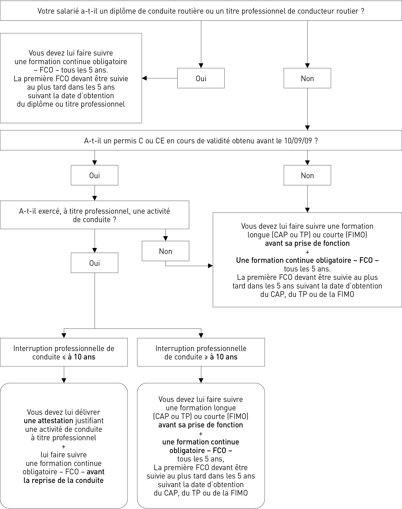
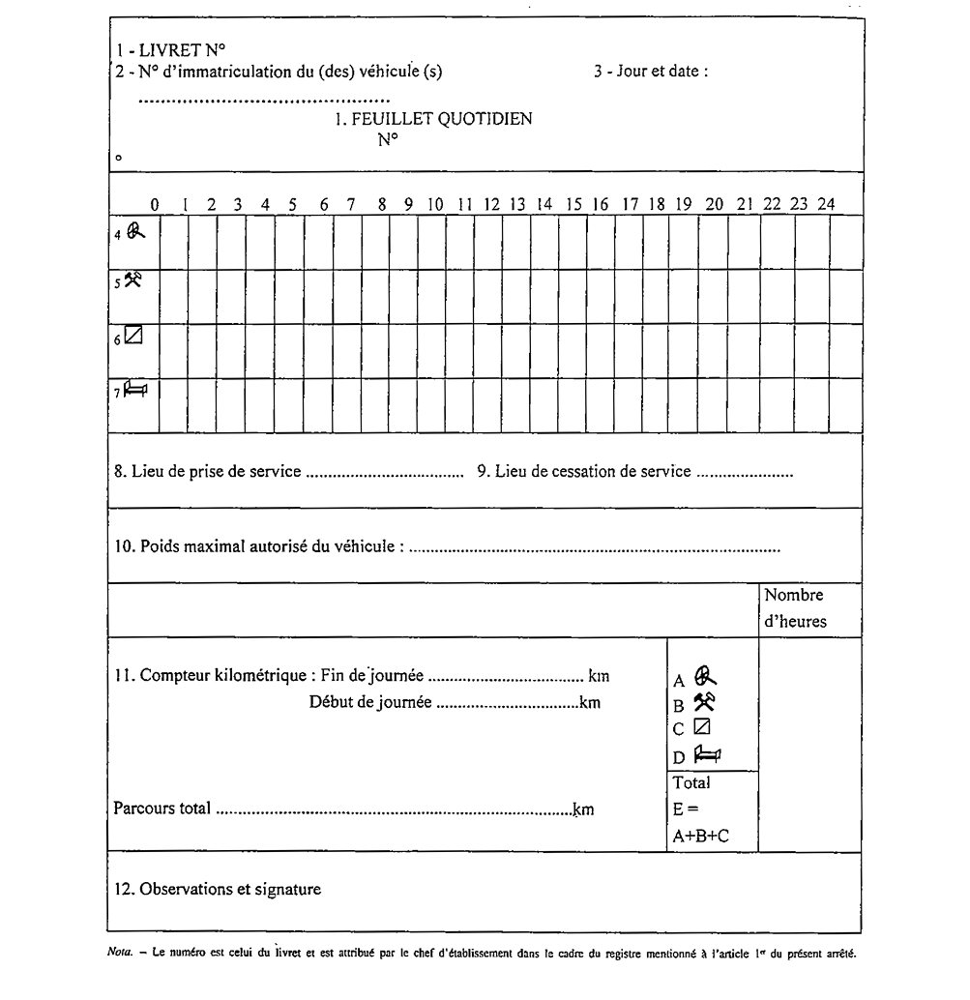

RÉGLEMENTATION ET GESTION SOCIALES
D 2
La Convention collective nationale du 21 décembre 1950 (étendue par arrêté du 1er février 1955) des transports routiers et des activités auxiliaires du transport (IDCC : 16 ; numéro de brochure JO : 3085) demeure toujours en cours de renégociation entre les partenaires sociaux. Cette renégociation et la réécriture de la Convention collective du TRM1 ont débuté en avril 2010, la finalité de cette démarche étant de moderniser et de simplifier le texte conventionnel. Les discussions entre les partenaires sociaux s’orientent, entre autres objectifs, vers une possible refonte des classifications d’emplois.
Ces renégociations conventionnelles s’inscrivent, plus largement, après les réformes du Code du travail par :
– les cinq ordonnances publiées le 23 septembre 2017 au Journal Officiel ;
– la loi n° 2018-771 du 5 septembre 2018 pour la liberté de choisir son avenir professionnel, portant sur la formation professionnelle, l’apprentissage, l’égalité professionnelle, imposant la publication de l’index sur l’égalité professionnelle ;
– la loi n° 2019-486 du 22 mai 2019 dite loi « PACTE » ayant modifié les seuils sociaux depuis le 1er janvier 2020 ; la mise en place des DREETS (Directions régionales de l’économie, de l’emploi, du travail et des solidarités) depuis le 1er avril 2021 ;
– la loi n° 2021-1018 du 2 août 2021 visant à renforcer la prévention en santé au travail, dite loi « santé » applicable depuis le 31 mars 2022, dont la disposition la plus connue consiste en l’obligation de conserver quarante ans le DUERP (Document Unique d’Evaluation des Risques Professionnels). Quant à l’obligation, pour les entreprises dotées d’un règlement intérieur, d’y intégrer le rappel de l’existence du dispositif de protection des lanceurs d’alerte, la loi n° 2022-401 du 22 mars 2022, JORF 22, l’impose depuis le 1er septembre 2022 ;
– enfin, la loi de financement rectificative de la sécurité sociale (LFRSS) n° 2023-270, 14 avril 2023, JORF 15, a, depuis le 1er septembre 2023, relève progressivement l’âge de départ en retraite en le passant de 62 à 64 ans avec 172 trimestres de cotisations pour les personnes nées après le 31 décembre 1967.
Au niveau conventionnel :
– l’accord du 16 juin 2023 sur le régime de fin d’activité des conducteurs routiers, étendu par arrêté du 16 août 2023, a évolué depuis le 1er septembre 2023, reportant progressivement l’âge minimal à 59 ans pour en bénéficier.
1. TRM : Transport routier de marchandises.
LES ORGANISMES ET OBLIGATIONS ADMINISTRATIFS
1
RÉGLEMENTATION ET GESTION SOCIALES
D 4
1.1 PRINCIPALES SOURCES DE LA RÉGLEMENTATION SOCIALE
1.1.1 LES PRINCIPES GÉNÉRAUX
Les règles qui régissent le droit social, d’une branche d’activité, d’une entreprise, trouvent leurs sources dans des textes d’origines diverses.
Il en est ainsi pour les entreprises de transport routier :
b Le Code du travail : il constitue la base de la législation et de la réglementation du travail et concerne tous les salariés du « privé », quel que soit leur secteur d’activité et parfois, selon leur statut, de la fonction publique. C’est un socle minimal qui détermine les droits et obligations de ces salariés.
b Le Code de la Sécurité sociale : il rassemble les dispositions législatives et réglementaires applicables aux entreprises et aux salariés en matière notamment de cotisations et de prestations.
b Le Code des transports : il rassemble les dispositions législatives et réglementaires spécifiques applicables aux entreprises et aux salariés dans la branche des transports routiers. L’article L. 1311-1 du Code des transports énonçant que « les dispositions du Code du travail s'appliquent aux entreprises de transport ferroviaire ou guidé, routier, fluvial ou aérien et aux entreprises d'armement maritime, ainsi qu'à leurs salariés, sous réserve des dispositions particulières ou d'adaptation prévues par le présent code et sauf mention contraire dans le Code du travail ou dans le présent code ».
b La Convention collective nationale des transports routiers et des activités auxiliaires du transport (CCNTRAAT) : Convention collective nationale de branche étendue par arrêté ministériel, elle définit les règles conventionnelles applicables entre employeurs et salariés de la branche des transports routiers.
b Les dispositifs précisés ci-dessus sont complétés d’une part par les accords collectifs de branche, d’entreprise ou d’établissement, d’autre part par les clauses des contrats de travail individuels.
Concernant l’ensemble de ces sources du droit social, il faut retenir qu’il existe une hiérarchie des normes en droit social dont l’articulation assez complexe – de la règle la plus élevée dans la hiérarchie des sources à la règle la moins élevée et en tenant compte du principe de faveur, bien que celui-ci connaisse aujourd’hui certaines exceptions – s’impose à l’employeur.
Au niveau national, mais aussi désormais de plus en plus souvent au niveau européen, la jurisprudence, par les positions prises et les interprétations faites par les tribunaux, constitue dans le domaine du droit social une source du droit dont l’importance peut s’avérer significative.
Il est précisé enfin que le règlement intérieur, élaboré par l’employeur, constitue une source non négligeable des règles à appliquer au sein de l’entreprise ou de l’établissement (une agence, par exemple).
1.1.2 LE CODE DU TRAVAIL
Il est structuré en une partie législative et une partie réglementaire. La partie législative contient tous les articles précédés de la lettre L. La partie réglementaire contient les articles précédés de la lettre R, ou D selon qu’ils correspondent à des dispositions relevant respectivement de décrets en Conseil d’état, en Conseil des ministres ou décrets simples.
Le Code du travail est par ailleurs subdivisé en 8 parties qui se déclinent chacune en plusieurs livres, titres, chapitres, sections et sous-sections :
Partie I : Les relations individuelles de travail.
Partie II : Les relations collectives de travail.
Partie III : La durée du travail, le salaire, l’intéressement, la participation et l’épargne salariale.
Partie IV : La santé et la sécurité au travail.
Partie V : L’emploi.
Partie VI : La formation professionnelle tout au long de la vie.
Partie VII : Dispositions particulières à certaines professions et activités.
Partie VIII : Contrôle de l’application de la législation du travail.
Enfin, certaines dispositions du Code du travail sont d’ordre pénal et traitent des sanctions auxquelles s’exposent les chefs d’entreprises et certains managers en cas de non-respect des obligations visées. Les domaines dans lesquels sont instituées des sanctions pénales sont notamment la durée du travail, la rémunération, le travail dissimulé, la représentation du personnel, l’hygiène et la sécurité.
1.1.3 LE CODE DES TRANSPORTS
Il est structuré en une partie législative et une partie règlementaire.
La partie législative contient tous les articles précédés de la lettre L. La partie réglementaire contient les articles précédés de la lettre R, ou D selon qu’ils correspondent à des dispositions relevant respectivement de décrets en Conseil d’État ou décrets simples.
Le Code des transports est par ailleurs subdivisé en 6 parties qui se déclinent chacune en plusieurs livres, titres, chapitres, sections et sous-sections :
1) Dispositions communes.
2) Transport ferroviaire ou guidé.
3) Transport routier.
4) Navigation intérieure et transport fluvial.
5) Transport et navigation maritimes.
6) Aviation civile.
Les entreprises de transport public routier de marchandises sont concernées, pour leur part, par les dispositions législatives et réglementaires de la partie I « Dispositions communes » et de la partie III « Transport routier ». Le livre III de la IIIe partie réglementaire traite notamment de la réglementation du travail spécifique au transport routier.
Les organismes et obligations administratifs
D 5
1.1.4 Les SOURCES CONVENTIONNELLES
Il s’agit des conventions et accords collectifs de travail qui découlent de la négociation entre d’une part :
– une ou plusieurs organisations syndicales d’employeurs ;
– un groupement d’employeurs ;
– un ou plusieurs employeurs pris individuellement ;
et d’autre part,
– une ou plusieurs organisations syndicales de salariés ayant fait la preuve de sa (leur) représentativité dans le champ d’application de la convention ou de l’accord (C. trav., art. L. 2121-1, L. 2122-1 à L. 2122-12).
Les conventions et accords collectifs du travail peuvent comporter des dispositions plus favorables aux salariés que celles des lois et règlements en vigueur. Ils ne peuvent cependant déroger aux dispositions qui revêtent un caractère d’ordre public (C. trav., art. L. 2251-1). Ils sont conclus au niveau interprofessionnel ou d’une branche professionnelle ou d’une entreprise.
Concernant les critères de représentativité des organisations syndicales et la validité des accords et conventions, voir le point 2.2 : Le droit syndical.
b La Convention collective
La Convention collective nationale des transports routiers et des activités auxiliaires du transport est une convention étendue par un arrêté du 1er février 1955 du ministre du Travail et s’applique à toutes les entreprises comprises dans son champ d’application exerçant leur activité sur le territoire français, qu’elles soient ou non adhérentes à une organisation patronale signataire.
Tous les employeurs et tous les salariés de ces entreprises sont donc soumis aux dispositions de la Convention collective.
La Convention collective nationale des transports routiers et des activités auxiliaires du transport a été conclue entre, d’une part, les organisations patronales suivantes :
b L’Union des fédérations de transport (UFT) qui regroupe actuellement les organisations patronales suivantes :
– la Fédération nationale des transports routiers (FNTR) qui regroupe elle-même la Chambre syndicale des entreprises de déménagements et garde-meubles de France (CSD), l’Union nationale des Organisations syndicales des transporteurs routiers automobiles (Unostra) et la Fédération nationale des ambulanciers privés ;
– L’Union des entreprises de transport et logistique de France ;
– La Confédération nationale de la mobilité (CNM) qui regroupe la Fédération nationale des transports de voyageurs (FNTV), la Fédération des entreprises de la sécurité fiduciaire (Fédesfi) et la Chambre nationale des services d’ambulances (CNSA).
b L’Organisation des transporteurs routiers européens (OTRE).
b Et d’autre part, les organisations de salariés suivantes :
– la Fédération nationale des syndicats de transports FNST- CGT ;
– la Fédération nationale des transports et de la logistique FO-UNCP ;
– la Fédération générale des transports et de l’équipement FGTE-CFDT, branche route marchandises et voyageurs ;
– la Fédération générale des transports CFTC ;
– le Syndicat national des activités du transport et du transit CFE-CGC ;
– la Fédération nationale des chauffeurs routiers FNCR.
La Convention collective nationale des transports routiers et des activités auxiliaires du transport (CCNTRAAT) comprend une partie principale et sept annexes :
b La Convention collective nationale principale (CCNP) : champ d’application de la convention, dispositions communes applicables aux diverses catégories de salariés, telles que contrat individuel de travail, durée du travail, congés, organisation sociale interne.
b La Convention collective nationale annexe 1 (CCNA1) : dispositions particulières aux ouvriers (conducteurs notamment).
b La Convention collective nationale annexe 2 (CCNA2) : dispositions particulières aux employés.
b La Convention collective nationale annexe 3 (CCNA3) : dispositions particulières aux techniciens et agents de maîtrise.
b La Convention collective nationale annexe 4 (CCNA4) : dispositions particulières aux ingénieurs et cadres.
b La Convention collective nationale annexe 5 (CCNA5) : dispositions relatives aux régimes complémentaires de retraite et de prévoyance.
b La Convention collective nationale annexe 6 (CCNA6) : dispositions relatives à la participation des salariés aux résultats de l’entreprise.
b La Convention collective nationale annexe 7 (CCNA7) : dispositions relatives à la formation professionnelle et à l’emploi.
La Convention collective doit faire l’objet d’une publicité dans les entreprises :
Un avis, indiquant son existence et les modalités de consultation, doit être communiqué par tout moyen aux salariés (C. trav., art. R. 2262-3).
Un exemplaire de la convention est tenu à la disposition du personnel, y compris sur un intranet si l’entreprise en est dotée (C. trav., art. R. 2262-1).
Un exemplaire est également remis à chaque institution représentative du personnel dans l’entreprise (C. trav., art. R. 2262-2).
La Convention collective n’est pas figée : elle évolue constamment à la suite des négociations menées entre partenaires sociaux.
Par exemple, il y a au moins une négociation annuelle qui porte sur les salaires (C. trav., art. L. 2241-8).
La Convention collective est actualisée par avenants ; elle est complétée par des accords et protocoles d’accord nationaux, pour la plupart étendus.
Les partenaires sociaux doivent instituer une Commission paritaire permanente de négociation et d’interprétation permanente de négociation et d’interprétation de la branche (C. trav., art. L. 2232-9). Elle est chargée principalement de représenter la branche, veiller sur les conditions de travail et d’emploi, donner des avis sur l’interprétation de la convention ou d’un accord, établir un bilan annuel de ses activités.
RÉGLEMENTATION ET GESTION SOCIALES
D 6
Cette convention collective, complétée par des accords et protocoles est consultable sur le site https://www.legifrance.gouv.fr. (n° de brochure : 3085 et IDDC 16).
Il est à noter que l’employeur doit se conformer strictement aux dispositions de la CCN et, dans l’hypothèse où celui-ci remplacerait un avantage conventionnel par un autre, différent mais plus favorable aux salariés, il pourrait être sanctionné par les tribunaux. Tel a été le cas d’un autocariste ayant substitué – en accord avec ses délégués du personnel – à l’indemnité conventionnelle de repas une indemnité de panier complétée par un titre-restaurant : les chauffeurs ont demandé en justice le paiement de l’indemnité de repas prévue par la Convention collective et la Cour de cassation a fait droit à leur demande, par arrêt du 4 février 2015, n° de pourvoi 13-280481 publié au Bulletin de la Cour, dont voici l’attendu de principe : « Si l’employeur peut, par un engagement unilatéral, accorder des avantages supplémentaires à ceux résultant d’une convention ou d’un accord collectif, il ne peut substituer à ces avantages conventionnels des avantages différents ; que les titres-restaurants, qui permettent à un salarié d’acquitter en tout ou partie le prix d’un repas […] ne sauraient être assimilés à l’indemnité de repas prévue par […] la convention collective des transports routiers, laquelle a pour objet, par l’octroi d’une somme forfaitaire, de compenser le surcoût du repas consécutif à un déplacement ».
b Les accords d’entreprise et d’établissement
Des conventions peuvent être conclues au niveau d’une entreprise ou d’un établissement, telles que précisées au point 2.2.3.2 ci-après.
} Procédure de négociation
L’objet des négociations est fixé par accord entre les parties (C. trav., art. L. 2241-4 et 5, L. 2242-10 et 11) et, selon le cas, soit, le temps passé à la négociation est rémunéré comme temps de travail (C. trav., art. L. 2321-5, L. 2232-18 et L. 2232-27), soit les salaires sont maintenus, soit les pertes de salaires sont compensées (C. trav., art. L. 2232-3 et 8).
} Contenu de la convention et accords collectifs (C. trav., art. L. 2221-1 et 2)
La Convention collective traite de l’ensemble des conditions d’emploi, de formation professionnelle, de travail et des garanties sociales des salariés.
Un accord collectif traite un ou plusieurs sujets parmi ceux que traite la convention collective.
} Publicité des conventions et accords
Les conventions ou accords d’entreprises sont publiés sur le site https://www.legifrance.gouv.fr.
1.1.5 le contrat de travail
Le contrat de travail définit les règles qui lient le salarié et l’employeur ; sa confirmation par un document écrit est rendue obligatoire par la Convention collective (Art. 11 CCNP, 3 bis CCNA1, 11 CCNA2, 12 CCNA3, 9 CCNA4). Il est la base de la relation de travail et traite des conditions particulières qui ne seraient pas définies, ni dans le Code du travail, ni dans la convention collective.
Le contrat de travail tient donc lieu de loi entre les parties.
Mais cette liberté contractuelle n’est pas illimitée ; en effet, afin de protéger le salarié il n’est pas possible de déroger par contrat aux règles sociales d’ordre public.
Le contrat de travail détermine, entre autres informations, la nature de l’emploi occupé par le salarié, la durée du travail, la classification et le coefficient retenus en application de la Convention collective, le montant de la rémunération convenue contractuelle, les obligations particulières propres à l’entreprise, à son activité et à l’emploi occupé par le salarié.
Certaines clauses spécifiques peuvent être portées au contrat, par exemple :
– clause de non-concurrence ;
– clause de mobilité géographique ;
– clause de dédit formation.
Pour être opérantes, ces clauses doivent faire l’objet d’une rédaction particulièrement soigneuse, en parfaite adéquation avec les évolutions législatives, réglementaires, conventionnelles et jurisprudentielles.
En ce qui concerne les conducteurs, les entreprises ont tout intérêt à contractualiser les obligations particulières relatives au respect du Code de la route, des temps de conduite et de repos ainsi qu’à l’utilisation correcte de l’appareil de contrôle numérique et/ou analogique.
En effet, en cas d’infractions, l’employeur devra, pour s’exonérer de sa responsabilité pénale, pouvoir démontrer qu’il avait tout mis en œuvre – y compris des sanctions disciplinaires – pour que les conducteurs respectent les réglementations. Une clause expresse dans le contrat de travail peut contribuer à cette démonstration.
1.1.6 les règles communautaires
En complément des règles nationales énumérées ci-dessus, les règles sociales applicables en France dépendent également : des directives, règlements, traités et conventions élaborés au niveau communautaire. Ceci est le cas pour le secteur du transport routier qui est soumis en particulier :
– au règlement2 (CE) n° 561/2006 relatif à l’harmonisation de certaines dispositions en matière sociale dans le domaine des transports par route (ce règlement est développé dans le chapitre 4 de cette partie) ;
– au règlement (UE) n° 165/2014 du Parlement européen et du Conseil européen du 4 février 2014 relatif aux tachygraphes dans les transports routiers ;
– au règlement UE 2020/1054 du parlement européen et du conseil du 15 juillet 2020 ;
– à des traités et conventions, élaborés sous l’égide de l’Organisation internationale du travail (OIT), relatifs à l’harmonisation du droit dans les différents pays de l’Organisation des Nations unies (Onu) au travers de règles communes. Ces règlements et traités s’appliquent de plein droit et s’imposent par rapport aux
2. Règlement communautaire : acte de portée générale du Conseil européen ou de la Commission, obligatoire dans tous ses éléments et directement applicable dans tout État membre de l’Union.
Les organismes et obligations administratifs
D 7
réglementations internes existantes dans les différents pays de l’UE. Les directives1 et les conventions quant à elles ne deviennent applicables qu’après le vote d’une loi de transposition au sein de chaque pays de l’Union européenne et dans les 3 ans qui suivent, au plus tard, la publication de la directive au JOUE. À titre d’exemple, on citera la directive 2006/22/CE du Parlement européen et du Conseil du 15 mars 2006 établissant les conditions minimales à respecter pour la mise en œuvre des règlements (CE) n° 561/2006 et (UE) n° 165/2014 et de la directive 2002/15/CE en ce qui concerne la législation sociale relative aux activités de transport routier, et abrogeant la directive 88/599/CEE du Conseil.
1.2 Les principales institutions
1.2.1 Le régime d’assurance chômage
L’assurance chômage (Unedic) est gérée par France Travail ayant les missions suivantes :
– l’accueil et l’inscription des demandeurs d’emploi ;
– le versement des allocations des demandeurs d’emploi indemnisés ;
– l’accompagnement des demandeurs d’emploi dans leur recherche d’emploi jusqu’au placement ;
– la prospection du marché du travail en allant au-devant des entreprises ;
– l’aide aux entreprises dans leurs recrutements ;
– l’analyse du marché du travail.1
L’aide aux travailleurs privés d’emploi est assurée, en France, dans le cadre de deux régimes, de nature différente, mais complémentaire :
– un régime d’assurance-chômage dont le financement est assuré par des cotisations patronales et salariales et qui est géré paritairement par les organisations représentatives des employeurs et des salariés au sein de France Travail aux différents niveaux de son organisation ;
– un régime de solidarité nationale financé par l’État, qui verse des allocations aux personnes qui ne peuvent bénéficier du régime d’assurance chômage. Ce régime est géré par France Travail aux différents niveaux de son organisation.
Dans le cadre d’un recrutement d’un ou de plusieurs salariés, l’employeur peut déposer ses offres d’emploi auprès de France Travail. De même, il peut demander auprès de cet organisme des aides au recrutement et à la formation ou des mesures à l’embauche, par exemple : aide à l’embauche d’un jeune en CDI (exonération des cotisations patronales d’assurance chômage sur une certaine période)…
Lorsqu’une entreprise réduit son activité au-dessous de l’horaire légal ou arrête momentanément tout ou partie de son activité et qu’elle n’entend pas rompre les contrats de travail qui la lient à ses salariés, elle peut avoir recours au chômage partiel, plus précisément dénommé « activité partielle » dans le Code du travail.
Le système d’indemnisation de l’activité partielle permet de gérer une baisse d’activité ponctuelle, limitée dans le temps et ayant pour cadre l’année civile.
Le dispositif du placement de tout ou d’une partie des salariés en activité partielle a pour but d’éviter des licenciements : il permet à une entreprise qui subit une baisse d’activité de réduire temporairement les horaires de ses effectifs.
Les salariés ayant fait l’objet d’une procédure de licenciement pour motif économique peuvent bénéficier du Contrat de sécurisation professionnelle (CSP) (C. trav., art. L. 1233-65 à L. 1233-70) dans les entreprises employant moins de 1000 salariés, donc non soumises à l’obligation de proposer le congé de reclassement, et celles en redressement judiciaire quel que soit l’effectif.
1.2.2 LE RÉGIME COMPLÉMENTAIRE
DE RETRAITE ET DE PRÉVOYANCE
Le régime général de la Sécurité sociale n’assure aux travailleurs salariés qu’une garantie minimale à laquelle s’ajoutent obligatoirement les prestations d’un régime complémentaire pour les salariés non-cadres, de deux régimes complémentaires pour les cadres et assimilés. La Convention collective nationale annexe 5 a rendu obligatoire l’adhésion à la Carcept (Caisse autonome de retraire complémentaire et de prévoyance du transport) aux entreprises de transports de marchandises et de déménagement.
Déclaration
L’adhésion s’effectue dans les 3 mois de la création de l’entreprise même si celle-ci n’occupe pas de salarié.
Elle doit, en outre, affilier tous ses salariés, dès la première journée de travail, quels que soient l’âge et la durée de service.
1.2.2.1 PRESTATIONS
Ce régime donne droit à :
– une retraite complémentaire pour les anciens salariés du transport ;
– une pension de réversion au conjoint survivant ;
– une rente en cas d’invalidité et/ou de perte d’emploi pour inaptitude médicale à la conduite ;
– un capital-décès.
1. Directive communautaire : acte normatif du Conseil ou de la Commission des Communautés européennes qui lie tout État membre destinataire quant au résultat à atteindre, tout en laissant aux instances nationales la compétence quant à la forme et aux moyens. Une directive est une décision de droit communautaire visant à favoriser l’harmonisation des législations nationales des États membres de l’Union européenne. Elle impose aux États membres un objectif à atteindre, tout en leur laissant le choix quant aux moyens d’y parvenir (lois, décrets, principes généraux). Contrairement au règlement européen, qui s’impose directement aux ressortissants de l’Union, la directive n’a pas vocation à s’appliquer directement aux entreprises et aux particuliers, et nécessite une transposition en droit interne.
RÉGLEMENTATION ET GESTION SOCIALES
D 8
1.2.2.1.1 Le compte personnel de prévoyance
Chaque salarié non-cadre dispose d’un compte personnel de prévoyance, qui l’accompagnera tout au long de sa carrière dans la branche professionnelle.
Ce compte personnel de prévoyance est composé :
– de points d’activité attribués tout au long de la carrière du salarié en fonction de sa rémunération. En cas de suspension du contrat de travail, les points sont attribués au salarié dès lors qu’il bénéficie d’un maintien total ou partiel de sa rémunération ou d’indemnités journalières complémentaires financées en partie par l’entreprise. Ce compte a été initialisé au 1er janvier 2017 pour chaque salarié du transport et automatiquement alimenté par les points acquis au titre des périodes cotisées antérieures ;
– de points de solidarité obtenus tout au long de la carrière du salarié au titre d’actions de prévention auxquelles il a participé ou en fonction de sa situation personnelle ou encore des évènements de vie rencontrés. Le salarié peut consulter ses points et déclarer les actions de prévention auxquelles il participe par le biais d’un portail mis à disposition par Carcept-prév sur son site Internet.
En cas de décès, d’invalidité ou d’inaptitude à la conduite :
– les points d’activité permettront de déterminer les seuils et niveaux d’accès aux prestations de prévoyance ;
– les points de solidarité permettront, à la demande du salarié, d’améliorer les prestations servies et pourront être utilisées pour bénéficier de services d’accompagnement.
Exemple
Pierre a 46 ans. Il a débuté son métier en janvier 1997. Depuis 20 ans, il travaille pour une entreprise de transport routier de marchandises. Imaginons que ses années travaillées dans le secteur sont converties en 2 600 points d’activité sur son compte personnel de prévoyance. En mars 2017, Pierre a suivi des formations sur la nutrition et fait un dépistage des risques cardiaques. Il a déclaré ses actions de prévention sur son compte et a obtenu 50 points de solidarité. En janvier 2019, Pierre a un grave accident avec son véhicule. Il est déclaré invalide 2e catégorie, il ne pourra plus exercer son métier. Grâce à ses 2 640 points d’activité (2 600 + 240 points acquis en 2017 et 2018), il peut percevoir une rente complémentaire à celle de la Sécurité sociale, égale à 25 % de son salaire. Ses 50 points de solidarité lui permettront notamment de bénéficier d’une assistance à son retour de l’hôpital.
Pour consulter ses points et déclarer les actions de prévention auxquelles il participe, le salarié se connecte sur le portail spécialement conçu par Carcept-Prév, accessible depuis le site carcept-prev.fr
1.2.2.1.2 Le fonds de haut degré de solidarité
Ce fonds, créé par l’accord du 20 avril 2016, a pour vocation de financer les actions de prévention santé et les services d’accompagnement dont peuvent bénéficier les salariés en cas de décès, d’invalidité et/ou d’inaptitude à la conduite.
Le haut degré de solidarité s’exprime sous la forme d’actions de prévention des risques santé et professionnels et d’une politique de solidarité et d’action sociale pilotée par les partenaires sociaux.
Les objectifs de ce fonds sont :
– renforcer la prévention santé des salariés ;
– réduire les arrêts de travail ;
– mettre en place une action sociale dédiée.
Le fonds est piloté par une commission paritaire de gestion des régimes de prévoyance, instituée par l’accord du 20 avril 2016.
Cette commission détermine notamment la nature des actions de prévention santé et d’accompagnement des salariés ainsi que les actions ouvrant droit à l’attribution de points de solidarité.
Le fonds de haut degré de solidarité est financé par une cotisation de 0,05 %, répartie à parts égales entre l’employeur et le salarié (quote-part intégrée dans le taux de cotisation garantie décès-invalidité de 0,70 %).
1.2.2.1.3 Les garanties décès-invalidité
Carcept-Prév assure et gère un régime de prévoyance obligatoire pour les salariés non-cadre du secteur du transport, prévoyant des garanties en cas de décès ou d’invalidité.
Les prestations invalidité sont servies sous forme de rente. La rente, représentant 15 % à 30 % du salaire de référence, est calculée sur la base des points d’activité acquis par le salarié concerné, sans critère d’âge ni d’ancienneté.
Les garanties décès sont, quant à elles, étendues.
1.2.2.1.4 La garantie inaptitude à la conduite
Les conducteurs de véhicules nécessitant la possession des permis C, C1, CE, C1E, D, DE, D1 ou D1E bénéficient d’un régime de prévoyance particulier couvrant le risque d’inaptitude physique à la conduite pour raisons médicales conduisant à la perte de l’emploi. Ce régime de garantie est géré par l’Institution de prévoyance de l’inaptitude à la conduite (Ipriac).
Ce régime de garantie est financé par une cotisation de 0,35 % des rémunérations brutes soumises aux cotisations de Sécurité sociale. Cette cotisation, répartie à hauteur de 60 % minimum à la charge de l’employeur et 40 % maximum à la charge du salarié, est collectée par Carcept-prév pour le compte de l’Ipriac.
Pour bénéficier de cette garantie, le salarié d’une entreprise adhérente au régime doit :
b Justifier de la perte de son remploi de conduite pour une des raisons suivantes :
– retrait définitif ou suspension pour une durée indéterminée du ou des permis de conduire par décision préfectorale ;
– retrait du certificat spécial de capacité à la conduite par le service de la médecine du travail habilité ;
– déclaration d’inaptitude définitive à la conduite par la médecine du travail.
b Être reconnu inapte à la conduite de façon définitive par la commission médicale de l’Ipriac.
Le montant et la nature des prestations dépendent du nombre de points d’activité acquis au jour de la reconnaissance de l’inaptitude par la commission médicale.
Les organismes et obligations administratifs
D 9
En fonction du nombre de points d’activité acquis, les prestations vont d’un capital représentant 1 mois de salaire à une rente équivalente à 35 % du salaire de référence.
(Source : www.carcept-prev.fr et Protocole d’accord
du 24 septembre 1980 modifié, sur la mise en place
d’un régime de prévoyance d’inaptitude à la conduite)
Le CFA est financé conjointement par les employeurs, les salariés et l’État afin de répondre à des considérations humaines, sociales et à des exigences de sécurité.
1.2.3 LE FONGECFA
Les conducteurs routiers ont, en application de l’accord national conclu le 28 mars 1997 la possibilité de cesser, sous certaines conditions, leur activité dans le cadre du Congé de fin d’activité (CFA). Par accord national en date du 11 avril 1997, les partenaires sociaux ont créé le Fongecfa afin de gérer ce fonds.
Le financement est assuré de la manière suivante :
b Une cotisation payée par les entreprises et les conducteurs et dont le taux est fixé à 2,75 % des salaires bruts du personnel de conduite. Cette cotisation est répartie à raison de 1,65 % pour l’entreprise et 1,10 % pour les conducteurs. Elle est destinée à couvrir : à partir de 57 ans, le paiement des allocations de CFA et des cotisations assurance maladie et vieillesse du régime général ainsi que les cotisations de retraite complémentaire à hauteur de 50 % environ.
b Une subvention versée par l’État.
1.2.4 LA MÉDECINE DU TRAVAIL
La loi donne un caractère exclusivement préventif à la médecine du travail.
L’organisation de services médicaux du travail est obligatoire quel que soit l’effectif des établissements, mais cette organisation diffère selon le niveau de cet effectif et le degré du risque professionnel.
Dans tous les cas, le service médical du travail doit être agréé par le ministre chargé du Travail. Les services médicaux du travail peuvent être autonomes, c’est-à-dire propres à une entreprise. Ils sont alors administrés par l’employeur et placés sous la surveillance du Comité social et économique (CSE), ce qui suppose déjà une entreprise d’une certaine importance. Ils peuvent également être interentreprises. Dans ce cas, le chef d’entreprise est obligé d’adhérer à ce service interentreprises.
La médecine du travail fonctionne grâce aux cotisations obligatoires payées par les employeurs. Les médecins du travail et les infirmiers surveillent l’état de santé des salariés et s’assurent que le travail s’effectue dans des conditions d’hygiène et de sécurité satisfaisantes.
La surveillance médicale donne lieu à des Visites d’information et de prévention (VIP), à des examens périodiques et à des visites dites de « pré-reprise » et/ou « de reprise », ces dernières ayant un caractère obligatoire.
La Visite d’information et de prévention (VIP) pratiquée par un membre de l’équipe pluridisciplinaire en santé au travail doit être organisée dans les 3 mois qui suivent la prise de poste (C. trav., art. R. 4624-10 à R. 4624-15) sauf si le salarié a déjà bénéficié d’une telle visite dans les 5 années précédentes. Pour les travailleurs de nuit et les travailleurs de moins de 18 ans, la VIP doit être réalisée avant l’affectation au poste de travail.
La VIP est réalisée par un professionnel de santé du travail (collaborateur médecin du travail, interne en médecine du travail, infirmier) pour vérifier si le salarié ne présente pas de risques particuliers et s’il est nécessaire qu’il rencontre un médecin du travail.
La visite d’information et de prévention est renouvelée selon une périodicité fixée par le service de santé au travail et au moins tous les 5 ans, sauf pour les travailleurs de nuit, les jeunes mineurs, les travailleurs handicapés et bénéficiaires d’une pension d’invalidité (tous les 3 ans) (C. trav., art. R. 4624-16 et 17).
Quant aux salariés affectés sur des postes à risques, leur aptitude est vérifiée par le médecin du travail préalablement à leur entrée en fonctions – suivi médical renforcé nécessitant une Visite médicale d’aptitude (VMA) – et ils bénéficient d’un Examen médical d’aptitude (EMA) tous les 4 ans maximum et d’une visite intermédiaire réalisée par un professionnel de santé tous les 2 ans (C. trav., art. R. 4624-28).
En application de l’article L. 4624-2-1 du Code du travail, les modalités de mise en place d’une visite médicale de « fin de carrière » sont déterminées aux articles R. 4624-28-1 à 3 ; en cas de besoin, elle vise à mettre en place une surveillance post-professionnelle en lien avec le médecin traitant.
Enfin, concernant les conducteurs de poids lourds, ils ne relèvent pas de dispositions spécifiques, de type postes à risque (C. trav., art. R. 4624-23). En effet, seuls les postes soumis à autorisation de conduite pour l’utilisation de certains équipements de travail mobiles ou servant au levage relèvent des postes à risque au sens des articles R. 4624-23 (I & II) et R. 4323-56 du Code du travail. En conséquence, les conducteurs de poids lourds relèvent du suivi médical de droit commun prévu par le Code du travail, excepté ceux reconnus comme travailleurs de nuit. Ils restent cependant soumis, mais au titre des dispositions prévues au Code de la route à un « contrôle médical d’aptitude à la conduite » lié à la délivrance de certaines catégories de permis de conduire (permis C1, C1E, C et CE) effectué par un médecin agréé par le préfet (Décret n° 2022-1177 du 24 août 2022 modifiant l’article R. 221-11 du Code de la route instaurant une périodicité qui ne peut excéder cinq ans pour ce type de visite).
Une visite médicale de pré-reprise peut être réalisée par le médecin du travail pour les travailleurs en arrêt de travail de plus de 30 jours. Le médecin émet ensuite des recommandations afin que des mesures soient mises en œuvre en vue de favoriser le maintien dans l’emploi du travailleur (C. trav., art. R. 4624-29 et 30).
RÉGLEMENTATION ET GESTION SOCIALES
D 10
Un examen de reprise, (C. trav., art. R. 4624-29 à R. 4624-33) est par ailleurs effectué :
– après une absence pour maladie non professionnelle d’au moins 60 jours ;
– après une absence pour maladie professionnelle, congé maternité ;
– après une absence d’au moins 30 jours pour cause d’accident de travail.
La visite médicale de reprise doit avoir lieu au plus tard dans un délai de 8 jours suivant la reprise du travail.
Elle sert à vérifier si le salarié est apte à reprendre le travail avec la mise en oeuvre de mesures d’adaptation, ou à lui proposer un reclassement ou enfin à émettre un avis d’inaptitude.
La protection contre le licenciement des salariés victimes d’accident du travail ou d’une maladie professionnelle prend fin à la visite de reprise.
Il est important également de souligner que le chef d’entreprise est tenu de prendre en considération les propositions et restrictions qui lui sont présentées par le médecin du travail, notamment en ce qui concerne les mutations de postes, l’application de la législation sur les emplois réservés et les améliorations des conditions d’hygiène et de sécurité des conditions de travail.
Enfin, des évolutions relatives au suivi des salaries ont été instaurées par la loi du n° 2021-1018 du 2 août 2021, dite loi « santé » : il s’agit de la visite médicale obligatoire de mi-carrière durant l’année civile des 45 ans et du rendez-vous facultatif de liaison afin de maintenir le lien entre le salarié et l’employeur pendant un arrêt de travail.
En résumé :
Médecine du travail
b Caractère exclusivement préventif.
b Caractère obligatoire pour l’employeur quel que soit l’effectif. Il peut :
– soit recourir à un service propre à l’entreprise ;
– soit adhérer à un service interentreprises.
b Rôle du service de santé au travail :
– se prononcer sur l’aptitude au travail des salariés ;
– surveiller l’état de santé des salariés ;
– s’assurer que le travail s’effectue dans des conditions d’hygiène et de sécurité satisfaisantes.
b Différentes types de visites médicales obligatoires :
– visite d’information et de prévention (VIP) ;
– visites périodiques adaptées à l’état de santé du salarié ;
– visite de mi-carrière ;
– visite de fin de carrière ;
– visites de reprise et de pré-reprise.
1.2.5 Les conseils de prud’hommes
Le Conseil de prud’hommes (CPH) est une juridiction de première instance spécialisée devant laquelle les règles de procédure issues du Code de procédure civile (CPC) s’appliquent. Cette juridiction paritaire a pour compétence exclusive de juger les litiges individuels en droit du travail. Un conseil de prud’hommes est organisé en plusieurs sections : encadrement, industrie, commerce et services commerciaux, agriculture, activités diverses. La section « agriculture » peut ne pas exister selon le nombre et la variété des affaires traitées. Chaque section peut être organisée en chambres.
La juridiction prud’homale est une juridiction paritaire et désignative :
– paritaire : chaque formation (conseil, section, chambre…) est composée à parts égales de conseillers employeurs et salariés désignés, parmi des listes présentées par les organisations syndicales, pour les conseillers salariés et des listes présentées par les organisations patronales, pour les conseillers employeurs ; chaque section comporte au minimum 3 conseillers employeurs et 3 conseillers salariés ;
– désignative : les Conseillers prud’hommes sont nommés par le garde des Sceaux, à partir de listes proposées par les organisations syndicales et patronales représentatives, en fonction de leur audience respective et, à parité entre hommes et femmes, tous les 4 ans.
Chaque section comprend au moins :
– un bureau de conciliation ;
– un bureau de jugement ;
– une formation de référé.
La procédure prud’homale impose de saisir la juridiction par requête motivée.
b Bureau de conciliation
Le bureau de conciliation, dénommé « bureau de conciliation et d’orientation » (C. trav., art. L. 1454-1 et suivants) dispose de pouvoirs accrus afin d’orienter l’affaire devant l’une des formations du bureau de jugement en vue de réduire les délais de traitement des litiges.
La Conciliation demeure une étape obligatoire devant le Conseil de prud’hommes, sauf dans les matières, où, en raison de l’urgence, la loi exonère les parties de cette étape, par exemple suite à une prise d’acte de la rupture ou en matière de requalification de Contrat à durée déterminée (CDD) en Contrat à durée indéterminée (CDI).
Si, lors de l’audience de conciliation, une partie ne comparaît pas personnellement ou n’est pas représentée sans motif légitime, le Bureau de conciliation pourra désormais juger l’affaire au fond en l’état des pièces et moyens que la partie comparante aura contradictoirement communiqués. Dans cette hypothèse, le Bureau de conciliation statuera en tant que Bureau de jugement en formation restreinte, par application des dispositions de l’article L. 1454-1-3 du Code du travail.
Dans le cadre de sa mission de conciliation, le Bureau de conciliation pourra entendre chacune des parties séparément et confidentiellement, par application des dispositions de l’article L. 1454-1 du Code du travail.
Si la conciliation échoue, le Bureau de conciliation procédera à la mise en état du dossier (C. trav.,art. L. 1454-1-2)
Les organismes et obligations administratifs
D 11
après avoir désigné, au besoin, un ou deux conseillers rapporteurs susceptibles de prescrire toute mesure nécessaire d’instruction.
Ensuite, le Bureau de conciliation renverra l’affaire devant le Bureau de jugement, par application des dispositions de l’article L. 1454-1-1 du Code du travail, réuni, soit en formation restreinte, soit en formation classique ou encore en formation de départage. Devant la formation restreinte du Bureau de jugement, composée d’un conseiller employeur et d’un conseiller salarié, chargée de statuer dans un délai de 3 mois, pourront être renvoyés devant cette formation les litiges portant sur un licenciement ou une demande en résiliation judiciaire du contrat de travail, à condition que les parties aient donné leur accord.
Enfin, le Bureau de conciliation pourra, dans certaines hypothèses, renvoyer une affaire directement devant la formation de départage présidée par un juge professionnel si les parties le demandent ou si la nature du litige le justifie. En cas de renvoi direct devant cette formation, le Conseil de prud’hommes devra être complet et le juge professionnel ne pourra statuer seul, selon les dispositions de l’article L. 1454-1-1 2° du Code du travail.
Les juges départiteurs sont désignés parmi les magistrats professionnels du Tribunal judiciaire (TJ).
Le barème de l’indemnité forfaitaire en cas d’accord de conciliation prévu à l’article D. 1235-21 du Code du travail permet, lorsqu’un salarié conteste son licenciement devant le Conseil de prud’hommes de mettre un terme au litige qui l’oppose à l’employeur lors de la phase de conciliation prud’homale sous réserve de payer une indemnité forfaitaire, à la charge de l’employeur. Le montant de l’indemnité forfaitaire de conciliation est fixé comme suit en fonction de l’ancienneté du salarié chez l’employeur :
– 2 mois de salaire pour une ancienneté inférieure à 1 an ;
– 3 mois de salaire pour une ancienneté comprise entre 1 an et moins de 8 ans auquel s’ajoute 1 mois de salaire par année supplémentaire jusqu’à 8 ans d’ancienneté ;
– 10 mois de salaire pour une ancienneté comprise entre 8 ans et moins de 12 ans ;
– 12 mois de salaire pour une ancienneté comprise entre 12 ans et moins de 15 ans ;
– 14 mois de salaire pour une ancienneté comprise entre 15 ans et moins de 19 ans ;
– 16 mois de salaire pour une ancienneté entre 19 ans et moins de 23 ans ;
– 18 mois de salaire pour une ancienneté entre 23 ans et moins de 26 ans ;
– 20 mois de salaire pour une ancienneté entre 26 ans et moins de 30 ans ;
– 24 mois de salaire pour une ancienneté au moins égale à 30 ans.
Un procès-verbal ayant valeur de transaction constatant l’accord vaudra renonciation des parties à toutes réclamations ultérieures.
Enfin, les articles L. 1442-1 et suivants du Code du travail énoncent les dispositions relatives à la formation, aux obligations et à la discipline des conseillers prud’hommes.
b Bureau de jugement (BJ) :
– les parties sont convoquées par lettre recommandée avec accusé de réception ;
– le jugement est décidé à la majorité des conseillers. Il est ensuite notifié aux parties ;
– en cas de départage, l’affaire est renvoyée devant le juge départiteur, magistrat professionnel qui jugera l'affaire ;
– le conseil de prud’hommes statue en dernier ressort si les demandes n’excèdent pas 5 000 € (C. trav., art. D. 1462-3).
Le jugement ne peut alors faire l’objet que d’un recours devant la Cour de cassation, chambre sociale.
Lorsqu’il est possible de faire appel, le délai d’appel s’établit ainsi : 1 mois à compter de la notification du jugement, par pli recommandé ou signification par huissier. L’appel est porté devant la chambre sociale de la cour d’appel. Il est formé, instruit et jugé suivant la procédure avec représentation obligatoire (C. trav., art. R. 1461-2).
(Voir procédure prud’homale, annexe 1)
1.3 L’inspection du travail
1.3.1 organisation
(C. trav., art. R. 8111-1)
L’inspection du travail est assurée essentiellement par les agents de contrôle de l’inspection travail, qui sont soit des inspecteurs du travail, soit des contrôleurs du travail en charge du contrôle des entreprises et du renseignement du public.
Compte tenu du nombre élevé d’accidents du travail, près de 640 000 par an en moyenne dont 39 000 laissant des séquelles durables à la victime et près de 700 décès, le décret n° 2023-452 du 9 juin 2023 a créé les articles R. 4121-5 et R. 4741-2 Code du travail imposant à l’employeur de déclarer un accident mortel du travail dans les 12 heures, sous peine d’amende de cinquième classe. L’instruction de la Direction Générale du Travail relative aux enquêtes accidents du travail mortels ou graves et à la circulation de l’information du 28 septembre 2023 rappelle que l’enquête menée par les services de l’inspection du travail comporte des auditions et vérifications, en lien avec les représentants du personnel.
Certains secteurs d’activités sont plus exposés aux accidents que la moyenne : construction, agriculture, industries extractives, travail du bois, transport et entreposage.
1.3.2 attributions DES AGENTS DE CONTRôLE DE L’INSPECTION DU TRAVAIL
(C. trav., art. L. 8112-1 et 2, R. 8112-1 à 6)
Les agents de contrôle de l’inspection du travail ont pour missions de :
– contrôler l’application des dispositions du droit du travail (Code du travail, lois, règlements, accords d’entreprise,
RÉGLEMENTATION ET GESTION SOCIALES
D 12
conventions et accords collectifs) dans tous ses aspects : santé et sécurité, fonctionnement des institutions représentatives du personnel, durée du travail, contrat de travail, travail illégal… ;
– conseiller et informer les employeurs, les salariés et les représentants du personnel sur leurs droits et obligations ;
– faciliter la conciliation amiable entre les parties, notamment lors de conflits collectifs.
Ils ont également pour mission de constater divers délits et/ou infractions relevant du Code pénal, du Code de la santé publique ou encore du Code de l’éducation, tes que :
– les infractions commises en matière de discrimination ;
– les délits de harcèlement sexuel ou moral prévus par le Code pénal ;
– les infractions aux règles de détachement temporaire de salariés sur le territoire national ;
– les manquements aux règles encadrant les stages étudiants en milieu professionnel ;
– les infractions à l’interdiction de fumer dans les lieux à usage collectif ;
– les infractions et manquements en matière de respect des règles de prévention des risques, santé et sécurité au travail ;
– etc.
Par contre, l’agent de contrôle de l’inspection du travail n’a pas compétence pour contrôler l’application des dispositions résultant du contrat de travail et intervenir dans des litiges individuels survenant entre un salarié et son employeur, sauf lorsqu’il s’agit de sanctionner pénalement un employeur en cas de non-respect des dispositions relatives aux cas de recours aux contrats à durée déterminée, à la durée de ces contrats et au délai de carence à respecter entre deux contrats (C. trav., art. L. 1248-1 à L. 1248-11).
Le règlement intérieur de l’entreprise doit également lui être communiqué (C. trav., art. L. 1321-4).
L’agent de contrôle de l’inspection du travail peut exiger la modification ou le retrait de dispositions non conformes au Code du travail concernant le règlement intérieur (C. trav., art. L. 1321-1, L. 1321-2, L. 4122-1, L. 1321-3 et L. 1321-6 relatifs, respectivement aux clauses obligatoires et aux clauses interdites).
Cette décision doit être motivée et notifiée à l’employeur et aux représentants du personnel. Il veille à l’application des dispositions relatives à l’hygiène et à la sécurité. Il peut assister aux réunions du CSE dont il est membre de droit (C. trav., art. L. 2314-3 et L. 2315-27). L’agent de contrôle de l’inspection du travail assure aussi un rôle de conseil et de conciliation en vue de la prévention et du règlement des conflits (C. trav., art. R. 8112-2).
Dans certains cas de risques sérieux d’atteinte à l’intégrité physique d’un travailleur, l’agent de contrôle de l’inspection du travail peut saisir le juge des référés pour demander la suspension de l’activité dangereuse par la mise en œuvre d’une mesure d’urgence telle que l’immobilisation des machines ou matériels dangereux.
Certains textes donnent à l’agent de contrôle de l’inspection du travail un pouvoir de décision, notamment pour :
– l’acceptation ou le refus de délivrer l’autorisation administrative de licenciement d’un salarié protégé, par exemple d’un représentant du personnel ;
– les dérogations aux conditions d’ancienneté pour l’électorat ou l’éligibilité aux élections d’entreprise :
- pour l’électorat, si le nombre d’électeurs (ayant au moins 3 mois d’ancienneté) est inférieur de plus de 1/3 du nombre de salariés de l’entreprise,
- pour l’éligibilité, lorsque le manque ou l’insuffisance de candidature rend difficile la mise en place ou le renouvellement de l’institution ;
– l’appréciation de la répartition du personnel entre les collèges, la suppression du CSE, etc. ;
– les dérogations à la durée du travail : dans ce cas, l’autorité compétente est l’agent de contrôle de l’inspection du travail pour les demandes relatives au travail de nuit et aux durées maximales journalières, la DREETS pour les demandes relatives à la durée maximale hebdomadaire ; l’autorité compétente est celle dont dépend l’établissement demandeur, sauf en cas de demande multiple pour plusieurs établissements de la même entreprise, c’est celle dont dépend l’établissement où se situe le CSE central si ce dernier existe.
1.3.3 POUVOIRS DE CONTRÔLE ET D’INVESTIGATION DE l’agent de contrôle de l’inspection
du travail
(C. trav., art. L. 8113-3 à 6, D. 8113-2 et 3, R. 8113-3-1 à 3)
Pour l’exercice de ses attributions, l’agent de contrôle de l’inspection du travail dispose :
– du droit d’entrée et de visite des établissements qu’il a en charge de surveiller, y compris dans les locaux où sont exécutés des travaux à domicile ;
– du pouvoir d’interroger le personnel en présence ou en l’absence de l’employeur et des représentants du personnel (en cas d’accident du travail notamment) ;
– de la possibilité de se faire présenter l’ensemble des livres, registres et documents obligatoires selon le Code du travail ou une disposition de loi (ou d’un règlement) relative au travail (livres de paie, registres du personnel, règlements intérieurs, registre médical, etc.), et également tout document ou tout élément d’information, quel qu’en soit le support, utile à la constatation de faits susceptibles de vérifier le respect des dispositions relatives : aux discriminations, à l’égalité professionnelle entre les femmes et les hommes, à l’exercice syndical, etc. ;
– du droit de procéder, aux fins d’analyse, à tous prélèvements portant sur les matières mises en œuvre et les produits distribués ou utilisés ;
– du pouvoir de dresser procès-verbal lorsqu’il relève des infractions à la législation du travail.
1.3.4 SUITES POSSIBLES DES CONTRÔLES
DE l’agent de contrôle de l’inspection
DU TRAVAIL
b La lettre d’observation ou l’avertissement
L’agent de contrôle de l’inspection du travail constate quelques irrégularités et demande qu’elles soient corrigées. Aucune sanction n’est prononcée. Les observations
Les organismes et obligations administratifs
D 13
ou avertissements doivent être consignés dans le registre des observations et mises en demeure.
b La mise en demeure
(C. trav., art. L. 4722-1 à 4723-1, L. 8113-9, R. 8113-4 et 5)
Avant de dresser un procès-verbal, l’agent de contrôle de l’inspection du travail peut mettre le chef d’entreprise en demeure de faire cesser une infraction. Cette procédure est principalement employée pour des infractions aux prescriptions d’hygiène et de sécurité.
La mise en demeure est établie par un écrit, datée et signée par l’agent de contrôle de l’inspection du travail et précise le délai donné à l’entreprise pour se mettre en conformité. Le délai d’exécution de la mise en demeure et les délais de recours débutent au jour de la remise de la mise en demeure ou au jour de première présentation de la lettre recommandée. Suite aux décisions de l’agent de contrôle de l’inspection du travail, un recours gracieux peut lui être
présenté (il est conseillé de le faire par lettre recommandée avec AR) par le chef d’entreprise, mais il n’est pas suspensif.
Un recours hiérarchique peut être présenté devant le supérieur hiérarchique de l’auteur de la décision administrative ; il doit être fait auprès du ministre et pour certains cas prévus par les textes auprès du directeur régional du travail ; il en est ainsi par exemple pour les décisions concernant les cas de retrait ou de modification de dispositions du règlement intérieur.
b Le procès-verbal (C. trav., art. L. 8113-7)
L’agent de contrôle de l’inspection du travail qui constate une infraction dresse un procès-verbal au chef d’entreprise, c’est le « constat d’infraction ». Le plus souvent, il adresse préalablement au chef d’entreprise des observations écrites ou un avertissement par lesquels il demande de faire cesser l’infraction constatée. Le procès-verbal est alors dressé si l’employeur n’a pris aucune disposition pour se mettre en conformité.
Le procès-verbal est un acte écrit, daté et signé par l’agent de contrôle de l’inspection du travail et précisant les prescriptions auxquelles il a été contrevenu ainsi que le nombre de salariés concernés par l’infraction lorsque la peine d’amende encourue est calculée en fonction de ce nombre.
Il n’est pas imposé à l’agent de contrôle de l’inspection du travail de dresser procès-verbal sur le champ lorsqu’il constate une infraction. Toutefois un délai maximal de 1 mois lui est recommandé (Circ. n° 86/15-16, 14 mars 1986).
Établi en double exemplaire, le procès-verbal est transmis simultanément au préfet (en fait, cette transmission est rare) et au parquet, c’est-à-dire au procureur de la République, par l’intermédiaire du directeur régional du travail (après contrôle de légalité et d’opportunité). En cas d’infraction aux règles relatives à la durée du travail, un exemplaire du procès-verbal est transmis au chef d’entreprise. L’article L. 8113-7 du Code du travail impose à l’agent de contrôle de l’inspection du travail, avant transmission des procès-verbaux au procureur de la République, d’informer l’employeur des faits susceptibles de constituer l’infraction ainsi que des sanctions encourues.
Il appartient au parquet destinataire du procès-verbal d’apprécier l’opportunité des poursuites. Le procès-verbal peut donc faire l’objet d’une décision :
– de classement sans suite ;
– de renvoi devant la juridiction compétente, tribunal de police ou tribunal correctionnel ;
– de renvoi devant un juge d’instruction si l’affaire présente un degré de complexité tel que cette étape est jugée nécessaire ; cette procédure est en fait rarement employée.
La décision du parquet peut être précédée d’une enquête de police.
b Les sanctions (C. trav., art. L. 8115-1 à 8, R. 8115-1 à 10, L. 8114-1 à 8, R. 8114-1 à 6)
Les employeurs récalcitrants pourront se voir appliquer un système de sanctions diversifiées et adaptées :
– des sanctions administratives permettent à l’administration de prononcer des amendes dans certains cas nécessitant une action plus rapide que la voie judiciaire. Elles devront être communiquées au CSE ;
– des sanctions pénales « modernisées » : transaction pénale (pour certaines contraventions ou délits), prévue aux articles R. 8114-3 à R. 8114-6 du Code du travail, qui devra être homologuée par le procureur de la République, ordonnance pénale…
b Suites possibles d’un contrôle dans le cas spécifique des situations de détachement de travailleurs au sein de l’Union européenne
En l’état actuel des textes, le recours au détachement transnational est autorisé, mais à condition de respecter les règles, principalement fixées par les textes suivants :
– Loi n° 2014-790 du 10 juillet 2014 visant à lutter contre la concurrence sociale déloyale ;
– Loi n° 2015-990 du 6 août 2015 pour la croissance, l’activité et l’égalité des chances économiques ;
– Loi n° 2016-1088 du 8 août 2016 relative au travail, à la modernisation du dialogue social et à la sécurisation des parcours professionnels ;
– Loi n° 2018-771 du 5 septembre 2018 « Avenir professionnel » ;
– Loi n° 2021-1308 du 8 octobre 2021 ; articles L. 1332-1 à L. 1332-8 et R. 1332-4 Code des transports) et Ordonnance n° 2022-1293 du 5 octobre 2022 relative au détachement de salariés roulants ou navigants dans le domaine des transports, entrée en vigueur au 1er janvier 2023. Ainsi que le décret n° 2022-1346 du 21 octobre 2022 relatif au détachement de salariés roulants ou navigants dans le domaine des transports, applicable depuis le 1er janvier 2023.
En synthèse, le corpus législatif actuel pose la règle selon laquelle les entreprises étrangères détachant des salariés en France doivent déclarer le détachement et désigner un représentant en France via le téléservice SIPSI.
L’ordonnance précitée du 5 octobre 2022 laisse le soin au décret du 21 octobre 2022 de rédéfinir le champ d’application de l’attestation de déplacement émise par
RÉGLEMENTATION ET GESTION SOCIALES
D 14
les transporteurs routiers (C. trav., art. L. 1331-1-1). Le texte réglementaire vise les entreprises de transport établies hors de France et leurs salariés roulants ou navigants temporairement détachés sur le territoire national.
En cas de non-respect de ce qui précède, le maître d’ouvrage (MO) ou le donneur d’ordres (DO) est tenu d’effectuer une déclaration subsidiaire ainsi que du paiement des salaires et des charges sociales, solidairement. L’ensemble des agents de contrôle peuvent accéder aux données informatisées issues des déclarations de détachement. En cas de manquement, la sanction consiste en une amende administrative prononcée par la DREETS de 4 000 € par salarié, doublée en cas de réitération dans les deux ans. En outre, la prestation peut être suspendue pendant trois mois.
Les travailleurs détachés doivent bénéficier du « noyau dur » de règles du droit du travail applicables au sein de l’État d’accueil, à savoir :
– les périodes maximales de travail et les périodes minimales de repos ;
– la durée minimale des congés payés annuels ;
– les taux de salaire minimal ;
– la sécurité, la santé et l’hygiène au travail ;
– les conditions de travail et d’emploi des femmes enceintes et des femmes venant d’accoucher, des enfants et des jeunes ;
– l’égalité de traitement entre hommes et femmes et la non-discrimination.
L’ensemble des documents administratifs relatifs au détachement et susceptibles d’être contrôlés doivent être traduits en français, notamment les contrats de travail des salariés détachés.
Enfin, les règles sur le détachement issues de la directive (UE) 2020/1057, transposées par les États membres depuis le 2 février 2022, renforcent l’égalité de rémunération entre travailleurs détachés et travailleurs locaux. Les travailleurs détachés bénéficient du « noyau dur élargi » de règles du droit du travail applicables au sein de l’Etat d’accueil, à savoir :
– les conditions d’hébergement ;
– les allocations ou remboursement de dépenses en vue de couvrir les dépenses de voyage, de logement et nourriture ;
– les travailleurs détachés se voient appliquer l’ensemble des règles de l’État d’accueil, conventions collectives incluses, ce qui est nouveau, puisque l’application des dispositions conventionnelles aux travailleurs détachés concernait uniquement jusqu’à présent le secteur de la construction.
Enfin, en cas de détachement de longue durée, au-delà de 18 mois, les travailleurs détachés se voient appliquer les règles du droit local, y compris les intérimaires détachés, dont les droits sont renforcés.
1.3.5 DROITS ET OBLIGATIONS DES AGENTS DE CONTRôLE DE L’INSPECTION DU TRAVAIL
Les agents de contrôle de l’inspection du travail bénéficient du droit à :
– l’indépendance à l’égard de toute influence extérieure dans l’exercice de leurs missions ;
– la libre décision (libre appréciation par rapport à la hiérarchie, des suites données aux contrôles) ;
– la protection dans l’exercice de leurs missions.
Ils sont libres d’organiser et de conduire des contrôles à leur initiative et décident des suites à leur apporter.
Ainsi, faire obstacle à l’accomplissement des devoirs d’un agent de contrôle de l’inspection du travail est puni d’un an d’emprisonnement et d’une amende de 37 500 € (C. trav., art. L. 8114-1).
Les agents de contrôle de l’inspection du travail (inspecteurs ou contrôleurs du travail) sont tenus, comme tous les fonctionnaires aux devoirs de réserve et de secret professionnel. Ils sont en outre tenus par serment de ne pas révéler les secrets de fabrication et, en général, les procédés d’exploitation dont ils pourraient prendre connaissance dans l’exercice de leurs fonctions (C. trav., art. L. 8113-10 et 11, D. 8113-9).
1.4 L’ENTREPRISE ET LA SÉCURITÉ SOCIALE
1.4.1 L’URSSAF
C’est l’Union de recouvrement des cotisations de Sécurité sociale et d’allocations familiales. Elle effectue la collecte des ressources du régime général de la Sécurité sociale. Les Urssaf sont organisées autour de 4 grandes fonctions :
– l’immatriculation et la gestion des comptes des cotisants ;
– l’encaissement : outre les cotisations sociales, l’Urssaf encaisse également la Contribution sociale généralisée (CSG), le remboursement de la dette sociale (CRDS), le Versement Transport, les cotisations destinées au Fonds national d’aide au logement (Fnal), les cotisations d’assurance chômage et de retraite complémentaire dues par les particuliers employeurs ;
– le contrôle ;
– le contentieux.
1.4.2 LE STATUT DES DIRIGEANTS
DES ENTREPRISES
Le statut du dirigeant de l’entreprise auprès de l’Urssaf dépend de la forme juridique retenue.
Si l’entreprise est gérée en affaire personnelle, le dirigeant exerce en tant que personne physique une activité non salariée et relève du régime des travailleurs indépendants, ce qui est le cas pour l’auto-entrepreneur. C’est également le cas dans le cadre d’une société pour le :
– gérant majoritaire de SARL ;
– associé unique d’une EURL, gérant ou non ;
Les organismes et obligations administratifs
D 15
– associé de fait ou membre d’une société en participation ;
– associé d’une société en nom collectif en commandite simple ou par actions ;
– associé des sociétés civiles.
Si l’entreprise s’exerce sous forme de société et que la situation ne correspond pas à l’un des cas cités ci-dessus, le dirigeant relève du régime général de la Sécurité sociale.
1.4.3 LES OBLIGATIONS ADMINISTRATIVES
DE L’EMPLOYEUR
Les entreprises de transport routier de marchandises et celles de location sont soumises à l’application du régime général de Sécurité sociale, commun à toutes les entreprises françaises. Les caractéristiques de ce régime général sont les suivantes.
1.4.3.1 L’IMMATRICULATION DE L’EMPLOYEUR
Toute entreprise se conforme à l’obligation de déclarer sa création, la modification de sa situation ou la cessation de ses activités auprès d’un Guichet Unique, plate-forme électronique gérée par l’INPI (C. com., art. L. 123-33).
1.4.3.2 L’IMMATRICULATION DU SALARIÉ
Si le salarié n’est pas déjà immatriculé, l’employeur doit faire procéder à son immatriculation, dans les 8 jours qui suivent l’embauche. Il adresse à cet effet une déclaration d’emploi à la Caisse primaire de Sécurité sociale ou à la Caisse d’allocations familiales, qui lui notifie un numéro d’immatriculation.
Ce numéro comprend 15 chiffres :
– le premier indique le sexe du salarié : 1 masculin, 2 féminin ;
– les deux chiffres suivants sont les deux derniers chiffres de l’année de naissance ;
– les quatrième et cinquième indiquent le mois de naissance ;
– les cinq chiffres suivants caractérisent le département et la commune du lieu de naissance, d’après le Code officiel géographique ;
– les trois chiffres suivants constituent, dans sa commune de naissance, le matricule de l’intéressé ;
– les deux derniers chiffres composent un code clef pour le traitement informatique.
Nota : l’embauche d’un salarié, quelles que soient la nature et la durée du contrat de travail, implique l’accomplissement de formalités qui doivent être effectuées dans des délais précis. La majeure partie de ces obligations se réalise sur un support unique : la Déclaration préalable à l’embauche (DPAE) (C. trav., art. L. 1221-10 et suivants ; R. 1221-1 et suivants ; D. 1221-23 et suivants).
Au moyen de la déclaration préalable à l’embauche, l’employeur accomplit les déclarations et demandes suivantes :
– la demande d’immatriculation de l’employeur destinée à l’Urssaf, la Carsat, à France Travail et à l’Insee (CSS, art. R. 243-1 et 2) ;
– la demande d’immatriculation du salarié au régime général destinée à la CPAM (CSS, art. R. 312-4) ;
– la demande d’affiliation au régime d’assurance chômage destinée à France Travail (C. trav., art. R. 5422-5) ;
– la Déclaration nominative préalable à l’embauche (DPAE) d’un salarié du régime général destinée à l’Urssaf (C. trav., art. L. 1221-10) (voir 3.1.5.2) ;
– la demande de rattachement à un service médical du travail destinée au centre de médecine du travail (C. trav., art. D. 4622-1 et suivants) ;
– la demande de Visite d’information et de prévention (VIP) du salarié destinée au centre de médecine du travail (C. trav., art. R. 4624-10).
La DPAE est réalisée avant la mise au travail effective du salarié. Elle est adressée au plus tôt dans les 8 jours précédant la date prévisible de l’embauche, et au plus tard 48 heures avant l’embauche. La DPAE est, par principe, effectuée par voie électronique (www.due.urssaf.fr ou www.net-entreprises.fr).
1.4.3.3 LES COTISATIONS
1.4.3.3.1 Calcul des cotisations
Les cotisations au régime général de Sécurité sociale sont payées pour partie par les salariés et pour partie par l’employeur. Les cotisations de Sécurité sociale sont calculées soit :
} Sur la totalité du salaire, appelées « cotisations non plafonnées » :
– maladie, maternité, invalidité, décès ;
– contribution solidarité autonomie ;
– allocations familiales ;
– accident du travail ;
– assurance vieillesse (pour partie) ;
– fonds national d’aide au logement (FNAL) (50 salariés et plus) ;
– versement mobilité (11 salariés et plus) ;
– CSG et CRDS sur la plupart des revenus d’activité ;
– contribution patronale au dialogue social.
} Sur le salaire dans la limite du plafond de Sécurité sociale appelées « cotisations plafonnées » :
– assurance vieillesse (pour partie) ;
– Fonds national d’aide au logement (Fnal) (moins de 50 salariés) ;
– les cotisations d’assurance chômage et la contribution AGS (Association pour la garantie des salaires), sur la rémunération limitée à 4 fois le plafond de la Sécurité sociale ;
– les cotisations de retraite complémentaire ;
– les taxes et participations sur salaire (construction, formation, apprentissage, taxe sur les salaires).
Le plafond est fixé par décret chaque année. Les taux de cotisations sont consultables sur le site www.securite-sociale.fr ou www.urssaf.fr
Les taux de cotisation pour les accidents du travail et maladies professionnelles varient en fonction de la taille de l’entreprise (tarification individuelle, mixte ou collective). Plus l’effectif de l’entreprise augmente, plus le taux est individualisé et repose sur les résultats de l’entreprise en matière de sécurité (en fonction
RÉGLEMENTATION ET GESTION SOCIALES
D 16
du nombre d’accidents déclarés par l’entreprise des années précédentes).
Enfin, deux cotisations sont perçues auprès des entreprises et des salariés, au titre de la solidarité envers le régime social général : la Contribution solidarité autonomie (CSA) correspondant à la journée de solidarité travaillée par les salariés (7 h de travail non rémunérées) et à une cotisation assise sur la masse salariale pour l’employeur ; et la contribution additionnelle de solidarité pour l’autonomie qui est assise sur certains éléments de rémunération.
1.4.3.3.2 Réductions de cotisations
et de contributions patronales
Outre la réduction générale de cotisations appelée « réduction Fillon » qui s’applique lorsque la rémunération est inférieure à 1,6 × Smic (Salaire minimum interprofessionnel de croissance) et la déduction forfaitaire patronale pour heures supplémentaires (effectif inférieur à 20 salariés), il existe depuis le 1er septembre 2019 un dispositif de réduction des cotisations salariales d’assurance vieillesse applicables sur les heures supplémentaires ainsi que sur les heures complémentaires réalisées tant par les salariés du privé que par les agents des trois fonctions publiques (d’État ; Hospitalière et Territoriale). Enfin, le CICE (Crédit d’impôt pour la compétitivité et l’emploi) a été transformé en réduction de cotisations sociales patronales.
L’application de ces règles oblige les entreprises à décompter les effectifs selon des règles établies et à tenir des documents de contrôle des heures de travail et des calculs de réductions effectués.
Pour davantage d’informations, vous pouvez vous reporter au site du ministère du Travail, de l’Emploi, de la Formation professionnelle et du Dialogue social (travail-emploi.gouv.fr) : fiches pratiques du droit du travail, la réduction de charges patronales sur les bas et moyens salaires ; ainsi que sur le site de l’Urssaf (www.urssaf.fr).
1.4.3.4 VERSEMENT DES COTISATIONS
Les cotisations salariales sont précomptées des salaires lors de chaque paye.
Le versement des cotisations patronales et salariales d’assurances sociales doit être effectué de manière dématérialisée auprès de l’URSSAF dont dépend l’employeur :
– Le 15 du 1er mois du trimestre qui suit pour les entreprises occupant moins de 11 salariés ;
– Le 15 du mois suivant celui de la paie pour les entreprises de moins de 50 salariés ;
– le 5 ou le 15 du mois suivant pour les entreprises de 50 salariés et plus ; pour les cotisations concernant le mois M, avant le 5 du mois suivant si le salaire est payé le mois M, le 15 du mois suivant si le salaire est payé le mois (M+1).
L’URSSAF se chargera de répartir les cotisations auprès des différentes caisses bénéficiaires.
Pour les entreprises à établissements multiples, il existe un système de « versement en un lieu unique » (VLU) qui permet de verser les cotisations pour tous les établissements à une URSSAF unique dite « URSSAF de liaison ».
1.4.3.5 DÉCLARATION NOMINATIVE DES SALAIRES
Depuis le 1er janvier 2017, la DSN (Déclaration Sociale Nominative) permet de remplacer l'ensemble des déclarations périodiques ou événementielles, et diverses formalités administratives adressées jusqu'alors par les employeurs à divers organismes tels que la CPAM, l'URSSAF, les caisses de retraite complémentaires, France Travail, les centres des impôts, etc.
Elle allège ainsi les démarches administratives des entreprises.
La DSN repose sur une transmission unique (portail net-entreprises.fr) mensuelle et dématérialisée des données issues de la paie. Elle relate les évènements survenus dans le mois (maladie, fin de contrat de travail, etc) ayant eu un impact sur la paie.
1.5 Les autres obligations administratives
1.5.1 REGISTRES OBLIGATOIRES
Nota : les références ci-dessous sont celles du Code du travail sauf autre précision.
Les employeurs doivent posséder et tenir à jour un certain nombre de registres.
Ces registres doivent demeurer à la disposition de l’inspecteur du travail.
Pour toutes les entreprises, quel que soit l’effectif :
– le registre unique du personnel (art. L. 1221-13 à L. 1221-15-1 ; D. 1221-23 à 27) ;
– le registre unique de sécurité (art. L. 4711-5) ;
– le registre de composition des équipes (en cas de travail par relais, roulement ou équipes successives)1
(art. D. 3171-7) ;
– le registre de droit d’alerte en matière sanitaire et environnementale (art. D. 4133.1) ;
– le registre des vérifications et contrôles des installations électriques (art. R. 4226-19).
Pour les entreprises d’au moins 11 salariés : le registre du CSE (art. L. 2315-22).
1. L’employeur a le choix entre la tenue de ce registre et l’affichage d’un tableau dans les mêmes conditions que l’horaire.
Les organismes et obligations administratifs
D 17
Pour les entreprises d’au moins 50 salariés : le registre spécial des avis de danger1 (y sont portés les avis et observations du CSE) (art. L. 4131-2, L. 4132-2 et D. 4132-1) ainsi que les procès-verbaux des délibérations du CSE.
Pour les entreprises de transport routier :
– le registre de consignation des observations sur l’état et les conditions de fonctionnement des véhicules (CCNA1, art. 27-2) ;
– le registre de délivrance des livrets individuels de contrôle et des horaires de service (Arr., 20 juil. 1998, art. 1). (Cf. chapitre 4).
1.5.2 AFFICHAGES OBLIGATOIRES DE L’ENTREPRISE
(hors affichage du comité social et économique et délégué syndical/représentant de la section syndicale)
L’employeur doit porter à la connaissance des salariés un certain nombre d’informations. Certaines d’entre elles doivent fait l’objet d’un affichage, d’autres peuvent être communiquées par tout moyen. Certains affichages et informations sont obligatoires selon l’effectif de l’entreprise.
Nota : les références ci-contre sont celles du Code du travail sauf autre précision.
Nous ne citerons ici que les affichages obligatoires pour toutes les entreprises :
– l’horaire de travail pour les sédentaires (garages, entrepôts, bureaux) (art. D. 3171-2, D. 3171-3 et R. 4741-3) ;
– les consignes de sécurité pour l’incendie dans les lieux où peuvent se trouver plus de 50 personnes ou si sont manipulées et mises en œuvre des matières inflammables du 1er groupe (art. R. 4227-37 à R. 4227-40) ;
– l’indication des portes de secours et des itinéraires de sortie (art. R. 4227-13) ;
– les consignes de sécurité pour la conduite d’engins de levage autres qu’ascenseurs et monte-charges (Décr., 23 août 1947, art. 19) ;
– les nom, adresse et numéro de téléphone de l’inspecteur du travail (art. D. 4711-1) ;
– les nom, adresse et numéro de téléphone du médecin du travail et des secours d’urgence (art. D. 4711-1) ;
– la liste nominative des membres du CSE avec l’indication de leur emplacement habituel de travail, ainsi que, le cas échéant, leur participation à une ou plusieurs commissions (art. R. 2314-22) ;
– les modalités d’accès au document unique d’évaluation des risques (art. R. 4121-4) ;
– l’interdiction de fumer et de vapoter dans les lieux affectés à un usage collectif, ou dans l’enceinte de l’entreprise (art. R. 4227-23) ;
– les panneaux pour l’affichage des communications syndicales et ce pour chaque section syndicale présente dans l’entreprise (art. L. 2142-3).
Listes des informations obligatoires pouvant être communiquées par tout moyen (site intranet de l’entreprise, diffusion par mail, remise en main propre contre récépissé, lettre recommandée avec accusé de réception…) selon l’effectif de l’entreprise :
– la période de prise des congés et l’ordre des départs en congés payés (art. D. 3141-5 et D. 3141-6) ;
– l’avis indiquant l’existence de la Convention collective et les modalités de consultation (art. R. 2262-3 et R. 2263-1) ;
– le règlement intérieur (art. R. 1321-1) ;
– le nom et l’adresse de la Caisse des congés payés (si cette dernière existe) (art. L. 3141-32) ;
– les articles du Code du travail sur l’égalité professionnelle et des rémunérations entre les femmes et les hommes (art. L. 1142-6 et R. 3221-2) ;
– le référent en matière de lutte contre le harcèlement sexuel et les agissements sexistes (art. L. 1153-5) ;
– l’article 222-33 du Code pénal sur le harcèlement moral et sexuel ;
– les actions contentieuses civiles et pénales ouvertes en matière de harcèlement sexuel (art. L. 1153-5) ;
– les articles 225-1 à 225-4 du Code pénal sur la lutte contre la discrimination ;
– les coordonnées du service d’accueil téléphonique ayant pour mission la prévention et la lutte contre les discriminations : numéro 39 28 ;
– la procédure relative à l’élection des membres du CSE (art. L. 2314-4) ;
– le procès-verbal de carence aux élections professionnelles (art. L. 2314-9) ;
– l’information des organisations syndicales à négocier le Protocole d’accord préélectoral (PAP), par application des articles L. 2314-5 et suivants du Code du travail ;
– la communication du Plan de sauvegarde de l’emploi (PSE) (art. L. 1233-49) ; la décision de validation ou d’homologation du PSE par la DREETS (voies et délais de recours) et la liste des postes disponibles dans l’entreprise concernant la priorité de réembauche.
RÉGLEMENTATION ET GESTION SOCIALES
D 18
|
affichages obligatoires |
||
|
Information |
Contenu |
Référence |
|
Inspection du travail |
Adresse, téléphone de l’inspection du travail compétente |
D. 4711-1 |
|
Service d’accueil téléphonique |
N° de téléphone : 06 69 39 00 00 Demandes d’informations et de conseil sur les discriminations et sur les conditions de saisine du Défenseur des droits |
|
|
Médecine du travail |
Adresse et numéro de téléphone du médecin du travail Adresse et numéro de téléphone des services de secours d’urgence (SAMU, pompiers, etc.) |
D. 4711-1 |
|
Consignes de sécurité et d’incendie et avertissement de zone de danger |
Consignes d’incendie selon la norme NF EN ISO 7010. Noms des responsables du matériel de secours et des personnes chargées d’organiser l’évacuation en cas d’incendie |
R. 4227-37 |
|
Convention ou accord collectif du travail* |
Avis comportant l’intitulé des conventions et accords applicables dans l’établissement |
R. 2262-1 à R. 2262-3 |
|
Égalité professionnelle et salariale entre hommes et femmes |
La règlementation relative à l’égalité de rémunération entre les salariés des deux sexes |
R. 3221-2 |
|
Horaires collectifs de travail |
Horaires de travail (début et fin) et durée du repos |
L. 3171-1 |
|
Durée du travail |
Répartition du temps de travail en cas d’aménagement du temps de travail sur tout ou partie de l’année et modifications |
L. 3121-44 |
|
Repos hebdomadaire |
Jours et heures de repos collectifs (si le repos n’est pas donné le dimanche) |
R. 3172-1 à R. 3172-9 |
|
Congés payés* |
Période de prise des congés payés (au moins 2 mois avant le début des congés) |
D. 3141-6 à D. 3141-28 |
|
Lutte contre le harcèlement moral et sexuel* |
Dispositions légales relatives au harcèlement sexuel et moral, dans les lieux de travail ainsi que dans les locaux où se fait l’embauche. Coordonnées des autorités et services compétents suivants : - inspection du travail et le nom de l’inspecteur compétent - Défenseur des droits Les entreprises de plus de 10 salariés doivent aussi communiquer l’adresse et le numéro de téléphone du référent harcèlement sexuel |
L. 1152-4, L. 1153-5 D. 1151-1 L. 1153-5-1, L. 2314-1 |
|
Lutte contre les discriminations* |
Textes des articles 225-1 à 225-4 du Code pénal (informations devant les locaux ou à la porte où se fait l’embauche) |
L. 1142-6 |
|
Interdiction de fumer |
Interdiction de fumer et de vapoter dans les locaux de l’entreprise |
R. 3512-2 (Code de la santé publique) |
|
Interdiction de vapoter |
Interdiction de vapoter dans les lieux de travail fermés ou couverts à usage collectif, sauf exceptions (lieux de travail accueillant du public par exemple) |
L. 3513-6 (Code de la santé publique) |
|
Document Unique d’Evaluation des Risques Professionnels (DUERP) |
Conditions d’accès et de consultation du document |
R. 4121-1 à R. 4121-4 |
|
Panneaux syndicaux (selon conditions fixées par accord avec l’employeur) |
Panneau pour l’affichage des communications syndicales : - pour chaque section syndicale de l’entreprise - pour les membres du Comité Social et Economique (CSE) (à partie de 11 salariés) |
L. 2142-3 et suivants |
|
Organisations syndicales* |
Disponibilités des adresses des organisations syndicales de salariés représentatives dans la branche dont relève l’entreprise sur le site du ministère du Travail |
L. 2141-7-1 |
|
Travail temporaire* |
Communication d’informations nominatives contenues dans les relevés de contrat de mission à France Travail, et de la DDETS (Direction départementale de l’emploi, du travail et des solidarités). Droits d’accès et de rectification exercés par les intéressés auprès de France Travail et de la DDETS |
R. 1251-9 |
|
Rupture et convention collective* |
Décision de validation par l’administration |
L. 1237-19-4 |
Les organismes et obligations administratifs
D 19
|
Affichages obligatoires en fonction de l’effectif de l’entreprise |
|||
|
Nombre de salariés |
Type d’information |
Contenu |
Références |
|
À partir de 11 salariés |
– Élections des membres de la délégation du personnel (tous les 4 ans)
– Comité Social et Economique (CSE) |
– Procédure d’organisation de l’élection des délégués du personnel au comité social de l’entreprise. – Liste nominative des membres du CSE, indiquant leur emplacement habituel de travail et leur participation à une ou plusieurs commissions. |
L. 2311-1 et suivants L. 2315-15 |
|
À partir de 50 salariés |
– Règlements intérieurs* – Accord de participation* – Plan de sauvegarde de l’emploi |
– Règles en matière d’hygiène, de sécurité, de sanctions, etc. – Information sur l’existence d’un accord et de son contenu – Décision de validation ou d’homologation par l’administration, ainsi que les voies de recours |
R. 1321-1 D. 3323-12 L. 1233-57-4 |
(Source : www.service-public.fr/professionnels-entreprises)
* ne doivent pas ou plus être obligatoirement communiquées aux salariés par le biais d’un affichage dans les locaux. L’obligation est désormais celle d’une communication apportant aux salariés des garanties équivalentes, par exemple, via la diffusion sur le site intranet de l’entreprise, ou par courriel (cependant, un affichage est toujours possible).
les institutions
représentatives du personnel
2
RÉGLEMENTATION ET GESTION SOCIALES
D 22
Afin d’assurer l’expression collective et individuelle des salariés au sein des entreprises, une institution représentative du personnel doit être mise en place en fonction des effectifs de l’entreprise.
Il s’agit :
– à partir de 11 salariés, du Comité social et économique (CSE) dont les attributions sont réduites ;
– à partir de 50 salariés, du Comité social et économique (CSE) dont les attributions sont étendues.
Il incombe à l’employeur de procéder à l'organisation des élections professionnelles. Cependant il est possible que, malgré l’atteinte des seuils d’effectifs, cette institution ne soit pas représentée en raison d'une carence de candidats (C. trav., art. L. 2311-2 et L. 2314-4).
Par ailleurs, les organisations syndicales peuvent disposer d’une représentativité syndicale au niveau d’une entreprise ou d’un établissement (C. trav., art. L. 2142-1, L. 2142-1-1, L. 2142-1-4, L. 2143-3 à L. 2143-6).
2.1 Le comité social et économique (CSE)
2.1.1 Formalités de mise en place
2.1.1.1 Détermination de l’effectif de l’entreprise
Depuis le 1er janvier 2020, un Comité Social et Économique (CSE) doit être mis en place dans les entreprises dont l'effectif d'au moins 11 salariés équivalent temps plein est atteint pendant 12 mois consécutifs.
Le CSE doit être mis en place au niveau de l'entreprise ou de l'établissement lorsque l'entreprise compte au moins deux établissements distincts. Il s'agit alors de CSE d'établissements distincts. Les CSE d'établissement sont eux-mêmes représentés par un CSE central (C. trav., art. L. 2313-1 à L. 2313-6).
Les effectifs de l’entreprise se calculent conformément aux dispositions de l’article L. 1111-2 et L. 1251-54 du Code du travail.
Sont pris en compte :
– les salariés titulaires d’un contrat à durée indéterminée à temps plein et les travailleurs à domicile sont pris intégralement en compte dans l’effectif de l’entreprise ;
– les salariés titulaires d’un contrat à durée déterminée, les salariés titulaires d’un contrat de travail intermittent, les travailleurs mis à la disposition de l’entreprise par une entreprise extérieure qui sont présents dans les locaux de l'entreprise utilisatrice et y travaillent depuis au moins un an, y compris les travailleurs temporaires, sont pris en compte dans l’effectif de l’entreprise au prorata de leur temps de présence au cours des 12 mois précédents. Toutefois, les salariés titulaires d’un contrat à durée déterminée, d’un contrat de travail temporaire ou mis à disposition par une entreprise extérieure sont exclus du décompte des effectifs lorsqu’ils remplacent un salarié absent ou dont le contrat de travail est suspendu (un congé maternité par exemple) ;
– les salariés à temps partiel, quelle que soit la nature de leur contrat de travail, sont pris en compte en divisant la somme totale des horaires inscrits dans leurs contrats de travail par la durée légale ou la durée conventionnelle du travail.
Ne sont pas pris en compte :
– les mandataires sociaux rémunérés (gérants minoritaires de SARL ou président de conseil d’administration par exemple) ;
– les salariés en CDD, en contrat temporaire ou mis à disposition par une entreprise extérieure lorsqu’ils remplacent un salarié absent ou dont le contrat est suspendu mais percevant une rémunération ;
– les salariés embauchés dans le cadre de contrat de professionnalisation ou d’apprentissage.
2.1.1.2 Organisation des élections
À partir du moment où l’effectif de 11 salariés est atteint, le chef d’entreprise doit obligatoirement prendre l’initiative d’organiser les élections.
Sont électeurs : les salariés âgés de 16 ans révolus, travaillant depuis trois mois au moins dans l'entreprise et n'ayant fait l'objet d'aucune interdiction, déchéance ou incapacité relative à leurs droits civiques (art. L. 2314-18, en vigueur depuis le 31 octobre 2022).
Sont éligibles : les salariés âgés de 18 ans révolus et travaillant dans l'entreprise depuis un an au moins, à l'exception des conjoints, partenaires d'un pacte civil de solidarité, concubin, ascendants, frères, sœurs et alliés au même degré de l'employeur ainsi que les salariés qui disposent d'une délégation écrite particulière d'autorité leur permettant d'être assimilés au chef d'entreprise ou qui le représentent effectivement devant le CSE.
Les institutions représentatives du personnel
D 23
Les salariés travaillant à temps partiel simultanément dans plusieurs entreprises ne sont éligibles que dans l'une de ces entreprises. Ils choisissent celle dans laquelle ils font acte de candidature (art. L. 2314-19 en vigueur depuis le 31 octobre 2022).
Information du personnel
Le chef d’entreprise doit, au plus tard 90 jours avant le 1er tour et par voie d’affichage sur les lieux de travail, informer le personnel de l’organisation des élections en précisant la date du premier tour des élections (C. trav., art. L. 2314-4).
Dans le même temps, il doit inviter les organisations syndicales représentatives à établir leurs listes de candidats aux élections et à rencontrer la direction pour négocier le protocole d’accord préélectoral. L’invitation à négocier doit parvenir au moins 15 jours avant la date de la première réunion (C. trav., art. L. 2314-5).
En cas de renouvellement de l’instance, l’invitation des organisations syndicales à négocier le protocole pré-électoral doit être lancée au plus tard 60 jours avant la date prévue pour le 1er tour de scrutin.
Le 1er tour doit avoir lieu dans les 15 derniers jours de mandat de l’instance à renouveler.
Protocole d’accord pré-électoral
(C. trav., art. L. 2314-5 et L. 2314-28)
Le Code du travail prévoit une durée de mandat de 4 ans, sauf accord de groupe, d’entreprise ou de branche, selon le cas, fixant une durée comprise entre 2 et 4 ans (C. trav, art. L. 2314-33 et 34).
Il est d’usage que la durée du mandat soit fixée entre l’employeur et les organisations syndicales représentatives, dans le cadre du protocole d’accord pré-électoral fixant les modalités de déroulement des élections.
Cet accord porte, entre autres thèmes, sur :
– la répartition du personnel dans les collèges électoraux ;
– la répartition des sièges entre les différentes catégories de salariés ;
– les modalités d’organisation et de déroulement des opérations électorales.
Le protocole pré-électoral peut également modifier le nombre de sièges ou le volume des heures de délégation, sans les rendre inférieurs aux minima légaux.
Les membres du CSE sont rééligibles. Sauf dispositions spécifiques prévues dans le protocole pré-électoral, le nombre de mandats successifs est limité à 3 dans les entreprises de plus de 50 salariés (C. trav., art. L. 2314-33).
L’accord doit être unanime entre le chef d’entreprise (ou son représentant mandaté) et les organisations syndicales intéressées.
Si aucune organisation syndicale représentative ne répond à l’invitation à négocier le protocole, les règles sont fixées par le président du tribunal judiciaire (C. trav., art. L. 2314-28 et R. 2314-2).
L’employeur doit établir les listes électorales au moins 4 jours avant la date du 1er tour. Cette liste devra faire l’objet d’une publication par voie d’affichage sur le panneau de la direction.
Candidatures (C. trav., art. L. 2314-29)
Les représentants du personnel au comité social et économique sont élus par scrutin de liste à 2 tours.
Au 1er tour des élections, il existe « un monopole syndical ».
Seuls les salariés présentés par une des centrales syndicales nationales ou un syndicat représentatif dans l’entreprise peuvent présenter leur candidature.
La proportion d’hommes et de femmes dans les listes doit être identique à leur représentation dans leur collège électoral respectif (C. trav., art. L. 2314-30).
Le nombre de représentants du personnel au comité social et économique varie selon l’effectif de l’entreprise (C. trav., art. L. 2314-1).
Le CSE doit comprendre autant de membres titulaires que de suppléants.
|
Effectif en ETP |
Titulaires |
Suppléants |
|
11 à 24 |
1 |
1 |
|
25 à 49 |
2 |
2 |
|
50 à 74 |
4 |
4 |
|
75 à 99 |
5 |
5 |
|
100 à 124 |
6 |
6 |
|
125 à 149 |
7 |
7 |
|
150 à 174 |
8 |
8 |
|
175 à 199 |
9 |
9 |
|
200 à 249 |
10 |
10 |
|
250 à 399 |
11 |
11 |
|
400 à 499 |
12 |
12 |
|
500 à 599 |
13 |
13 |
|
600 à 799 |
14 |
14 |
|
800 à 899 |
15 |
15 |
|
900 à 999 |
16 |
16 |
|
1 000 à 1 249 |
17 |
17 |
|
1 250 à 1 499 |
18 |
18 |
|
1 500 à 1 749 |
20 |
20 |
|
… |
… |
… |
Si aucun candidat n’a été présenté par les organisations syndicales, si le quorum (nombre de votants égal à la moitié des électeurs inscrits) n’a pas été atteint ou s’il reste encore des postes à pourvoir, un 2nd tour de scrutin est organisé 15 jours après le 1er tour (C. trav., art. L. 2314-29).
RÉGLEMENTATION ET GESTION SOCIALES
D 24
Pour ce 2nd tour, tout salarié peut se présenter, qu’il appartienne ou non à un syndicat.
Publicité des résultats (C. trav., art. L. 2314-29)
Après le dépouillement des votes, le résultat doit être consigné dans un procès-verbal établi en deux exemplaires et signé par tous les membres du bureau de vote.
Un exemplaire est :
– affiché dans l’entreprise ;
– conservé par l’employeur ;
– adressé respectivement au prestataire agissant pour le compte du ministre chargé du Travail et aux organisations syndicales représentées.
Si aucun candidat ne s’est présenté, ou à défaut de quorum au 1er tour, l’employeur doit dresser un procès-verbal de carence. Un exemplaire est affiché sur le panneau de la direction, un autre est transmis au prestataire agissant pour le compte du ministre chargé du Travail dans les 15 jours de l’affichage. Le prestataire agissant pour le compte du ministre chargé du Travail enverra une copie de ce procès-verbal de carence aux organisations syndicales de salariés du département concerné (C. trav., art. L. 2314-9).
2.1.2 Entreprise d’au moins 11 salariés
et de moins de 50 salariés
– attributions restreintes du CSE
(C. trav., art. L. 2312-5)
La délégation du personnel au comité social et économique a pour mission de présenter à l’employeur les réclamations individuelles ou collectives relatives aux salaires, à l’application du Code du travail et des autres dispositions légales concernant notamment la protection sociale, ainsi que des conventions et accords applicables dans l’entreprise.
La notion de réclamation correspond à la demande des élus d’appliquer les différents textes légaux, réglementaires et conventionnels. Il ne s’agit nullement ici d’assimiler cette notion à celle de revendication qui est du ressort des organisations syndicales. Il est quelquefois difficile de faire en pratique la distinction entre les deux actions, d’autant que les mêmes salaries peuvent cumuler les mandats d’élu au CSE et de délégué syndical.
La délégation du personnel au comité social et économique contribue à promouvoir la santé, la sécurité et l’amélioration des conditions de travail dans l’entreprise et réalise des enquêtes en matière d’accidents du travail ou de maladies professionnelles ou à caractère professionnel.
La délégation du personnel au comité social et économique exerce le droit d’alerte dans les conditions prévues aux articles L. 2312-59 et L. 2312-60 du Code du travail.
Dans une entreprise en société anonyme, lorsque les membres de la délégation du personnel du comité social et économique présentent des réclamations auxquelles il ne pourrait être donné suite qu’après délibération du conseil d’administration, ils sont reçus par celui-ci, sur leur demande, en présence du directeur ou de son représentant ayant connaissance des réclamations présentées.
Les membres de la délégation du personnel du comité peuvent saisir l’inspection du travail de toutes les plaintes et observations relatives à l’application des dispositions légales dont elle est chargée d’assurer le contrôle.
2.1.3 Entreprise d’au moins 50 salariés – attributions étendues du cse
(C. trav., art. L. 2312-8)
2.1.3.1 Attributions générales
En plus des attributions présentées ci-dessus pour les entreprises de moins de 50 salariés, le comité social et économique a pour mission d’assurer une expression collective des salariés permettant la prise en compte permanente de leurs intérêts dans les décisions relatives à la gestion et à l’évolution économique et financière de l’entreprise, à l’organisation du travail, à la formation professionnelle et aux techniques de production.
Le CSE est ainsi informé et consulté sur les questions intéressant l’organisation, la gestion et la marche générale de l’entreprise, notamment sur :
– les mesures de nature à affecter le volume ou la structure des effectifs ;
– la modification de son organisation économique ou juridique ;
– les conditions d’emploi, de travail, notamment la durée du travail, et la formation professionnelle ;
– l’introduction de nouvelles technologies, tout aménagement important modifiant les conditions de santé et de sécurité ou les conditions de travail ;
– les mesures prises en vue de faciliter la mise, la remise ou le maintien au travail des accidentés du travail, des invalides de guerre, des invalides civils, des personnes atteintes de maladies chroniques évolutives et des travailleurs handicapés, notamment sur l’aménagement des postes de travail.
2.1.3.2 Attributions relatives à la santé, la sécurité et aux conditions de travail
(C. trav., art. L. 2312-9 à L. 2312-13)
Dans le champ de la santé, de la sécurité et des conditions de travail, le comité social et économique :
1° Procède à l’analyse des risques professionnels auxquels peuvent être exposés les travailleurs, notamment les femmes enceintes, ainsi que des effets de l’exposition à certains risques professionnels mentionnés à l’article L. 4161-1 du Code du travail..
2° Contribue notamment à faciliter l’accès des femmes à tous les emplois, à la résolution des problèmes liés à la maternité, l’adaptation et à l’aménagement des postes de travail afin de faciliter l’accès et le maintien des personnes handicapées à tous les emplois au cours de leur vie professionnelle.
Les institutions représentatives du personnel
D 25
3° Peut susciter toute initiative qu’il estime utile et proposer notamment des actions de prévention du harcèlement moral, du harcèlement sexuel et des agissements sexistes. Le refus de l’employeur doit alors être motivé.
Lors des visites de l’agent de contrôle de l’inspection du travail, les membres de la délégation du personnel au comité social et économique sont informés de sa présence par l’employeur et peuvent lui présenter leurs observations.
L’agent de contrôle se fait accompagner par un membre de la délégation du personnel du comité, si ce dernier le souhaite.
Le comité social et économique formule, à son initiative, et examine, à la demande de l’employeur, toute proposition de nature à améliorer les conditions de travail, d’emploi et de formation professionnelle des salariés, leurs conditions de vie dans l’entreprise ainsi que les conditions dans lesquelles ils bénéficient de garanties collectives complémentaires (garanties incapacité - invalidité – décès, primes de départ en retraite ou de fin de carrière).
Le comité social et économique procède, à intervalles réguliers, à des inspections en matière de santé, de sécurité et des conditions de travail. Il réalise des enquêtes en matière d’accidents du travail ou de maladies professionnelles ou à caractère professionnel. Le comité peut demander à entendre le chef d’une entreprise voisine dont l’activité expose les travailleurs de son ressort à des nuisances particulières. Il est informé des suites réservées à ses observations.
Le comité peut faire appel à titre consultatif et occasionnel au concours de toute personne de l’entreprise qui lui paraîtrait qualifiée.
2.1.3.3 Consultations et informations récurrentes
(C. trav., art. L. 2312-15 à L. 2312-31)
Le comité social et économique émet des avis et des vœux dans l’exercice de ses attributions consultatives.
Il dispose à cette fin d’un délai d’examen suffisant et d’informations précises et écrites transmises ou mises à disposition par l’employeur, et de la réponse motivée de l’employeur à ses propres observations.
Il a également accès à l’information utile détenue par les administrations publiques et les organismes agissant pour leur compte, conformément aux dispositions légales relatives à l’accès aux documents administratifs.
L’employeur rend compte, en la motivant, de la suite donnée aux avis et vœux du comité (C. trav., art. L. 2312-15).
Le comité social et économique est consulté de façon récurrente sur :
1° Les orientations stratégiques de l’entreprise.
2° La situation économique et financière de l’entreprise.
3° La politique sociale de l’entreprise, les conditions de travail et l’emploi (C. trav., art. L. 2312-17).
Un accord d’entreprise ou, en l’absence de délégué syndical, un accord entre l’employeur et le comité social et économique, adopté à la majorité des membres titulaires de la délégation du personnel du comité, peut définir :
1° Le contenu, la périodicité et les modalités des consultations récurrentes du comité social et économique ainsi que la liste et le contenu des informations nécessaires à ces consultations.
2° Le nombre de réunions annuelles du comité, qui ne peut être inférieur à six.
3° Les niveaux auxquelles les consultations sont conduites et, le cas échéant, leur articulation, lorsque l’entreprise a mis en place des comités sociaux et économiques d’établissement et un comité social et économique central.
4° Les délais dans lesquels les avis du comité sont rendus.
Il peut également prévoir la possibilité pour le comité social et économique d’émettre un avis unique portant sur tout ou partie des thèmes de consultation.
La périodicité des consultations prévue par l’accord ne peut être supérieure à 3 ans (C. trav., art. L. 2312-19).
À défaut d’accord d’entreprise, le CSE est consulté tous les ans sur les thématiques suivantes (C. trav., art. L. 2312-22) :
Consultation annuelle sur les orientations stratégiques de l’entreprise (C. trav., art. L. 2312-24)
Le CSE est consulté sur les orientations stratégiques de l’entreprise, définies par l’organe chargé de l’administration ou de la surveillance de l’entreprise, et sur leurs conséquences sur l’activité, l’emploi, l’évolution des métiers et des compétences, l’organisation du travail, le recours à la sous-traitance, à l’intérim, à des contrats temporaires et à des stages.
Cette consultation porte, en outre, sur la gestion prévisionnelle des emplois et des compétences et sur les orientations de la formation professionnelle et sur le plan de développement des compétences.
Le comité émet un avis sur les orientations stratégiques de l’entreprise et peut proposer des orientations alternatives. Cet avis est transmis à l’organe chargé de l’administration ou de la surveillance de l’entreprise, qui formule une réponse argumentée. Le comité en reçoit communication et peut y répondre.
Consultation annuelle sur la situation économique et financière de l’entreprise (C. trav., art. L. 2312-25)
La consultation annuelle sur la situation économique et financière de l’entreprise porte également sur la politique de recherche et de développement technologique de l’entreprise, y compris sur l’utilisation du crédit d’impôt pour les dépenses de recherche.
La consultation sur l’utilisation du crédit d’impôt pour la compétitivité et l’emploi est intégrée dans la présente consultation.
En vue de cette consultation, l’employeur met à la disposition du comité :
RÉGLEMENTATION ET GESTION SOCIALES
D 26
1° Les informations sur l’activité et sur la situation économique et financière de l’entreprise ainsi que sur ses perspectives pour l’année à venir. Ces informations sont tenues à la disposition de l’autorité administrative.
2° Pour toutes les sociétés commerciales, les documents obligatoirement transmis annuellement à l’assemblée générale des actionnaires ou à l’assemblée des associés, notamment le rapport de gestion qui comprend les informations relatives à la responsabilité sociale et environnementale des entreprises, les communications et les copies transmises aux actionnaires, ainsi que le rapport des commissaires aux comptes. Le comité peut convoquer les commissaires aux comptes pour recevoir leurs explications sur les différents postes des documents communiqués ainsi que sur la situation financière de l’entreprise.
3° Pour les sociétés commerciales et les groupements d’intérêt économique, les documents comptables et de gestion. Un certain nombre de documents comptables et de gestion sont réputés confidentiels.
4° Pour les entreprises ne revêtant pas la forme de société commerciale, les documents comptables qu’elles établissent.
5° Les informations relatives à la politique de recherche et de développement technologique de l’entreprise.
Consultation annuelle sur la politique sociale de l’entreprise, les conditions de travail et l’emploi (C. trav., art. L. 2312-26 à L. 2312-31)
La consultation annuelle sur la politique sociale de l’entreprise, les conditions de travail et l’emploi porte sur :
– l’évolution de l’emploi, les qualifications ;
– le programme pluriannuel de formation, les actions de formation envisagées par l’employeur ;
– l’apprentissage ;
– les conditions d’accueil en stage ;
– les actions de prévention en matière de santé et de sécurité ;
– les conditions de travail ;
– les congés et l’aménagement du temps de travail, la durée du travail ;
– l’égalité professionnelle entre les femmes et les hommes ;
– les modalités d’exercice du droit d’expression des salariés dans les entreprises non couvertes par un accord sur l’égalité professionnelle et la qualité de vie au travail contenant des dispositions sur ce droit.
Le comité peut se prononcer par un avis unique portant sur l’ensemble des thèmes énoncés ci-dessus ou par des avis séparés organisés au cours de consultations propres à chacun de ces thèmes.
Pour cette consultation, l’employeur met à la disposition du comité :
1° Les informations sur l’évolution de l’emploi, des qualifications, de la formation et des salaires, sur les actions en faveur de l’emploi des travailleurs handicapés, sur le nombre et les conditions d’accueil des stagiaires, sur l’apprentissage et sur le recours aux contrats de travail à durée déterminée, aux contrats de mission conclus avec une entreprise de travail temporaire ou aux contrats conclus avec une entreprise de portage salarial.
2° Les informations et les indicateurs chiffrés sur la situation comparée des femmes et des hommes au sein de l’entreprise, ainsi que l’accord relatif à l’égalité professionnelle entre les femmes et les hommes issu de la négociation obligatoire sur le sujet ou, à défaut, le plan d’action prévu par les dispositions légales.
3° Les informations sur le plan de développement des compétences du personnel de l’entreprise.
4° Les informations sur la mise en œuvre des contrats et des périodes de professionnalisation et du compte personnel de formation.
4° bis Les informations sur la mise en œuvre des entretiens professionnels et de l’état des lieux récapitulatifs prévus à l’article L. 6315-1 du Code du travail ;
5° Les informations sur la durée du travail portant sur :
a) les heures supplémentaires accomplies dans la limite et au-delà du contingent annuel applicable dans l’entreprise ;
b) À défaut de détermination du contingent annuel d’heures supplémentaires par voie conventionnelle, les modalités de son utilisation et de son éventuel dépassement dans les conditions prévues aux articles L. 3121-28 à L. 3121-39 du Code du travail ;
c) le bilan du travail à temps partiel réalisé dans l’entreprise ;
d) le nombre de demandes individuelles formulées par les salariés à temps partiel pour déroger à la durée hebdomadaire minimale prévue au premier alinéa de l’article L. 3123-7 et aux articles L. 3123-19 et L. 3123-27 du Code du travail ;
e) la durée, l’aménagement du temps de travail, la période de prise des congés payés, les conditions d’application des aménagements de la durée et des horaires de travail lorsqu’ils s’appliquent à des salariés à temps partiel, le recours aux conventions de forfait et les modalités de suivi de la charge de travail des salariés concernés ;
6° Les informations sur les mesures prises en vue de faciliter l’emploi des accidentés du travail, des invalides de guerre et assimilés, des invalides civils et des travailleurs handicapés, notamment celles relatives à l’application de l’obligation d’emploi des travailleurs handicapés ;
7° Les informations sur l’affectation de la contribution sur les salaires au titre de l’effort de construction ainsi que sur les conditions de logement des travailleurs étrangers que l’entreprise se propose de recruter ;
8° Les informations sur les modalités d’exercice du droit d’expression des salariés prévues à l’article L. 2281-11 du Code du travail ;
9° Les informations relatives aux contrats de mise à disposition conclus avec les entreprises de travail temporaires,
Les institutions représentatives du personnel
D 27
aux contrats d’accompagnement dans l’emploi, aux contrats initiative emploi et les éléments qui l’ont conduit à faire appel, au titre de l’année écoulée, et qui pourraient le conduire à faire appel pour l’année à venir, à des contrats de travail à durée déterminée, à des contrats de mission conclus avec une entreprise de travail temporaire ou à des contrats conclus avec une entreprise de portage salarial (C. trav., art. L. 2312-26).
Dans le cadre de la consultation sur la politique sociale, l’employeur présente également au comité social et économique :
1° Un rapport annuel écrit faisant le bilan de la situation générale de la santé, de la sécurité et des conditions de travail dans l’entreprise et des actions menées au cours de l’année écoulée dans ces domaines. Les questions du travail de nuit et de prévention des effets de l’exposition aux facteurs de risques professionnels sont traitées spécifiquement.
2° Un programme annuel de prévention des risques professionnels et d’amélioration des conditions de travail. Ce programme fixe la liste détaillée des mesures devant être prises au cours de l’année à venir qui comprennent les mesures de prévention des effets de l’exposition aux facteurs de risques professionnels mentionnés dans le document unique d’évaluation des risques professionnels, ainsi que, pour chaque mesure, ses conditions d’exécution et l’estimation de son coût.
Dans son avis rendu sur le rapport et le programme annuels de prévention, le comité peut proposer un ordre de priorité et l’adoption de mesures supplémentaires.
Lorsque certaines des mesures prévues par l’employeur ou demandées par le comité n’ont pas été prises au cours de l’année concernée par le programme, l’employeur doit annexer au rapport annuel les motifs de cette inexécution.
Le procès-verbal de la réunion du comité consacrée à l’examen du rapport et du programme est joint à toute demande présentée par l’employeur en vue d’obtenir des marchés publics, des participations publiques, des subventions, des primes de toute nature ou des avantages sociaux ou fiscaux (C. trav., art. L. 2312-27).
Lorsque l’entreprise compte au moins 300 salariés, la consultation sur la politique sociale de l’entreprise, les conditions de travail et porte, en outre, sur le bilan social de l’entreprise. À cette fin, l’employeur met à la disposition du comité social et économique, les données relatives à ce bilan social dans la BDESE (Base de Données Economique, Sociale et Environnementale, cf. 2.1.4.1).
Dans les entreprises comportant des établissements distincts, le comité social et économique d’établissement est consulté sur le bilan social particulier à chaque établissement dont l’effectif est au moins de trois cents salariés (C. trav., art. L. 2312-28).
Le bilan social récapitule les principales données chiffrées permettant d’apprécier la situation de l’entreprise dans le domaine social, d’enregistrer les réalisations effectuées et de mesurer les changements intervenus au cours de l’année écoulée et des 2 années précédentes.
Le bilan social comporte des informations sur l’emploi, les rémunérations et charges accessoires, les conditions de santé et de sécurité, les autres conditions de travail, la formation, les relations professionnelles, le nombre de salariés détachés et le nombre de travailleurs détachés accueillis ainsi que sur les conditions de vie des salariés et de leurs familles dans la mesure où ces conditions dépendent de l’entreprise (C. trav., art. L. 2312-30).
Les informations du bilan social sont mises à la disposition de tout salarié qui en fait la demande.
Elles sont également mises à la disposition de l’agent de contrôle de l’inspection du travail, avec l’avis du comité social et économique, dans un délai de 15 jours à compter de la réunion de ce dernier (C. trav., art. L. 2312-31).
2.1.3.4 Consultations et informations ponctuelles
Le comité social et économique est également consulté dans les cas suivants :
1° Mise en œuvre des moyens de contrôle de l’activité des salariés.
2° Restructuration et compression des effectifs.
3° Licenciement collectif pour motif économique.
3° bis Opération de concentration ;
4° Offre publique d’acquisition.
5° Procédures de sauvegarde, de redressement et de liquidation judiciaire.
Cette consultation est réalisée dans les conditions définies à l’article L. 2312-37 du Code du travail.
2.1.3.5 Droits d’alerte
En cas d’atteinte aux droits des personnes
(C. trav., art. L. 2312-59)
Si un membre de la délégation du personnel au comité social et économique constate, notamment par l’intermédiaire d’un travailleur, qu’il existe une atteinte aux droits des personnes, à leur santé physique et mentale ou aux libertés individuelles dans l’entreprise qui ne serait pas justifiée par la nature de la tâche à accomplir, ni proportionnée au but recherché, il en saisit immédiatement l’employeur.
Cette atteinte peut notamment résulter de faits de harcèlement sexuel ou moral ou de toute mesure discriminatoire en matière d’embauche, de rémunération, de formation, de reclassement, d’affectation, de classification, de qualification, de promotion professionnelle, de mutation, de renouvellement de contrat, de sanction ou de licenciement.
L’employeur alerté doit procéder sans délai à une enquête avec le membre de la délégation du personnel du comité et prendre les dispositions nécessaires pour remédier à cette situation.
En cas de danger grave et imminent
(C. trav., art. L. 2312-60, L. 4132-1 à L. 4132-5 et L. 4133-1 à L. 4133-4))
Lorsqu’un membre de la délégation du personnel au comité social et économique alerte l’employeur d’un danger grave
RÉGLEMENTATION ET GESTION SOCIALES
D 28
et imminent, il consigne son avis par écrit dans des conditions déterminées par voie réglementaire.
L’employeur doit prendre les mesures et donner les instructions nécessaires pour permettre aux travailleurs, en cas de danger grave et imminent, d’arrêter leur activité et de se mettre en sécurité en quittant immédiatement le lieu de travail.
L’employeur doit procéder immédiatement à une enquête avec le représentant du personnel au CSE qui lui a signalé le danger et prendre les dispositions nécessaires pour y remédier.
En cas de divergence sur la réalité du danger ou la façon de le faire cesser, notamment par arrêt du travail, de la machine ou de l’installation, le CSE est réuni d’urgence, dans un délai n’excédant pas vingt-quatre heures.
L’employeur informe immédiatement l’agent de contrôle de l’inspection du travail et l’agent du service de prévention de la caisse régionale d’assurance maladie, qui peuvent assister à la réunion du comité.
A défaut d’accord entre l’employeur et la majorité du comité sur les mesures à prendre et leurs conditions d’exécution, l’inspecteur du travail est saisi immédiatement par l’employeur.
Droit d’alerte économique
(C. trav., art. L. 2312-63 à L. 2312-69)
Lorsque le CSE a connaissance de faits de nature à affecter de manière préoccupante la situation économique de l’entreprise, il peut demander à l’employeur de lui fournir des explications.
Cette demande est inscrite de droit à l’ordre du jour de la prochaine séance du comité.
Si le comité n’a pu obtenir de réponse suffisante de l’employeur ou si celle-ci confirme le caractère préoccupant de la situation, il établit un rapport.
Pour l’établissement de ce rapport, le comité social et économique peut se faire assister d’un expert-comptable et convoquer le commissaire aux comptes de l’entreprise. Il peut également s’adjoindre deux salariés de l’entreprise, extérieurs au CSE, choisis pour leur compétence.
Ce rapport, au titre du droit d’alerte économique, est transmis à l’employeur et au commissaire aux comptes. Le CSE peut également décider de de saisir de ses conclusions l’organe chargé de l’administration ou de la surveillance dans les sociétés ou personnes morales qui en sont dotées, ou d’en informer les associés dans les autres formes de sociétés ou les membres dans les groupements d’intérêt économique.
Droit d’alerte sociale
(C. trav., art. L. 2312-70 et L. 2312-71)
Lorsque le nombre des salariés titulaires d’un contrat de travail à durée déterminée et le nombre de salariés temporaires font l’objet d’un accroissement important par rapport à la situation existant lors de la dernière réunion du comité social et économique ayant abordé ce sujet, l’examen de cette question est inscrit de plein droit à l’ordre du jour de la prochaine réunion ordinaire du comité si la majorité des membres du comité le demande.
Lors de cette réunion ordinaire, l’employeur communique au comité le nombre de salariés titulaires d’un contrat de travail à durée déterminée et de salariés temporaires, les motifs l’ayant amené à y recourir ainsi que le nombre des journées de travail accomplies par les intéressés depuis la dernière communication faite à ce sujet.
Lorsque le CSE a connaissance de faits susceptibles de caractériser un recours abusif aux contrats de travail à durée déterminée, aux contrats conclus avec une entreprise de portage salarial et au travail temporaire, ou lorsqu’il constate un accroissement important du nombre de salariés titulaires de contrats de travail à durée déterminée et de contrats de mission, il peut saisir l’agent de contrôle de l’inspection du travail. Celui-ci adresse alors à l’employeur le rapport de ses constatations.
L’employeur communique ce rapport au CSE en même temps que sa réponse motivée aux constatations de l’agent de contrôle de l’inspection du travail
Dans sa réponse, l’employeur doit préciser, en tant que de besoin, les moyens qu’il met en œuvre pour limiter le recours à ces formes de contrats de travail.
2.1.3.6 Participation aux conseils d’administration ou de surveillance des sociétés
(C. trav., art. L. 2312-72 à L. 2312-73)
Dans les sociétés, deux membres de la délégation du personnel du CSE et appartenant l’un à la catégorie des cadres techniciens et agents de maîtrise, l’autre à la catégorie des employés et ouvriers, assistent avec voix consultative à toutes les séances du conseil d’administration ou du conseil de surveillance, selon le cas.
Les membres de la délégation du personnel au conseil d’administration ou au conseil de surveillance ont droit aux mêmes documents que ceux adressés ou remis aux membres de ces instances à l’occasion de leurs réunions.
Ils peuvent soumettre les vœux du CSE au conseil d’administration ou au conseil de surveillance, lequel donne un avis motivé sur ces vœux.
Des précisions sont apportées aux articles L. 2312-74 à L. 2312-77 du Code du travail.
2.1.3.7 Attributions en matière d’activités sociales et culturelles
(C. trav., art. L. 2312-78 à L. 2312-80)
Le CSE assure, contrôle ou participe à la gestion de toutes les activités sociales et culturelles établies dans l’entreprise prioritairement au bénéfice des salariés, de leur famille et des stagiaires, quel qu’en soit le mode de financement, dans des conditions déterminées par décret en Conseil d’État.
Les institutions représentatives du personnel
D 29
Ce décret détermine notamment les conditions dans lesquelles les pouvoirs du comité peuvent être délégués à des organismes créés par lui et soumis à son contrôle, ainsi que les règles d’octroi et d’étendue de la personnalité civile des comités sociaux et économiques et des organismes créés par eux. Il fixe les conditions de financement des activités sociales et culturelles.
Les salariés sont informés de la politique de l’entreprise concernant ses choix de mécénat et de soutien aux associations et aux fondations.
Le comité social et économique assure ou contrôle la gestion des activités physiques ou sportives et peut décider de participer à leur financement.
2.1.4 FONCTIONNEMENT DU COMITé SOCIAL ET éCONOMIQUE
2.1.4.1 La base de données économiques sociales ET ENVIRONNEMENTALES (BDESE)
(C. trav., art. L. 2312-18 et L. 2312-36)
Une base de données économiques, sociales et environnementales rassemble l’ensemble des informations nécessaires aux consultations et informations récurrentes que l’employeur doit mettre à disposition du CSE. Ces informations comportent en particulier des indicateurs relatifs à l’égalité professionnelle entre les femmes et les hommes, notamment sur les écarts de rémunération et les informations sur la méthodologie et le contenu des indicateurs prévus à l’article L. 1142-8 du Code du travail.
L’article L. 2312-21 du Code du travail prévoit la possibilité de définir par accord :
1° L’organisation, l’architecture et le contenu de la base de données économiques et sociales.
2° Les modalités de fonctionnement de la base de données économiques et sociales, notamment les droits d’accès et le niveau de mise en place de la base dans les entreprises comportant des établissements distincts, son support, ses modalités de consultation et d’utilisation.
La base de données comporte au moins les thèmes suivants :
– l'investissement social ;
– l'investissement matériel et immatériel ;
– l'égalité professionnelle entre les femmes et les hommes au sein de l'entreprise
– les fonds propres
– l'endettement ;
– l'ensemble des éléments de la rémunération des salariés et dirigeants ;
– les activités sociales et culturelles ;
– la rémunération des financeurs ;
– les flux financiers à destination de l'entreprise.
L’accord peut également intégrer dans la base de données les informations nécessaires aux négociations obligatoires avec les organisations syndicales et aux consultations ponctuelles du CSE.
L’organisation, l’architecture, le contenu et les modalités de fonctionnement de la base de données doivent permettre au CSE et, le cas échéant, aux délégués syndicaux d’exercer utilement leurs compétences.
À défaut d’accord d’entreprise, un accord de branche peut définir l’organisation, l’architecture, le contenu et les modalités de fonctionnement de la base de données économiques et sociales dans les entreprises de moins de trois cents salariés.
En l’absence d’accord, les articles R. 2312-8 et R. 2312-9 du Code du travail déterminent de façon détaillée les informations que doit contenir la base de données économiques, sociales et environnementales, en fonction de l’effectif de l’entreprise.
L’employeur est tenu de mettre à jour régulièrement la base de données économiques et sociales.
La base de données est accessible en permanence aux membres de la délégation du personnel du CSE ainsi qu’aux membres de la délégation du personnel du CSE central d’entreprise quand il existe, et aux délégués syndicaux.
Les membres du CSE, du CSE central d’entreprise et les délégués syndicaux sont tenus à une obligation de discrétion à l’égard des informations contenues dans la base de données revêtant un caractère confidentiel et présentées comme telles par l’employeur.
2.1.4.2 Le règlement intérieur du CSE
Le CSE doit mettre en place un règlement intérieur fixant les modalités de son fonctionnement et de ses relations avec les salariés de l’entreprise (C. trav., art. L. 2315-24).
Le CSE doit notamment désigner, à minima, son secrétaire et son trésorier (C. trav., art. L. 2315-23).
Il peut décider de doubler ces fonctions par un secrétaire-adjoint et un trésorier-adjoint.
2.1.4.3 Les commissions
b Commission santé, sécurité et conditions de travail (CSSCT)
La CSSCT est obligatoire dans les entreprises et/ou établissement de 300 salariés et plus.
Cette commission spécialisée composée d’élus du CSE consacre ses travaux à l’hygiène, la sécurité et à la prévention des risques au sein de l’entreprise.
Un accord d’entreprise peut fixer les modalités de mise en place de la commission ainsi que les moyens qui lui sont alloués (C. trav., art. L. 2315-41 à L. 2315-43).
En l’absence d’accord d’entreprise c’est le règlement intérieur du CSE qui doit fixer ces modalités.
b Autres Commissions
Un accord d’entreprise peut prévoir la création de commissions supplémentaires pour l’examen de problèmes particuliers.
RÉGLEMENTATION ET GESTION SOCIALES
D 30
L’employeur peut décider d’adjoindre à ces commissions des experts et techniciens appartenant à l’entreprise ou choisis en dehors du comité.
Les rapports de ces commissions sont soumis à la délibération du CSE.
À défaut d’accord d’entreprise, les articles L. 2315-46 à L. 2315-56 rendent obligatoires certaines commissions, en fonction de l’effectif de l’entreprise.
Entreprises de 300 salariés et plus :
– commission formation ;
– commission information et aide au logement ;
– commission égalité professionnelle.
Entreprises de 1000 salariés et plus :
– commission économique.
2.1.4.4 Les réunions
b Dans les entreprises de moins de 50 salariés
(C. trav., art. L. 2315-21 et L. 2315-22)
La délégation du personnel au CSE est reçue collectivement par l’employeur au moins une fois par mois.
Les membres de la délégation doivent communiquer à l’employeur, au moins deux jours avant la date prévue pour la réunion une note écrite présentant leurs demandes.
L’employeur répond par écrit, au plus tard dans les 6 jours suivant la réunion.
Les demandes et les réponses motivées de l’employeur sont transcrites dans un registre spécial.
Ce registre est tenu à la disposition des salariés qui peuvent en prendre connaissance pendant un jour ouvrable par quinzaine, en dehors de leur temps de travail.
Le registre est également tenu à la disposition de l’agent de contrôle de l’inspection du travail et des membres de la délégation du personnel au CSE.
b Dans les entreprises de 50 salariés et plus
Les membres du CSE, titulaires et suppléants sont réunis au moins une fois tous les 2 mois, si l’entreprise compte moins de 300 salariés, ou tous les mois, dans les entreprises de 300 salariés et plus, sur convocation de l’employeur ou de son représentant.
Le CSE peut tenir des réunions supplémentaires à la demande de la majorité de ses membres (C. trav., art. L. 2315-28).
L’ordre du jour est établi conjointement par le président et le secrétaire (C. trav., art. L. 2315-29).
Les réunions font l’objet d’un procès-verbal établi par le secrétaire du CSE P et transmis au président du CSE dans les 15 jours qui suivent la réunion (art. R. 2315-25).
Les procès-verbaux des réunions sont portés à la connaissance des salariés.
4 réunions par an doivent être consacrées en tout ou partie à l’hygiène, à la sécurité et aux conditions de travail dans l’entreprise (C. trav., art. L. 2315-27).
2.1.4.5 Les subventions
b Pour les activités culturelles et sociales du CSE
(C. trav., art. L. 2312-81 à L. 2312-84)
L’employeur doit verser chaque année au CSE une contribution destinée à financer les activités culturelles et sociales du CSE.
Le montant de la contribution est fixé par accord d’entreprise.
À défaut d’accord, le rapport de cette contribution à la masse salariale brute ne peut être inférieur au même rapport existant pour l’année précédente.
La contribution s’exprime généralement en pourcentage de la masse salariale brute de l’entreprise (gains et rémunérations soumis à cotisations de sécurité sociale – à l’exception des indemnités versées à l’occasion de la rupture du contrat de travail à durée indéterminée).
En cas de reliquat budgétaire sur les activités sociales et culturelles, le CSE peut décider de transférer cet excédent annuel, dans la limite de 10 % de l’excédent, au budget fonctionnement.
b Pour le fonctionnement du comité social et économique
(C. trav., art. L. 2315-61)
L’employeur verse au comité social et économique une subvention de fonctionnement d’un montant annuel équivalent à :
– 0,20 % de la masse salariale brute dans les entreprises de 50 à 2 000 salariés ;
– 0,22 % de la masse salariale brute dans les entreprises de plus de 2 000 salariés.
Ce montant s’ajoute à la subvention destinée aux activités sociales et culturelles, sauf si l’employeur fait déjà bénéficier le comité d’une somme ou de moyens en personnel équivalents à 0,22 % de la masse salariale
brute.
Le comité social et économique peut décider, par une délibération, de consacrer une partie de son budget de fonctionnement au financement de la formation des délégués syndicaux de l’entreprise. Il peut également décider, par une délibération, de transférer tout ou partie du montant de l’excédent annuel du budget de fonctionnement au financement des activités sociales et culturelles et réciproquement, mais dans la limite de 10 % de cet excédent (C. trav., art. R. 2312-51).
Le comité social et économique doit établir tous les ans, en début d’année, un rapport d’activité et de gestion portant sur l’année écoulée.
Ce rapport retrace l’utilisation faite des subventions allouées au CSE et les activités mises en œuvre par celui-ci (C. trav., art. L. 2315-69).
Ce rapport doit être porté à la connaissance des salariés (C. trav., art. L. 2315-72).
Les institutions représentatives du personnel
D 31
2.1.4.6 Le local
(C. trav., art. L. 2315-20, L. 2315-25 et L. 2315-26).
L’employeur doit mettre à disposition des représentants du personnel au comité social et économique :
– un local lui permettant d’accomplir sa mission et notamment, de se réunir ;
– les équipements nécessaires à son bon fonctionnement : téléphone, ordinateur, imprimante…
Par ailleurs, le CSE peut organiser dans le local mis à sa disposition des réunions d’informations internes au personnel portant notamment sur les problèmes d’actualité.
L’accord du chef d’entreprise n’est pas requis pour ce type de réunions, qui doivent avoir lieu en dehors du temps de travail.
Le CSE peut inviter des personnalités extérieures syndicales ou autres :
– sans l’accord du chef d’entreprise, s’il s’agit de personnalités syndicales et si la réunion a lieu dans le local affecté au CSE ;
– avec l’accord du chef d’entreprise, si la personnalité n’est pas syndicale.
2.1.4.7 Les panneaux d’affichage
(C. trav., art. L. 2142-3 et L. 2315-5)
L’employeur doit mettre à disposition des représentants du personnel au comité social et économique un ou des panneaux d’affichage permettant au CSE de communiquer des informations aux salariés.
Ces panneaux d’affichage doivent être distincts des panneaux mis en place pour les affichages obligatoires, qui relèvent de la communication de l’employeur.
À noter que l’employeur peut remplacer ces panneaux d’affichage par tout autre moyen accessible à l’ensemble du personnel : un Intranet par exemple.
2.1.4.8 Les heures de délégation
L’employeur doit laisser aux représentants du personnel au comité social et économique le temps nécessaire à leurs fonctions (C. trav., art. L. 2315-7).
Ce temps nécessaire prend la forme d’heures dites « de délégation », dont le nombre minimum est fixé par l’article R. 2314-1 du Code du travail.
|
Effectif en ETP |
Nombre d’heures |
|
11 à 49 |
10 |
|
50 à 74 |
18 |
|
75 à 99 |
19 |
|
100 à 199 |
21 |
|
200 à 499 |
22 |
|
500 à 1 499 |
24 |
|
1 500 à 3 499 |
26 |
|
3 500 à 3 999 |
27 |
|
… |
… |
Seuls les membres titulaires du CSE disposent d’heures de délégation. Le Code du travail leur donne toutefois la possibilité de les mutualiser entre eux et/ou de les partager avec les suppléants dans des conditions fixées par les articles L. 2315-9 et R. 2315-3 à R. 2315-7 du Code du travail.
2.1.4.9 Le droit de se déplacer
(C. trav., art. L. 2315-14)
Les délégués du personnel au CSE peuvent, pour l’exercice de leurs fonctions, se déplacer hors de l’entreprise pendant leurs heures de délégation, notamment pour rencontrer l’inspection du travail ou d’autres organismes.
Ils peuvent également, tant durant les heures de délégation qu’en dehors de leurs heures habituelles de travail, circuler librement dans l’entreprise pour leurs missions.
Ils peuvent, par exemple, prendre contact avec un salarié à son poste de travail, sous réserve de ne pas apporter de gêne importante à l’accomplissement du travail de ce salarié.
2.1.4.10 Les formations
b La formation en santé, sécurité et conditions de travail
L’article L. 2315-18 du Code du travail prévoit que les membres du comité social et économique et le référent en matière de lutte contre le harcèlement sexuel et les agissements sexistes bénéficient d’une formation en santé, sécurité et conditions de travail.
Cette formation doit leur permettre de développer :
– leur aptitude à déceler et à mesurer les risques professionnels ;
– leur capacité d’analyse des conditions de travail.
Elle doit également les initier aux méthodes et procédés à mettre en œuvre pour prévenir les risques professionnels et améliorer les conditions de travail (C. trav., art. R. 2315-9).
Cette formation doit être dispensée aux membres du CSE dès leur première désignation, par un organisme de formation agréé pour cette formation (C. trav., art. R. 2315-10).
Le programme de la formation doit tenir compte :
– des caractéristiques de la branche professionnelle de l’entreprise ;
– des spécificités de l’entreprise ;
– du rôle du représentant au CSE.
Le financement de cette formation est pris en charge par l’employeur.
Le temps consacré à la formation par le membre du CSE ne s’impute pas sur ses heures de délégation et est rémunéré comme du temps de travail effectif.
L’article L. 2315-40 du Code du travail prévoit la durée de cette formation :
– 3 jours dans les entreprises de moins de 300 salariés ;
– 5 jours dans les entreprises de 300 salariés et plus.
RÉGLEMENTATION ET GESTION SOCIALES
D 32
Cette formation doit être renouvelée lorsque le représentant du personnel au CSE a exercé son mandat pendant 4 ans, consécutifs ou non (C. trav., art. L. 2315-17).
b Formation économique (C. trav., art. L. 2315-63)
Dans les entreprises d’au moins 50 salariés, les membres titulaires du CSE élus pour la première fois peuvent bénéficier d’un stage de formation économique de 5 jours maximum.
Le financement de la formation doit être pris en charge par le CSE, sur son budget fonctionnement.
Le temps passé en formation s’impute sur la durée du congé de formation économique, sociale et syndicale.
2.1.4.11 Les expertises
(C. trav., art. L. 2315-78)
Le CSE peut décider de recourir à un expert-comptable en vue de la consultation sur la situation économique et financière de l’entreprise ou de la consultation sur la politique sociale de l’entreprise.
Il peut également faire appel à un expert habilité en cas de risque grave identifié ou en cas de projet important modifiant les conditions de santé et de sécurité ou encore les conditions de travail dans l’entreprise.
Dans ces cas, l’expertise est prise en charge financièrement par l’entreprise. À hauteur de 80 % de son coût, les 20 % restants demeurent à la charge du budget de fonctionnement du CSE (C. trav., art. L. 2315-80).
Le CSE peut également décider de faire appel à un expert habilité pour la consultation sur les orientations stratégiques de l’entreprise ou pour des consultations ponctuelles autres que celles mentionnées précédemment.
Dans ces cas, le coût de l’expertise est pris en charge par le CSE à hauteur de 20 %, sur son budget de fonctionnement, et par l’entreprise pour les 80 % restant.
Les modalités relatives notamment au choix de l’expert, au coût de l’expertise et aux possibilités de contestation et aux droits et obligations de l’expert sont fixées par les articles L. 2315-78 à L. 2315-95 et R. 2315-45 à R. 2315-52 du Code du travail.
2.1.4.12 LE RÉFÉRENT HARCÈLEMENT
Dans toutes les entreprises ayant mis en place un CSE, celui-ci doit désigner un référent harcèlement, élu du personnel, dont le nom et les coordonnées professionnelles seront communiquées à l'ensemble du personnel par l'employeur.
Ce référent est un interlocuteur direct que les salariés peuvent saisir de toute question et/ou toute situation relative au harcèlement sexuel et aux agissements sexistes.
Les entreprises de 250 salariés ou plus, doivent également désigner un référent harcèlement « employeur », qui aura pour mission de réaliser des actions de sensibilisation et de formation, de mettre en œuvre les procédures internes de signalement sexuel.
2.2 LE DROIT SYNDICAL
2.2.1 la représentativité syndicale
La représentativité des organisations syndicales est déterminée d’après les critères cumulatifs suivants (C. trav., art. L. 2121-1) :
– le respect des valeurs républicaines ;
– l’indépendance ;
– la transparence financière ;
– l’ancienneté minimale de 2 ans, dans le champ professionnel et géographique couvrant le niveau de négociation. Cette ancienneté s’apprécie à compter de la date de dépôt légal des statuts ;
– l’audience établie selon les niveaux de négociation conformément aux articles L. 2122-1, L. 2122-5, L. 2122-6 et L. 2122-9 du Code du travail ;
– l’influence, prioritairement caractérisée par l’activité et l’expérience ;
– les effectifs d’adhérents et les cotisations.
D’autre part, la représentativité repose sur les résultats obtenus par les organisations syndicales aux élections professionnelles (CSE) qui mesurent ainsi l’audience de l’organisation syndicale. Cette audience ou « seuil de représentativité » s’établit à plusieurs niveaux.
Concernant l’audience, qui est mesurée d’après les résultats aux élections professionnelles, la loi définit deux seuils distincts selon le champ dans lequel le syndicat veut exercer sa représentativité.
Au niveau de l’établissement ou de l’entreprise, le seuil est atteint quand le syndicat obtient au moins 10 % des suffrages exprimés au 1er tour des élections des membres du Comité social et économique (CSE), quel que soit le nombre de votants (C. trav., art. L. 2122-1).
Au niveau de la branche professionnelle, le seuil est atteint quand les syndicats ont obtenu 8 % des suffrages exprimés au 1er tour des dernières élections de la même institution représentative que précédemment ; l’audience est mesurée tous les 4 ans (C. trav., art. L. 2122-7).
D’autre part, ces syndicats « disposent d’une implantation territoriale équilibrée au sein de la branche » (C. trav., art. L. 2122-5).
Les institutions représentatives du personnel
D 33
2.2.2 les élections professionnelles
(voir 2.1.1 de cette partie)
2.2.3 la désignation du délégué syndical
Les délégués syndicaux sont désignés selon la taille de l’entreprise.
Dans les entreprises de moins de 50 salariés, il n’y a pas de délégué syndical, sauf convention ou accord collectif contraire ou si un élu titulaire au CSE à attributions réduites est désigné comme délégué syndical mais cela ne lui confère pas d’heures de délégation spécifiques (C. trav., art. L. 2143-6).
Dans les entreprises de 50 salariés et plus, les délégués syndicaux sont désignés parmi les candidats aux élections professionnelles. Ils doivent avoir recueilli, à titre personnel et dans leur collège, au moins 10 % des suffrages exprimés au 1er tour des dernières élections au comité social et économique (C. trav., art. L. 2143-3).
Si aucun des candidats présentés par l’organisation syndicale aux élections professionnelles ne remplit les conditions mentionnées au premier paragraphe ci-dessus ou s’il ne reste, dans l’entreprise ou l’établissement, plus aucun candidat aux élections professionnelles qui remplit les conditions ou si l’ensemble des élus qui remplissent les conditions mentionnées au paragraphe ci-dessus renoncent par écrit à leur droit d’être désigné délégué syndical, une organisation syndicale représentative peut désigner un délégué syndical parmi les autres candidats ou, à défaut, parmi ses adhérents au sein de l’entreprise ou de l’établissement ou parmi ses anciens élus ayant atteint la limite de durée d’exercice du mandat au comité social et économique fixée au deuxième alinéa de l’article L. 2314-33 du Code du travail. (C. trav., art. L. 2143-3).
La désignation d’un délégué syndical peut intervenir lorsque l’effectif d’au moins 50 salariés a été atteint pendant 12 mois consécutifs.
Elle peut intervenir au sein de l’établissement regroupant des salariés placés sous la direction d’un représentant de l’employeur et constituant une communauté de travail ayant des intérêts propres, susceptibles de générer des revendications communes et spécifiques.
2.2.3.1 section syndicale
L’article L. 2142-1 du Code du travail dispose que : « Dès lors qu’ils ont plusieurs adhérents dans l’entreprise ou dans l’établissement, chaque syndicat qui y est représentatif, chaque syndicat affilié à une organisation syndicale représentative au niveau national et interprofessionnel ou chaque organisation syndicale qui satisfait aux critères de respect des valeurs républicaines, d’indépendance, et est légalement constituée depuis au moins deux ans et dont le champ professionnel et géographique couvre l’entreprise concernée, peut constituer au sein de l’entreprise ou de l’établissement une section syndicale qui assure la représentation des intérêts matériaux et moraux de ses membres conformément à l’article L. 2131-1. »
Quels droits confère la section syndicale ?
b Pour les syndicats non représentatifs dans l’entreprise de moins de 50 salariés : possibilité de désigner un Représentant de la section syndicale (RSS) parmi les membres de la délégation du personnel du CSE. Celui-ci peut partager le quota d’heures de délégation dont il dispose sur les 2 mandats ; il existe une possibilité de négocier un quota d’heures pour le mandat de RSS (C. trav. art. L. 2142-1-4).
b Pour les syndicats non représentatifs dans l’entreprise : possibilité de désigner un représentant de la section syndicale dans les entreprises d’au moins 50 salariés, y compris celles ayant atteint le seuil de 50 salariés pendant 12 mois consécutifs postérieurement à la mise en place du CSE (C. trav., art. L. 2312-1, L. 2312-2 et L. 2142-1-1).
b Pour les syndicats représentatifs dans l’entreprise d’au moins 500 salariés : attribution au profit des négociateurs d’un crédit global supplémentaire d’heures de délégation pour préparer la négociation des conventions et accords (C. trav., art. L. 2143-16).
b Pour tous les syndicats habilités à constituer une section syndicale :
– collecter les cotisations (C. trav., art. L. 2142-2) ;
– mise à disposition de panneaux d’affichage, publication et diffusion de tracts (C. trav., art. L. 2142-3 à L. 2142-5) ;
– réunion syndicale mensuelle dans l’entreprise (C. trav., art. L. 2142-10) ;
– mise à disposition d’un local (C. trav., art. L. 2142-8 et L. 2142-9) :
- dans les entreprises ou établissements de plus de 200 salariés : obligation de mettre à disposition des sections syndicales un local équipé commun aux sections émanant de syndicats représentatifs et non représentatifs dans l’entreprise,
- dans les entreprises ou établissements de plus de 1 000 salariés : en plus du local commun affecté, l’employeur doit mettre à disposition de chaque organisation syndicale représentative qui a constitué une section syndicale dans l’entreprise ou l’établissement, un local individuel équipé.
2.2.3.2 délégué syndical
Pour être désigné délégué syndical, il faut avoir 18 ans accomplis, travailler depuis au moins 1 an dans l’entreprise et ne pas être sous l’emprise des interdictions de vote prévues par le Code électoral (art. L. 5 [majeurs sous tutelle] et L. 6 [sanction judiciaire]) (C. trav., art. L. 2143-1).
La désignation du délégué syndical est portée à la connaissance de l’employeur par lettre recommandée avec accusé de réception et affichée dans l’entreprise ; copie de la lettre de désignation est adressée à l’inspecteur du travail.
Le nom du délégué doit faire l’objet d’un affichage par le biais de la section syndicale sur le panneau qui lui est réservé (C. trav., art. L. 2143-7 et D. 2143-4).
La désignation d’un délégué syndical ne peut être contestée par l’employeur que par voie judiciaire devant le tribunal d’instance et dans un délai de 15 jours qui suivent sa désignation. Le tribunal dispose de 10 jours pour statuer. La seule voie de recours contre la décision du tribunal est le pourvoi en cassation (C. trav., art. L. 2143-8 et R. 2143-5).
Hormis la décision de l’intéressé, le mandat du délégué syndical est susceptible de prendre fin :
RÉGLEMENTATION ET GESTION SOCIALES
D 34
– par révocation du syndicat ;
– lorsque l’effectif de l’entreprise ou de l’établissement est devenu inférieur à 50 salariés de manière durable ; la suppression du mandat est subordonnée à un accord entre l’employeur et l’ensemble des organisations syndicales représentatives.
À défaut d’accord, c’est l’autorité administrative qui peut mettre fin au mandat (C. trav., art. L. 2143-11).
Les délégués syndicaux bénéficient d’un crédit d’heures rémunérées pour l’exercice de leurs fonctions (C. trav., art. L. 2143-13) :
– 12 heures par mois dans les entreprises de 50 à 150 salariés ;
– 18 heures par mois dans les entreprises de 151 à 499 salariés ;
– 24 heures par mois dans les entreprises d’au moins 500 salariés.
Les règles d’utilisation des heures de délégation sont les mêmes que pour le CSE.
Le délégué syndical peut, pour l’exercice de sa mission, se déplacer dans et hors de l’entreprise.
Il peut également, tant durant ses heures de délégation qu’en dehors de ses heures habituelles de travail, circuler librement dans l’entreprise pour sa mission. Il peut, par exemple, prendre contact auprès d’un salarié à son poste de travail, sous réserve de ne pas apporter de gêne importante à l’accomplissement du travail de ce salarié (C. trav., art. L. 2143-20).
L’article L. 2141-5 du Code du travail prévoit au début du mandat, la tenue d’un entretien à la demande du titulaire « portant sur les modalités pratiques d’exercice de son mandat » entre le représentant du personnel ou le délégué syndical et l’employeur : c’est-à-dire un entretien pour concilier au mieux mandat et activité professionnelle. Il est également prévu un entretien en fin de mandat et la possibilité de valoriser les compétences acquises (certification inscrite au RNCP) via une VAE par exemple.
b Le délégué syndical central
Des conditions de désignation spécifiques sont créées pour le délégué syndical central (C. trav., art. L. 2143-5). Il doit être désigné par un syndicat qui a recueilli au moins 10 % des suffrages exprimés au 1er tour des dernières élections professionnelles, en additionnant l’ensemble des suffrages des établissements compris dans cette entreprise.
Il n’y a donc pas d’obligation de choisir le délégué syndical central parmi les candidats aux dernières élections professionnelles.
Ceci étant, dans les entreprises de moins de 2 000 salariés, le délégué syndical central, étant choisi parmi les délégués syndicaux d’établissement, aura nécessairement été choisi parmi les candidats aux élections professionnelles.
b Le représentant syndical au CSE
Dans les entreprises de moins de 300 salariés, le délégué syndical est de droit représentant syndical au CSE, mais pas le représentant de la section syndicale. La désignation d’un représentant syndical au CSE est réservée aux organisations syndicales représentatives (C. trav., art. L. 2143-22).
Dans les entreprises d’au moins 300 salariés, la désignation (facultative) par les organisations syndicales disposant d’élus au CSE d’un représentant syndical peut survenir à tout moment.
b Attributions du délégué syndical
Le délégué syndical a pour missions :
– de représenter son syndicat au travers de propositions, de revendications, de réclamations ;
– d’assister le salarié qui le souhaite lors d’un entretien préalable à une sanction disciplinaire ou d'un licenciement ;
– d’assister les salariés au conseil des prud’hommes ;
– de négocier et conclure des accords et conventions collectives.
Contrairement aux membres de la délégation du personnel au CSE qui ont pour objectif de faire appliquer les décisions déjà prises concernant la marche de l’entreprise, le délégué syndical doit proposer des améliorations concernant :
– les salaires ;
– l’emploi ;
– la formation ;
– les conditions de travail…
En outre, il est nécessairement consulté en cas de :
– mise en place d’équipes de fin de semaine ;
– modifications relatives au travail de nuit.
Chaque année, le ou les délégués syndicaux négocient avec l’employeur notamment sur :
– la rémunération, le temps de travail et le partage de la valeur ajoutée (C. trav., art. L. 2242-1 à L. 2242-7) dans le cadre des Négociations Annuelles Obligatoires (NAO ) ;
– l’égalité professionnelle entre les femmes et les hommes et la qualité de vie au travail (C. trav., art. L. 2242-8 à L. 2242-12).
L’employeur doit aussi engager une négociation triennale avec les délégués syndicaux sur la gestion des emplois et des parcours professionnels (C. trav., art. L. 2242-20 et L. 2242-21).
2.2.4 le représentant
de la section syndicale
Les syndicats non représentatifs dans l’entreprise ont actuellement la possibilité de désigner un représentant de la section syndicale qui exerce les attributions dévolues à la section syndicale, mais ne peut négocier et conclure des accords qu’à titre exceptionnel (C. trav., art. L. 2142-1-1). Ce représentant de section syndicale « dispose d’au moins 4 heures par mois, sauf dispositions plus favorables prévues par accord de branche ou d’entreprise. Ces heures sont considérées comme temps de travail et payées à échéance normale (C. trav., art. L. 2142-1-3), sauf dans les entreprises de moins de 50 salariés, où le membre de la délégation du personnel au comité social et économique
Les institutions représentatives du personnel
D 35
désigné comme RSS (représentant de la section syndicale) n’a pas de crédit d’heures spécifique ». Comme un délégué syndical, il jouit aussi de la « liberté de déplacement (C. trav., art. L. 2143-20), y compris hors de l’entreprise » et bénéficie d’un « régime de protection équivalent » (C. trav., art. L. 2411-3 et suivants).
2.2.5 OBLIGATION DE NÉGOCIER DANS L’ENTREPRISE
Dans toutes les entreprises où sont constituées une ou plusieurs sections syndicales d’organisations représentatives, quel que soit l’effectif de l’entreprise, l’employeur doit engager chaque année :
– une négociation sur la rémunération, le temps de travail et le partage de la valeur ajoutée dans l’entreprise ;
– une négociation sur l’égalité professionnelle entre les femmes et les hommes et la qualité de vie au travail.
Dans les entreprises d’au moins 300 salariés, l’employeur doit également engager, tous les 4 ans, une négociation sur la gestion des emplois et des parcours professionnels.
L’initiative de la négociation incombe à l’employeur. Toutefois, cette obligation de négocier n’équivaut pas à une obligation de conclure un accord.
Résultats de la négociation :
– si un accord est conclu, les dispositions s’appliquent à condition qu’aucune organisation syndicale majoritaire non-signataire ne s’y soit opposée ;
– si la négociation n’aboutit pas : les partenaires sociaux sont tenus d’établir un procès-verbal de désaccord dans lequel sont consignées, en leur dernier état, leurs propositions respectives et les mesures que l’employeur entend appliquer unilatéralement.
Le Code du travail (art. L. 2242-10 à L . 2242-12) donne à l’employeur la possibilité de déroger à ces fréquences en négociant un accord collectif qui fixe :
– le calendrier ;
– la périodicité ;
– les thèmes des négociations.
Dans tous les cas, la périodicité ne peut être supérieure à 4 ans.
2.3 Le conseil d’entreprise
(C. trav., art. L. 2321-1 à L. 2321-10 et R. 2321-1)
Dans les entreprises d’au moins 11 salariés, un conseil d’entreprise peut être instauré par accord d’entreprise majoritaire à durée indéterminée ou, pour les entreprises dépourvues de délégué syndical, par accord de branche étendu, à la place du comité social et économique (CSE).
Le Conseil d’entreprise (CE) a les mêmes attributions et le même fonctionnement que le CSE. En plus de ces attributions de droit commun, le CE :
– est seul compétent pour négocier, conclure et réviser les accords d’entreprise ou d’établissement (C. trav., art. L. 2321-1).
– doit donner un avis conforme aux projets de l’employeur concernant la formation professionnelle (C. trav., art. L. 2321-3).
L’accord instituant le conseil d’entreprise doit fixer la liste des thèmes pour lesquels les décisions de l’employeur ne peuvent être prises sans son avis conforme. La formation professionnelle est un thème obligatoire.
Il dispose d’une prérogative supplémentaire consistant en un pouvoir de co-détermination s’agissant d’un droit de veto (Avis conforme) dans au moins deux thèmes fixés par l’accord collectif qui l’institue.
L’objectif est de parvenir, sur des thèmes déterminés, à une codécision de l’employeur et des représentants du personnel (notion d’avis conforme).
La validité d’un accord d’entreprise ou d’établissement conclu par le conseil d’entreprise est subordonnée à sa signature, soit par la majorité des membres titulaires élus du conseil, soit par un ou plusieurs membres titulaires ayant recueilli plus de 50 % des suffrages exprimés lors des dernières élections professionnelles.
L’accord instituant le conseil d’entreprise fixe le nombre d’heures de délégation dont bénéficient ses élus participant aux négociations. À défaut, chaque élu du conseil d’entreprise participant à une négociation dispose d’un nombre d’heures de délégation qui s’ajoute aux heures de délégation dont il bénéficie en sa qualité de membre titulaire de la délégation du personnel du CSE. Cette durée ne peut être inférieure à :
– 12 heures par mois dans les entreprises jusqu’à 149 salariés ;
– 18 heures par mois dans les entreprises de 150 à 499 salariés ;
– 24 heures par mois dans les entreprises d’au moins 500 salariés.
Le temps passé à la négociation est de plein droit considéré comme temps de travail effectif et payé à l’échéance normale.
L’accord comporte également les règles d’indemnisation des frais de déplacement. Il peut fixer la composition de la délégation qui négocie les conventions et accords d’entreprise ou d’établissement. Il peut également fixer la périodicité de tout ou partie des thèmes de négociation du conseil d’entreprise.
la formation DU contrat
de travail
3
RÉGLEMENTATION ET GESTION SOCIALES
D 38
3.1 nature, forme et exécution du contrat
Le contrat de travail est consensuel et non formel, ce qui signifie qu’il naît de l’accord des parties, synallagmatique ou bilatéral car comportant des obligations réciproques. C’est la rencontre de deux consentements : celui du salarié qui s’engage à fournir loyalement une prestation de travail, et celui de l’employeur qui s’engage, en contrepartie, à fournir au salarié une rémunération et à garantir sa santé et sa sécurité au travail.
La caractéristique essentielle du contrat de travail est de placer le salarié dans un état de subordination juridique à l’égard de l’employeur. Il se distingue à ce titre d’autres formes de collaboration fréquentes dans le secteur des transports routiers comme la sous-traitance.
Le contrat de travail présente un caractère de liberté contractuelle mais en même temps, il doit respecter un ensemble de règles et d’obligations strictes, telles que précédemment évoquées. Les textes réglementaires, législatifs, conventionnels, les règles – par exemple le règlement intérieur – et usages internes à l’entreprise, ainsi que la jurisprudence définissent les conditions de sa formation, de son exécution et de sa rupture.
Enfin, l’article L. 114-2 du Code de la sécurité intérieure dispose que les décisions de recrutement et d’affectation concernant des emplois en lien direct avec la sécurité des personnes et des biens au sein d’une entreprise de transport public de personnes ou d’une entreprise de transport de marchandises dangereuses soumis à l’obligation d’adopter un plan de sûreté peuvent être précédées d’enquêtes administratives destinées à vérifier que le comportement des personnes intéressées n’est pas incompatible avec l’exercice des fonctions ou des missions envisagées. La personne qui postule est informée qu’elle est susceptible de faire l’objet d’une enquête administrative dans ce cadre.
3.1.1 OBLIGATIONS RÉCIPROQUES
Le contrat de travail entraîne pour les deux parties, salarié et employeur, des obligations réciproques.
Le salarié est tenu :
– d’exécuter le travail convenu, conformément aux ordres donnés par l’employeur et dans les conditions de travail fixées. Celles-ci sont généralement déterminées soit par la loi, soit par la Convention collective nationale des transports routiers et des activités auxiliaires du transport, soit par le règlement intérieur ;
– d’accomplir son travail avec conscience en respectant son obligation de loyauté et de ne pas agir contre l’intérêt de son employeur. Il ne peut notamment travailler pour un autre employeur sans le consentement du premier si une clause d’exclusivité a été convenue entre les parties au contrat de travail ;
– de prendre soin des outils et du matériel qui lui sont confiés.
L’employeur est tenu de :
– fournir du travail à son salarié ;
– payer le salaire prévu en contrepartie de l’exécution du travail convenu ;
– fournir au salarié tous les moyens nécessaires à l’exécution du travail ;
– ne pas modifier unilatéralement le contrat de travail (nature de l’emploi, rémunération contractuelle et durée du travail).
Le contrat individuel de travail ne peut comporter aucune clause opposable ou contraire à la Convention collective nationale.
Il existe 2 principales formes du contrat de travail :
– le contrat à durée indéterminée ;
– le contrat à durée déterminée.
Ces contrats peuvent ensuite définir si le salarié est embauché à temps plein ou à temps partiel. En vue de favoriser l’emploi, certains contrats assortis d’aides spécifiques, tels que les contrats de professionnalisation ou bien les contrats d’apprentissage, peuvent être à durée déterminée.
3.1.2 Lien de subordination constitutif du contrat de travail
Le lien de subordination est le critère principal du salariat.
Depuis quelques années, la pratique de la sous-traitance a donné lieu à des interrogations puis à des décisions judiciaires pour définir le statut du sous-traitant. En effet, à la suite de contrôles opérés par les Urssaf et/ou les inspections du travail, la question a été soulevée de savoir si le conducteur sous-traitant était un conducteur indépendant ou si, compte tenu des conditions dans lesquelles il effectuait les opérations qui lui étaient confiées, il ne s’agissait pas d’un contrat de travail.
b Critères de la requalification d’un contrat commercial en contrat de travail
Les corps de contrôles et les tribunaux fondent leurs décisions au vu des clauses du contrat liant le sous-traitant à son donneur d’ordre mais aussi et surtout au vu des conditions pratiques dans lesquelles le contrat est exécuté.
Si ces conditions conduisent à constater l’existence d’un lien de subordination et d’un état de dépendance économique et/ou juridique du sous-traitant, la requalification pourra être prononcée.
Sont retenus généralement comme critères de requalification tout ou partie des éléments suivants :
– location ou achat imposé des véhicules auprès du donneur d’ordre ;
– contrat de travail liant antérieurement le conducteur au donneur d’ordre et poursuite de la collaboration sous une autre forme juridique mais dans des conditions identiques ;
– obligation de porter une tenue aux couleurs du donneur d’ordre et/ou de mettre le véhicule à ses couleurs ;
– horaires imposés ;
– intégration dans un service organisé ;
– notes de services à respecter ;
– instructions et procédures écrites préétablies ;
– comptes-rendus d’activité à remplir de manière périodique et systématique ;
La durée du travail
D 39
– exclusivité empêchant le sous-traitant de travailler pour le compte d’un autre client ;
– rémunération de la prestation non négociée et/ou forfaitaire ne permettant pas la pérennité du sous-traitant ;
– établissement de la facturation par le donneur d’ordre avec retenue correspondant à la location du matériel.
Exemple de jurisprudence relative à la requalification de la relation contractuelle d’un conducteur VTC en salarié UBER – Cour de cassation – Chambre sociale, 4 mars 2020 (19-13316) – Publiée au Bulletin.
– Les faits : la société Uber BV utilise une plate-forme numérique et une application pour mettre en relation ses clients et les chauffeurs VTC indépendants partenaires.
– La procédure : Un chauffeur VTC a sollicité la requalification de la relation contractuelle (contrat de partenariat) le liant à Uber BV en contrat de travail sollicitant des rappels de créances salariales et indemnitaires, notamment sur le fondement du travail dissimulé. La Cour d’appel de Paris a condamné la société Uber BV, requalifiant la relation contractuelle en contrat de travail.
– La décision : Conformément à une jurisprudence bien établie, l’existence d’une relation de travail salariée ne dépend, ni de la volonté exprimée par les parties, ni de la dénomination qu’elles ont données à leur convention, mais des conditions de fait dans lesquelles s’exerce l’activité professionnelle considérée. Les dispositions de l’article L. 8221-6 Code du travail établissent une présomption simple pouvant être renversée lorsque les personnes visées fournissent des prestations dans des conditions les plaçant dans un lien de subordination juridique permanent à l’égard du donneur d’ordres.
– Sa portée : La solution, classique, est articulée de façon particulièrement pédagogique dans l’arrêt UBER, la Cour de cassation confirme la décision de la Cour d’appel de Paris, compte tenu de l’existence des trois éléments inhérents au lien de subordination juridique : le pouvoir de donner des instructions, d’en contrôler l’exécution et d’en sanctionner les manquements éventuels. La Cour de cassation a donc confirmé l’analyse de la Cour d’appel de Paris qui avait constaté que le chauffeur VTC avait intégré un service organisé, qu’il se voyait imposer un itinéraire et même la course, que la société Uber pouvait déconnecter le chauffeur s’il refusait trois courses. Or, le travail véritablement indépendant se caractérise par les éléments suivants : la possibilité de se constituer une clientèle propre, la liberté de fixer ses tarifs, la liberté de fixer les conditions d’exécution de la prestation de service. La Cour de cassation a en conséquence approuvé la Cour d’appel d’avoir déduit de l’ensemble de ces éléments l’exécution d’un travail sous l’autorité d’un employeur qui a le pouvoir de donner des ordres et des directives, d’en contrôler l’exécution et de sanctionner les manquements et d’avoir jugé que, dès lors, le statut de travailleur indépendant du chauffeur était fictif.
b Conséquences de la requalification
Le conducteur, dont le contrat est requalifié peut, par voie de conséquence, demander au conseil de prud’hommes avec rétroactivité sur 3 ans, la régularisation de sa situation en matière de rémunération et d’heures supplémentaires. Il peut de même prétendre à faire régulariser ses droits en matière de repos compensateurs.
Le conducteur dont le contrat est requalifié entre en compte dans la détermination de l’effectif de l’entreprise notamment pour l’appréciation des seuils relatifs à la représentation du personnel, à la cotisation accident du travail, et à l’assujettissement aux taxes diverses assises sur la masse salariale (formation, apprentissage, construction…).
L’entreprise doit par ailleurs acquitter les cotisations de Sécurité sociale et des autres charges sociales avec effet rétroactif dans la limite de la prescription de 3 ans en la matière, par application des dispositions de l’article L. 3245-1 du Code du travail. L’entreprise doit procéder au paiement de la part patronale et de la part salariale. Ces cotisations subissent des majorations sauf bonne foi établie par l’employeur.
La requalification peut par ailleurs donner lieu à poursuite de l’employeur pour travail dissimulé. Cette infraction, qui constitue un délit, est caractérisée par les faits suivants : absence de déclaration préalable à l’embauche, non-remise d’un bulletin de paye. Le caractère intentionnel de l’infraction doit être démontré par le ministère public (Parquet).
Le prêt de main-d’œuvre, autre pratique rencontrée dans le transport routier, consiste, pour une entreprise, à mettre un salarié à disposition d’une autre entreprise, pour une durée déterminée, cette mise à disposition pouvant être faite en dehors de toute prestation de service et à l’intérieur d’un groupe de sociétés. Mettre à disposition du personnel à but non lucratif (ou prêt de main-d’œuvre sans faire de bénéfice) pour une autre société du groupe n’est pas interdit, mais nécessite un cadrage juridique bien précis afin de respecter les dispositions de l’article L. 8241-1 du Code du travail.
Cette pratique est donc autorisée dès lors qu’elle est effectuée dans un but non lucratif c’est-à-dire que l’entreprise se fait rembourser à prix coûtant les salaires et les charges sociales du salarié mis à disposition.
En revanche, les opérations exclusives de prêt de main-d’œuvre effectuées à but lucratif sont illicites ; seules les entreprises de travail temporaire s’avèrent habilitées à les réaliser.
L’offre de contrat de travail et la promesse unilatérale de contrat de travail, plus communément dénommée « promesse d’embauche », doivent être distinguées, notamment depuis une jurisprudence récente, car n’impliquant pas les mêmes obligations.
– L’offre de contrat de travail consiste, pour un employeur, à proposer un emploi à un candidat et exprime sa volonté d’être lié à ce candidat en cas d’acception de ce dernier. L’employeur peut donc retirer l’offre tant que le candidat ne l’a pas acceptée. L’offre ne vaut donc pas contrat de travail, ainsi que la Cour de cassation, chambre sociale, l’a tranché, par arrêt de cassation du 21 septembre 2017 (n° de pourvoi : 16-20103). Néanmoins, si l’employeur change d’avis, le candidat peut solliciter réparation devant une juridiction.
– La promesse unilatérale de contrat de travail, ou promesse d’embauche, vaut, elle, contrat de travail, même si le candidat ne s’est pas encore prononcé. Si l’employeur se rétracte, celle-ci est assimilée à un licenciement
RÉGLEMENTATION ET GESTION SOCIALES
D 40
sans cause réelle et sérieuse ouvrant droit à réparation devant une juridiction et permettant, s’il s’agit d’un CDD, d’obtenir le paiement des salaires jusqu’au terme prévu du contrat. La promesse contient des informations précises que le contrat de travail devra ensuite respecter (nature des fonctions ; date de début de la collaboration ; lieu de travail ; rémunération…).
Enfin, qu’il s’agisse d’une offre de contrat de travail ou d’une promesse de contrat de travail, si le candidat se rétracte, il engage sa responsabilité civile et l’employeur pourra lui réclamer des dommages-intérêts.
Ces subtiles évolutions résultent de la prise en compte, par les magistrats, de « l’évolution du droit des obligations, résultant de l’Ordonnance n° 2016-131 du 10 février 2016, conduit à apprécier différemment, dans les relations de travail, la portée des offres et promesses de contrat de travail ».
La Cour de cassation, par arrêt du 26 septembre 2018, n° 17-18560, a jugé qu’il ne peut pas y avoir promesse unilatérale de contrat engageant le promettant en l’absence d’accord sur la rémunération.
3.1.3 CONTRAT À DURÉE INDÉTERMINÉE
Le contrat de travail à durée indéterminée est par principe le lien contractuel constituant la norme, au sens juridique et social du terme.
Il est conclu pour un temps dont les parties n’ont pas fixé le terme, dès l’origine de leurs rapports. Il peut prendre fin à tout instant par la volonté de l’une ou de l’autre des parties, voire des deux parties.
Le contrat à durée indéterminée constitue la règle générale dans la perspective de la sauvegarde des intérêts du salarié que l’on présume mieux assurés dans le cadre d’un tel contrat ; en effet, l’employeur ne peut y mettre fin qu’en en prenant l’initiative (licenciement) et en alléguant au moins une cause réelle et sérieuse.
L’article 11 de la CCNTRAAT oblige l’employeur à confirmer chaque embauche par une lettre ou un contrat de travail avec référence à la convention et à l’annexe correspondante dans lesquels seront signifiés le titre de l’intéressé, son emploi et les éléments du salaire afférents à sa qualification professionnelle sur la base de la durée légale hebdomadaire du travail.
Et la Directive UE 2019/1152 du Parlement européen et du Conseil du 20 juin 2019 relative « à des conditions de travail transparentes et prévisibles dans l’Union européenne », publiée au JOUE (Journal Officiel de l’Union Européenne) le 11 juillet 2019, est entrée en vigueur depuis le 1er août 2022. Cette Directive vise à « moderniser le droit à l’information de chaque travailleur au début de sa période d’emploi ». Voici, in extenso, le contenu de son article 4 :
Article 4
Obligation d’information :
1. Les États membres veillent à ce que les employeurs soient tenus d’informer les travailleurs des éléments essentiels de la relation de travail.
2. Les informations visées au paragraphe 1 comprennent au moins les éléments suivants :
a) l’identité des parties à la relation de travail ;
b) le lieu de travail ; à défaut de lieu de travail fixe ou prédominant, le principe selon lequel le travailleur est employé à divers endroits où est libre de déterminer son lieu de travail, ainsi que le siège de l’entreprise ou, le cas échéant, le domicile de l’employeur ;
d) soit :
I) le titre, le grade, la qualité ou la catégorie d’emploi pour lesquels le travailleur est employé ; soit
II) la caractérisation ou la description sommaires du travail ;
d) la date de début de la relation de travail ;
e) dans le cas d’une relation de travail à durée déterminée, la date de fin ou la durée prévue de celle-ci ;
f) dans le cas des travailleurs intérimaires, l’identité des entreprises utilisatrices, lorsqu’elle est connue et aussitôt qu’elle l’est ;
g) la durée et les conditions de la période d’essai, le cas échéant ;
h) le droit à la formation octroyé par l’employeur, le cas échéant ;
i) la durée du congé payé auquel le travailleur a droit ou, si cette indication est impossible au moment de la délivrance de l’information, les modalités d’attribution et de détermination de ce congé ;
j) en cas de cessation de leur relation de travail, la procédure à observer par l’employeur et le travailleur, y compris les conditions de forme et les délais de préavis, ou, si la durée des délais de préavis ne peut être indiquée au moment de la délivrance de l’information, les modalités de détermination de ces délais de préavis ;
k) la rémunération, y compris le montant de base initial, tous les autres éléments constitutifs, le cas échéant, indiqués séparément, ainsi que la périodicité et la méthode de versement de la rémunération à laquelle le travailleur a droit ;
l) si le rythme de travail est entièrement ou majoritairement prévisible, la durée de la journée ou semaine de travail normale du travailleur et toute modalité concernant les heures supplémentaires et leur rémunération ainsi que, le cas échéant, toute modalité concernant les changements d’équipe ;
m) si le rythme de travail est entièrement ou majoritairement imprévisible, l’employeur informe le travailleur de ce qui suit :
I) le principe selon lequel l’horaire de travail est variable, le nombre d’heures rémunérées garanties et la rémunération du travail effectué au-delà de ces heures garanties ;
II) les heures et jours de référence durant lesquels le travailleur peut être appelé à travailler ;
III) le délai de prévenance minimal auquel le travailleur a droit avant le début d’une tâche et, le cas échéant, le délai d’annulation de cette tâche, visé à l’article 10, paragraphe 3 ;
n) toutes les conventions collectives régissant les conditions de travail du travailleur ou, s’il s’agit de conventions collectives conclues en dehors de l’entreprise par des organes ou institutions paritaires particuliers, le nom de ces organes ou institutions au sein desquels elles ont été conclues ;
La durée du travail
D 41
o) lorsque cela incombe à l’employeur, l’identité du ou des organismes de sécurité sociale percevant les cotisations sociales liées à la relation de travail et toute protection en matière de sécurité sociale fournie par l’employeur.
3. Les informations visées au paragraphe 2, points g) à l) et point o), peuvent, le cas échéant, résulter d’une référence aux dispositions législatives, réglementaires, administratives ou statutaires ou aux conventions collectives régissant ces points.
Voici, in extenso, le contenu de son article 5 :
Article 5
Délais et moyens d’information
1. Lorsqu’elles n’ont pas été communiquées préalablement, les informations visées à l’article 4, paragraphe 2, points a) à e), g), k), l) et m), sont fournies individuellement au travailleur sous la forme d’un ou de plusieurs documents au cours d’une période débutant le premier jour de travail et se terminant le septième jour calendaire au plus tard. Les autres informations visées à l’article 4, paragraphe 2, sont fournies individuellement au travailleur sous la forme d’un document dans un délai d’un mois à compter du premier jour de travail.
2. Les États membres peuvent élaborer des documents types et des modèles pour les documents visés au paragraphe 1 et les mettre à la disposition du travailleur et de l’employeur, notamment sur un site internet national officiel unique ou par d’autres moyens appropriés.
3. Les États membres veillent à ce que les informations relatives aux dispositions législatives, réglementaires, administratives ou statutaires ou aux conventions collectives d’application générale régissant le cadre juridique applicable qui doivent être communiquées par les employeurs soient mises gratuitement à la disposition de tous, d’une manière claire, transparente, complète et facilement accessible, à distance et par voie électronique, y compris par l’intermédiaire des portails en ligne.
Ces dispositions s’appliquent aux salariés embauchés depuis le 1er août 2022, que ce soit en CDI ou en CDD.
Concernant les contrats de travail en cours à la date du 1er août 2022, les nouvelles informations seront délivrées uniquement si le salarié en fait la demande.
Parachèvement du dispositif précité, depuis le 1er novembre 2023, les employeurs doivent communiquer à leurs salariés la liste d’informations sur les éléments clés de la relation de travail, en application de la loi DDADUE n° 2023-171 du 9 mars 2023 et du décret n° 2023-1004 du 30 octobre 2023 (JORF 31) notamment en cas de détachement au sein de l’UE. Certaines de ces informations doivent être communiquées au plus tard le septième jour calendaire à compter de la date d’embauche du salarié : identité des parties ; lieu de travail ; intitulé du poste ; date d’embauche ; date de fin ou durée prévue du CDD ; période d’essai ; éléments constitutifs de la rémunération et à la durée du travail. Les autres informations sont à communiquer au plus tard un mois à compter de la date d’embauche. En cas de départ ou de détachement à l’étranger, ces informations doivent néanmoins toutes être communiquées avant le départ.
La loi DDADUE portant diverses adaptations au droit de l’Union Européenne permet aussi aux salariés titulaires de contrats à durée déterminée (CDD) ou d’intérim (CTT) justifiant d’une ancienneté continue d’au moins 6 mois dans l’entreprise, de demander depuis le 1er novembre 2023 la liste des postes à pourvoir en contrat à durée indéterminée (CDI) et l’employeur ou l’entreprise utilisatrice doit répondre dans un délai d’un mois maximum par écrit en fournissant la liste des postes correspondant à la catégorie professionnelle du salarié.
3.1.4 CONTRAT À DURÉE DÉTERMINÉE
3.1.4.1 PRINCIPES GÉNÉRAUX
Le législateur a énoncé à l’article L. 1242-1 du Code du travail le principe suivant : « le contrat de travail à durée déterminée, quel que soit son motif, ne peut avoir ni pour objet ni pour effet de pourvoir durablement un emploi lié à l’activité normale et permanente de l’entreprise ». Le CDD ne peut pas être conclu pour pourvoir un poste concerné par un licenciement économique dans les 6 mois qui le suivent, pour accroissement temporaire d’activité ou pour exécution d’une tâche occasionnelle, précisément définie et non durable, ne relevant pas de l’activité normale de l’entreprise.
Cette interdiction ne s’applique pas si le CDD est lié à la survenance d’une commande exceptionnelle à l’exportation, ou s’il n’est pas susceptible d’être renouvelé et n’excède pas 3 mois (C. trav., art. L. 1242-5). Le contrat à durée déterminée comporte en règle générale un terme (date de fin) précis. Ce terme est fixé dès la conclusion du contrat. Dans certaines circonstances (telles que le remplacement d’un salarié absent), ce terme ne peut être prévu avec précision ; le CDD prendra alors fin le jour de la réalisation de l’objet pour lequel il a été conclu. Il peut comporter toutefois une période minimale (C. trav., art. L. 1242-7 à L. 1242-9 et D. 1242-6 à D. 1242-7).
Le contrat à durée déterminée est utilisé dans la majorité des cas pour des raisons liées à l’activité non permanente de l’entreprise ou pour des raisons liées à des circonstances passagères.
b Cas général (C. trav., art. L. 1242-2)
Ce peut être, entre autres :
– pour le remplacement d’un salarié temporairement absent sauf en cas d’absence résultant d’un conflit collectif (grève), y compris le cas du salarié absent car affecté provisoirement à un autre poste ;
– dans l’attente de l’embauche définitive d’un salarié sous contrat à durée indéterminée (par exemple parce qu’il doit accomplir un préavis dans l’entreprise qu’il quitte) ;
– pour un accroissement temporaire d’activité ;
– pour l’exécution d’une tâche occasionnelle, précisément définie et non durable ne faisant pas partie de l’activité normale de l’entreprise ;
– pour des travaux urgents nécessités par des mesures de sécurité.
Les représentants du personnel ont un droit d’information et de consultation sur l’utilisation et les prévisions de ces contrats dans l’entreprise (C. trav., art. L. 2312-8, L. 2312-17 et R. 2312-(C. trav., art. L. 1242-2)).
RÉGLEMENTATION ET GESTION SOCIALES
D 42
b Cas particuliers (C. trav., art. L. 1242-3 à L. 1242-6 et D. 1242-1 à D. 1242-5)
Des contrats à durée déterminée peuvent être conclus pour des raisons particulières telles que :
– les emplois saisonniers, contrats d’usage (contrats journaliers dans le déménagement)… ;
– les mesures destinées à favoriser l’embauche ou la formation de certaines catégories de demandeurs d’emploi (contrat de professionnalisation, contrat « senior », contrats aidés, etc.).
3.1.4.2 CARACTÉRISTIQUES DU CONTRAT
À DURÉE DÉTERMINÉE
b Le contrat à durée déterminée doit obligatoirement être rédigé par écrit et transmis dans les 2 jours ouvrables suivant l’embauche.
b Il doit être motivé, c’est-à-dire indiquer le motif, conforme à la loi, pour lequel il est conclu (C. trav., art. L. 1242-12 et L. 1242-13).
b Il peut comporter un terme précis ou prendre fin avec la réalisation de son objet. Le terme imprécis est néanmoins interdit pour les contrats à durée déterminée conclus pour le motif accroissement temporaire d’activité.
b S’il est conclu avec un terme précis, la durée maximale du contrat est en règle générale de 18 mois, renouvellement compris à défaut d’accord de branche étendu (sauf cas très particulier où il peut aller jusqu’à 36 mois). Les possibilités de renouvellement sont également strictement réglementées, sauf accord de branche étendu. La loi autorise deux renouvellements (C. trav., art. L. 1243-13-1). Les conditions de renouvellement sont stipulées dans le contrat ou font l’objet d’un avenant soumis au salarié préalablement au terme initialement prévu.
b Le contrat peut comporter une période d’essai (C. trav., art. L. 1242-10). Elle se calcule ainsi : 1 jour d’essai par semaine travaillée, dans la limite de 15 jours d’essai si la durée du CDD est inférieure à 6 mois et dans la limite de 1 mois si la durée du CDD est supérieure à 6 mois. Il est interdit de procéder au renouvellement d’une période d’essai sur un CDD.
L’absence de contrat écrit, l’absence dans le contrat du motif pour lequel il est conclu ainsi que la poursuite d’un contrat à durée déterminée par tacite reconduction au-delà de son terme ont pour effet automatique de transformer le CDD en contrat à durée indéterminée (C. trav., art. L. 1242-12 et L. 1243-11).
L’employeur est tenu d’informer les salariés occupant un emploi sous contrat précaire, des postes à durée indéterminée disponibles dans l’entreprise (C. trav., art. L. 1242-17) :
– suite au Décret n° 2023-1307 du 28 décembre 2023 relatif au refus par un salarié d'une proposition de contrat de travail à durée indéterminée à l'issue d'un contrat de travail à durée déterminée ;
– et à l'Arrêté du 3 janvier 2024 relatif aux modalités d'information de l'opérateur France Travail (nouvelle dénomination du Pôle Emploi) par un employeur à la suite du refus par un salarié d'une proposition de contrat de travail à durée indéterminée à l'issue d'un contrat à durée déterminée ou d'un contrat de mission.
Depuis le 1er janvier 2024, l'employeur ou l'entreprise utilisatrice souhaitant proposer un CDI, à l'issue d'un CDD ou d'un CTT, doit le faire par courrier recommandé avec accusé réception ou lettre remise en main propre contre signature, en mentionnant un délai de réflexion raisonnable, tout en précisant à l'intéressé(e) qu'une absence de réponse de sa part vaut rejet.
En cas de refus du salarié, même tacite, l'entreprise dispose alors d'un délai d'un mois pour en informer par voie dématérialisée à l'adresse suivante : https://www.demarches-simplifiees.fr/commencer/refus-de-cdi-informer-francetravail,
l'opérateur France Travail.
Contrats successifs (C. trav., art. L. 1244-3 à L. 1244-4-1)
Un délai de carence doit s’écouler entre deux contrats à durée déterminée conclus pour le motif d’accroissement temporaire d’activité sur un même poste de travail. à l’expiration du CDD, il faut attendre un délai égal à un tiers de la durée du contrat (renouvellement compris) pour pourvoir le poste du salarié dont le contrat a pris fin.
Si la durée du contrat initial, renouvellement inclus, est inférieure à 14 jours, le délai de carence est égal à la moitié (au lieu du tiers) de sa durée totale renouvellement inclus. Dans tous les cas, le délai de carence se calcule en jours d’ouverture de l’entreprise.
Un accord de branche étendu permet d’adapter les règles concernant le délai de carence.
Dans le cas où un CDD a été initialement conclu pour assurer le remplacement d’un salarié temporairement absent, ce délai de carence n’est pas applicable en cas de nouvelle absence du salarié remplacé (on pourra immédiatement conclure un nouveau CDD). Il en est de même pour les travaux urgents nécessités par des mesures de sécurité.
Enfin, si l’employeur embauche en CDI un salarié à la suite d’un CDD, la durée du contrat de travail à durée déterminée est déduite de la période d’essai éventuellement prévue dans le nouveau contrat de travail (C. trav., art. L. 1243-11).
3.1.4.3 CESSATION DU CONTRAT À DURÉE DÉTERMINÉE
Cessation à la date d’échéance
Le contrat cesse soit à l’arrivée du terme, soit lorsque l’objet pour lequel il a été conclu est réalisé. Sauf clause contractuelle ou conventionnelle plus avantageuse, une indemnité de précarité d’emploi est due (C. trav., art. L. 1243-8) sauf dans les cas suivants lorsque (C. trav., art. L. 1243-10) :
– les relations contractuelles se poursuivent immédiatement sous contrat à durée indéterminée (après le terme du contrat à durée déterminée). En cas de succession de contrats à durée déterminée suivis d’une embauche sous contrat à durée indéterminée, seule l’indemnité afférente au dernier contrat à durée déterminée n’est pas due ;
– le contrat a été conclu dans le cadre de la saison ;
– le contrat a été conclu au titre d’un usage ;
– le contrat a été conclu dans le cadre de la politique de l’emploi ou pour permettre l’acquisition d’un complément de formation professionnelle ;
– le salarié refuse un contrat à durée indéterminée proposé avant la survenance du terme du contrat à durée déterminée, destiné à ce qu’il occupe un même emploi ou
La durée du travail
D 43
un emploi similaire assorti d’une rémunération au moins équivalente. Peut être considéré comme tel, l’emploi ne comportant aucune modification en ce qui concerne la qualification, l’horaire de travail et le temps de transport ;
– la rupture intervient pendant la période d’essai ;
– le contrat est rompu par anticipation par le salarié ou par l’employeur à la suite d’une faute grave ou lourde de l’intéressé, en cas de force majeure, ou du fait d’un sinistre relevant de la force majeure ;
– le salarié justifie d’une embauche en CDI dans une autre entreprise pour rompre de façon anticipée son CDD ;
– lorsque le contrat est conclu avec un étudiant durant la période des vacances scolaires ou universitaires :
- sont concernés les contrats à durée déterminée conclus pendant ces périodes avec des jeunes, mineurs ou majeurs, qui poursuivent encore leurs études. Il peut s’agir notamment de jeunes de 14 ans à 16 ans qui, en application des articles L. 4153-1 à L. 4153-3 du Code du travail, sont autorisés à effectuer un travail pendant la moitié de leurs vacances scolaires.
Les cas d’exclusion étant limitatifs, l’indemnité est due dans tous les autres cas.
Elle est égale à 10 % du montant de la rémunération totale brute due au salarié pendant la durée du contrat.
Rupture anticipée
Le contrat à durée déterminée peut être rompu avant son terme ou avant la réalisation de son objet pour faute grave, force majeure, après accord entre l’employeur et le salarié, en cas d’impossibilité de reclasser le salarié devenu inapte à la suite d’un accident du travail ou d’une maladie professionnelle, pendant la période d’essai, quand le contrat est conclu dans le cadre de la politique de l’emploi, quand le salarié est embauché dans une autre entreprise pour une durée indéterminée. Sauf accord des parties, le salarié est tenu de respecter une période de préavis dont la durée est calculée à raison d’un jour par semaine compte tenu : de la durée totale du contrat (renouvellement inclus) si celui-ci comporte un terme précis, ou de la durée effectuée lorsque le contrat ne comporte pas de terme précis, et, dans les deux cas, dans la limite maximale de 2 semaines par application des dispositions de l’article L. 1243-2 du Code du travail. Une rupture prononcée par l’employeur hors les cas cités ci-dessus, et notamment en l’absence de faute grave, ouvre droit pour le salarié au paiement de la totalité des rémunérations qui auraient été versées si le contrat s’était poursuivi jusqu’à son terme.
Les règles applicables au contrat de travail temporaire (intérim) sont globalement identiques à celles du CDD.
Les articles L. 1242-8 et suivants du Code du travail prévoient que l’accord de branche pourrait adapter les règles en matière de CDD et les revoir afin d’éviter des requalifications en CDI pour des irrégularités formelles.
Aussi, le tableau de synthèse ci-après résume les domaines au sein desquels des dispositions pourront être aménagées par accord de branche en dérogation aux règles légales :
|
Domaines |
Dispositions pouvant être |
Dispositions applicables |
|
Durée maximale |
Durée totale du CDD |
18 mois maxi renouvellement inclus 9 mois si contrat en attente de l’entrée en fonction d’un salarié recruté en CDI ou si réalisation de travaux urgents nécessités par des mesures de sécurité 24 mois si contrat exécuté à l’étranger ; conclu dans le cadre du départ définitif d’un salarié précédant la suppression de son poste ; commande exceptionnelle à l’exportation. |
|
Renouvellement |
Nombre maximum de renouvellements possibles |
CDD renouvelable deux fois |
|
Délai de carence |
Calcul du délai de carence |
1/3 de la durée du CDD 1/2 de la durée du CDD si sa durée |
|
Conditions dans lesquelles le délai |
CDD de remplacement Travaux urgents nécessités Emplois saisonniers |
Quant au recours au CDI de chantier ou d’opération, les branches professionnelles peuvent, par accords étendus, favoriser le recours à ce type de contrat.
Enfin, la méconnaissance de l’obligation de transmettre un contrat écrit au salarié dans les 2 jours ouvrables suivant son embauche (C. trav., art. L. 1242-13) n’entraîne plus à elle seule une requalification du CDD en CDI. Elle ouvre droit, pour le salarié, à une indemnité à la charge de l’employeur qui ne peut être supérieure à un mois de salaire (C. trav., art. L. 1245-1 al. 2, issu de l’Ord. n° 2017-1387, 22 sept. 2017, relative à la prévisibilité et la sécurisation des relations de travail).
RÉGLEMENTATION ET GESTION SOCIALES
D 44
3.1.4.4 LE CONTRAT « senior »
(C. trav., art. D. 1242-2 et 7)
« C’est un contrat d’une durée maximale de 18 mois renouvelable une fois sans que le total dépasse 36 mois ; il peut être conclu avec un salarié de plus de 57 ans, inscrit comme demandeur d’emploi depuis plus de 3 mois ou en convention de reclassement personnalisé, afin de lui permettre d’acquérir, par son activité, des droits supplémentaires en vue de la liquidation de sa retraite à taux plein. »
L’indemnité de fin de contrat de 10 % des revenus bruts perçus pendant le contrat est due pour ce type de contrat.
3.1.5 FORMALITÉS LIÉES à L’EMBAUCHE
3.1.5.1 AVANT L’EMBAUCHE : règles à respecter
Le recrutement d’un salarié, afin de pourvoir durablement ou temporairement un poste de travail à créer ou devenu vacant dans l’entreprise, doit respecter un certain nombre de règles. Aussi avant chaque décision de nouvelle embauche le chef d’entreprise devra :
– vérifier que des salariés dont le contrat est suspendu ne bénéficient pas d’un droit de réintégration (par exemple : salariés en congé maternité, parental d’éducation, sabbatique, pour création d’entreprise, etc.) ;
– vérifier que d’anciens salariés ne bénéficient pas d’une priorité d’embauche (par exemple : salariés licenciés suite à une longue maladie, licenciés pour motif économique, etc.).
Si la décision de recrutement s’impose, le chef d’entreprise peut s’adresser à un organisme de placement ou recruter directement le personnel dont il a besoin.
Le service public pour l’emploi comprenant le placement, l’indemnisation, l’insertion, la formation et l’accompagnement des demandeurs d’emploi est assuré par les services de l’état chargés de l’emploi : France Travail, l’Afpa et l’Unedic. Peuvent concourir à ce service les collectivités territoriales ainsi que tous organismes publics ou privés dont l’objet est lié à celui du service public de l’emploi (entreprises d’insertion, de travail temporaire, agences de placement privé, etc.).
Les collectivités territoriales créant des maisons de l’emploi (C. trav., art. L. 5313-1) contribuent à la coordination des actions menées dans le cadre du service public de l’emploi et exercent des actions en matière de prévision des besoins de main-d’œuvre et de reconversion des territoires, notamment en cas de restructurations. Elles participent également à l’accueil et à l’orientation des demandeurs d’emploi, à l’insertion, à l’orientation en formation, à l’accompagnement des demandeurs d’emploi et des salariés et à l’aide à la création d’entreprise (C. trav., art. L. 5311-2 à L. 5311-4).
La loi crée également des missions locales (C. trav., art. L. 5314-1 et L. 5314-2) pour l’insertion professionnelle et sociale des jeunes. Elles ont pour objet d’aider les jeunes de 16 à 25 ans à résoudre l’ensemble des problèmes que pose leur insertion professionnelle et sociale en assurant des fonctions d’accueil, d’information, d’orientation et d’accompagnement. Elles participent aux maisons de l’emploi visées à l’article L. 5313-1. Elles favorisent la concertation entre les différents partenaires en vue de renforcer ou compléter les actions conduites par ceux-ci, notamment pour les jeunes rencontrant des difficultés particulières d’insertion professionnelle et sociale, et contribuent à l’élaboration et à la mise en œuvre, dans leur zone de compétence, d’une politique locale concertée d’insertion professionnelle et sociale des jeunes.
L’employeur doit par ailleurs respecter les priorités de réembauche ou d’emploi suivantes (ne pas confondre avec le droit de réintégration) :
– salarié dont le contrat de travail a été rompu suite à une longue maladie (CCNTRAAT, art. 16.2) ;
– salarié licencié pour motif économique (C. trav., art. L. 1233-45 ; CCNA1, art. 6 ; CCNA2 art. 15 ; CCNA3, art. 19) ;
– salarié ayant rompu son contrat de travail à l’issue d’un congé de maternité ou d’adoption (C. trav., art.
L. 1225-67) ;
– anciens élèves des centres professionnels du transport (CCNTRAAT, art. 10).
3.1.5.2 LORS DE L’EMBAUCHE :
« DÉCLARATION préalable à l’EMBAUCHE »
Une fois prise la décision d’intégrer le travailleur dans l’entreprise, l’employeur doit se conformer à la procédure de déclaration nominative préalable à l’embauche.
Cette formalité obligatoire s’impose à tout employeur, quel que soit l’effectif ou la forme juridique de l’entreprise, qui est tenu d’effectuer la déclaration préalable d’embauche auprès de l’Urssaf dans le ressort territorial duquel est situé l’établissement qui emploiera le salarié au plus tôt dans les 8 jours précédant la date prévisible de la prise de fonction (C. trav., art. R. 1221-4). Au plus tard, cette déclaration pourra se faire le dernier jour ouvrable précédant la prise de fonction du salarié, la voie électronique étant désormais privilégiée (C. trav., art. R. 1221-5).
Attention : la non-déclaration préalable à l’embauche est un des faits constitutifs du travail dissimulé, pénalement sanctionnée (C. trav., art. L. 1221-11 et R. 1221-13).
3.1.5.3 LA PÉRIODE D’ESSAI
Durée de la période d’essai pour un CDI
La durée de la période d’essai varie selon la classification à laquelle appartient l’emploi occupé par le salarié. Elle est fixée par le Code du travail aux articles L. 1221-19 à L. 1221-26.
|
Durée de la période d’essai pour un CDI |
|
|
Ouvriers – Personnel de conduite |
2 mois |
|
Employés |
2 mois |
|
Techniciens et agents de maîtrise Haute maîtrise |
3 mois |
|
Ingénieurs et cadres |
4 mois |
La période d’essai peut être renouvelée une fois si cela est prévu par un accord de branche étendu, ce qui n’est pas le cas pour les ouvriers et les employés soumis à la CCNA1 et CCNA2.
La durée du travail
D 45
En résumé, les durées de période d’essai fixées par la loi s’appliquent mais à la condition de respecter les dispositions de la CCNTRAAT en matière de règles et de limites posées pour le renouvellement de la période d’essai.
Ainsi, pour les emplois classés ouvriers et employés, la période d’essai est fixée à 2 mois et ne peut être renouvelée.
Quant aux techniciens et agents de maîtrise, la période d’essai est fixée à 3 mois et peut faire l’objet d’un renouvellement par signature d’un avenant mais sa durée sera limitée à 1 mois, soit 4 mois d’essai au total (art. 11 de la CCNA3).
Enfin, pour les emplois classés cadres, l’essai est de 4 mois et pourra faire l’objet d’un avenant de renouvellement de l’essai dont la durée ne peut dépasser 3 mois, soit au total 7 mois au maximum d’essai (art. 8 de la CCNA4).
Mais des durées plus courtes pour la période d’essai initiale et/ou pour le renouvellement peuvent être prévues par le contrat de travail ou la lettre d’embauche.
La période d’essai et la possibilité de la renouveler ne se présument pas. Il est donc indispensable de les prévoir dès le début des relations contractuelles dans une ou plusieurs clauses du contrat de travail. Enfin, le renouvellement de la période d’essai impose de surcroît la signature d’un avenant de renouvellement entre les parties. Pendant la période d’essai, le contrat de travail peut être rompu à tout moment par l’une ou l’autre des parties sous réserve du respect d’un délai de prévenance.
|
Délai de prévenance dû par l’employeur |
|
|
Moins de 8 jours de présence |
24 h |
|
Entre 8 jours et 1 mois de présence |
48 h |
|
Après 1 mois de présence |
2 semaines |
|
Après 3 mois de présence |
1 mois |
|
Délai de prévenance dû par le salarié |
|
|
Moins de 8 jours de présence |
24 h |
|
Durée de présence d’au moins 8 jours |
48 h |
Lorsque le délai de prévenance n’a pas été respecté par l’employeur, son inexécution ouvre droit pour le salarié, sauf s’il a commis une faute grave, à une indemnité compensatrice. Cette indemnité est égale au montant des salaires et avantages que le salarié aurait perçus s’il avait accompli son travail jusqu’à l’expiration du délai de prévenance, indemnité compensatrice de congés payés comprise (C. trav., art. L. 1221-25). Par exemple, un salarié est embauché le 1er octobre et doit effectuer une période d’essai de 1 mois. Le 28 octobre, l’employeur rompt la période d’essai sans respecter le délai de prévenance de 48 heures prévu par les textes. En conséquence, l’employeur doit verser au salarié une indemnité compensatrice correspondant à la rémunération que le salarié aurait perçue s’il avait travaillé pendant ces 2 jours incluant l’indemnité compensatrice de congés payés.
Certaines périodes de stages sont prises en compte dans la période d’essai.
La durée des stages obligatoires réalisés la dernière année d’études est déduite dans la limite de la moitié de la période d’essai (C. trav., art. L. 1221-24) en cas d’embauche dans l’entreprise dans les 3 mois suivant l’issue du stage et la durée du stage peut même être déduite intégralement de la durée de l’essai si le stagiaire est embauché dans un emploi correspondant aux activités confiées pendant le stage
3.1.5.4 LES VÉRIFICATIONS ET INFORMATIONS
LORS DE L’EMBAUCHE
a) Présentation de documents :
– carte d’identité ou document en tenant lieu ;
– certificat de travail émanant du dernier employeur, permettant de constater la liberté d’engagement du salarié ;
– carte d’immatriculation à la Sécurité sociale ;
– autorisation de travail pour les salariés étrangers.
b) Conditions relatives au candidat à l’emploi
b Si le candidat qui se présente n’a pas 16 ans, l’employeur ne peut en aucun cas l’embaucher comme salarié, sauf cas particuliers prévus par le Code du travail aux articles L. 4153-1, L. 4153-3 et L. 4153-5 ; la scolarité est en effet obligatoire jusqu’à 16 ans.
b Si le candidat est mineur, il ne peut en principe conclure de contrat de travail sans autorisation parentale ou de son tuteur.
b Si le candidat est étranger, hormis pour les ressortissants des pays de l’Union européenne, de l’Espace économique européen ou de la Confédération helvétique, il est obligatoire, à peine de sanctions pénales, de transmettre à la sous-préfecture, service des étrangers, copies des papiers originaux présentés par le candidat que l’on souhaite embaucher afin de s’assurer que ces papiers sont bien en cours de validité. Cette démarche doit obligatoirement être faite avant l’embauche du candidat. Les documents que le candidat devra présenter pour être en règle sont notamment :
– sa carte de séjour ;
– son titre de travail l’autorisant à exercer (dans la catégorie professionnelle, la profession, la zone géographique éventuellement mentionnée sur le titre de travail) ;
– un certificat médical (C. trav., art. R. 5221-1, L. 5221-5 à L. 5221-9).
c) Cas particulier des conducteurs
b Permis de conduire en cours de validité.
b Situation au regard de la Formation initiale minimale obligatoire (FIMO) et de la Formation continue obligatoire (FCO), CQC (Carte de qualification de conducteur) et attestations de formation correspondantes en cours de validité (C. transp., art. R. 3314-1 et suivants).
b Carte de conducteur en cours de validité.
b Visite médicale spécifique relative au permis poids lourd (tous les 5 ans jusqu'à 60 ans) à jour (C. route, art. R. 221-11 et Arrêté du 31 juillet 2012).
RÉGLEMENTATION ET GESTION SOCIALES
D 46
Formalités sociales et administratives liées à l’embauche
Lors de l’embauche, un certain nombre de conditions doivent être remplies (avant que ne soit conclu définitivement le contrat de travail). Dès l’arrivée du nouvel embauché sur les lieux de travail, l’employeur :
– fait connaître au salarié l’existence de la Convention collective et du règlement intérieur de l’entreprise si elle a au moins 50 salariés (C. trav., art. L. 1311-2) ;
– inscrit le salarié sur le registre du personnel (C. trav., art. L. 1221-13) ;
– adresse à l’Urssaf la déclaration nominative préalable à l’embauche (voir 3.1.5.2) ;
– fait, dans les 48 h, une demande de Visite médicale d’information et de prévention (VIP) sauf cas particuliers (voir 1.2.4) et sauf si le conducteur a déjà bénéficié d’une telle visite dans les 5 années précédentes.
Formalités liées à l’embauche définitive
L’embauche est définitive à l’issue de la période d’essai, si les parties en sont d’accord, ou, dès la prise de fonction en cas d’engagement sans période d’essai. Le respect d’un préavis devient, de ce fait, obligatoire en cas de rupture du contrat de travail.
L’embauche définitive doit être confirmée par une lettre la confirmant ou un contrat de travail se référant à la Convention collective (art. 11 CCNP) et à l’annexe applicable.
Ce document précisera notamment :
– le titre et l’emploi de l’intéressé ;
– les éléments du salaire afférents à sa qualification professionnelle sur la base de la durée légale hebdomadaire du travail ;
– s’il y a lieu, le montant des indemnités forfaitaires pour frais de déplacement (clause prévue par l’article 3-bis de la CCNA1) ;
– l’adresse de la Caisse d’affiliation du salarié en ce qui concerne l’assurance maladie et accidents du travail, les allocations familiales, la retraite complémentaire et, s’il y a lieu, les congés payés (clause prévue par l’article 3-bis de la CCNA1).
Focus : le permis de conduire et le contrat de travail
Lors de la procédure de recrutement, l’employeur peut demander au candidat de lui présenter l’original de son permis de conduire dès lors qu’il s’agit d’un professionnel de la route (chauffeur-livreur ; conducteur poids lourd ; conducteur de bus ; ambulancier ; commercial ; visiteur médical…), s’agissant d’une information présentant un lien direct et nécessaire avec l’emploi ou les aptitudes requises pour le poste, par application des dispositions de l’article L. 1221-6 du Code du travail.
Une fois recruté, le salarié doit-il justifier auprès de son employeur qu’il possède toujours son permis de conduire ? Dans le cadre de son obligation de sécurité, l’employeur peut demander périodiquement au salarié amené à conduire un véhicule dans le cadre de ses fonctions de prouver qu’il est toujours titulaire du permis de conduire et du nombre de points rattachés, dans le but d’anticiper le suivi d’un stage de récupération de points, dans le cas de perte de points. Une clause incluse au contrat de travail prévoyant ces vérifications périodiques s’avère conseillée.
La Convention collective nationale des transports routiers et des activités auxiliaires au transport prévoit, sous certaines conditions, une autorisation d’absence afin de suivre un stage de 2 jours de formation spécifique aux fins de récupération des points sur le permis de conduire (accord du 13 nov. 1992 portant diverses mesures sociales d’accompagnement, art 1er (permis à points)).
L’employeur doit former et informer les salariés au respect du Code de la route dans le cadre de son obligation de sécurité de résultat et peut intégrer des consignes à cette fin dans son règlement intérieur.
Dans le cadre de son pouvoir disciplinaire et pour assurer l’effectivité de son obligation de sécurité de résultat, l’employeur peut sanctionner un salarié commettant une infraction au Code de la route dans l’exercice de ses fonctions ou conduisant sous l’emprise de l’alcool, même en dehors de ses activités professionnelles. Ainsi, la Cour de cassation, chambre sociale, a validé le licenciement pour faute grave d’un chauffeur routier conduisant en état d’ébriété par arrêt du 2 décembre 2013 (n° 01-43.227).
Enfin, au moment où nous écrivons ces lignes (décembre 2023) l’arrêté interministériel pour l’accès des employeurs aux informations sur les permis de conduire n’est pas publié. Seul le décret n° 2021-1788 du 23 décembre 2021, JORF 26, relatif à l’institution d’une redevance pour les employeurs exerçant une activité de transport public routier de voyageurs ou de marchandises ayant accès à des éléments relatifs à la validité du permis de conduire de leurs salariés affectés à la conduite des véhicules, l’a été.
3.1.6 RELATIONS INDIVIDUELLES DE TRAVAIL
et Prescription des actions en justice
Toute action portant sur l’exécution du contrat de travail se prescrit par 2 ans à compter du jour où celui qui l’exerce a connu ou aurait dû connaître les faits lui permettant d’exercer son droit. Et toute action portant sur la rupture du contrat de travail se prescrit par 12 mois à compter de la notification de la rupture (C. trav, art. L. 1471-1).
Toutefois, l’article L. 1471-1 précise que le délai de prescription de 12 mois n’est pas applicable dans un certain nombre de cas :
– aux actions en réparation de dommage corporel causé à l’occasion de l’exécution du contrat de travail (ces actions se prescrivent par 10 ans – C. civ., art. 2226) ;
– aux actions exercées en application des articles relatifs à la discrimination et au harcèlement moral et sexuel (ces actions se prescrivent par 5 ans – C. trav., art. L. 1132-1, L. 1152-1 et L. 1153-1 et L. 1134-5) ;
– aux actions en paiement ou en répétition de salaire (ces actions se prescrivent par 3 ans – C. trav., art. L. 3245-1).
Par ailleurs, ce même article précise que ces délais de prescription ne font obstacle, ni aux délais de prescription plus courts prévus par le code du travail et notamment ceux prévus aux articles L. 1233-67, L. 1234-20 (effet libératoire du reçu pour solde de tout compte à défaut de dénonciation dans les 6 mois de la signature), L. 1235-7,
La durée du travail
D 47
L. 1237-14 et L. 1237-19-8, ni à l’application du dernier alinéa de l’article L. 1134-5.
3.1.7 DÉTACHEMENT DES SALARIÉS ROULANTS
L’employeur d’accueil en France d’un salarié détaché doit s’assurer :
– que l’employeur d’origine a procédé à la déclaration de détachement auprès de l’inspection du travail ;
– qu’un représentant a été désigné, afin d’être le référent en lien avec l’inspection du travail.
À défaut de ces vérifications, l’inspection du travail peut dresser une contravention pouvant s’élever jusqu’à 2 000 euros par salarié détaché et 4 000 euros en cas de récidive (dans la limite d’un montant total de 500 000 euros).
L’employeur étranger de salariés détachés en France a certaines obligations à respecter. Le donneur d’ordre ou le maître d’ouvrage peut être mise en cause lorsque l’employeur étranger qui détache des salariés en France ne respecte pas ses obligations.
Les maîtres d’ouvrage et donneurs d’ordre qui contractent avec des employeurs établis à l’étranger ont une obligation de vigilance ainsi qu’une responsabilité vis-à-vis des obligations desquelles doivent s’acquitter les employeurs étrangers avec lesquels ils contractent.
Le donneur d’ordre, à savoir l’entreprise française qui demande et reçoit une prestation de la part d’une entreprise établie à l’étranger, devra s’assurer du respect de certaines conditions.
b Avant le début du détachement, le donneur d’ordre devra s’assurer du bon établissement d’une attestation de détachement pour chaque salarié détaché auprès de son entreprise (en la demandant par exemple, à l’entreprise étrangère avec laquelle il traite). En cas de détachement entre établissements d’une même entreprise ou entre entreprises d’un même groupe, c’est le chef d’établissement ou d’entreprise qui reçoit le salarié détaché, qui complète l’attestation de détachement.
b L’obligation de vigilance et la responsabilité du donneur d’ordre sont étendues au destinataire qui est partie au contrat de transport. Ainsi, le destinataire de la prestation de service pourra lorsqu’il est la seule partie établie en France, être alerté par les agents de contrôles, d’irrégularités préjudiciables au salarié (notamment en matière de non-paiement du salaire minimum, de législation sociale, de déclaration ou de conditions d’hébergement indignes). Le destinataire du contrat sera alors tenu aux mêmes obligations que le donneur d’ordre.
À défaut de déclaration par l’un des acteurs de la chaîne, le maître d’ouvrage encourt l’amende administrative prévue par les articles R. 1331-11 du Code des transports et L. 1264-2 à L. 1264-3 du Code du travail.
Enfin, l’article R. 1332-2 du Code des transports modifié depuis le 22 décembre 2023 par le décret n° 2023-1218 du 20 décembre 2023, sanctionne d’une contravention de 4e classe le fait, pour un chef d’une entreprise établie hors de France, que ne soit pas détenu à bord du véhicule utilitaire léger le document de décompte de la durée du travail du conducteur.
Plus d’information : voir le paragraphe 1.1.1.1.4 de la
partie C – Articles L. 1262-1 à L. 1265-1 du Code du travail et articles L. 1331-1-1 ; L. 1332-1 à L. 1332-8 et R. 1331-2 à R. 1331-11 et R. 1332-4 du Code des transports.
3.2 LE POUVOIR DISCIPLINAIRE DE L’EMPLOYEUR
Le contrat de travail engendre des obligations réciproques. Parmi celles-ci figure l’obligation pour le salarié d’exécuter le travail convenu conformément aux ordres et consignes donnés par l’employeur et dans les conditions de travail fixées. Tout manquement d’un salarié à ses obligations l’expose à des sanctions que l’employeur peut lui infliger en vertu de son pouvoir de direction, qui inclut le pouvoir disciplinaire.
3.2.1 RÈGLEMENT INTÉRIEUR
Le règlement intérieur constitue une source supplémentaire des droits et obligations des employeurs et des salariés.
Outre les prescriptions en matière d’hygiène et de sécurité applicables dans l’entreprise, il consacre le pouvoir disciplinaire de l’employeur en fixant les règles générales et permanentes relatives à la discipline et notamment la nature et l’échelle des sanctions. Parmi celles-ci sont le plus fréquemment retenues : l’avertissement, la mise à pied disciplinaire, la rétrogradation, le licenciement.
Le règlement intérieur est élaboré par le chef d’entreprise, soumis à la consultation des représentants du personnel et au contrôle de l’agent de contrôle de l’inspection du travail. Il doit ensuite être déposé au greffe du conseil des prud’hommes. Il est obligatoire dans les seules entreprises ou établissements où sont employés habituellement au moins 50 salariés en équivalent temps plein.
Le règlement intérieur ne peut contenir de clauses contraires aux lois et aux règlements et à la Convention collective.
« Nul ne peut apporter aux droits des personnes et aux libertés individuelles et collectives de restrictions qui ne seraient pas justifiées par la nature de la tâche à accomplir ni proportionnées au but recherché » (C. trav., art. L. 1121-1) : il s’agit du principe de proportionnalité.
Ainsi le recours à l’alcootest serait possible pour des conducteurs, des caristes et non pour des employés de bureau, les risques encourus par les conducteurs et les usagers de la route justifiant la pratique du test d’alcoolémie dans le respect du principe de proportionnalité.
Ce type de test est admis par les tribunaux depuis 2003 mais un arrêt de la chambre sociale de la Cour de
RÉGLEMENTATION ET GESTION SOCIALES
D 48
cassation (Cass. soc. 2 juill. 2014, n° 13-13757) met en avant l’importance du strict respect des conditions prévues par le règlement intérieur lors d’un contrôle du taux d’alcoolémie d’un salarié. Ainsi, s’avère dénué de toute portée le contrôle d’alcoolémie effectué en violation des dispositions d’un règlement intérieur, lequel édictait la règle suivant laquelle le salarié devait présenter un état d’ébriété apparent. De surcroît, la Cour de cassation exige aussi que le règlement intérieur mentionne que le salarié peut contester les résultats du contrôle.
La consommation d’alcool dans l’entreprise peut être limitée ou interdite par le règlement intérieur lorsqu’elle est susceptible de porter atteinte à la sécurité, à la santé physique et mentale des travailleurs. L’article R. 4228-20 du Code du travail énonce : « Aucune boisson alcoolisée autre que le vin, la bière, le cidre et le poiré n’est autorisée sur le lieu de travail. Lorsque la consommation de boissons alcoolisées, dans les conditions fixées au premier alinéa, est susceptible de porter atteinte à la sécurité et la santé physique et mentale des travailleurs, l’employeur, en application de l’article L. 4121-1 du Code du travail, prévoit dans le règlement intérieur ou, à défaut, par note de service les mesures permettant de protéger la santé et la sécurité des travailleurs et de prévenir tout risque d’accident. Ces mesures, qui peuvent notamment prendre la forme d’une limitation voire d’une interdiction de cette consommation, doivent être proportionnées au but recherché ».
Un arrêt du Conseil d’État du 8 juillet 2019 (n° 420434) a précisé que l’employeur peut, lorsque la consommation de boissons alcoolisées est susceptible de porter atteinte à la sécurité et à la santé des travailleurs, prendre des mesures, proportionnées au but recherché, limitant, voire interdisant cette consommation sur le lieu de travail. En cas de danger particulièrement élevé pour les salariés ou les tiers, il peut également interdire toute imprégnation alcoolique des salariés concernés. À la condition d’établir

La durée du travail
D 49
que cette mesure d’interdiction est justifiée par la nature des tâches à accomplir et proportionnée au but recherché.
Quant au dépistage de l’usage de drogues par test salivaire (certains dépistent le cannabis, d’autres dépistent plusieurs drogues, comme la cocaïne, l’héroïne, les amphétamines, ectasy et leurs dérivés), celui-ci est réservé aux salariés qui occupent des postes à risques (conducteur, cariste…) et le règlement intérieur doit mentionner le recours à ce type de test ainsi que ses modalités (postes concernés, personne habilitée à procéder aux tests, possibilités de recourir à une contre-expertise aux frais de l’employeur), un arrêt du Conseil d’État du 5 décembre 2016 (n° 394 178) autorisant l’employeur ou le supérieur hiérarchique à réaliser le test.
Enfin, la loi n° 2022-401 du 22 mars 2022, JORF 22, impose depuis le 1er septembre 2022 aux entreprises disposant d’un règlement intérieur que ce dernier rappelle aux salariés l’existence du dispositif de protection des lanceurs d’alerte.
Ci-dessous un exemple de clause insérée au règlement intérieur que l’employeur doit préalablement présenter en réunion CSE afin de l’informer et le consulter à ce sujet afin de se mettre en conformité avec les évolutions législatives évoquées :
Protection du lanceur d’alerte
Un dispositif de protection des lanceurs d’alerte est prévu au chapitre II de la loi n° 2016-1691 du 9 décembre 2016 relative à la transparence, à la lutte contre la corruption et à la modernisation de la vie économique et est applicable dans l’entreprise.
Ce texte est consultable sur : il convient de préciser si le texte en pièce jointe est mis à disposition dans l’entreprise ou s’il doit être téléchargé et indiquer le lien internet à cette fin.
Pour mémoire, afin de mettre en place ou modifier le règlement intérieur, l’employeur doit respecter la procédure suivante :
– Informer et consulter le CSE ;
– Transmission en double exemplaire à l’inspection du travail ;
– Formalités de dépôt et de publicité auprès du Conseil de prud’hommes si validation implicite de la DREETS ;
– Affichage dans l’entreprise.
Le réglement intérieur doit indiquer la date à partir de laquelle il entre en vigueur. Cette date doit être postérieure de 1 mois à l’accomplissement des formalités de dépôt au greffe du Conseil de prud’hommes et de sa publicité (consistant en un affichage sur le lieu de travail et dans les locaux et à la porte des locaux où se fait l’embauche).
Les notes de service qui portent des prescriptions générales et permanentes dans les matières traitées par le règlement intérieur sont considérées comme des adjonctions à celui-ci et sont donc soumises aux mêmes formalités : information-consultation du CSE et validation implicite de la DREETS.
3.2.2 la PROCÉDURE DISCIPLINAIRE
et son champ d’application
Depuis la loi du 4 août 1982, la législation, sans remettre en question le droit du chef d’entreprise de disposer du pouvoir de sanctionner un agissement fautif d’un salarié, a institué une protection des salariés par le respect notamment d’une procédure disciplinaire.
Cette procédure s’applique quelle que soit l’ancienneté du salarié et quelle que soit la taille de l’entreprise.
L’article L. 1331-1 du Code du travail définit la sanction comme toute mesure autre que les observations verbales ayant une incidence, immédiate ou non, sur la présence du salarié dans l’entreprise, sa fonction, sa carrière ou sa rémunération. Aucune sanction ne peut être infligée au salarié sans que celui-ci soit informé, dans le même temps et par écrit, des griefs retenus contre lui (C. trav., art. L. 1332-1).
Lorsque l’agissement du salarié a rendu indispensable une mesure conservatoire de mise à pied, s’agissant d’une mesure d’éloignement du salarié qu’il convient de ne pas confondre avec la mise à pied disciplinaire, aucune sanction définitive ne peut intervenir sans que la procédure disciplinaire ait été respectée (C. trav., art. L. 1332-3) (voir aussi la présentation de la mise à pied conservatoire dans la procédure spéciale de licenciement des représentants du personnel chapitre 6 de cette partie).
La procédure disciplinaire se décompose en quatre étapes.
1. Une convocation à un entretien préalable
(C. trav., art. L. 1332-1 à L. 1332-2 et R. 1332-1)
L’employeur est tenu de convoquer le salarié à un entretien préalable, en faisant figurer dans la lettre de convocation :
– l’objet de l’entretien qui aura lieu entre l’employeur et le salarié en précisant qu’une sanction est envisagée ;
– la date, l’heure et le lieu de cet entretien.
De plus, ce courrier devra préciser que le salarié peut se faire assister lors de l’entretien par une personne appartenant au personnel de l’entreprise (le conseiller extérieur ne peut intervenir que dans le cadre d’une procédure de licenciement dans une entreprise dépourvue de représentant du personnel et doit justifier de sa qualité).
Cette lettre sera, soit remise en main propre contre décharge au salarié, soit adressée à ce dernier par lettre recommandée, et pour les deux cas dans le délai de 2 mois maximum à compter du jour où l’employeur a eu connaissance du fait pouvant être sanctionné, à moins que ce fait ait donné lieu dans le même délai à l’exercice de poursuites pénales.
2. Un entretien (C. trav., art. L. 1332-2)
Le salarié est libre de ne pas se rendre à cet entretien, mais son absence, si le salarié est effectivement bien convoqué sur son temps habituel de travail, ne plaidera pas forcément en sa faveur.
Si cet entretien a lieu, l’employeur devra préciser au salarié le motif de la sanction envisagée et recueillir ses explications. à l’issue de l’entretien, l’employeur n’a pas à faire connaître immédiatement sa décision.
RÉGLEMENTATION ET GESTION SOCIALES
D 50
3. Un délai de réflexion
Si le chef d’entreprise persiste dans la volonté de sanctionner, la sanction ne peut intervenir moins de 2 jours ouvrables ni plus de 1 mois après le jour fixé pour l’entretien (C. trav., art. L. 1332-2).
4. Une notification écrite et motivée (C. trav., art. R. 1332-2)
La sanction sera notifiée au salarié par courrier recommandé avec accusé de réception ou par lettre remise au salarié contre décharge, dans un délai ne pouvant excéder 1 mois après le jour de l’entretien, et devra expliciter les faits reprochés.
Aucune sanction antérieure plus de 3 ans à l’engagement des poursuites disciplinaires ne peut être invoquée à l’appui d’une nouvelle sanction (C. trav., art. L. 1332-5).
En cas de litige, le conseil de prud’hommes apprécie la régularité de la procédure suivie et si les faits reprochés au salarié sont de nature à justifier une sanction. Le conseil de prud’hommes peut annuler une sanction irrégulière en la forme ou injustifiée ou encore disproportionnée par rapport à la faute commise (sauf en cas de licenciement) et/ou condamner l’employeur à des dommages et intérêts (C. trav., art. L. 1333-1 et L. 1333-2).
Il convient de ne pas confondre :
b la mise à pied disciplinaire
Il s’agit d’une sanction disciplinaire décidée par le chef d’entreprise dans l’exercice de son pouvoir de direction et de sanction ne pouvant s’appliquer que si l’employeur a respecté la procédure disciplinaire adéquate.
La mise à pied disciplinaire ainsi que sa durée maximum sont édictées au règlement intérieur de l’entreprise.
La mise à pied disciplinaire s’accompagne de la privation du salaire correspondant aux jours non travaillés. Par application des dispositions de l’article L. 3121-1 du Code du travail définissant le temps de travail effectif, donc payé, comme « le temps pendant lequel le salarié est à la disposition de l’employeur et se conforme à ses directives sans pouvoir vaquer librement à des occupations personnelles », ainsi, l’absence de rémunération lorsque le salarié n’a pas travaillé ne constitue pas une sanction mais la simple application de ce texte de loi : les heures non travaillées ne peuvent être payées.
Et
b la mise à pied conservatoire
C’est une mesure conservatoire visant à faire immédiatement cesser un trouble au sein de l’entreprise et l’employeur peut décider de prendre cette mesure si la faute commise par le salarié l’impose. La mise à pied conservatoire s’avère préalable ou au moins concomitante à l’engagement de la procédure disciplinaire jusqu’au déroulement final de la procédure par la notification écrite de la sanction définitive.
La mise à pied conservatoire n’est pas rémunérée et c’est seulement si l’employeur décide de ne pas licencier pour faute lourde ou grave qu’il sera obligé de la rémunérer au salarié
3.3 LES ÉVÉNEMENTS SUSCEPTIBLES D’AFFECTER LE CONTRAT DE TRAVAIL
L’exécution des obligations imposées par le contrat peut être interrompue par la survenance de certains événements alors que le contrat lui-même subsiste : c’est la suspension du contrat de travail.
Elle peut résulter de situations aussi diverses que l’accident du travail, la maladie, la maternité, les différents congés, les jours fériés chômés, l’inaptitude physique, la grève, le service national, l’invalidation du permis de conduire, le suivi de stages de formation.
Les mêmes événements peuvent aussi, pour certains d’entre eux, conduire à la rupture du contrat de travail.
Il est proposé ci-dessous de passer en revue les plus fréquents d’entre eux sans prétendre à l’exhaustivité.
3.3.1 L'Accident du travail
S’il s’agit d’un contrat à durée déterminée
La résiliation du contrat de travail d’un salarié victime d’un accident ne peut intervenir pendant la durée de l’arrêt de travail, quelle que soit cette durée, qu’en cas de faute grave ou de force majeure. Toutefois, l’accident du travail ne fait pas obstacle à l’échéance du contrat de travail, lorsqu’il s’agit d’un CDD à terme précis, son terme étant fixé dès la conclusion du contrat, la survenance d’un accident ou d’une maladie ne décale pas l’échéance du contrat (C. trav., art. L. 1226-18, L. 1243-1 et L. 1243-6).
Exemple
Si le contrat était conclu pour 2 mois du 15 janvier au 15 mars et si le salarié a un accident de travail le 30 janvier avec un arrêt de travail de 3 mois, le contrat s’achèvera tout de même à la date initialement prévue, c’est-à-dire le 15 mars.
Si le contrat comporte une clause de renouvellement, l’employeur ne peut le refuser que s’il justifie d’un motif réel et sérieux, étranger à l’accident sauf si ce renouvellement était précisé comme « éventuel » dans la clause contractuelle. Dans ce cas, l’employeur n’est pas tenu de motiver sa décision de non-renouvellement. Le non-respect de cette obligation donne lieu à versement d’une indemnité correspondant au préjudice subi et au moins égale au montant des salaires et avantages que le salarié aurait reçus jusqu’au terme de la période suivante de validité du contrat.
S’il s’agit d’un contrat à durée indéterminée
L’employeur ne peut résilier le contrat de travail au cours de sa suspension, que s’il justifie d’une faute grave, d’un cas de force majeure ou dans le cadre d’un licenciement économique. Dans le cas contraire, le licenciement est
La durée du travail
D 51
nul. Rappelons que la CCNTRAAT énonce que l’employeur garantit au salarié un complément de rémunération à partir d’une certaine ancienneté (C. trav., art. L. 1226-91).
Reprise du travail à l’issue de la période.
Au retour du salarié, l’employeur doit faire passer une visite de reprise auprès de la médecine du travail dans les 8 jours suivant la reprise, si l’accident du travail a occasionné un arrêt de travail d’au moins 30 jours (point 1.2.3 de la présente partie).
à l’issue de cette visite :
– s’il est déclaré apte, le salarié doit retrouver son emploi ou un emploi similaire, avec la même rémunération ;
– s’il est déclaré inapte, l’employeur est tenu de lui proposer, en tenant compte des remarques du médecin du travail et de l’avis du CSE un autre emploi approprié à ses capacités, il s’agit de reclasser le salarié sauf mention spécifique précisée par le médecin du travail en dispensant l’employeur ;
– s’il ne peut proposer un autre emploi, l’employeur doit faire connaître par écrit les motifs qui s’opposent au reclassement. Il ne peut licencier le salarié que s’il justifie de son impossibilité à le reclasser ou du refus du salarié d’accepter le nouvel emploi proposé à titre de reclassement.
Le licenciement doit se faire en respectant la procédure et l’employeur devra verser une indemnité compensatrice de préavis ainsi qu’une indemnité spéciale de licenciement.
Sanctions
Le licenciement réalisé sans respecter les obligations indiquées ci-dessus est injustifié. Le salarié aura droit, sauf à être réintégré dans son emploi ou un emploi équivalent avec paiement du rappel des salaires, au versement en plus des indemnités de rupture (y compris celle compensatrice de préavis) à une indemnité à titre de réparation du préjudice (C. trav., art. L. 1226-8 à L. 1226-17).
3.3.2 La Maladie
Il convient de distinguer le cas de l’absence due à la longue maladie, des absences dues à des maladies répétées mais de courte durée.
L’employeur doit prévoir une visite de reprise auprès du médecin du travail au retour d’arrêt maladie au plus tard dans les 8 jours suivant le retour du salarié, si celui-ci a fait l’objet d’un arrêt de travail d’au moins 30 jours. Cette visite de reprise a pour objet de délivrer l’avis d’aptitude médicale du salarié à reprendre son poste ; de préconiser l’aménagement, l’adaptation du poste ou le reclassement du salarié.
a) Absences de longue durée
L’article 16 de la CCNTRAAT, prévoit que lorsque l’absence du salarié se prolonge et impose à l’employeur le remplacement effectif de l’intéressé, l’employeur peut constater la rupture du contrat de travail mais en respectant la procédure de résiliation du contrat de travail. Il est nécessaire que l’absence soit supérieure à 6 mois (délai porté à 12 mois pour les salariés âgés d’au moins 50 ans et ayant 15 ans d’ancienneté dans l’entreprise) pour que l’employeur puisse envisager de prononcer le licenciement.
b) Absences de courte durée
Le salarié doit avertir l’employeur au plus vite et fournir un arrêt de travail dans un délai de 3 jours francs, sauf cas de force majeure (CCNTRAAT, art. 15).
La non-conformité à ces obligations peut être considérée comme une faute justifiant la rupture, voire une faute grave privative des indemnités de rupture.
Des absences de courte durée, mais répétées, ne constituent pas en elles-mêmes une cause de rupture du contrat de travail, sauf si l’employeur peut prouver le trouble objectif et grave apporté au fonctionnement de l’entreprise ou du service.
La CCNTRAAT oblige l’employeur à verser un complément de salaire, variable en fonction de l’ancienneté du salarié malade, de la catégorie à laquelle son emploi est rattaché et de la durée de la maladie, sauf si cette maladie est considérée comme injustifiée au terme d’une contre-visite médicale que l’employeur peut faire effectuer (CCNA1, art. 10 ter).
3.3.3 La Maternité
La salariée a le droit de suspendre le contrat de travail 6 semaines avant l’accouchement et 10 semaines après la date de celui-ci, mais ces dates peuvent être décalées de sorte qu’elle puisse partir au plus tard 3 semaines avant l’accouchement (C. trav., art. L. 1225-17). En cas de grossesse pathologique, cette durée peut être portée respectivement à 8 et 14 semaines (C. trav., art. L. 1225-21).
Si l’accouchement a lieu avant la date présumée, la suspension pourra être prolongée pour que la salariée puisse bénéficier réellement de 16 semaines (C. trav., art. L. 1225-23). à partir du 3e enfant, la période de suspension commence 8 semaines avant l’accouchement et se termine 18 semaines après (C. trav., art. L. 1225-19).
En cas d’adoption, la salariée peut suspendre son contrat pendant les 16 semaines qui suivent l’arrivée de l’enfant au foyer (C. trav., art. L. 1225-37).
Selon l’article 9 de la CCN des transports routiers et activités auxiliaires, l’employeur a l’obligation de garantir un complément de rémunération à la salariée pendant les 18 jours avant l’accouchement et les 18 jours après l’accouchement pour lui maintenir son salaire habituel.
Par ailleurs, il est interdit à un employeur de licencier une salariée pendant sa grossesse et pendant la période postnatale, période prolongée de 4 à 10 semaines (C. trav., art. L. 1225-4 et L. 1225-4-1). Le licenciement d’une salariée doit être annulé si dans les 15 jours qui suivent la notification du licenciement, elle adresse à son employeur un certificat de grossesse par lettre recommandée avec accusé de réception (C. trav., art. L. 1225-5).
Une exception à l’interdiction de licencier : lorsque le licenciement est motivé par une faute grave de la salariée
RÉGLEMENTATION ET GESTION SOCIALES
D 52
non liée à son état de grossesse ou pour force majeure. Cependant même dans cette hypothèse, il est interdit de notifier le licenciement pendant le congé maternité (C. trav., art. L. 1225-4 et L. 1225-4-1).
3.3.4 Les Congés de naissance
Selon la loi, le salarié a droit à un congé à l’occasion de chaque naissance survenue à son foyer. La durée de ce congé, à prendre dès le jour de naissance ou dès le premier jour ouvrable qui suit, est fixée à 3 jours consécutifs ouvrables (C. trav. Art. L. 3142-1, L. 3142-4 et CCNA1 à A4). à ce congé de naissance, vient s’ajouter pour le conjoint un congé de paternité et d’accueil de l'enfant (C. trav., art. L. 1225-35 et L. 1225-35-1). La durée de ce congé est fixée à 4 jours calendaires consécutifs à accoler au congé de naissance, plus 21 jours calendaires qui peuvent être pris en 2 fractions d’au moins 5 jours dans les 6 mois qui suivent la naissance (C. trav., art. D. 1225-8) (donc y compris samedis et dimanches).
Au total, le père peut donc disposer d’un congé de 25 jours à l’occasion de la naissance de son enfant. En cas de grossesse multiple, la durée du congé paternité est de 32 jours calendaires consécutifs au plus (C. trav., art. L. 1225-35).
Pendant le congé de naissance, le salaire est maintenu et l’employeur est subrogé de plein droit dans les droits du salarié à l’indemnité journalière versée par la Sécurité sociale (C. trav., art. L. 3142-2 et CSS, art. L. 331-9). Pendant le congé de paternité et d’accueil, le salarié perçoit les indemnités journalières de la sécurité sociale, sauf si l’employeur décide de maintenir la rémunération. Il est interdit à un employeur de licencier un salarié pendant les 10 semaines qui suivent la reprise du travail après le congé de paternité (C. trav., art. L. 1225-4-1) sauf faute grave ou force majeure.
b Congé parental d’éducation (C. trav., art. L. 1225-47)
Quelle que soit la taille de l’entreprise, la mère ou le père salarié peut, sous réserve d’avoir 1 an d’ancienneté et du respect de certaines formalités bénéficier d’un congé parental d’éducation, par exemple à l’issue du congé de maternité ou d’adoption. Le salarié peut aussi n’exercer son activité qu’à temps partiel, on parle alors de congé parental à temps partiel. Ce congé parental, à temps plein ou partiel, d’une durée initiale de 1 an, peut être prolongé pour une durée totale maximale de 3 ans, par application des dispositions de l’article L. 1225-48 du Code du travail (4 ans en cas de maladie, d’accident ou d’handicap grave de l’enfant, par application des dispositions de l’article L. 1225-49), pendant le congé parental le contrat de travail est suspendu.
b Congé spécifique pour enfant malade
(C. trav., art. L. 1225-61)
Le salarié peut, s’il le souhaite, bénéficier d’un congé non rémunéré pour un enfant malade de moins de 16 ans à charge. Ce congé est d’une durée maximale de 3 jours par an (5 jours si l’enfant a moins de 1 an ou si le salarié assume la charge d’au moins 3 enfants âgés de moins de 16 ans).
b Congé de présence parentale
(C. trav., art. L. 1225-62)
Le congé de présence parentale est un congé non rémunéré durant lequel le salarié cesse son activité professionnelle pour rester auprès d’un enfant à charge malade. La maladie, l’accident ou le handicap de l’enfant doit présenter une particulière gravité rendant indispensables une présence soutenue d’un de ses parents et des soins contraignants.
Le congé est attribué pour une période maximale de 310 jours ouvrés (soit l’équivalent de 14 mois) dans une période dont la durée est fixée, pour un même enfant et par maladie, accident ou handicap, à 3 ans (C. trav., art. D. 1225-16). Le congé peut être prolongé si l’état de santé de l’enfant à charge le justifie.
La loi n° 2023-622, 12/07/2023, JORF 20 sur les parents d’enfants gravement malades, énonce, depuis le 21 juillet 2023 les mesures suivantes :
– congé de présence parentale et interdiction de rompre le contrat de travail ;
– possibilité de renouveler le congé de présence parentale au-delà de 310 jours ;
– allongement du congé légal à 12 ou 14 jours selon l’âge en cas de décès d’un enfant ;
– annonce d’un handicap, pathologie chronique ou cancer : 5 jours ouvrables ;
– obligation de définir, dans l’accord ou la Charte Télétravail, les modalités d’accès au Télétravail des salariés aidants ;
– en l’absence d’accord ou de Charte Télétravail, obligation de motiver le refus du télétravail à tout salarié aidant.
Et la loi n° 2023-567, 07/07/2023, JORF 8 visant à favoriser l’accompagnement des couples confrontés à une interruption spontanée de grossesse prévoit, depuis le 1er janvier 2024, la suppression des jours de carence IJSS ; ainsi que la protection contre la rupture du contrat de travail (10 semaines) (C. trav., art. L. 1225-4, L. 1225-4-1
et L. 1225-4-2).
3.3.5 Les Jours fériés
(C. trav., art. L. 3133-1 à L. 3133-6 et D. 3133-1)
La loi reconnaît 11 jours fériés. Le 1er Mai est férié, chômé et payé.
Les 10 autres jours fériés sont les suivants :
– 1er janvier – 14 Juillet
– lundi de Pâques – 15 août (Assomption)
– 8 Mai – 1er Novembre
– Ascension – 11 Novembre
– lundi de Pentecôte – 25 décembre (Noël)
Le lundi de pentecôte n’est plus « réservé » pour la « journée de solidarité ». En effet, l’évolution des textes concernant la journée de solidarité a eu pour conséquence de laisser la main aux partenaires sociaux dans l’entreprise ou dans la branche pour négocier les modalités de mise en oeuvre de cette journée, sous réserve du respect des textes énoncés aux articles L. 3133-7 à L. 3133-12 du Code du travail ; à défaut d’accord, c’est à l’employeur que revient la décision de mettre en oeuvre la journée de solidarité. Il faut retenir que 7 heures non rémunérées sont dues par les salariés, et sont positionnées, même de manière fractionnées, dans le planning de l’entreprise.
La durée du travail
D 53
a) Jours fériés chômés (C. trav., art. L. 3133-4,. L. 3133-5, D. 3133-1 et CCNA1, art. 7 bis)
L’article L. 3133-3 du Code du travail énonce que « le chômage des jours fériés ne peut entraîner aucune perte de salaire pour les salariés totalisant au moins trois mois d’ancienneté dans l’entreprise ou l’établissement.
Ces dispositions s’appliquent aux salariés saisonniers si, du fait de divers contrats successifs ou non, ils cumulent une ancienneté totale d’au moins trois mois dans l’entreprise.
Ces dispositions ne s’appliquent ni aux personnes travaillant à domicile, ni aux salariés intermittents, ni aux salariés temporaires ».
En conséquence, pour tout jour férié défini comme chômé conventionnellement ou à défaut, par l’employeur, l’article précité s’applique sans condition au salarié ayant au moins 3 mois d’ancienneté.
L’article 7 bis de la CCNA1 définit comme jours fériés chômés les 11 jours fériés listés à l’article L. 3133-1 du Code du travail.
Le montant de l’indemnisation due au titre du chômage du jour férié est égal à la rémunération à laquelle le salarié aurait eu droit s’il avait travaillé, y compris par conséquence les éventuelles majorations pour heures supplémentaires qui auraient été accomplies au cours de la semaine considérée.
b) Jours fériés travaillés (CCNA1, art. 7 ter)
Le repos des jours fériés n’est légalement obligatoire que pour les jeunes et les apprentis de moins de 18 ans (C. trav., art. L. 3164-6 et R. 3164-2), sauf exceptions prévues à l’article R. 3164-2 du Code du travail. Rien n’interdit donc à un employeur de faire travailler son personnel un jour férié, si son activité le nécessite.
Si le jour férié est travaillé, il convient de se référer à la Convention collective nationale des transports routiers et activités auxiliaires qui édicte les règles applicables pour la rémunération de cette journée.
Cas du 1er Mai
Le 1er Mai travaillé donne lieu, en plus de la rémunération correspondant au travail accompli, à une indemnisation spécifique.
Cette indemnisation est égale au salaire versé pour la journée travaillée sans majoration pour heures supplémentaires, celles-ci se décomptant à la semaine et non à la journée. Cette indemnité est exclusive de toute autre.
Jours fériés travaillés autres que le 1er Mai
Les jours fériés travaillés autres que le 1er Mai donnent lieu, pour les ouvriers, à une indemnisation distincte selon leur ancienneté.
– moins de 6 mois d’ancienneté : indemnité forfaitaire fixée par la Convention collective nationale annexe 1 (art. 7 ter), dont le montant varie selon la durée du travail accompli (inférieure ou au moins égale à 3 h consécutives ou non). Cette indemnité s’ajoute à la rémunération versée pour le travail accompli le jour férié considéré. S’agissant d’une indemnisation conventionnelle, elle ne se cumule pas avec les dispositions ayant le même objet appliquées dans les entreprises ;
– ancienneté comprise entre 6 mois et 1 an : la Convention collective prévoit que, pour 5 jours fériés choisis par l’employeur, l’indemnisation du jour férié travaillé se fait sur les mêmes bases que pour le 1er Mai travaillé. à défaut de choix par l’employeur avant le 1er Janvier de l’année, les 5 jours sont fixés par la Convention collective (lundis de Pâques et de Pentecôte, 14 Juillet, 1er Novembre et 25 décembre). Pour les 5 jours restants, l’indemnité due au titre du travail le jour férié est attribuée selon des critères identiques à celle qui est prévue pour les conducteurs ayant moins de 6 mois d’ancienneté ;
– au moins 1 an d’ancienneté : pour chaque jour férié travaillé une indemnité est calculée comme pour le travail du 1er Mai.
3.3.6 Les congés payés annuels
a) Règles générales d’acquisition des droits à congé payé
Le salarié ouvrier a droit à un congé de 2 jours et demi ouvrables par mois de travail effectif chez le même employeur, sans que la durée totale du congé exigible puisse excéder 30 jours ouvrables (C. trav., art. L. 3141-3) ; le décompte est effectué du 1er juin de l’année précedente au 31 mai de l’année de prise des congés, ou du 1er avril au 31 mars si l’entreprise est affiliée à une caisse de congés payés (art. 7 de la CCNA1).
Les jeunes salarié(e)s et apprenti(e)s, ayant moins de 21 ans au 30 avril de l’année précédente, peuvent bénéficier du congé annuel de 30 jours ouvrables quelle que soit l’activité effectuée au cours de la période de référence. Cependant, ne seront rémunérés que les jours de congés réellement acquis (C. trav., art. L. 3164-9).
Les jeunes salarié(e)s et apprenti(e)s ayant moins de 21 ans au 30 avril de l’année précédente, ou moins de 22 ans au 30 avril de l’année en cours, ayant à charge un ou plusieurs enfants ont droit à 2 jours de congés payés supplémentaires par enfant à charge (1 jour si le congé principal est inférieur à 7 jours) (C. trav., art. L. 3141-8).
Sont assimilées à un mois de travail effectif pour la détermination de la durée du congé les périodes équivalentes à quatre semaines ou vingt-quatre jours de travail (C. trav., art. L. 3141-4).
Sont considérés comme travail effectif pour l’acquisition de droits à congés payés (C. trav., art. L. 3141-5) :
– les périodes de congés payés de l’année précédente ;
– les congés de maternité ;
– les périodes passées en accident du travail ou en maladie professionnelle (le calcul des droits ne sera plus limité à la première année de l’arrêt de travail) ;
– les périodes pendant lesquelles un salarié se trouve maintenu ou rappelé au service national : journée défense et citoyenneté (C. serv. nat., art. R. 112-1) ;
– les absences pour stage de formation ouvrière, syndicale ;
– le congé de naissance (paternité, adoption) ;
– les heures de délégation de représentant du personnel ;
– les jours de repos compensateur équivalent des heures supplémentaires et les contreparties obligatoires en repos ;
– les jours de congés exceptionnels résultants de l’application soit de la loi soit de la Convention collective nationale des transports routiers et activités auxiliaires ;
RÉGLEMENTATION ET GESTION SOCIALES
D 54
– les périodes de délai-congé effectivement travaillées, ainsi que les périodes de délai-congé non travaillées à l’initiative de l’employeur.
Par contre ne sont pas assimilés à une période de travail effectif pour le calcul du congé annuel payé :
– les jours d’absence autorisée ou non ;
– les périodes de grève ;
– les périodes de mises à pied ;
– les périodes de délai-congé non travaillées à la demande du salarié ;
– les périodes de chômage, total ou partiel.
Lorsque le nombre de jours de congés calculé selon les règles posées n’est pas un nombre entier, il doit être arrondi au nombre entier immédiatement supérieur (C. trav., art. L. 3141-7).
b) Règles générales de prise des congés payés
Selon l’article L. 3141-13 du Code du travail, la période des congés payés comprend dans tous les cas la période du 1er mai au 31 octobre de chaque année. Les annexes de la Convention collective nationale des transports routiers et activités auxiliaires précisent que la période des congés payés s’étend à l’année entière.
La CCNA1 à l’article 7 édicte que « le salarié bénéficiera sur sa demande d’au moins 24 jours ouvrables de congé au cours de la période allant du 1er juin au 31 octobre » (cette période est fixée du 1er mai au 31 octobre pour les personnels des entreprises de déménagement qui dépendent de l’annexe 1 de la CCN), soit en continu, soit si les conditions de l’exploitation l’exigent, en 2 fractions dont une de 18 jours au minimum, devant être prise dans les périodes précitées. En cas de fractionnement du congé principal de 24 jours, si la fraction restante est prise en dehors de la période conventionnelle précitée, le fractionnement donne droit à des jours de congé supplémentaires, que cela résulte d’une initiative de l’employeur ou du salarié. Ainsi, la fraction prise en dehors de la période 1/6-31/10 (ou 1/5-31/10 pour les déménageurs) donne droit à :
– 2 jours de congé supplémentaires si elle est de 6 jours ;
– 1 jour de congé supplémentaire si elle est de 3, 4 ou 5 jours.
L’ordre des départs en congé est fixé par l’employeur, après avis, le cas échéant, du comité social et économique (C. trav., art. L. 3141-24) compte tenu de la situation de famille des bénéficiaires, notamment si le salarié est responsable au sein du foyer d’un enfant ou d’un adulte handicapé ou d’une personne âgée en perte d’autonomie, des possibilités de congé du conjoint, de l’ancienneté et de l’activité chez d’autre(s) employeur(s) (C. trav., art. L. 3141-16).
Les conjoints travaillant dans la même entreprise ont droit à un congé simultané (C. trav., art. L. 3141-14). L’ordre des départs en congés ne peut être modifié, ainsi que leurs dates de départ dans le délai de 1 mois avant la date prévue de ce départ (C. trav., art. L. 3141-16).
c) L’indemnité de congés payés
(C. trav., art. L. 3141-24, et L. 3141-25)
L’indemnité de congés payés peut être calculée de 2 manières :
– l’une repose sur le principe du 10e de la rémunération brute versée pendant la période de référence ;
– l’autre repose sur la règle du maintien du salaire, la période de référence à retenir pour faire le calcul étant le mois précédant le départ en congés, l’horaire pris en compte étant celui qu’aurait effectivement effectué le salarié s’il avait continué à travailler.
Le mode de calcul le plus favorable au salarié doit s’appliquer.
d) Caisses de congés payés
(C. transp., art. D. 1325-1 à D. 1325-9)
Les entreprises de transport routier (déménagement, groupage, location, etc.) ont l’obligation de faire assurer le paiement des congés payés pour certains salariés, et sur une certaine durée, par des Caisses constituées à cet effet et agréées pour les transports routiers.
|
Tableau des congés exceptionnels payés |
|||
|
Code du travail |
CCNA1 |
CCNA2 |
|
|
Naissance d’un enfant Arrivée au foyer en cas d’adoption Mariage ou Pacs de l’intéressé Mariage d’un enfant |
3 jours 3 jours 4 jours 1 jour |
3 jours 3 jours 4 jours 2 jours(1) |
3 jours 3 jours 4 jours 2 jours(1) |
|
Décès du conjoint, partenaire Pacsé Décès d’un enfant Décès du père ou de la mère Décès d’un ascendant ou descendant Décès d’un frère ou d’une sœur Décès de l’un des beaux-parents Survenance d’un handicap d’un enfant |
5 jours 3 jours 3 jours 3 jours 3 jours 2 jours |
2 jours(2) 2 jours(2) 2 jours(2) 1 jour(2) 1 jour(2) |
2 jours(2) 2 jours(2) 2 jours(2) 1 jour(2) 1 jour(2) |
1. À partir de 3 mois d’ancienneté.
2. Selon le principe de faveur (Cour de cassation, civile, Chambre sociale, 13 juillet 2017, 15-29.124, Inédit), on applique les dispositions les plus favorables au salarié.
La durée du travail
D 55
Le décret n° 2023-1218 du 20 décembre 2023 a modifié l’article R. 3411-13 du Code des transports en y insérant les dispositions suivantes depuis le 22 décembre 2023 concernant les véhicules loués :
– le contrat de travail du conducteur ou tout autre document en tenant lieu précisant au moins le nom de l’employeur, le nom de l’employé, la date et la durée du contrat de travail, lorsque le véhicule immatriculé dans un État membre de l’Union européenne ou partie à l’accord sur l’Espace économique européen est pris en location dans un autre État membre ;
– une fiche de salaire du conducteur de moins de trois mois peut, à défaut, tenir lieu de contrat de travail. Toutefois, le conducteur qui a la qualité de responsable légal de l’entreprise locataire du véhicule présente tout document permettant d’établir sa situation au regard de son entreprise ;
– lors d’un contrôle, les documents prévus aux 2°, 3°, 5° et 6° peuvent être présentés sous format papier ou sous format électronique ;
– l’entreprise doit conserver pendant deux ans, afin d’être en mesure de la présenter à toute réquisition des agents des services de contrôle de l’État, la lettre de voiture mentionnée au 2° ;
– un arrêté du ministre chargé des transports fixe le contenu et le modèle de la licence de transport intérieur, des autorisations et des documents exigibles à bord des véhicules mentionnés au présent article.
Qu’ils occupent ou non du personnel intermittent, les employeurs doivent s’affilier à la Caisse de congés dans la circonscription où se trouve leur établissement (s’il existe effectivement une Caisse). La Caisse leur fournit toutes précisions utiles sur les déclarations à faire.
Les autres personnels peuvent facultativement être déclarés à la Caisse.
La cotisation des entreprises est calculée selon un pourcentage du montant des salaires qu’ont perçus les salariés déclarés.
En cas de paiement de l’indemnité de congés par une Caisse, le point de départ de la période de référence est fixé au 1er avril.
3.3.7 Les Congés exceptionnels payés
(C. trav., art. L. 3142-1 à L. 3142-5)
Les articles L. 3142-1 et L. 3142-4 du Code du travail et les annexes à la Convention collective nationale des transports routiers et activités auxiliaires prévoient l’attribution d’un congé rémunéré par l’employeur dans les cas suivants : voir tableau ci-après.
Ces jours s’entendent en jours ouvrables habituellement travaillés dans l’entreprise.
Les congés doivent être pris en une seule fois, dans les jours mêmes où ils sont justifiés par les événements précités. Ces jours d’absence n’entraînent pas de réduction de la rémunération. Si l’événement intervient pendant le congé annuel, ce dernier est prolongé d’une durée égale à celle du congé exceptionnel. L’article L. 3142-1-1 prévoit qu’en cas de décès de son enfant âgé de moins de vingt-cinq ans ou d’une personne âgée de moins de vingt-cinq ans à sa charge effective et permanente, le salarié a droit à un congé de deuil de huit jours ; il peut être fractionné en 2 fractions d’au moins 1 jour et doit être pris dans un délai d’un an à compter du jour du décès.
3.3.8 L'Absence irrégulière
La Convention collective nationale des transports routiers et activités auxiliaires en son article 15 a prévu le cas de l’absence irrégulière du salarié. « Est en absence irrégulière, tout salarié qui ne s’est pas présenté à son travail au jour et à l’heure prescrits par le tableau de service, sauf accord préalable avec l’employeur, s’il n’a pas justifié son absence par un motif valable dès que possible, et au plus tard dans un délai fixé à 3 jours francs, sauf cas de force majeure. » Les absences injustifiées constituent des manquements à la discipline que l’employeur est fondé à sanctionner en vertu de son pouvoir disciplinaire. La sanction des retards et des absences irrégulières peut être prévue par le règlement intérieur.
à noter toutefois que les tribunaux exigent de manière systématique pour reconnaître la validité de la sanction, a fortiori si l’employeur a prononcé un licenciement, que ce dernier ait adopté une procédure soulignant le caractère fautif du comportement du salarié (avertissements, mise en demeure notamment).
3.3.9 La Suspension ou invalidation du permis de conduire (permis à points)
Des négociations sociales relatives au permis à points ont fait l’objet d’un protocole d’accord en date du 13 novembre 1992. Dans ce cadre, la suspension ou l’invalidation du permis de conduire n’entraînent pas en tant que telle la rupture automatique du contrat de travail du salarié occupant un emploi de conducteur, à condition que le salarié concerné ait informé son employeur de la mesure dont il a fait l’objet au plus tard le premier jour de travail suivant celui où la mesure lui a été notifiée.
Une concertation doit s’engager entre le salarié et son employeur, le conducteur peut alors se faire assister par une personne de son choix appartenant à l’entreprise.
à l’issue de cette concertation :
– l’employeur propose, si possible, au conducteur un emploi à titre de reclassement ;
– à défaut, le conducteur peut demander la liquidation de tout ou partie de ses congés payés et/ou repos compensateurs ;
– en l’absence de reclassement immédiat, le contrat de travail est :
- soit suspendu par accord entre les parties, le conducteur ayant alors la possibilité de suivre une action de formation pendant la période de suspension du contrat de travail,
- soit rompu, la procédure de licenciement doit alors être mise en place.
L’accord précité prévoit les modalités d’organisation et de prise en charge d’actions de formations spécifiques
RÉGLEMENTATION ET GESTION SOCIALES
D 56
pour les conducteurs ayant pour objectif, entre autres, la récupération de points du permis de conduire pour les cas de perte partielle de points ou d’invalidation du permis de conduire rendant nécessaire le suivi de ces formations professionnelles spécifiques.
Un fonds spécial professionnel « permis sécurité » a été créé pour financer ces actions de formations spécifiques.
à ce propos, tout conducteur, en cas de perte partielle de points, peut s’adresser à son employeur pour lui demander une autorisation d’absence afin de suivre un stage de 2 jours de formation spécifique pour récupérer des points.
La date du stage demandé ne peut faire l’objet que d’un seul report par l’employeur.
b Grève (cf. chapitre 7)
L’exercice du droit de grève suspend l’exécution du contrat de travail. Elle ne le rompt qu’en cas de faute lourde du salarié.
LA DURÉE DU TRAVAIL
4
RÉGLEMENTATION ET GESTION SOCIALES
D 58
Les difficultés à bien connaître la législation sur la durée du travail dans le transport routier tiennent à la multiplicité des textes à articuler, amenés, de surcroît, à de très fréquentes évolutions.
Une entreprise de transport routier ou de location de véhicules industriels est soumise :
– aux dispositions de la réglementation européenne relatives aux durées de conduite et de repos obligatoires ;
– aux dispositions du Code du travail ;
– aux dispositions législatives et réglementaires du Code des transports dans son Livre III de la partie III, réglementation spécifique au transport routier ;
– à la Convention collective.
Par ailleurs, le régime du temps de travail varie selon la catégorie du personnel au sein d’une entreprise de transport routier de marchandises : on distingue le personnel roulant du reste du personnel. Si le droit commun sur le temps de travail est applicable à l’ensemble du personnel, il a été instauré un régime dérogatoire sur certains points pour le personnel roulant, compte tenu de la spécificité de cette activité, essentiellement sur la durée du travail et les maxima autorisés, la rémunération, le régime des heures supplémentaires et les repos compensateurs.
On distinguera donc dans ce chapitre le régime commun applicable au personnel non roulant du régime applicable au personnel roulant.
Depuis le 8 juillet 2020, le Parlement européen a approuvé le Paquet Mobilité assurant de meilleures conditions de travail et de repos aux conducteurs et qui doit permettre de réduire les distorsions de concurrence.
Il favorise le déploiement d’un tachygraphe intelligent, doté de fonctionnalités enrichies qui permet de faciliter l’application non seulement de la réglementation sociale européenne, mais aussi du cabotage et du détachement.
La rémunération
D 59
4.1 LE DROIT COMMUN DE LA DURÉE DU TRAVAIL
4.1.1 LA DURÉE LÉGALE
C’est le droit commun qui établit, au plan interprofessionnel, le seuil de déclenchement des heures supplémentaires.
La durée du travail est fixée par la loi à 35 heures par semaine (C. trav., art. L. 3121-27), mais certaines entreprises ont préféré demeurer à 39 h (ou 37 h) en accordant des jours dénommés « JRTT » en compensation aux salariés, ce qui n’est pas interdit. Les accords d’entreprise ou d’établissement signés entre les directions et les délégués syndicaux peuvent prévoir les modalités d’organisation de la durée du travail.
4.1.2 LES DURÉES MAXIMALES
(C. trav., art. L. 3121-18 à L. 3121-25)
4.1.2.1 à la journée
10 h avec possibilités de dérogation déterminées par décret dans la limite de 12 h.
4.1.2.2 À la semaine
48 h sur une semaine isolée et 44 h en moyenne sur 12 semaines consécutives (46 h par dérogation prévue par décret pris après conclusion d’une convention ou d’un accord collectif de branche).
Des prolongations temporaires de la durée du travail au-delà des durées maximales ci-dessus sont possibles après information auprès de l’inspection du travail :
– pour des mesures de sécurité ou de réparations en cas d’accidents : 8 h par semaine ;
– pour le dépannage des véhicules : 6 h par semaine (C. transp., art. R. 3312-52).
Les articles L. 3121-18 et 19 du Code du travail donnent la possibilité, par accord d’entreprise, de porter de 10 h à 12 h, en cas d’activité accrue ou pour des raisons liées à l’organisation de l’entreprise, la durée maximale de travail journalière. De même, la loi autorise la possibilité de passer à une moyenne hebdomadaire de 46 h (au lieu de 44 h) sur 12 semaines, par accord d’entreprise.
4.1.2.3 Les pauses obligatoires
Dès que le temps de travail quotidien atteint 6 heures, le salarié bénéficie d'un temps de pause d'une durée minimale de 20 minutes consécutives (C. trav., art. L. 3121-16).
L'article L. 3312-2 du Codes des transports précise que le temps de travail quotidien est interrompu par une pause d'au moins 30 minutes lorsque le total des heures de travail est compris entre 6 et 9 heures. Si le total des heures de travail est supérieur à 9 heures, la pause sera d'au moins 45 minutes.
4.1.3 LES HEURES SUPPLÉMENTAIRES
La réduction de la durée légale du travail à 35 heures n’a pas pour effet d’interdire l’accomplissement d’heures supplémentaires dans le cadre des limites maximales de temps de travail rappelées ci-dessus. Elles sont décomptées à la semaine civile, du lundi 0 h 00 au dimanche 24 h 00, sauf accord collectif prévoyant une période de décompte plus longue, notamment dans le cadre d’une modulation de la durée du travail.
Toute heure accomplie au-delà de la durée légale hebdomadaire ou de la durée considérée comme équivalente est une heure supplémentaire qui ouvre droit à une majoration salariale ou, le cas échéant, à un repos compensateur équivalent (C. trav., art. L. 3121-28).
Les heures supplémentaires se décomptent dans le cadre d’un contingent et, à défaut d’accord, un décret détermine depuis le 1er janvier 2017 le contingent annuel ainsi que les conditions de la contrepartie obligatoire sous forme de repos pour les heures supplémentaires réalisées au-delà du contingent (C. trav., art. L. 3121-39). L’article L. 3121-33 du Code du travail instaure pour le personnel sédentaire la primauté de l’accord d’entreprise ou d’établissement par rapport à la convention ou l’accord de branche en matière de fixation du contingent d’heures supplémentaires. Pour les entreprises qui n’ont pas conclu d’accord d’entreprise ou d’établissement en matière de contingent d’heures supplémentaires et qui ne sont pas couvertes par un accord de branche, le contingent annuel légal est fixé à 220 heures par salarié, en vertu de l’article D. 3121-24 du Code du travail.
Aux termes de l’article L. 3121-33 du Code du travail, une convention ou un accord doit préciser que les heures supplémentaires accomplies dans la limite du contingent annuel applicable dans l’entreprise doivent donner lieu à une information préalable du CSE (Comité social et économique).
Ce contingent est décompté sur l’année civile. Pour le calcul du contingent, sont prises en compte les heures effectuées au-delà de la durée légale du travail : 35 h par semaine ou 1 607 h/an en cas d’application d’un accord de modulation.
Toutefois, les heures supplémentaires accomplies au-delà du contingent ouvrent droit à des compensations en repos. Ces compensations seront celles inscrites dans l’accord conclu par les partenaires sociaux. L’article L. 3121-33 du Code du travail précise en effet que l’accord devra fixer :
– l’ensemble des conditions d’accomplissement des heures supplémentaires au-delà du contingent annuel : par exemple, un plafond pourrait être fixé au dépassement du contingent d’heures supplémentaires ;
– la durée, les caractéristiques et les conditions de prise de la contrepartie obligatoire en repos pour toute heure supplémentaire accomplie au-delà du contingent : par exemple, la contrepartie obligatoire en repos pourrait être prise en dehors d’une période définie par accord. En cas de demandes multiples de prise de repos, l’accord pourrait fixer la règle de prise en compte de ces demandes et le délai maximal pendant lequel l’employeur peut imposer le report de prise de repos.
RÉGLEMENTATION ET GESTION SOCIALES
D 60
La durée de la contrepartie obligatoire en repos pour toute heure supplémentaire accomplie au-delà du contingent est fixée par la loi à 50 % pour les entreprises de 20 salariés au plus et à 100 % pour les entreprises de plus de 20 salariés..
Aux termes de l’article L. 3121-33 du Code du travail, une convention ou un accord doit préciser que les heures supplémentaires ne peuvent être accomplies au-delà du contingent qu’après avis du CSE (Comité social et économique).
À défaut d’accord d’entreprise les modalités de l’utilisation du contingent et de son éventuel dépassement donnent lieu au moins une fois par an à une consultation du CSE (Comité social et économique) (C. trav., art. L. 3121-40).
b Rémunération
La rémunération des heures supplémentaires fait l’objet d’un ou plusieurs taux de majoration, fixés par convention ou accord collectif d’entreprise ou d’établissement (ou, à défaut, par convention ou accord de branche).
Selon l’article L. 3121-36 du Code du travail, à défaut d’accord ou de convention, les taux de majoration horaire sont fixés à :
– 25 % pour chacune des 8 premières heures supplémentaires (de la 36e à la 43e h incluse) ;
– 50 % à partir de la 44e h.
b Le repos compensateur
Toutefois, la rémunération des heures supplémentaires peut être remplacé en tout ou partie par un repos compensateur équivalent.
Ce repos est mis en place par convention ou accord (ou, à défaut, par l’employeur, sauf opposition des représentants du personnel). Dans ce cas, la durée de ce repos est équivalente à la rémunération majorée :
– repos 1 h 15 min pour les heures majorées à 25 % ;
– repos 1 h 30 min pour les heures majorées à 50 %.
Les heures supplémentaires dont le paiement est remplacé en totalité par un repos compensateur ne s’imputent pas sur le contingent annuel d’heures supplémentaires.
b En plus des majorations, les heures supplémentaires ouvrent droit pour le salarié à une contrepartie obligatoire en repos selon des modalités différentes selon que l’entreprise occupe plus de 20 salariés ou 20 salariés au plus et à la condition que ces heures supplémentaires aient été effectuées en dépassement du contingent annuel d’heures supplémentaires fixé par les textes. Ainsi, pour le personnel sédentaire du TRM, ce contingent a été fixé conventionnellement en dessous du contingent légal, soit 130 h par an et par salarié (CCNTRAAT, art. 12).
Le droit à la contrepartie obligatoire en repos est ouvert dès lors que la durée du repos atteint 7 h.
La contrepartie obligatoire en repos peut être prise par journée entière ou demi-journée, par accord des parties ou à la convenance du salarié, le décompte de cette journée ou demi-journée s’effectuant sur la base du nombre d’heures qui auraient été travaillées ce jour-là ou cette demi-journée. Cette prise de repos est assimilée à une période de travail effectif pour le calcul des droits du salarié. Elle donne lieu à une indemnisation qui n’entraîne aucune diminution de rémunération par rapport à celle que le salarié aurait perçue s’il avait accompli son travail. La contrepartie obligatoire en repos doit être obligatoirement prise dans un délai maximal de 2 mois (C. trav., art. D. 3121-18). Un accord collectif étendu ou un accord d’entreprise ou d’établissement peut néanmoins fixer un délai supérieur. « L’absence de demande de prise de la contrepartie obligatoire en repos par le salarié ne peut entraîner la perte de son droit au repos. Dans ce cas, l’employeur lui demande de prendre effectivement ses repos dans un délai maximum d’un an » (C. trav., art. D. 3121-17).
4.1.4 LA RÉPARTITION DE LA DURÉE DU TRAVAIL
L’avis du CSE (Comité social et économique) est requis pour un horaire de travail réparti sur l’ensemble ou seulement sur certains des 6 jours ouvrables de la semaine.
Pour une répartition du travail sur un nombre de jours inférieur à 5, il est nécessaire d’obtenir l’accord du CSE (Comité social et économique), à défaut de CSE, celui de l’inspecteur du travail.
La durée du travail peut être répartie sur l’année ou une partie de l’année dans le cadre du régime de la modulation du temps de travail. Ce dispositif ne peut être mis en place que par voie d’accord collectif et conduit à calculer la durée du travail en moyenne sur la période couverte par l’accord de modulation.
b Focus : le recours au télétravail est simplifié. En effet, l’employeur qui refuse d’accorder le bénéfice du télétravail à un salarié qui occupe un poste éligible à un mode d’organisation en télétravail a intérêt à motiver sa réponse, par application des dispositions de l’article L. 1222-9 du Code du travail.
4.1.5 LE TRAVAIL DE NUIT
Le Code du travail, notamment les dispositions de l’article L. 3122-1 et L. 1321-7 du Code des transports, encadrent le travail de nuit des salariés et plus spécifiquement du personnel roulant.
En outre, les personnels des entreprises du transport routier de marchandises sont soumis aux dispositions du protocole d’accord du 14 novembre 2001 relatif au travail de nuit, lequel accord de branche est entré en application dans la profession depuis le 1er janvier 2002.
4.1.5.1 Règles générales
(C. trav., art. L. 3122-1 à L. 3122-24)
Le recours au travail de nuit doit être exceptionnel. Il prend en compte les impératifs de protection de la santé et de la sécurité des travailleurs et est justifié par la nécessité d’assurer la continuité de l’activité économique ou des services d’utilité sociale (C. trav., art. L. 3122-1).
La rémunération
D 61
La mise en place du travail de nuit dans une entreprise ou un établissement, ou son extension à de nouvelles catégories de salariés sont subordonnées à la conclusion préalable d’un accord d’entreprise ou d’établissement ou, à défaut par une convention ou un accord collectif de branche.
Est considéré comme du travail de nuit tout travail effectué au cours d’une période d’au moins neuf heures consécutives comprenant l’intervalle entre minuit et 5 heures. La période de travail de nuit commence au plus tôt à 21 heures et s’achève au plus tard à 7 heures (C. trav., art. L. 3122-2).
Est considéré travailleur de nuit tout salarié qui :
– soit accomplit, au moins 2 fois par semaine selon son horaire habituel, au moins 3 heures de travail de nuit quotidiennes ;
– soit accomplit, au cours d’une période de référence, un nombre minimal d’heures de travail de nuit. Ce nombre minimal d’heures de travail de nuit et cette période de référence sont fixés par accord de branche. À défaut d’accord, il est fixé un minimum de 270 heures par an (C. trav., art. L. 3122-16 et L. 3122-23).
4.1.5.2 Durée du travail de nuit
du personnel sédentaire
(C. trav., art. L. 3122-6 et L. 3122-7)
|
Durée maximale |
Dérogations |
|
Durée quotidienne |
– par convention ou accord collectif de branche étendu, – dans le cas des équipes – sur autorisation de |
|
Durée hebdomadaire |
Limite pouvant être portée |
4.1.5.3 Contreparties au travail de nuit
L’accord collectif mettant en place le travail de nuit doit prévoir une contrepartie sous forme de repos compensateur et, le cas échéant, sous forme de compensation salariale, selon l’article L. 3122-8 du Code du travail. Ce repos doit être pris, dans les plus brefs délais, à l’issue de la période travaillée. Il doit prévoir en outre des mesures destinées à améliorer les conditions de travail, à faciliter l’articulation de l’activité nocturne avec l’exercice de responsabilités familiales et/ou sociales, notamment en ce qui concerne les moyens de transport, et à assurer l’égalité professionnelle entre les hommes et les femmes, notamment par l’accès à la formation. Il doit prévoir également l’organisation des temps de pause.
Pour les sédentaires, c’est le protocole d’accord relatif au travail de nuit du 14 novembre 2001 qui prévoit les contreparties au travail de nuit, notamment l’attribution d’une prime horaire et d’une compensation sous forme de repos (pour le calcul des droits y afférent, voir 4.1.5.5.2 : Compensation au travail de nuit ci-après).
4.1.5.4 Protection de la santé
des travailleurs de nuit
Tout travailleur de nuit bénéficie, avant son affectation sur un poste de nuit, d’une Visite d’information et de prévention (VIP) réalisée par le médecin du travail ou un professionnel de santé renouvelée tous les 3 ans, ou d’un Examen médical d’aptitude (EMA) si le médecin du travail juge le poste à risque(s).
Le travailleur de nuit, lorsque son état de santé constaté par le médecin du travail l’exige, doit être transféré à titre définitif ou temporaire sur un poste de jour correspondant à sa qualification et aussi comparable que possible à l’emploi précédemment occupé. L’employeur ne peut prononcer la rupture du contrat de travail du travailleur de nuit du fait de son inaptitude au poste comportant le travail de nuit, au sens des articles L. 3122-1 à L. 3122-5 du Code du travail, à moins qu’il ne justifie par écrit soit de l’impossibilité dans laquelle il se trouve de proposer un poste, soit du refus du salarié d’accepter un poste proposé à titre de reclassement (C. trav., art. L. 3122-14).
Dans le cadre du rapport annuel soumis par le chef d’établissement pour avis au CSE (Comité social et économique), la question du travail de nuit est traitée spécifiquement.
4.1.5.5 Règles spécifiques aux personnels
roulants du secteur des transports
Ils sont soumis aux dispositions de droit commun prévues par le Code du travail (art. L. 3122-1 à L. 3122-24), le Code des transports (art. L. 3312-1 et L. 1321-7) et par l’accord de branche du 14 novembre 2001 (CCN).
La période nocturne correspondant à la tranche horaire de 21 h à 6 h retenue par le protocole d’accord conventionnel relatif au travail de nuit du 14 novembre 2001 doit être appliquée, puisque trouvant sa source dans un accord collectif étendu et comprenant bien l’intervalle 24 h – 5 h.
4.1.5.5.1 Durée du travail des personnels roulants
travaillant de nuit
Lorsqu’un salarié appartenant au personnel roulant d’une entreprise de transport routier, à l’exception des entreprises de transport sanitaire, est un travailleur de nuit au sens des articles L. 3122-5, L. 3122-16 et L. 3122-23 du Code du travail et sans préjudice de la période définie à l’article L. 1321-7 du Code des transports ou lorsqu’il accomplit, sur une période de 24 heures, une partie de son travail dans l’intervalle compris entre 24 heures et 5 heures, sa durée quotidienne du travail ne peut excéder 10 heures.
Il ne peut être dérogé à ces dispositions qu’en cas de circonstances exceptionnelles, dans des conditions et
RÉGLEMENTATION ET GESTION SOCIALES
D 62
selon des modalités fixées par voie réglementaire, après consultation des organisations syndicales représentatives au plan national des employeurs et des salariés du secteur (C. transp., art. L. 3312-1).
4.1.5.5.2 Compensation au travail de nuit
Cette compensation s’effectue sous deux formes qui peuvent se cumuler.
b Compensation pécuniaire
Les personnels concernés bénéficient pour tout travail au cours de la période nocturne confirmé par les instructions de leur employeur, d’une prime horaire qui s’ajoute à leur rémunération effective. Cette prime horaire est égale à 20 % du taux horaire conventionnel à l’embauche applicable au coefficient 150 M (tel qu’il est fixé dans la grille figurant à l’annexe I « ouvriers » de la Convention collective nationale des transports routiers) ou 150 D pour le déménagement.
b Compensation sous forme de repos
Les personnels roulants concernés qui accomplissent au cours d’un mois et conformément aux instructions de leur employeur, au moins 50 heures de temps de service durant la période nocturne, bénéficient, en complément de la compensation financière visée au paragraphe précédent d’un repos compensateur – dans des conditions et modalités de prise précisées au niveau de l’entreprise – d’une durée égale à 5 % du temps de service accompli au cours de la nuit.
Un accord d’entreprise peut prévoir une compensation financière équivalente.
4.1.6 LE TRAVAIL À TEMPS PARTIEL
Sont considérés comme horaires à temps partiel les horaires inférieurs à l’horaire légal (35 h/semaine) ou conventionnel en vigueur dans l’entreprise ou l’établissement.
4.1.6.1 Les conditions de forme
L’employeur est libre de proposer ou non des horaires de travail à temps partiel et de répondre favorablement ou non aux demandes des salariés en ce sens sauf pour le cas de la demande de congé parental à temps partiel.
L’introduction du temps partiel dans l’entreprise suppose nécessairement l’avis du Comité social et économique (CSE). Cet avis doit être transmis dans les 15 jours à l’inspection du travail.
En cas d’absence de représentants du personnel dans l’entreprise, l’inspection du travail doit être informée de la décision d’instaurer des horaires à temps partiel.
À défaut d’accord collectif, tout contrat à temps partiel devra être conclu pour une durée minimale de 24 heures hebdomadaires, hormis certaines dérogations (demande individuelle du salarié ; convention ou accord de branche étendu ; étudiants de moins de 26 ans ; associations intermédiaires et entreprises de travail temporaire d’insertion) (C. trav., art. L. 3123-27).
Le contrat de travail à temps partiel est un contrat écrit, à durée indéterminée ou à durée déterminée, qui doit mentionner (C. trav., art. L. 3123-6) :
– la durée hebdomadaire ou mensuelle prévue ;
– la qualification du salarié ;
– les éléments de sa rémunération ;
– la répartition de la durée du travail entre les jours de la semaine ou les semaines du mois (sauf si la répartition des horaires de travail est prévue, par convention ou accord, sur une période supérieure à la semaine) ;
– les conditions dans lesquelles cette répartition peut être modifiée ainsi que la nature de cette modification ;
– les modalités de communication par écrit au salarié des horaires de travail pour chaque journée travaillée ;
– les limites dans lesquelles peuvent être accomplies des heures complémentaires.
4.1.6.2 Le recours aux heures complémentaires (C. trav., art. L. 3123-20 et L. 3123-28)
b Les heures complémentaires sont les heures effectuées au-delà de la durée fixée par le contrat de travail pour un salarié à temps partiel.
b Le contrat doit déterminer les limites dans lesquelles l’employeur pourra éventuellement demander au salarié d’effectuer des heures complémentaires, lesquelles se distinguent des heures supplémentaires et qu’il convient de ne pas confondre avec ces dernières.
b Elles sont limitées à 1/10e de la durée contractuelle de travail sauf accord collectif permettant d’atteindre le tiers de cette durée, cette dérogation n’est pas prévue dans la CCN.
b Pour les salariés occupés sur une base hebdomadaire ou mensuelle, les heures complémentaires ne peuvent porter la durée hebdomadaire au niveau de la durée légale ou conventionnelle du travail (C. trav., art. L. 3123-9).
4.1.6.3 Les droits des salariés
sous contrat à temps partiel
b Droits individuels (C. trav., art. L. 3123-5)
Le salarié qui travaille à temps partiel bénéficie des droits reconnus aux salariés à temps complet.
La durée de la période d’essai ne peut être supérieure à celle des salariés à temps plein. Elle est calculée en jours calendaires.
La rémunération du salarié à temps partiel est proportionnelle à celle du salarié qui, à qualification égale, occupe à temps complet un emploi équivalent dans l’établissement ou l’entreprise.
Pour la détermination des droits liés à l’ancienneté, la durée de celle-ci est décomptée pour les salariés employés à temps partiel comme s’ils avaient été occupés à temps complet.
Les salariés à temps partiel bénéficient de la même durée de congé que les salariés qui travaillent à temps complet (au moins 5 semaines par an).
Lorsqu’un jour férié coïncide avec un jour durant lequel le salarié à temps partiel aurait dû normalement travailler, il bénéficie du maintien de sa rémunération dans les mêmes conditions d’octroi qu’un salarié à temps complet.
Les dispositions tant légales que conventionnelles qui concernent l’indemnisation de l’activité partielle sont applicables aux travailleurs à temps partiel.
La rémunération
D 63
Un salarié à temps partiel peut avoir plusieurs employeurs sous réserve que les durées globales journalières et hebdomadaires ne dépassent pas les maxima légaux.
Le salarié à temps partiel qui souhaite occuper ou reprendre un emploi à temps complet est prioritaire si l’intéressé remplit les conditions prévues pour occuper le poste, par application des dispositions de l’article L. 3123-3 du Code du travail.
Les salariés à temps complet qui souhaitent occuper ou reprendre un emploi à temps partiel dans le même établissement, ou à défaut dans la même entreprise, ont priorité également pour l’attribution d’un emploi correspondant à leur catégorie professionnelle ou à un emploi équivalent, par application de l’article précité.
b Droits collectifs
Les salariés à temps partiel sont électeurs et éligibles comme les salariés à temps complet. Ils sont comptabilisés dans l’effectif au prorata de leur temps de présence.
Un même salarié ne peut être élu en qualité de représentant du personnel dans plusieurs entreprises, il doit choisir l’établissement dans lequel s’exercera son mandat.
L’utilisation d’un crédit d’heures de délégation ne peut réduire de plus d’un tiers la durée contractuelle du travail (C. trav., art. L. 3123-14).
4.2 LE RÉGIME APPLICABLE AUX CONDUCTEURS ROUTIERS
4.2.1 PRINCIPES GÉNÉRAUX
Pour cette catégorie de personnel, ce sont principalement les dispositions législatives et réglementaires des parties I et III du Code des transports qui déterminent le cadre juridique relatif à la durée du travail dans les entreprises de transport routier de marchandises.
Les dispositions réglementaires de la partie III du Code des transports – Livre III « Réglementation du travail spécifique au transport routier » – sont applicables à l’ensemble des personnels roulants des entreprises de transport routier de marchandises, des activités auxiliaires du transport et du transport de déménagement, quel que soit l’effectif de l’entreprise.
Selon les termes de l’article D. 3312-36 du Code des transports, 3 catégories de conducteurs sont identifiées :
– les personnels roulants « grands routiers » ou « longue distance », sont les personnels roulants affectés, dans les transports routiers de marchandises, à des services comportant au moins 6 repos quotidiens par mois hors du domicile et les personnels roulants affectés, dans les entreprises de déménagement, à des services comportant au moins 40 repos quotidiens par an hors du domicile. Cette définition peut être adaptée ou modifiée par accord collectif de branche ;
– les conducteurs de messagerie et les convoyeurs de fonds : « les conducteurs de messagerie sont les personnels roulants affectés, à titre principal, à des services organisés de messagerie, d’enlèvement et de livraison de marchandises ou de produits dans le cadre de tournées régulières nécessitant, pour une même expédition de domicile à domicile des opérations de groupage et de dégroupage et comportant des contraintes spécifiques de délai de livraison » ; « les convoyeurs de fonds sont les personnels affectés à des services de transport de fonds, de bijoux ou de métaux précieux » ;
– les autres personnels roulants, appelés dans la profession « conducteurs courte distance » sont les personnels roulants non repris dans les catégories précédentes.
4.2.2 DÉFINITIONS À RETENIR
b Amplitude
L’amplitude de la journée de travail est l’intervalle existant entre deux repos quotidiens successifs ou entre un repos hebdomadaire et le repos quotidien immédiatement précédent ou suivant (C. transp., art. R. 3312-2).
b Temps de travail et temps de service
« la durée du travail effectif est le temps pendant lequel le salarié est à la disposition de l’employeur et se conforme à ses directives sans pouvoir vaquer librement à des occupations personnelles » (C. trav., art. L. 3121-1).
La durée du travail effectif ci-dessus fixée est ainsi égale à l’amplitude de la journée de travail diminuée de la durée totale des pauses, et des temps consacrés à la restauration, à l’habillage et au déshabillage, dans le respect des dispositions des articles L. 3121-2 et L. 3121-3 du Code du travail selon lesquelles ces temps sont considérés comme du temps de travail effectif lorsque les critères définis à l’article L. 3121-1 sont réunis, à savoir :
– être à la disposition de l’employeur ;
– se conformer à ses directives ;
– ne pas pouvoir vaquer librement à des occupations personnelles.
Les articles L. 3121-6 et L. 3121-7 du Code du travail et l’article R. 3312-1 du Code des transports permettent aux partenaires sociaux de négocier, par accord de branche ou accord d’entreprise ou d’établissement :
– les modalités d’assimilation des temps de repas et de coupures à des temps de travail effectif ;
– et, le cas échéant, les contreparties de la non-assimilation de ces temps à du temps de travail effectif.
La durée quotidienne du temps de service ne peut excéder 12 heures pour le personnel roulant (C. transp., art. R. 3312-51).
RÉGLEMENTATION ET GESTION SOCIALES
D 64
L’article L. 3121-13 du Code du travail énonce que : « Le régime d’équivalence constitue un mode spécifique de détermination du temps de travail effectif et de sa rémunération pour des professions et des emplois déterminés comportant des périodes d’inaction ».
Le transport routier est concerné par ce régime des équivalences (C. transp., art. D. 3312-45).
b Conduite en équipage
L’article R. 3312-44 du Code des transports précise : « Le temps non consacré à la conduite par des conducteurs pendant la marche du véhicule lorsque l’équipage comprend plus d’un conducteur à bord est compté comme travail effectif pour la totalité de sa durée.
Dans les entreprises de déménagement, le temps d’accompagnement est le temps non consacré à la conduite passé à bord des véhicules par le personnel roulant pendant la marche du véhicule dans le cadre d’une prestation de déménagement qui entraîne la prise d’un repos quotidien hors du domicile ».
« Lorsqu’il est accompli dans des véhicules dont le poids maximal autorisé, y compris celui des remorques ou des semi-remorques, dépasse 3,5 t, le temps d’accompagnement est compté comme temps de travail pour 50 % de sa durée. »
b Coursiers
Les articles D. 3312-35 et D. 3312-65 du Code des transports précisent : « Les entreprises de courses sont les entreprises qui exercent une activité de course urbaine, de course périurbaine, ou de course urbaine et périurbaine consistant en l’acheminement sans rupture de charge, au moyen de véhicules à deux roues, dans le temps nécessaire à l’exécution de la prestation sans pouvoir excéder douze heures, de plis, colis ou objets, la prise en charge et la livraison de chaque marchandise ayant lieu dans une même zone urbaine, périurbaine ou à la fois urbaine et périurbaine. »
« Dans les entreprises de course, définies à l’article D. 3312-35 la durée du temps de travail des personnels coursiers affectés à la conduite d’un véhicule à 2 roues est la durée équivalente à l’amplitude de la journée de travail diminuée d’une heure. »
« Les mêmes dispositions s’appliquent dans les entreprises exploitant à titre principal, pour les mêmes activités, des véhicules à deux roues, lorsque les personnels coursiers ne sont pas affectés à la conduite de véhicules dépassant 3,5 t de Poids total autorisé en charge (PTAC). »
4.2.3 MODALITÉS DE DÉCOMPTE
DU TEMPS DE SERVICE
4.2.3.1 Période de décompte
Le Code des transports pose comme principe général que la durée hebdomadaire du travail est calculée sur une semaine. La semaine étant la période comprise entre
0 h le lundi et 24 h le dimanche (C. transp., art. D. 3312-41 et art. D. 3312-37).
Il autorise cependant un décompte de la durée hebdomadaire du travail sur une durée supérieure à la semaine :
– soit en application d’un accord de modulation de la durée du travail sur tout ou partie de l’année conclu dans le cadre des dispositions de l’article L. 3121-44 du Code du travail ;
– soit, pour l’ensemble des personnels roulants, selon les stipulations de l’article D. 3312-41 du Code des transports, pris en application de l’article L. 1321-2 du même code, dans la limite de 3 mois ;
– soit, conformément à l’article L. 1321-3 du Code des transports par application d’un accord collectif étendu ou par un accord d’entreprise ou d’établissement permettant de déroger à l’article L. 1321-2 du même code, dans la limite de 4 mois.
4.2.3.2 Modalités d’application
En application de l’article D. 3312-41 du Code des transports, il est possible de calculer sur une période d’au plus 3 mois la durée du travail des personnels roulants.
L’article R. 3312-49 du même code permet de déroger à cette règle par un accord, dans la limite de 4 mois.
Le trimestre (ou quadrimestre si accord) constituant la période d’appréciation maximale, les entreprises peuvent retenir toute autre période multiple de la semaine en fonction de leur organisation et de leur rythme d’activité.
Cependant, au cas où l’entreprise opterait pour un décompte sur une période inférieure au trimestre, par exemple choisirait de conserver un décompte mensuel, elle devra en tirer toutes les conséquences en matière d’identification des heures supplémentaires et, corrélativement, en matière de calcul des droits à une compensation obligatoire en repos.
En effet, les droits sont déterminés au trimestre (ou au quadrimestre si accord) sur la base du nombre d’heures supplémentaires effectuées et décomptées au regard de la période de décompte retenue.
Cette possibilité de décompte du temps sur une période supérieure à la semaine est ouverte à toutes les catégories de conducteurs puisque l’article D. 3312.41 précité vise les personnels roulants dans leur globalité sans faire de distinction selon qu’ils sont grands routiers, autres personnels roulants ou conducteurs de messagerie/convoyeurs de fonds.
b Définitions
Le trimestre est toute période de 3 mois débutant les 1er janvier, 1er avril, 1er juillet ou 1er octobre. Le quadrimestre est toute période de 4 mois commençant le 1er janvier, le 1er mai ou 1er septembre.
Il s’agit de la période d’appréciation maximale ; rien n’interdit aux entreprises de retenir une autre période de décompte inférieure, comme par exemple la semaine ou le mois.
En revanche, l’entreprise qui retient le trimestre (ou le quadrimestre si accord) comme période de référence doit la faire coïncider avec les périodes fixées par l’article D. 3312-37 du Code des transports, elle ne peut donc opter dans ce cas que pour une répartition sur le trimestre civil (ou quadrimestre civil si accord).
La rémunération
D 65
b Mise en place
La mise en place d’un nouveau régime de décompte du temps de travail doit amener l’entreprise à vérifier quelle est la source juridique à l’origine du mode de décompte précédemment pratiqué : référence au dispositif réglementaire en vigueur, utilisation d’un accord d’entreprise ou d’établissement, mention dans un contrat de travail.
En effet, en fonction de chaque cas, l’entreprise doit adopter une démarche différente de remise en cause des pratiques.
4.2.4 DURÉE DU TEMPS DE SERVICE
4.2.4.1 principe
Compte tenu du régime des équivalences, la durée du temps de service des conducteurs, différente selon qu’ils sont conducteurs grands routiers, autres personnels roulants (à l’exception des conducteurs de messagerie ou convoyeurs de fonds) ou conducteurs de messagerie et convoyeurs de fonds, est fixée par l’article D. 3312-45 du Code des transports.
En outre, les articles R. 3312-50 et R. 3312-51 du Code des transports déterminent les durées maximales de temps de service pour ces catégories de conducteurs.
Ainsi, le Code des transports instaure 3 références de durée des temps de service des personnels roulants :
– quotidienne ;
– hebdomadaire ;
– trimestrielle ou, en cas d’accord, quadrimestrielle.
4.2.4.2 durées des temps de service
des personnels roulants
b Durée quotidienne
Pour l’ensemble des personnels roulants, l’article R. 3312-51 du Code des transports retient une durée quotidienne maximale de temps de service de 12 h.
Pour le personnel non sédentaire de déménagement, la durée quotidienne du travail ne peut excéder 10 h. Toutefois, l’employeur peut par une convention ou un accord collectif de branche ou un accord d’entreprise ou d’établissement porter cette durée à 12 h une fois par semaine. Elle peut être portée à 12 h une seconde fois par semaine, dans la limite de 6 fois par période de 12 semaines, à condition que la durée hebdomadaire du travail soit répartie sur 5 jours au moins. Le CSE, émet un avis sur les dépassements de la durée quotidienne de 10 h visés ci-dessus (C. transp., art. D. 3312-64).
b Durées de temps de service de référence
et maximales hebdomadaires et trimestrielles
(voire quadrimestrielles)
Se reporter aux tableaux 1 (ci-dessous) et 2 (page suivante).
4.2.5 HEURES SUPPLÉMENTAIRES
4.2.5.1 Principe
Compte tenu du régime d’équivalence, au plan juridique, seules les heures excédant les durées de temps de service fixées par le Code des transports, respectivement à :
– 43 h hebdomadaires ou 559 h en cas de décompte trimestriel (745,33 h en cas de décompte quadrimestriel) pour les personnels roulants grands routiers ou longue distance ;
– 39 h hebdomadaires ou 507 h en cas de décompte trimestriel (676 h en cas de décompte quadrimestriel) pour les autres personnels roulants ;
– 35 h hebdomadaires ou 455 h dans le cadre du décompte au trimestre (606,67 h en cas de décompte quadrimestriel) pour les conducteurs de messagerie ;
constituent des heures supplémentaires.
En effet, seules les heures excédant les heures d’équivalence sont qualifiées d’heures supplémentaires.
Cependant, le décompte doit être adapté en fonction de la période retenue dans l’entreprise.
En effet, le choix de la période de décompte du temps de service va déterminer le mode d’identification des heures supplémentaires : retenir le mois implique un décompte mensuel des heures supplémentaires, retenir le trimestre implique un décompte trimestriel.
4.2.5.2 Contingent d’heures supplémentaires
Seules les heures de temps de service ayant la nature d’heures supplémentaires s’imputent sur le contingent d’heures supplémentaires.
L’article L. 3121-40 du Code du travail dispose qu’à défaut d’accord, les modalités de l’utilisation du contingent annuel d’heures supplémentaires, ainsi que son éventuel dépassement, font l’objet au moins une fois par an d’une consultation du CSE (Comité social et économique).
b Détermination du contingent d’heures supplémentaires
Le contingent applicable à l’ensemble du personnel roulant est fixé conventionnellement à 195 h (CCNA1, art. 4 bis).
RÉGLEMENTATION ET GESTION SOCIALES
D 66
Tableau 1.
|
Durées de temps de service fixées par L’ARTICLE D. 3312-45 DU CODE DES TRANSPORTS |
|||
|
Catégorie Repères |
Personnels roulants grands routiers ou longue distance |
Autres personnels roulants |
Conducteurs de messagerie Convoyeurs de fonds |
|
Durée de référence |
|||
|
Hebdomadaire |
43 h |
39 h |
35 h |
|
Trimestrielle |
559 h |
507 h |
455 h |
Tableau 2.
|
Durées maximales de temps de service pour le personnel roulant (C. transp., art. R. 3312-50) |
|||
|
Personnel salarié |
Durée de temps de service maximale hebdomadaire sur 1 semaine isolée |
Durée de temps de service maximale sur 3 mois ou sur 4 mois après accord |
|
|
Personnel roulant marchandises « grands routiers » ou « longue distance » |
56 h |
Transports effectués exclusivement avec durant la période considérée |
53 h ou 689 h par trimestre ou 918 h par quadrimestre (*) |
|
Autres transports |
48 h ou 624 h par trimestre ou 830 h par quadrimestre |
||
|
Autres personnels roulants marchandises, à l’exception des conducteurs de messagerie et des convoyeurs de fonds |
52 h |
Transports effectués exclusivement avec des véhicules de plus de 3,5 t durant la période considérée |
50 h ou 650 h par trimestre ou 866 h par quadrimestre (*) |
|
Autres transports |
48 h ou 624 h par trimestre ou 830 h par quadrimestre |
||
|
Conducteurs de messagerie et convoyeurs de fonds |
48 h |
44 h ou 572 h par trimestre ou 762 h par quadrimestre |
|
|
DURÉE MAXIMALE QUOTIDIENNE : 12 h |
|||
|
(*) Dans la limite de 48 h ou 624 h par trimestre ou 830 h par quadrimestre au sens de la définition du temps de travail que donne le a de l’article 3 |
|||
Nota : les contingents conventionnels négociés avant la date de publication de la loi du 17 janvier 2003, dite loi « Fillon », complétée par la loi du 4 mai 2004 relative à la formation professionnelle tout au long de la vie et au dialogue social conservent leur plein effet.
b Imputation des heures supplémentaires
sur le contingent annuel
(C. transp., art. R. 3312-47)
Le principe fixé par le Code du travail est l’imputation des heures effectuées au-delà de 35 h par semaine ; le régime d’équivalence mis en place pour le personnel roulant entraîne un décalage du seuil d’imputation des heures sur le contingent.
En conséquence, seules s’imputent sur le contingent d’heures supplémentaires, les heures effectuées :
– au-delà de 43 h hebdomadaires ou de 559 h en cas de décompte trimestriel pour les personnels roulants grands routiers ou longue distance ;
– au-delà de 39 h hebdomadaires ou de 507 h en cas de décompte trimestriel pour les autres personnels roulants (à l’exception des conducteurs de messagerie) ;
– au-delà de 35 h hebdomadaires ou de 455 h en cas de décompte trimestriel pour les conducteurs de messagerie/convoyeurs de fonds.
C’est donc au regard de la période de décompte retenue dans l’entreprise et en fonction du nombre d’heures
La rémunération
D 67
supplémentaires éventuellement effectuées que se fait l’imputation des heures sur le contingent ; il convient donc d’adapter les seuils précités selon la période de décompte choisie.
Ainsi, si l’entreprise a opté pour un décompte mensuel du temps de service, les heures supplémentaires sont déterminées et imputées chaque mois sans qu’il soit besoin d’attendre la fin du trimestre.
4.2.6 COMPENSATION OBLIGATOIRE EN REPOS
Le Code des transports instaure un régime de détermination des droits à une compensation obligatoire en repos :
– en fonction du seul nombre d’heures supplémentaires effectuées sans considération des heures accomplies dans ou au-delà du contingent annuel d’heures supplémentaires ;
– par « paliers » d’acquisition des droits à compensation obligatoire en repos. à chaque palier d’heures supplémentaires correspond un droit à compensation obligatoire en repos sans qu’il s’agisse de cumuler les compensations obligatoires en repos par tranches puisqu’il s’agit d’un régime d’acquisition par seuils ;
– sans distinction entre les entreprises de plus de 20 salariés et les entreprises jusqu’à 20 salariés ;
– calculés selon la période de décompte choisie (semaine, mois, trimestre…) et cumulés par trimestre (ou par quadrimestre si accord) afin de comparer ce cumul aux paliers définis aux articles R. 3312-48 et R. 3312-49 du Code des transports et déterminer les droits acquis.
Les paliers d’attribution des droits à compensation obligatoire en repos sont les suivants (voir tableau 3 ci-dessous).
Le salarié doit être régulièrement tenu informé de ses droits à compensation obligatoire en repos par mention portée sur son bulletin de paye ou par une fiche annexée à ce dernier (C. transp., art. D. 3312-63). La compensation obligatoire en repos doit être prise dans un délai de 3 mois maximum ou 4 mois maximum lorsque la durée du temps de service est décomptée sur 4 mois. Ce délai peut être prorogé à 6 mois par une Convention collective, un accord collectif étendu ou un accord d’entreprise ou d’établissement (C. transp., art. R. 3312-48 et R. 3312-49).
4.2.7 Infractions aux obligations
en matière de durée du travail
Est puni de l’amende prévue pour les contraventions de la 5e classe, le fait de contrevenir aux dispositions relatives aux durées de compensation obligatoire et du temps de service des articles R. 3312-48 à R. 3312-51 du Code des transports (C. transp., art. R. 3315-6).
Est puni de l’amende prévue pour les contraventions de la 4e classe, le fait de contrevenir aux dispositions relatives à la durée de travail du personnel des entreprises de transport routier du chapitre II, livre III, de la troisième partie réglementaire du Code des transports à l’exception des articles R. 3312-48 à R. 3312-50 (C. transp., art. R. 3315-5).
Le tableau de synthèse page suivante résume les dispositions relatives à la durée du temps service, aux heures supplémentaires et à la compensation obligatoire en repos pour les conducteurs routiers explicitées dans les paragraphes précédents.
Tableau 3.
|
Droit à COMPENSATION OBLIGATOIRE EN REPOS (C. transp., art. R. 3312-48 et R. 3312-49) |
|||
|
Décompte trimestriel |
Décompte quadrimestriel |
||
|
Nombre d’heures |
Nombre de jours |
Nombre d’heures |
Nombre de jours |
|
De 41 h à 79 h |
1 jour |
De 55 h à 105 h |
1 jour |
|
De 80 h à 108 h |
1 jour 1/2 |
De 106 h à 144 h |
2 jours |
|
Au-delà de 108 h |
2 jours 1/2 |
Au-delà de 144 h |
3 jours 1/2 |
|
Contingent annuel : 195 h |
|||
RÉGLEMENTATION ET GESTION SOCIALES
D 68
|
Tableau de synthèse (normes maximales de temps de service) |
|
|
Conducteurs « courte distance » |
Conducteurs « grands routiers » |
|
Définition : tout conducteur ne répondant, ni à la définition |
Définition : tout conducteur prenant au moins 6 repos quotidiens au minimum hors domicile par mois ou, en transport de déménagement, 40 repos quotidiens hors domicile par an. |
|
La durée de référence du temps de service est fixée à 39 h |
La durée de référence du temps de service est fixée à 43 h |
|
Définition du temps de service (C. transp., art. D. 3312-45) La durée de temps de travail, dénommée temps de service, |
Définition du temps de service Idem que pour les conducteurs « courte distance ». |
|
Limites maximales du temps de service – 12 h par jour, – 52 h sur 1 semaine isolée, – 50 h hebdomadaires moyennes par trimestre – 650 h par trimestre, – 866 h par quadrimestre. |
Limites maximales du temps de service – 12 h par jour, – 56 h sur 1 semaine isolée, – 53 h hebdomadaires moyennes par trimestre – 689 h par trimestre, – 918 h par quadrimestre. |
|
Conducteur de véhicule jusqu’à 3,5 t : 48 h hebdomadaires moyennes ou 624 h par trimestre ou 830 h par quadrimestre |
|
|
Modalités et période de décompte des heures de temps de service Principe général : décompte sur une semaine (0 h le lundi au dimanche 24 h). Décompte possible de la durée hebdomadaire du travail sur une durée supérieure à la semaine : – soit en application d’un accord de modulation de la durée du travail sur tout ou partie de l’année conclu dans le cadre – soit, selon les stipulations de l’article D. 3312-41 du Code des transports, pris en application de l’article L. 1321-2 du même code, un décompte de la durée du travail de droit sur une durée supérieure à la semaine dans la limite de 3 mois, – soit, conformément à l’article L. 1321-3, 4° du Code des transports, par application d’un accord collectif étendu
Trimestre : période de 3 mois débutant les 1er janvier, 1er avril, 1er juillet ou 1er octobre. Quadrimestre : période de 4 mois débutant les 1er janvier, 1er mai, ou 1er septembre. |
|
|
Régime des heures supplémentaires (HS) Imputation sur le contingent : au-delà de la 39e h par semaine
Majorations salaires : • heures équivalences : à compter de la 36e h et jusqu’à • à compter de la 40e h et jusqu’à la 43e h (ou 170 à 186) : • à compter de la 44e h (ou 187) : HS à 50 % |
Régime des heures supplémentaires (HS) Imputation sur le contingent : au-delà de la 43e h
Majorations salaires : • heures équivalences : à compter de la 36e h • à compter de la 44e h (ou 187) : HS à 50 % |
|
Contingent annuel conventionnel d’heures supplémentaires de 195 h Compensation obligatoire en repos Décompte au trimestre : – 1 journée par trimestre à partir de la 41e h et jusqu’à la 79e h supplémentaire effectuée par trimestre, – 1 journée 1/2 par trimestre à partir de la 80e h et jusqu’à la 108e h supplémentaire effectuée par trimestre, – 2 journées 1/2 par trimestre au-delà de la 108e h supplémentaire effectuée par trimestre. Décompte au quadrimestre si accord d’entreprise : – 1 journée par quadrimestre à partir de la 55e h et jusqu’à la 105e h supplémentaire effectuée par quadrimestre, – 2 journées par quadrimestre à partir de la 106e h et jusqu’à la 144e h supplémentaire effectuée par quadrimestre, – 3 journées 1/2 par quadrimestre au-delà de la 144e h supplémentaire effectuée par quadrimestre. |
|
La rémunération
D 69
4.2.8 Réglementation sociale européenne
Les entreprises de transport routier sont soumises à des directives, règlements, traités et conventions élaborés au niveau communautaire, pour harmoniser certaines dispositions en matière sociale, en particulier :
– le règlement (CE) n° 561/2006 modifié notamment par le règlement (UE) 2020/1054 du 31 juillet 2020, relatif aux temps de conduite et de repos ;
– le règlement (UE) n° 165/2014 du Parlement européen et du Conseil du 4 février 2014 relatif aux tachygraphes dans les transports routiers, abrogeant le règlement (CEE) n° 3821/85 du Conseil concernant l’appareil de contrôle dans le domaine des transports par route et modifiant le règlement CE n° 561/2006 précité du Parlement européen et du Conseil relatif à l’harmonisation de certaines dispositions de la législation sociale dans le domaine des transports par route ;
– la directive 2006/22/CE.
– les réglements (UE) 2020/1054 et 2020/1055 transposés notamment par la loi n° 2021-1308 du 8 octobre 2021 portant diverses dispositions d’adaptation au droit de l’Union européenne dans le domaine des transports, de l’environnement, de l’économie et des finances, dites « DDADUE » intégrant le « Paquet Mobilité » au Code des transports.
remarque
Le décret n° 2020-1008 du 6 août 2020 adaptant en Guadeloupe et en Martinique la réglementation dans le domaine des transports par route instaure quelques assouplissements aux dispositions du règlement (CE) n° 561/2006, pris par arrêté préfectoral motivé.
4.2.8.1 Temps de conduite et de repos
Le tableau de la page suivante résume les dispositions édictées par le règlement (CE) n° 561/2006 applicable depuis le 11 avril 2007 sur les temps de conduite et de repos des conducteurs (voir annexe 3 à la fin de cette partie).
4.2.8.1.1 Temps de conduite (Règl. (CE) n° 561/2006, art. 6)
Par « durée de conduite » il faut entendre le temps passé au volant, véhicule en marche, sur le territoire de l’Union européenne ou d’un pays tiers.
Conduite continue : après un temps de conduite de 4 h 30 min le conducteur doit observer une pause ininterrompue d’au moins 45 min. Cette pause peut être remplacée par une pause de 15 min suivie d’une autre pause d’au moins 30 min réparties au cours de la période concernée. La pause étant toute période pendant laquelle un conducteur n’a pas le droit de conduire ni d’effectuer d’autres tâches. Il doit uniquement se reposer.
Un conducteur qui participe à la conduite en équipage1 d’un véhicule peut prendre une pause de 45 mn dans un véhicule conduit par un autre conducteur, à condition qu’il ne soit pas chargé d’assister le conducteur du véhicule (Règl. (CE) n° 561/2006, art 7).
Concernant le temps de pause, il ne s’agit pas d’un temps de travail effectif. En conséquence, le salarié doit, lors de ses pauses, pouvoir librement vaquer à des occupations personnelles sans être à la disposition de son employeur ni se livrer à des opérations de chargement et de déchargement (Cass. soc. 18 mars 2015, n° 13-23728).
Les modalités d’enregistrement des temps de pause après 4 h 30 de conduite doivent respecter les dispositions de l’article 34 & 5. du Règlement (UE) n° 165/2014 du 4 février 2014 qui prévoit désormais expressément que doivent être enregistrés sous le signe « lit » du tachygraphe « les temps de pause ou de repos ».
Conduite journalière : c’est la durée de conduite totale accumulée entre la fin d’un temps de repos journalier et le début du temps de repos journalier suivant ou entre un temps de repos journalier et un temps de repos hebdomadaire. Elle est fixée à 9 h et peut être prolongée jusqu’à 10 h au maximum dans la limite de 2 fois au cours de la semaine.
Conduite hebdomadaire : c’est la durée de conduite accumulée pendant 1 semaine (période comprise entre le lundi 0 h et le dimanche 24 h). Elle ne doit pas dépasser 56 h ni entraîner un dépassement de la durée maximale de travail hebdomadaire de 60 h, pour autant qu’une moyenne de 48 h par semaine (sur 4 mois) ne soit pas dépassée (Direc. 2002/15/CE, art. 4).
Conduite sur 2 semaines consécutives : elle ne doit pas dépasser 90 h.
Le code des transports complètent la réglementation communautaire.
4.2.8.1.2 Pauses réglementaires
L’article L. 3312-2 du Code des transports énonce : « Le personnel salarié roulant des entreprises de transport routier, autres que les entreprises de transport sanitaire ou de transport de fonds et valeurs, et à l’exception du personnel roulant des entreprises de transport routier de personnes affecté à des services réguliers dont le parcours de la ligne ne dépasse pas 50 km, ne travaille en aucun cas pendant plus de six heures consécutives sans pause. Le temps de travail quotidien est interrompu par une pause d’au moins trente minutes lorsque le total des heures de travail est compris entre six et neuf heures, et d’au moins quarante-cinq minutes lorsque le total des heures de travail est supérieur à neuf heures. Les pauses peuvent être subdivisées en périodes d’une durée d’au moins quinze minutes chacune.
L’application de ces dispositions ne peut avoir pour effet de réduire les pauses dues à raison du temps de conduite en application du règlement (CE) n° 561/2006 du Parlement européen et du Conseil du 15 mars 2006 relatif à l’harmonisation de certaines dispositions de la législation sociale dans le domaine des transports par route, modifiant les règlements (CEE) n° 3821/85 et (CE) n° 2135/98 du Conseil et abrogeant le règlement (CEE) n° 3820/85 du Conseil. »
1. « Conduite en équipage » : la situation dans laquelle, pendant une période de conduite comprise entre deux temps de repos journaliers consécutifs, ou entre un temps de repos journalier et un temps de repos hebdomadaire, il y a au moins deux conducteurs à bord du véhicule pour assurer la relève. Au cours de la première heure de conduite en équipage, la présence d’un autre ou d’autres conducteurs est facultative, mais elle est obligatoire pour le reste de la période à courir (Règl. (CE) n° 561/2006, art. 4, & o)
RÉGLEMENTATION ET GESTION SOCIALES
D 70
|
Synthèse du règlement (CE) n° 561/2006 |
|
|
Conduite hebdomadaire maximale |
56 h au maximum par semaine sans dépasser une durée maximale de travail hebdomadaire de 60 h ni une moyenne de 48 h par semaine sur 4 mois 90 h au maximum sur 2 semaines consécutives |
|
Conduite journalière maximale |
9 h Dépassement possible jusqu’à 10 h au maximum 2 fois par semaine |
|
Conduite continue |
4 h 30 au maximum |
|
Pause Interruption de conduite |
Après 4 h 30 de conduite, 45 min1 de pause2 au moins |
|
Fractionnement pause |
15 min au moins suivies de 30 min au moins Réparties au cours de la période |
|
Repos journalier « normal »
Fractionnement
Double équipage |
– 11 h consécutives au moins par période de 24 h suivant la fin d’un temps de repos journalier ou hebdomadaire – En 2 périodes, dont une de 3 h au moins suivie d’une autre de 9 h au moins – 9 h consécutives dans les 30 h suivant la fin d’un temps de repos journalier |
|
Repos journalier « réduit » |
Toute période entre 9 h et 11 h dans un maximum de 3 fois entre deux repos hebdomadaires |
|
Temps pris en compensation journalier réduit |
Non repris en compte dans le règlement (CE) n° 561/2006 : |
|
Cas particulier Repos conducteur accompagnant |
Possibilité d’interruption 2 fois : – Par d’autres activités d’une durée ne dépassant pas 1 h – Si le conducteur dispose d’une couchette
Le temps à bord du ferry ou du train peut être considéré comme temps de pause |
|
Repos hebdo normal |
– Au moins 45 h au bout de 2 semaines consécutives – Un temps de repos hebdomadaire commence au plus tard à la fin de 6 périodes de 24 h à compter de la fin du temps de repos hebdomadaire précédent |
|
Repos hebdo réduit |
– 1 temps repos hebdo normal + 1 réduit d’au moins 24 h – par dérogation en cas de transport international de marchandises et selon les strictes conditions mentionnées à l’article 8 du règlement modifié |
|
Temps pris en compensation |
Toute réduction du temps de repos hebdomadaire est compensée par une période de repos équivalente prise en bloc avant la fin de la troisième semaine suivant la semaine en question, et doit être accolée à un autre temps de repos d’au moins 9 h |
|
Lieu du repos journalier et hebdomadaire réduit |
– à bord du véhicule si loin du point d’attache – Choix du conducteur – Le véhicule doit être équipé d’un matériel de couchage convenable pour chaque conducteur et doit être à l’arrêt |
|
Temps de trajet Pour se rendre sur le lieu |
– Avec un véhicule n’entrant pas dans le champ d’application du présent règlement : temps comptabilisé comme « autre tâche » (pas de repos ni de pause) – à bord d’un transbordeur, ou d’un train avec accès à un dispositif de couchage : temps de repos ou de pause – Avec véhicule entrant dans le champ d’application du présent règlement : |
1. Un conducteur qui participe à la conduite en équipage d’un véhicule peut prendre une pause de 45 mn dans un véhicule conduit par un autre conducteur, à condition qu’il ne soit pas chargé d’assister le conducteur du véhicule.
2. Pause : toute période pendant laquelle un conducteur n’a pas le droit de conduire ou d’effectuer d’autres tâches, et qui doit uniquement lui permettre de se reposer.
La rémunération
D 71
4.2.8.1.3 Repos journalier
(Règl. (CE) n° 561/2006, art. 8 & 1 à 4)
Définition : toute période ininterrompue pendant laquelle un conducteur peut disposer librement de son temps.
S’il s’agit d’un transport soumis au règlement communautaire, le personnel roulant doit bénéficier d’un repos journalier de 11 h consécutives au minimum par période de 24 h.
Ce repos peut être fractionné ; dans ce cas il est fixé à 12 h minimales réparties en 2 tranches ininterrompues :
– la première de 3 h au moins ; et
– la seconde d’au moins 9 h.
Enfin, ce repos peut être réduit à 9 h consécutives mais un conducteur ne peut pas prendre plus de 3 temps de repos journaliers réduits entre deux temps de repos hebdomadaires.
Nota :
– (Règl. UE n° 2020/1054 du Parlement européen et du conseil du 15 juillet 2020 modifiant le régl. (CE) n° 561/2006, art. 8) dans chaque période de 24 h écoulées après un repos, un nouveau temps de repos journalier doit être pris (sauf double équipage) ;
– dérogations (art. 8) : un conducteur, en repos journalier normal, qui accompagne un véhicule transporté (navire ou train), peut interrompre ce repos par d’autres activités, seulement 2 fois au plus, sans dépasser 1 h ;
– un temps de repos journalier peut être prolongé pour devenir un temps de repos hebdomadaire normal ou réduit. à cheval sur 2 semaines, un repos hebdomadaire est comptabilisé dans l’une ou l’autre des 2 semaines mais pas dans les 2.
ll est interdit de faire prendre à son salarié un repos quotidien ou hebdomadaire normal à bord d’un véhicule léger ou dans un hébergement n’offrant pas des conditions de sécurité, de confort et d’hygiène respectueuses de sa santé. Le fait de ne pas respecter cette obligation est sanctionné par une amende de cinquième classe. Est aussi puni le fait de ne pas mettre ce salarié en mesure de justifier qu’il a pris ses dernières périodes de repos dans de bonnes conditions (C. transp. art. R. 3315-11).
De plus, est puni d’un an d’emprisonnement et de 30 000 € d’amende, le fait d’organiser le travail des conducteurs des véhicules n’excédant pas un poids maximum autorisé de 3,5 tonnes, sans veiller à ce que ceux-ci puissent bénéficier de conditions d’hébergement, hors du véhicule, compatibles avec la dignité humaine et de conditions d’hygiène respectueuses de leur santé (C. transp. art. L. 3315-4-1).
Et, l’article 8 bis du Règlement UE 2020/1054 stipule que les entreprises de transport organisent le travail des conducteurs de telle sorte que ces derniers soient en mesure de retourner au centre opérationnel de l’employeur auquel ils sont normalement rattachés pour y entamer leur temps de repos hebdomadaire, situé dans l’État membre d’établissement de leur employeur, ou de retourner à leur lieu de résidence au cours de chaque période de 4 semaines consécutives, afin d’y passer au moins un temps de repos hebdomadaire normal ou un temps de repos hebdomadaire de plus de 45 heures pris en compensation de la réduction d’un temps de repos hebdomadaire.
4.2.8.1.4 Repos en double équipage
(Règl. (CE) n° 561/2006, art. 8 & 5)
La conduite en équipage est la période pendant laquelle il y a au moins deux conducteurs à bord du véhicule pour assurer la relève.
Les conducteurs en équipage doivent avoir pris un nouveau temps de repos journaliers d’au moins 9 h dans les 30 h qui suivent la fin d’un temps de repos journalier ou hebdomadaire.
4.2.8.1.5 Repos hebdomadaire
(Règl. (CE) n° 561/2006, art. 8 & 6, 7 et 8)
S’il s’agit d’un transport soumis au règlement communautaire, l’employeur doit accorder au personnel roulant un repos hebdomadaire de 45 h continues ou un temps hebdomadaire réduit. Un temps de repos hebdomadaire commence au plus tard à la fin de 6 périodes de 24 h à compter de la fin du temps de repos hebdomadaire précédent.
Quel que soit le lieu de repos, au cours de 2 semaines consécutives le conducteur prend au moins :
– deux temps de repos hebdomadaire normaux de 45 h ; ou
– un temps de repos hebdomadaire normal de 45 h et un temps de repos hebdomadaire réduit d’au moins 24 h consécutives.
Le temps de repos hebdomadaire compensatoire doit être pris dans les 3 semaines suivantes et être rattaché en bloc à un autre temps de repos d’au moins 9 h.
L’article 8 du règlement UE 2020/1054 stipule qu’au cours de 2 semaines consécutives, un conducteur doit prendre au moins :
– 2 temps de repos hebdomadaires normaux, ou
– 1 temps de repos hebdomadaire réduite d'au moins 24 heures.
Un temps de repos hebdomadaire commence au plus tard à la fin de 6 périodes de 24 heures à compter du temps de repos hebdomadaire précédent.
Par dérogation, un conducteur effectuant un transport international de marchandises peut, en dehors de l’État membre d’établissement, prendre 2 temps de repos hebdomadaires réduits consécutifs, à condition de prendre, au cours de 4 semaines consécutives, au moins 4 temps de repos hebdomadaires, dont au moins 2 sont des temps de repos hebdomadaires normaux. Lorsque deux temps de repos hebdomadaires réduits ont été pris de façon consécutive, le temps de repos hebdomadaire suivant est précédé d’un temps de repos en compensation de ces deux temps de repos hebdomadaires réduits. Le conducteur en transport international a l’obligation de rentrer chez lui toutes les 3 ou 4 semaines, en fonction des horaires de travail. Un conducteur est considéré comme effectuant un transport international lorsqu’il commence les 2 temps de repos hebdomadaires réduits consécutifs précités en dehors de l’État membre d’établissement de l’employeur et en dehors du pays de son lieu de résidence (Règl. (UE) n° 2020/1054, art. 8 ).
RÉGLEMENTATION ET GESTION SOCIALES
D 72
Les temps de repos hebdomadaires normaux et tout temps de repos hebdomadaire de plus de 45 heures pris en compensation de la réduction d’un temps de repos hebdomadaire antérieur ne peuvent être pris dans un véhicule. Ils sont pris dans un lieu d’hébergement adapté aussi bien pour les femmes que pour les hommes, comportant un matériel de couchage et des installations sanitaires adéquats. L’employeur prend en charge tous les frais d’hébergement à l’extérieur du véhicule (Règl. (CE) n° 561/2006, art. 8).
Toutefois, lorsqu’un conducteur a pris deux temps de repos hebdomadaires réduits consécutifs, l’entreprise de transport organise le travail du conducteur de telle sorte que celui-ci soit en mesure de rentrer avant le début du temps de repos hebdomadaire normal de plus de quarante-cinq heures pris en compensation (Règl. (CE) n° 561/2006, art. 8 & 8 bis). L’entreprise de transport documente la manière dont elle s’acquitte de cette obligation et conserve cette documentation dans ses locaux afin de la présenter à la demande des autorités de contrôle (Règl. (UE) n° 2020/1054, art. 8).
Nota : si un conducteur en fait le choix, les temps de repos réduits peuvent être pris à bord du véhicule, si celui-ci est équipé d’un matériel de couchage et qu’il est arrêté.
Quant au cabotage, son encadrement est renforcé par les articles L. 3421-3 et L. 3421-4 du Code des transports visant à contraindre les donneurs d’ordres français à faire respecter la réglementation communautaire sur le cabotage effectué en France par leurs prestataires.
Et, notamment, par la modification de l’article L. 3452-7-1 sanctionnant d’une amende de 15 000 € les transporteurs établis au Royaume Uni réalisant illégalement du cabotage en France.
S’il s’agit d’un transport hors règlement communautaire, le repos hebdomadaire doit répondre aux dispositions suivantes :
– il est interdit d’occuper plus de 6 jours par semaine un même salarié (C. trav., art. L. 3132-1) ;
– le repos hebdomadaire doit avoir une durée minimale de 24 h consécutives (C. trav., art. L. 3132-2) ;
– il aura lieu, normalement, le dimanche (C. trav., art. L. 3132-3) sauf nécessité impérieuse d’exploitation.
4.2.8.2 obligations des entreprises
Les obligations des entreprises en matière de décompte du temps de service sont les suivantes.
b Conducteurs des transports routiers
de marchandises et de déménagement soumis
aux règlements (CE) n° 561/2006 et (UE) n° 165/2014
La durée du temps de service des personnels de conduite effectuant des transports routiers de marchandises ou de déménagement soumis aux règlements (CE) n° 561/2006 et (UE) n° 165/2014 est enregistrée, attestée et contrôlée :
– en cas de conduite d’un véhicule équipé d’un appareil de contrôle défini par l’annexe I du règlement (UE) n° 165/2014, au moyen de la feuille d’enregistrement de l’appareil ;
– en cas de conduite d’un véhicule équipé d’un appareil de contrôle défini par le règlement (UE) n° 165/2014, au moyen des données électroniques enregistrées dans les mémoires de la carte personnelle du conducteur ainsi que de l’unité véhicule de l’appareil, et téléchargées de manière continue et régulière sur un support de sauvegarde (C. transp., art. R. 3312-55).
L’ensemble des heures correspondant à la durée du travail, ou temps de service est décompté selon les modalités suivantes (C. transp., art. R. 3312-56) :
a) quotidiennement, par leur enregistrement, par les moyens mentionnés ci-dessus ;
b) dans le cadre de la semaine, par leur récapitulation hebdomadaire ;
c) dans le cadre du mois, par leur récapitulation mensuelle ;
d) dans le cadre du trimestre, par leur récapitulation trimestrielle ;
e) dans le cadre du quadrimestre, si le quadrimestre a été retenu comme période de référence par convention ou accord collectif étendu ou accord d’entreprise ou d’établissement, par leur récapitulation quadrimestrielle.
Le décompte quotidien, hebdomadaire, mensuel, trimestriel et, le cas échéant, quadrimestriel des heures de service effectuées doit distinguer, pour une connaissance effective de l’activité de chaque salarié concerné, la durée du temps de service consacré à la conduite et la durée du temps de service autre que la conduite.
La durée du temps de service est contrôlée, dans l’établissement d’attache du conducteur, au moyen du décompte quotidien, hebdomadaire, mensuel, trimestriel et, le cas échéant, quadrimestriel (C. transp., art. R. 3312-57).
Le règlement (CE) n° 561/2006 consacre son article 10 sur la responsabilité de l’entreprise de transport.
1. Il est interdit aux entreprises de transport de rémunérer les conducteurs qu’elles emploient ou qui sont mis à leur disposition en fonction de la distance parcourue de la rapidité de la livraison et/ou du volume des marchandises transportées, même par l’octroi de primes ou de majorations de salaire si une telle rémunération est de nature à compromettre la sécurité routière et/ou à encourager des infractions (sanction pénale à l’article L. 3315-4-1 du Code des transports).
2. Les entreprises de transport organisent le travail des conducteurs de manière qu’ils puissent se conformer au règlement. Les entreprises de transport donnent des instructions appropriées à leurs conducteurs et effectuent des contrôles réguliers pour veiller au respect de la réglementation européenne.
3. Une entreprise de transport est en principe tenue pour responsable des infractions commises par des conducteurs de l’entreprise, même si l’infraction a été commise sur le territoire d’un autre état membre ou d’un pays tiers. Les Autorités des états membres peuvent néanmoins prendre en considération tout élément de preuve établissant que l’entreprise de transport ne peut
La rémunération
D 73
pas raisonnablement être tenue pour responsable de l’infraction commise.
4. Les entreprises, expéditeurs, chargeurs, tous opérateurs commissionnaires de transport principaux, sous-traitants et agences employant des conducteurs veillent à ce que les horaires de transport convenus par contrat soient conformes au règlement (CE) n° 561/2006.
b Conducteurs des transports routiers
de marchandises et de déménagement non soumis
aux règlements (CE) n° 561/2006 et (UE) n° 165/2014
La durée du temps de travail des personnels de conduite exécutant des transports routiers de marchandises ou de déménagement non soumis aux règlements (CE)
n° 561/2006 et (UE) n° 165/2014 mentionnés ci-dessus et des personnels roulants des transports routiers de marchandises ou de déménagement autres que les personnels de conduite est enregistrée, attestée et contrôlée au moyen (C. transp., art. R. 3312-58) :
a) de l’horaire de service, pour les services de transports de marchandises à horaire fixe et ramenant chaque jour les salariés intéressés à leur établissement d’attache ;
b) dans les autres cas, d’un livret individuel de contrôle1 dont les feuillets doivent être remplis quotidiennement par les intéressés pour y faire mention de la durée des différents travaux effectués ; la durée du temps passé au service de l’employeur ainsi enregistrée au moyen des feuillets quotidiens du livret individuel de contrôle fait l’objet, pour chaque salarié concerné, d’un récapitulatif hebdomadaire, mensuel, trimestriel ou, le cas échéant, quadrimestriel si le quadrimestre a été retenu comme période de référence par convention ou accord collectif étendu ou convention ou accord d’entreprise ou d’établissement, établi par l’employeur.
L’horaire de service ou le livret individuel de contrôle est détenu à bord du moyen de transport avec lequel est assuré le service et peut être présenté à tout moment aux agents de contrôle (C. transp., art. R. 3312-58).
Nota : Pour le personnel roulant non soumis au tachygraphe, le livret individuel de contrôle peut être présenté sous format électronique via l'application Mobilic. (C. transp., art. R. 3312-58 modifié par le décret n° 2021-753).
Le temps de travail des personnels roulants salariés d’une entreprise de transport routier, lorsqu’ils ne sont pas soumis à l’obligation de tachygraphe (essentiellement les véhicules utilitaires légers de moins de 3,5 tonnes ou moins de 9 places), doit être enregistré au moyen depuis 2021, dans l’outil numérique Mobilic, mis en place par le ministère de la transition écologique et de la cohésion des territoires et gratuitement à disposition des entreprises dans le but de faciliter l’application de la réglementation en matière de suivi du temps de travail.
Les entreprises sont donc invitées à privilégier l’utilisation de Mobilic à la place du livret individuel de contrôle.
Nota : les contrôles sur route seront étendus aux 56 jours précédents en application du règlement UE 2020/1054, le f du 3° de l’article R. 3315-11 du Code des transports, sera modifié en conséquence, à compter du 31 décembre 2024.
Les caractéristiques et les modalités d’utilisation de l’horaire de service et du livret individuel de contrôle, dans les transports routiers de marchandises, sont fixées par arrêté du ministre chargé des Transports (voir annexe 4 à la fin de cette partie).
L’entreprise doit tenir un registre de délivrance du livret individuel de contrôle et de l’horaire de service à présenter en cas de contrôle éventuel de l’inspecteur du travail. Elle doit conserver également, pour pouvoir les présenter, les livrets individuels de contrôle et les horaires de service pendant 5 ans, selon les dispositions de l’article 5 de l’arrêté du 20 juillet 1998, lequel précise : « ils sont conservés par l’entreprise ou l’établissement pendant cinq ans au moins à partir du moment où ils ont cessé d’être utilisés ».
b Informations communiquées au CSE
Conformément à l’article D. 3312-59 du Code des transports, les membres élus au CSE peuvent consulter soit les feuillets du livret individuel ou selon l’appareil de contrôle utilisé, les feuilles d’enregistrement ou les données électroniques enregistrées dans les mémoires de la carte personnelle du conducteur ainsi que de l’unité véhicule de l’appareil, et le document mensuel, annexé au bulletin de paie, prévu à l’article D. 3312-63 du Code des transports (voir 5.9 ci-après dans la présente partie).
b Informations communiquées aux conducteurs
Le conducteur a le droit d’obtenir communication, sans frais et en bon ordre (C. transp., art. D. 3312-60) :
a) en cas de conduite d’un véhicule équipé d’un appareil de contrôle analogique défini par l’annexe I du règlement (UE) n° 165/2014, des feuilles d’enregistrement de l’appareil le concernant et des documents mentionnés aux articles R. 3312-56, R. 3312-57 et
D. 3312-63 du Code des transports, ayant servi de base à l’élaboration de ses bulletins de paie ;
b) en cas de conduite d’un véhicule équipé d’un appareil de contrôle numérique défini par le règlement (UE) n° 165/2014, des données électroniques enregistrées dans les mémoires de sa carte personnelle ainsi que de l’unité véhicule de l’appareil téléchargées sur un support de sauvegarde.
L’entreprise remet, sans frais, et en bon ordre, aux conducteurs intéressés qui en font la demande :
– une copie de ces feuilles d’enregistrement, dans un format identique à celui des originaux ;
– une copie des fichiers issus du téléchargement des données électroniques contenues dans leurs cartes de conducteurs, sur papier ou sur support informatique à leur convenance.
L’entreprise peut aussi mettre ces données à la disposition des conducteurs sur un poste informatique en libre accès équipé d’un logiciel de lecture, le papier ou le support informatique permettant leur copie restant à la charge de l’employeur ; dans ce cas, l’employeur prend toute disposition permettant d’assurer que chaque conducteur
1. En vente aux Éditions Celse.
RÉGLEMENTATION ET GESTION SOCIALES
D 74
n’a accès qu’aux seules données le concernant (C. transp., art. D. 3312-61).
Les personnels de conduite effectuant des transports routiers de marchandises ou de déménagement non soumis aux règlements (CE) n° 561/2006 et (UE) n° 165/2014 et les personnels roulants des transports routiers de marchandises ou de déménagement autres que les personnels de conduite ont aussi le droit d’obtenir communication, sans frais et en bon ordre, des feuillets du livret de contrôle et des documents les concernant, ayant servi de base à l’élaboration de leurs bulletins de paie.
L’entreprise remet, sans frais et en bon ordre, une copie de ces documents, dans un format identique aux originaux, aux salariés intéressés qui en font la demande (C. transp., art. D 3312-62).
4.2.8.3 les modalités de contrôle
Le règlement est applicable aux conducteurs :
– salariés ou indépendants ;
– conduisant un véhicule de plus de 3,5 t de PMA ;
– sur l’ensemble du territoire de l’UE que le véhicule soit en charge ou à vide.
Les contrôles sont opérés à la fois sur route et dans les entreprises.
b échéancier chrononumérique
Paquet mobilité : l’obligation d’équipement du tachygraphe de deuxième génération sera introduit de manière progressive. Il sera obligatoire en 2025 pour tous les véhicules circulant à l’international, en 2026 pour les véhicules utilitaires de plus de 2,5 tonnes et dans le transport international ou le cabotage à partir de juillet 2026.
Le nouveau tachygraphe enregistrera le franchissement des frontières et les activités supplémentaires telles que le chargement / déchargement. Il facilitera le contrôle du cabotage.
b Contrôles sur route
Le conducteur doit être en mesure de présenter, lors du contrôle, l’ensemble des supports permettant le contrôle de ses temps d’activités pendant la journée en cours et les 28 jours qui précédent cette journée.
Les contrôles sur route pourront s’effectuer en recueillant les données enregistrées dans la carte conducteur et dans la mémoire de l’unité véhicule de l’appareil :
– par la lecture directe des données au moyen d’un matériel informatique spécifique ou en visionnant l’écran de l’appareil ;
– par l’impression des données nécessaires au contrôle sur un ticket papier.
L’article R. 3314-28 du Code des transports précise les informations suivantes :
– une carte de qualification de conducteur est fournie par la société mentionnée au premier alinéa de l’article R. 3314-27, à chaque conducteur mentionné à ce même article, sur sa demande ou celle de son employeur, adressée par voie électronique, et après vérification de la validité du permis de conduire du conducteur concerné ;
– le modèle, les conditions et les modalités de demande et de fourniture de cette carte sont fixés par arrêté du ministre chargé des transports.
Si le conducteur est contrôlé alors qu’il utilise un véhicule équipé de l’ancien appareil, il doit pouvoir présenter :
– la carte conducteur ;
– les feuilles d’enregistrement de la journée en cours et celles qu’il a utilisées au cours des 28 jours précédents ;
– toute information recueillie manuellement et toute sortie imprimée (pour les sorties imprimées, c’est en cas d’endommagement ou de mauvais fonctionnement de la carte conducteur ou si le conducteur n’est pas en possession de celle-ci) pendant la journée en cours et pendant les 28 jours précédents, s’il a conduit avec un véhicule équipé du nouvel appareil.
De même, si le conducteur est contrôlé alors qu’il utilise
un véhicule équipé du nouvel appareil, il doit pouvoir présenter :
– la carte conducteur ;
La rémunération
D 75
– toute information recueillie manuellement et toute sortie imprimée (pour les sorties imprimées, c’est notamment en cas d’endommagement ou de mauvais fonctionnement de la carte conducteur ou si le conducteur n’est pas en possession de celle-ci) pendant la journée en cours et pendant les 28 jours précédents.
Sans oublier les feuilles d’enregistrement de la journée en cours et celles qu’il a utilisées au cours des 28 jours précédents, s’il a conduit un véhicule équipé de l’ancien appareil.
Si le conducteur n’a pas conduit au cours d’un ou plusieurs jours pendant la période de contrôle, il doit pouvoir produire une attestation signée de son employeur justifiant qu’il n’a pas travaillé au cours de cette période (repos, congé payé, maladie…) ou qu’il a exercé une activité sédentaire dans l’entreprise exclusive de toute activité de conduite (circ. n° 86-66, BO Transports, n° 86/43, deuxième partie, § B-3-a).
à cet égard, une décision de la Commission européenne en date du 12 avril 2007 a publié un formulaire
d’attestation d’activité à utiliser dans le cadre de la législation sociale relative aux activités de transport routier
(JO L. 99 du 14.04.2007, p. 14). Ce formulaire a été mis à jour par la décision de la Commission 2009/959/UE du 14 décembre 2009 (JO L. 330 du 16.12.2009, p. 80). Ce formulaire n’a pas de caractère obligatoire.
Cette attestation couvre les cas suivants, pour autant que l’appareil de contrôle n’ait pas pu enregistrer ces activités :
– les congés maladie ;
– les congés annuels ;
– les congés ou repos ;
– la conduite d’un véhicule exclu du champ d’application du règlement (CE) n° 561/2006 ou de l’AETR ;
– les tâches autres que la conduite ;
– la disponibilité pour l’entreprise.
L’article 34 du Règlement (UE) n° 165/2014 précise que « les États membres n’imposent pas aux conducteurs la présentation de formulaires attestant de leurs activités lorsqu’ils sont éloignés de leur véhicule ». Le Ministère français mentionne sur son site internet qu’il existe un formulaire-type européen d’attestation d’activité téléchargeable sur le site de la Commission mais que celui-ci n’est pas obligatoire en France car tout autre justificatif permettant d’attester une période de non-conduite est recevable, l’attestation ne devant être utilisée que lorsqu’il s’avère techniquement impossible d’enregistrer les activités par le tachygraphe.
b Contrôles en entreprise
Les entreprises doivent conserver, pour pouvoir les présenter en cas de contrôle, les documents d’exploitation pendant une durée de 3 ans par application des dispositions de l’article L. 3245-1 du Code du travail ; les livrets individuels de contrôle et les horaires de service pendant 5 ans par application des dispositions de l’article 5 de l’arrêté du 20 juillet 1998, version actuellement en vigueur ; les feuilles d’enregistrement, les données imprimées et les données téléchargées pendant 1 an, par application des dispositions de l’article 33 (point 2) du Règlement (UE) n° 165/2014.
Les disques doivent être présentés, pour chaque conducteur, par série individualisée et classée par ordre chronologique.
L’article 33 – « Responsabilité des entreprises de transport » du Règlement (UE) n° 165/2014 du Parlement européen et du Conseil du 4 février 2014 relatif aux tachygraphes dans les transports routiers, énonce notamment que « Lorsqu’un véhicule est équipé d’un tachygraphe numérique, l’entreprise de transport et le conducteur veillent à ce que, compte tenu de la durée du service, l’impression de données provenant du tachygraphe à la demande d’un agent de contrôle puisse s’effectuer correctement en cas de contrôle ».
Précisions concernant le tachygraphe électronique (Règl. (UE) n° 581/2010) :
1. Extraction des données de la carte conducteur et du boîtier embarqué :
– téléchargement des données de la carte conducteur au plus 28 jours après sa première mise en œuvre. Il ne peut y avoir un intervalle entre deux téléchargements de plus de 28 jours d’activités enregistrées ;
– le premier téléchargement des données du boîtier intervient au plus 90 jours après sa mise en œuvre (activation par atelier agréé). L’intervalle entre deux téléchargements ne peut excéder 90 jours.
L’entreprise conserve, par ordre chronologique et sous forme lisible, les feuilles d’enregistrement, ainsi que les données imprimées chaque fois que celles-ci doivent être produites (en cas d’endommagement ou de mauvais fonctionnement de la carte conducteur ou s’il n’est pas en possession de celle-ci), pendant au moins 1 an après leur utilisation et en remet une copie aux conducteurs concernés qui en font la demande (Règl. (UE) n° 165/2004, art. 33.2).
Les contrôles en entreprise s’effectuent (Règl. (UE) n° 165/2004, art. 33.2) :
– soit en consultant ces données préalablement copiées et archivées sur le support informatique prévu ;
– soit directement sur les cartes conducteurs et sur les mémoires véhicule.
2. Conduite sans carte : cela peut se produire si la carte est perdue (déclaration de perte à Hub Pro Transport), volée (déclaration de vol dans le pays concerné et commande d’une nouvelle carte), abîmée (renvoi de la carte à Chronoservices), non commandée ou oubliée (dans ces deux derniers cas, il y a infraction) ; dans ce cas (extrait du Règl. (UE) n° 165/2004, art. 35), le conducteur :
« a) au début de son trajet, imprime les données détaillées relatives au véhicule qu’il conduit et fait figurer sur cette sortie imprimée :
I) les données détaillées permettant de l’identifier (nom, numéro de carte de conducteur ou de permis de conduire), y compris sa signature ;
II) les périodes « autre tâche », « disponibilité » et « pauses ou repos ».
RÉGLEMENTATION ET GESTION SOCIALES
D 76
b) à la fin de son trajet, imprime les informations concernant les périodes de temps enregistrées par le tachygraphe, enregistre toutes les périodes consacrées à une autre activité, les périodes de disponibilité et de repos prises depuis l’impression des données obtenue au début du trajet, lorsque ces informations n’ont pas été enregistrées par le tachygraphe, porte sur ce document les données détaillées permettant de l’identifier (nom, numéro de carte de conducteur ou de permis de conduire), y compris sa signature. »
En cas de détérioration, de mauvais fonctionnement, de perte ou de vol de la carte de conducteur, le conducteur doit en demander, dans les sept jours civils, le remplacement auprès Chronoservices (Règl. (UE) n° 165/2004, art. 29 & 4).
Dans ces circonstances, le conducteur peut continuer à conduire son véhicule sans carte de conducteur durant une période maximale de quinze jours civils, ou pendant une période plus longue s’il le faut pour permettre au véhicule de regagner les locaux où il est basé, à condition qu’il puisse justifier de l’impossibilité de présenter ou d’utiliser sa carte durant cette période (Règl. (UE) n° 165/2004, art. 29 & 5).
b Pour le personnel sédentaire, le contrôle s’effectue au moyen des horaires de travail affichés dans l’entreprise. Toute modification doit être portée à la connaissance de l’agent de contrôle de l’inspection du travail pour information ou autorisation.
b Focus sur la géolocalisation
Le Règlement (UE) n° 165/2014 du Parlement européen et du Conseil du 4 février 2014 relatif aux tachygraphes dans les transports routiers, applicable à compter du 2 mars 2016, autorise l’installation du tachygraphe intelligent permettant le contrôle par les autorités à partir de la géolocalisation du véhicule et fonctionne ainsi :
– Chapitre II, article 8 : Enregistrement de la position du véhicule à certains points de la période de travail journalière.
– Article 9 : Détection précoce à distance d’une éventuelle manipulation ou utilisation abusive. « 1. Afin de faciliter les contrôles routiers ciblés pratiqués par les autorités de contrôle compétentes, les tachygraphes installés dans les véhicules immatriculés […] sont capables de communiquer avec ces autorités lorsque le véhicule est en mouvement. » […] « 7. Il incombe aux entreprises de transport qui gèrent les véhicules d’informer les conducteurs de la possibilité d’une communication à distance aux fins de détection précoce de toute manipulation ou utilisation abusive des tachygraphes. »
Ce système de géolocalisation se généralise et la jurisprudence a été amenée à préciser les conditions d’utilisation des systèmes de géolocalisation à l’égard de salariés, notamment dans la profession du transport.
Si l’on envisage de mettre en place un système de géolocalisation, les conditions sont les suivantes : il convient tout d’abord de consigner par écrit, de manière circonstanciée et détaillée, la finalité du procédé de géolocalisation : assurer la traçabilité des véhicules et des marchandises pour des raisons de sécurité, ou encore optimiser les tournées. Ce projet doit ensuite être présenté devant le CSE dans le cadre de la procédure d’information-consultation prévue par les dispositions légales. Autre obligation pour l’employeur : informer (par voie d’affichage, par exemple) ou recueillir le consentement des salariés concernés, à moins de satisfaire aux conditions prévues par la loi du 6 août 2004, comme, par exemple, la sauvegarde de la vie de la personne (transport de fonds). L’utilisation de ces systèmes de géolocalisation peut en effet concerner des données à caractère personnel avec le risque de se retrouver condamné pénalement si les précautions n’ont pas été prises en amont. La démarche relative au RGPD de l’entreprise devra intégrer la prise en compte du système de géolocalisation.
Si le système de géolocalisation est couplé à un logiciel de paie et de gestion des temps de travail – d’où nécessairement collecte de données à caractère personnel – le conducteur salarié peut refuser la mise en œuvre du système. En outre, les salariés et organisations syndicales pourraient intenter un procès à l’entreprise, voire à ses dirigeants, s’ils apportent la preuve que le but de la géolocalisation consiste uniquement à porter atteinte à leur vie privée. Ce délit de « détournement de finalité » est sévèrement sanctionné selon les dispositions de l’article 226-21 du Code pénal par 5 ans de prison et 300 000 € d’amende.
Enfin, la Cnil, par sa Délibération n° 2015-165 du 4 juin 2015 portant adoption d’une norme simplifiée concernant les traitements automatisés de données à caractère personnel mis en œuvre par les organismes publics ou privés destinés à géolocaliser les véhicules utilisés par leurs employés (norme simplifiée n° 51) publiée au JO le 17 juin 2015, a encadré plus fermement la géolocalisation en raison de sa banalisation afin de protéger la vie privée des salariés concernés. Aussi, les données de géolocalisation ne doivent pas être collectées en dehors du temps de travail des conducteurs, notamment pendant les temps de pause ou les trajets effectués entre le domicile ou le lieu de travail. Cette délibération vise les systèmes de géolocalisation ne relevant pas du Règlement (UE) n° 165/2014 relatif aux tachygraphes dans les transports routiers, qui bénéficient d’une dispense de déclaration par application d’une autre délibération Cnil, prise le 27 mai 2014 sous le numéro 2014-235.
Nota : l’article 8 du Règlement (UE) n° 165/2014 instaure un système de contrôle basé sur la géolocalisation via un contrôle par satellite mis en place depuis le 2 mars 2019 pour les nouveaux véhicules.
Le tachygraphe « intelligent 1Cv2 » équipe tout poids lourd nouvellement immatriculé depuis le 21 août 2023. L’appareil utilise le réseau satellitaire européen Galileo et enregistre le passage de frontière ainsi que les positions de chargement/déchargement à l’étranger. Le contrôle des opérations de cabotage s’avère donc facilité par la géolocalisation automatique, les services de contrôle pourront utiliser dès 2024 des tablettes en bord de route afin de se connecter à distance au tachygraphe afin de vérifier la conformité de ses données à la réglementation.
La rémunération
D 77
4.2.9 LES SANCTIONS ENCOURUES
DANS LE CHAMP COMMUNAUTAIRE
Les articles R. 3315-9 à R. 3315-12 du Code des transports définissent la liste des infractions aux obligations en matière de temps de conduite et de repos des conducteurs routiers ainsi que les sanctions applicables (voir tableau ci-après).
Les différentes infractions aux règlements communautaires sont regroupées selon une échelle de gravité :
– les infractions mineures sont sanctionnées par des contraventions de 3e classe (amende de 450 € au maximum) ou de 4e classe (amende de 750 € au maximum) ;
– les infractions graves sont sanctionnées par des contraventions de 4e ou de 5e classe (amende de 1 500 € au maximum) ;
– les infractions très graves sont sanctionnées par des contraventions de 5e classe ou par les délits prévus à l’ordonnance n° 58-1310 du 23 décembre 1958 modifiée concernant les conditions de travail dans les transports routiers publics et privés en vue d’assurer la sécurité de la circulation routière.
Le Règlement (UE) n° 2016/403 de la Commission du 18 mars 2016 complétant le Règlement (CE) n° 1071/2009 du Parlement européen et du Conseil en ce qui concerne la classification des infractions graves aux règles de l’union pouvant porter préjudice à l’honorabilité des transporteurs par route, et modifiant l’annexe III de la directive n° 2006/22/CE du Parlement européen et du Conseil, établit une liste commune des catégories, types et niveaux de gravité des infractions graves aux règles de l’Union européenne dans le domaine du transport routier pouvant aboutir à une perte d’honorabilité d’un transporteur par route.
Sur cette liste, les catégories et types d’infractions graves sont classées en 3 niveaux de gravité en fonction du risque de décès ou de blessures graves qu’elles peuvent représenter :
– ILPG (Infractions les plus graves) ;
– ITG (Infraction très grave) ;
– IG (Infraction grave).
Ce texte, dont les dispositions sont applicables depuis le 1er janvier 2017, établit également la fréquence maximale d’occurrence au-delà de laquelle des infractions répétées sont considérées comme les plus graves, compte tenu du nombre de conducteurs affectés aux activités de transport.
Enfin la récidive des contraventions de la 5e classe est réprimée par une amende de 3 000 € maximum pour une personne physique et de 15 000 € maximum pour une personne morale conformément aux articles 132-11 et 132-15 du Code pénal (C. transp., art. R. 3315-12).
|
Tableau des infractions à la réglementation sociale européenne |
|
|
Code des transports, articles R. 3315-9 à 3315-12 |
|
|
Contravention de la 3e classe (C. transp., art. R. 3315-9) |
|
|
La présence à bord en quantité insuffisante du papier nécessaire aux sorties imprimées. |
|
|
L’utilisation de feuilles d’enregistrement ou de cartes de conducteur souillées ou endommagées, si les données sont lisibles. |
|
|
Contravention de la 4e classe (C. transp., art. R. 3315-10) |
|
|
Le non-respect de l’âge minimal des personnes mentionné à l’article 5 du règlement (CE) n° 561/2006 du 15 mars 2006. |
|
|
Les dépassements des durées de conduite de moins : a) De 2 heures de la durée de conduite journalière de 9 heures, ou de 10 heures n° 561/2006 du 15 mars 2006. b) De 14 heures de la durée de conduite hebdomadaire. c) De 22 heures 30 minutes de la durée de conduite totale accumulée d) D’une heure trente minutes de la durée de conduite ininterrompue. |
Contravention de la 5e classe : en cas de dépassement de conduite au-delà des durées mentionnées (C. transp., art. R. 3315-11) |
|
L’insuffisance du temps de repos jusqu’à : a) 2 heures 30 minutes du temps de repos quotidien normal ou jusqu’à 2 heures b) 2 heures de la période de 9 heures du temps de repos quotidien normal c) 2 heures du temps de repos quotidien de 9 heures en cas de conduite en équipage. d) 9 heures du temps de repos hebdomadaire normal. e) 4 heures du temps de repos hebdomadaire réduit. |
Contravention de la 5e classe : en cas d’insuffisance du temps (C. transp., art. R. 3315-11) |
RÉGLEMENTATION ET GESTION SOCIALES
D 78
|
Tableau des infractions à la réglementation sociale européenne |
|
|
Contravention de la 4e classe (C. transp., art. R. 3315-10) (suite) |
|
|
Les manquements suivants aux obligations d’enregistrement et de contrôle du temps de conduite et de repos : a) La présence à bord d’un nombre insuffisant de feuilles d’enregistrement. b) L’utilisation d’un modèle non homologué de feuille d’enregistrement. c) Le retrait de feuilles ou de cartes de conducteur, avant la fin de la période de travail journalière, sans effet sur les données enregistrées. d) L’utilisation d’une feuille d’enregistrement ou d’une carte de conducteur pour couvrir une période plus longue que celle pour laquelle elle est conçue, sans perte de données. e) L’absence de saisie du symbole du pays dans l’appareil de contrôle. f) Le marquage d’un horaire sur la feuille d’enregistrement ne correspondant pas à l’heure légale du pays d’immatriculation du véhicule. g) L’absence des mentions obligatoires suivantes sur les feuilles d’enregistrement : date et lieu de début et de fin d’utilisation, numéro d’immatriculation, relevé du compteur kilométrique au début et à la fin de l’utilisation, heure de changement de véhicule. h) L’absence de signature sur la feuille provisoire.
Les manquements suivants à l’obligation de repos hebdomadaire : a) Dépassement de moins de 12 heures de l’obligation de prise d’un repos hebdomadaire après 6 périodes consécutives de 24 heures depuis le temps de repos hebdomadaire précédent ; (…) |
|
|
Contravention de la 5e classe (C. transp., art. R. 3315-11) |
|
|
Les manquements suivants aux obligations d’enregistrement et de contrôle du temps de conduite et de repos : a) L’utilisation, sans motif légitime, de plusieurs feuilles d’enregistrement par un même conducteur pour une même journée. b) Le fait d’établir un lien entre la rémunération des conducteurs et la distance parcourue ou le volume des marchandises transportées. c) La non-conservation par l’entreprise des feuilles d’enregistrement, des sorties imprimées et des données téléchargées pendant le délai d’un an prévu au paragraphe 2 de l’article 33 du règlement (UE) n° 165/2014. d) L’absence de demande de remplacement dans un délai de 7 jours calendaires de la carte de conducteur perdue, volée ou endommagée. e) La mauvaise utilisation du dispositif de commutation. f) L’incapacité de présenter les informations relatives à la journée en cours ou l’un des 28 jours précédents comme prévu g) L’incapacité de présenter la carte de conducteur. h) L’absence de réparation par l’entreprise d’une panne de l’appareil de contrôle par un organisme agréé ou l’absence de réparation en cours de route dans les conditions prévues par le paragraphe 1 de l’article 37 du règlement (UE) n° 165/2014. i) L’absence de numéro de carte de conducteur ou de permis de conduire sur la feuille provisoire. Le fait de prendre à bord du véhicule le repos hebdomadaire normal en violation du premier alinéa de l’article L. 3313-3
Les manquements suivants à l’obligation de repos hebdomadaire : a) Dépassement de 12 heures ou plus de l’obligation de prise d’un repos hebdomadaire après 6 périodes consécutives de 24 heures depuis le temps de repos hebdomadaire précédent ; (…)
Le fait, pour un employeur, en méconnaissance des prescriptions résultant de l’article L. 3313-4 du Code des transports : a) De faire prendre à son salarié le repos quotidien ou hebdomadaire prévu par le Code du travail à bord d’un véhicule n’excédant pas un poids maximum autorisé de 3,5 tonnes ou dans un hébergement n’offrant pas des conditions de sécurité, de confort et d’hygiène respectueuses de sa santé ; b) De ne pas mettre son salarié en mesure de justifier qu’il a pris ses dernières périodes de repos, en dehors du véhicule, |
|
|
La récidive des contraventions de la 5e classe est réprimée conformément aux articles 132-11 et 132-15 du Code pénal (C. transp., art. R. 3315-12) |
LA rémunération
5
RÉGLEMENTATION ET GESTION SOCIALES
D 80
5.1 DÉTERMINATION DU SALAIRE
L’obligation du salarié est généralement une obligation de moyen. Il fournit à l’employeur une prestation de travail dont l’unité de mesure est le temps de travail. Pour un certain travail exécuté en un certain temps, le salarié recevra en contrepartie une rémunération.
La rémunération comprend le salaire proprement dit et les accessoires du salaire.
La rémunération est librement fixée, d’un commun accord entre l’employeur et le salarié, dans le cadre du contrat de travail. Toutefois, le législateur, s’il consacre la liberté de fixation des salaires, impose des limites à cette liberté, telles que le Smic (Salaire minimum interprofessionnel de croissance) et les salaires et accessoires minimaux fixés par la Convention collective.
Les stipulations de l’accord collectif de branche fixant le régime d’indemnisation applicable à l’amplitude, aux coupures et aux vacations, dans les entreprises du transport routier, prévalent sur la convention ou l’accord collectif d’entreprise ou d’établissement conclu antérieurement ou postérieurement à leur date d’entrée en vigueur, sauf lorsque la convention ou l’accord collectif d’entreprise ou d’établissement offre des garanties au moins équivalentes.
Cela signifie qu’un accord d’entreprise ou d’établissement ne peut pas déroger aux dispositions de l’accord de branche concernant le régime d’indemnisation applicable à l’amplitude, coupures et vacations.
5.2 le smic
Le Smic est un taux horaire de salaire en-dessous duquel la rémunération ne peut en aucun cas être fixée.
Le Smic est d’ordre public et on ne saurait y déroger même par convention ou accord collectifs.
Le Smic assure aux salariés :
– la garantie de leur pouvoir d’achat ;
– leur participation au développement économique de la nation.
Le Smic peut être modifié de 2 façons :
– il est fixé par le gouvernement chaque 1er janvier, en tenant compte de l’évolution de l’indice des prix à la consommation (hors tabac) des ménages urbains dont le chef est ouvrier ou employé, augmentée de la moitié de l’évolution du pouvoir d’achat du taux de Salaire horaire de base ouvrier (SHBO), avec la possibilité, pour les pouvoirs publics, de décider d’une revalorisation supplémentaire. Le gouvernement prend sa décision après avoir pris un avis motivé de la Commission nationale de la négociation collective, qui elle-même forge son avis au vu d’un rapport remis par un groupe d’experts dont la composition et les modalités de fonctionnement sont fixées par décret ;
– par arrêté lorsque l’Indice des prix à la consommation (IPC) marque une hausse d’au moins 2 % par rapport au dernier indice de référence. Cet indice est calculé sur le coût de 295 articles. L’IPC est évalué selon des procédures et méthodes complexes (pour des précisions, voir le site de l’Insee).
5.3 LE TAUX HORAIRE CONVENTIONNEL GARANTI
Le protocole d’accord salarial signé le 25 novembre 2002 présente les grilles des minima conventionnels applicables aux ouvriers, employés et agents de maîtrise sous la forme exclusive de taux horaires, supprimant toute référence à une durée du travail ou de temps de service mensuel. Cette structuration de la rémunération conventionnelle conforte sa nature hors prime, telle qu’elle avait été apportée par un protocole d’accord du 7 novembre 1997 sur les rémunérations minimales conventionnelles. Par ce protocole, le SMPG (Salaire minimum professionnel garanti) mettait fin définitivement à la RGG (Rémunération globale garantie).
Ce protocole d’accord de 1997 créa aussi une GAR (Garantie annuelle de rémunération) qui « comprend l’ensemble des éléments de rémunération figurant sur le bulletin de paye et assujettis aux cotisations de Sécurité sociale perçus par le salarié au cours de l’année du fait de ses activités professionnelles à l’exclusion :
– de la rémunération afférente aux heures supplémentaires déterminées conformément aux dispositions légales ou conventionnelles ;
– des indemnités versées au titre du travail des jours fériés et des dimanches et des indemnités ayant le caractère de remboursement de frais, y compris au titre du travail de nuit ;
– des sommes versées dans le cadre des dispositifs légaux relatifs à l’intéressement et à la participation des salariés.
La garantie annuelle de rémunération donne lieu aux majorations conventionnelles au titre de l’ancienneté correspondant à la catégorie de personnel concernée ».
Les 4 premières annexes de la Convention collective (annexe I ouvriers, annexe II employés, annexe III techniciens et agents de maîtrise, annexe IV ingénieurs et cadres) comportent les barèmes de rémunérations en référence à une nomenclature des emplois (coefficient hiérarchique) et à l’ancienneté.
La rupture du contrat de travail à durée indéterminée
D 81
Les entreprises doivent donc, pour respecter leurs obligations par rapport à la Convention collective verser :
– un salaire mensuel sur un taux horaire correspondant à la catégorie socioprofessionnelle du salarié, à son coefficient et à son ancienneté ; à ce salaire sont rajoutées des primes conventionnelles ou à l’appréciation du chef d’entreprise ;
– une rémunération annuelle au moins égale à la GAR (Garantie annuelle de rémunération) prévue pour le coefficient, la durée du temps de travail ou de service, et l’ancienneté du salarié concerné.
5.4 ÉGALITÉ DES SALAIRES ENTRE HOMMES ET FEMMES
L’article L. 3221-2 du Code du travail impose à l’employeur, pour un même travail ou pour un travail de valeur égale, de pratiquer une égalité de rémunération entre les hommes et les femmes au sein de l’entreprise. Cela signifie que les différents éléments composant la rémunération doivent être établis selon des normes identiques pour les femmes et pour les hommes. Les catégories et les critères de classification et de promotion professionnelles ainsi que toutes les autres bases de calcul de la rémunération, notamment les modes d’évaluation des emplois, doivent être communs aux salariés des deux sexes.
En outre, dans les entreprises d’au moins 50 salariés, l’employeur doit, chaque année, publier un « index de l’égalité Femmes-Hommes » établi à partir d’indicateurs précis, et en mesurant la situation de l’entreprise au regard de l’égalité salariale entre les femmes et les hommes. En fonction du niveau de cet index, il devra mettre en place des mesures correctives, et, le cas échéant, un plan de rattrapage salarial (C. trav., art. L. 1142-7 et suivants ainsi que D. 1142-2 et suivants). À défaut, il pourra se voir appliquer une pénalité financière au maximum de 1 % de la masse salariale (C. trav., art. L. 2242-8).
Les dispositions des articles L. 3221-1 à L. 3221-7 du Code du travail relatifs à l’égalité de rémunération entre les femmes et les hommes sont portées, par tout moyen, à la connaissance des personnes ayant accès aux lieux de travail, ainsi qu’aux candidats à l’embauche (C. trav., art. R. 3221-2).
Le fait de ne pas communiquer les éléments concourant à la détermination des rémunérations dans l’entreprise, en méconnaissance de ces dispositions et de ne pas communiquer, dans les conditions prévues par l’article R. 3221-2, les articles relatifs à l’égalité de rémunération entre les femmes et les hommes sont punis de l’amende prévue pour les contraventions de la 3e classe (C. trav., art. R. 3222-2 et R. 3222-3).
L’arrêté du 5 février 2021, publié au JORF le 20 mars 2021, portant extension d’un accord conclu dans le cadre de la convention collective nationale des transports routiers et des activités auxiliaires du transport rend obligatoire les stipulations de l’accord du 4 juin 2020 relatif à l’égalité professionnelle entre les femmes et les hommes conclu dans le cadre de la Convention collective précitée.
Si un ou une salarié(e) estime que l’entreprise pratique des rémunérations inégales, c’est à l’entreprise de prouver au juge que sa décision est justifiée par des éléments objectifs à toute discrimination (C. trav., art. L. 1134-1).
La violation des dispositions prévues aux articles L. 3221-2 à L. 3221-6 est punie d’une amende prévue pour les contraventions de 5e classe (1 500 €). Il est dressé autant d’amendes que de personnes concernées dans l’entreprise. La récidive est réprimée conformément aux articles 132-11 et 132-15 du Code pénal (C. trav., art. R. 3222-1).
5.5 MODES DE CALCUL DU SALAIRE
Aujourd’hui il n’existe plus qu’un mode de calcul de la rémunération couramment utilisée dans la profession, c’est la rémunération au temps.
La rémunération au temps consiste à appliquer un taux horaire à la durée du travail effectif ou, pour les conducteurs, du temps de service.
Le salaire dit de base, c’est-à-dire correspondant à la durée légale du travail, est mensualisé pour gommer les différences susceptibles de faire varier ce salaire d’un mois sur l’autre.
La mensualisation consiste à multiplier la durée légale hebdomadaire par 52 (semaines) et à diviser le résultat par 12 (mois).
Au salaire de base mensualisé s’ajoute ensuite la rémunération des heures supplémentaires et des primes éventuelles. Toutefois, le règlement social européen interdit de rémunérer les conducteurs par l’octroi de primes ou de majorations de salaires, en fonction des distances parcourues et/ou du volume des marchandises transportées, si une telle rémunération est de nature à compromettre la sécurité routière et/ou à encourager les infractions à ce règlement.
Selon le personnel ou l’entreprise concernée (voir le chapitre 4 : « Durée de travail »), les majorations pour heures supplémentaires sont les suivantes.
b Personnel sédentaire et conducteurs
de messagerie, convoyeurs de fonds
(C. trav., art. L. 3121-33 et L. 3121-36)
Les heures supplémentaires donnent lieu à une majoration de salaire dont le taux est fixé par une convention ou un accord de branche étendu. Ce taux ne peut être
RÉGLEMENTATION ET GESTION SOCIALES
D 82
inférieur à 10 %. à défaut d’accord, c’est le régime légal qui s’applique.
Dans ce cas, la majoration à retenir est fixée à :
– Heures comprises de la 36e
à la 43e h hebdomadaire25 %
– Majoration des heures au-delà
de la 43e h hebdomadaire50 %
b Conducteurs grands routiers
(accord du 23 avril 2002)
} Décompte à la semaine :
– 35 h au taux normal ;
– à compter de la 36e h
et jusqu’à la 43e h incluse, bonification de 25 %
– à compter de la 44e h :
heures supplémentaires majorées de 50 %
} Décompte au mois :
– 152 h au taux normal ;
– à compter de la 153e h
et jusqu’à la 186e h incluse, bonification de 25 %
– à compter de la 187e h :
heures supplémentaires majorées de 50 %
b Conducteurs dits « courte distance »
(accord du 23 avril 2002)
} Décompte à la semaine :
– 35 h au taux normal ;
– à compter de la 36e h
et jusqu’à la 39e h incluse, bonification de 25 %
– à compter de la 40e et jusqu’à la 43e h incluse,
heures supplémentaires majorées de 25 %
– à compter de la 44e h :
heures supplémentaires majorées de 50 %
} Décompte au mois :
– 152 h au taux normal ;
– à compter de la 153e h
et jusqu’à la 169e h incluse, bonification de 25 %
– à compter de la 170e h et jusqu’à la 186e h incluse,
heures supplémentaires majorées de 25 %
– à compter de la 187e h :
heures supplémentaires majorées de 50 %
Il est rappelé que les heures supplémentaires peuvent donner lieu à l’attribution d’un repos compensateur équivalent tel que prévu par les articles L. 3121-28 et L. 3121-33-II du Code du travail (voir 4.1.3).
Enfin, les stipulations de l’accord collectif de branche fixant le taux de majoration des heures supplémentaires prévalent sur la convention ou l’accord collectif d’entreprise ou d’établissement conclu antérieurement ou postérieurement à leur date d’entrée en vigueur, sauf lorsque la convention ou l’accord collectif d’entreprise ou d’établissement offre des garanties au moins équivalentes (C. transp., art. D. 3312-47-1).
Cela signifie qu’un accord d’entreprise ou d’établissement ne peut pas majorer les heures supplémentaires à un taux inférieur à celui mentionné à l’accord de branche.
5.6 GARANTIE MINIMALE de rémunération
de l’amplitude mensuelle (gma)
Ce dispositif applicable aux seuls conducteurs grands routiers résulte de l’accord national signé le 12 novembre 1998 :
b Toutes les heures de temps de service effectuées par le conducteur et décomptées comme telles doivent être rémunérées. L’accord du 12 novembre 1998 réaffirme sur ce point les principes mis en place à la fois par un accord du 23 novembre 1994 et par le chapitre II, du livre III de la troisième partie réglementaire du Code des transports.
b Le mécanisme suivant est mis en place :
– la rémunération des conducteurs ne peut être inférieure à 75 % des durées des amplitudes journalières (voir définition au point 4.2.2) cumulées au cours d’un mois considéré ;
– l’application du pourcentage de 75 % sur les durées des amplitudes journalières cumulées au cours du mois considéré ne peut conduire à diminuer celles-ci de plus de 63 h au cours du même mois.
La garantie de rémunération, constitutive d’une sauvegarde salariale entraîne les opérations suivantes :
– procéder au décompte des heures de temps de service effectuées au cours du mois par le conducteur ;
– comparer le total des heures de temps de service au nombre d’heures obtenu en appliquant le taux de 75 % au cumul des durées des amplitudes du mois, cette opération ne peut avoir pour effet de diminuer de plus de 63 h le nombre total des durées des amplitudes journalières cumulées de ce mois ;
– rémunérer la durée des temps de service ;
– effectuer le cas échéant un complément de rémunération si la garantie minimale de rémunération calculée sur la base du cumul mensuel des amplitudes tel qu’il est écrit ci-dessus donne un résultat supérieur à celui des heures de temps de service.
La GMA tient compte, le cas échéant, des majorations pour heures supplémentaires.
ExempleS
1. L’analyse des activités d’un conducteur « grand routier » aboutit au cours d’un mois au décompte suivant :
– temps de service : 202 h ;
– amplitudes cumulées : 250 h ;
– calcul de la garantie : 250 × 75 % = 187,5 h ;
– aucun supplément n’est dû au titre de la GMA.
2. L’analyse des activités d’un conducteur « grand routier » aboutit au cours d’un mois au décompte suivant :
– temps de service : 202 h ;
La rupture du contrat de travail à durée indéterminée
D 83
– amplitudes cumulées : 273 h ;
– calcul de la garantie : 273 × 75 % = 204,75 h portées à 210 h car l’application des 75 % ne peut avoir pour effet de diminuer les amplitudes cumulées de plus de 63 h.
L’entreprise doit prendre en compte la garantie minimale qui est supérieure au temps de service et rémunérera 202 h de temps de service et 8 h au titre de la GMA.
Nota : l’accord du 25 octobre 2022 relatif à la revalorisation des rémunérations conventionnelles a été étendu par arrêté ministériel du 24 janvier 2023 (JORF 8 février 2023).
Pour davantage de détails, voir sur le site Légifrance à la rubrique « conventions collectives ».
5.7 LES ACCESSOIRES DU SALAIRE
La rémunération du salarié peut comprendre, outre le salaire correspondant à la durée du temps de travail ou de service, des compléments de salaire généralement prévus par la Convention collective, l’accord collectif, le contrat de travail ou un usage constant dans l’entreprise.
Les primes sont des compléments de salaire, elles peuvent être à caractère individuel ou collectif, par exemple :
– prime de conduite des ouvriers de déménagement ;
– prime de langue étrangère ;
– indemnité forfaitaire pour un travail accompli un dimanche ou un jour férié ;
– prime diverse particulière à une entreprise ;
– prime d’ancienneté : la Convention collective nationale des transports routiers et des activités auxiliaires du transport ne connaît pas la notion de prime d’ancienneté, mais, en revanche, majore le taux horaire de l’un des pourcentages suivants selon l’ancienneté du salarié :
b Salariés dépendant de la CCNA1 :
– 2 % pour une ancienneté supérieure à 2 ans ;
– 4 % pour une ancienneté supérieure à 5 ans ;
– 6 % pour une ancienneté supérieure à 10 ans ;
– 8 % pour une ancienneté supérieure à 15 ans.
b Salariés dépendant de la CCNA2 et de la CCNA3 :
– 3 % pour chaque période de 3 années de présence sans dépasser 15 % après 15 ans d’ancienneté.
b Salariés dépendant de la CCNA4 :
– 5 % pour une ancienneté supérieure à 5 ans ;
– 10 % pour une ancienneté supérieure à 10 ans ;
– 15 % pour une ancienneté supérieure à 15 ans.
5.8 PAIEMENT DES SALAIRES
5.8.1 MODALITÉS DE PAIEMENT
Pour le personnel ouvrier, dont les roulants, l’annexe 1 de la Convention collective nationale des transports routiers et des activités auxiliaires du transport prévoit que le salaire sera versé une fois par mois.
Toutefois un acompte doit être versé au personnel qui en fait la demande (CCNA1, art. 14 bis).
Pour le personnel employé, le salaire est payé une fois par mois.
Lorsqu’un salarié réclame le paiement de son salaire, l’employeur doit prouver qu’il a effectivement payé les sommes en cause, notamment en produisant les pièces comptables même s’il a délivré le bulletin de salaire afférent et ce, par application des dispositions de l’article 1353 du Code civil : « Celui qui réclame l’exécution d’une obligation doit la prouver. Réciproquement, celui qui se prétend libéré doit justifier le paiement ou le fait qui a produit l’extinction de son obligation ».
b Garanties de paiement
Il existe, pour prémunir les salariés du défaut de paiement de leurs salaires, lorsque l’entreprise est mise en règlement judiciaire ou en liquidation des biens, un privilège légal et un super privilège des salariés.
Le privilège légal général (C. trav., art. L. 3253- 1) accordé aux salariés garantit le paiement des 6 derniers mois de salaire, des indemnités de préavis et de congés payés et des indemnités de licenciement. Dans ce cas, les salariés sont prioritaires par rapport aux autres créanciers de l’employeur.
Le super privilège légal des salariés (C. trav., art. L. 3253- 2) : il s’agit de garantir le paiement du salaire et accessoires pour les 60 derniers jours de travail.
Cette somme sera payée avant celles dues aux autres créanciers.
b Retenues sur les salaires
Avances
L’employeur peut retenir les avances d’argent qu’il a précédemment consenties à un salarié. Ce remboursement ne peut pas dépasser, à chaque paie, le dixième (1/10e) du montant brut du salaire exigible (C. trav., art. L. 3251-3). Toutefois, une compensation en une seule fois entre dettes et créances est possible en cas de fournitures des outils et instruments nécessaires au travail (C. trav., art. L. 3251- 2).
Les acomptes sur salaire ne sont pas à considérer comme des avances ; ils peuvent être retenus entièrement lors d’une seule paie.
RÉGLEMENTATION ET GESTION SOCIALES
D 84
L’article L. 3242-1 du Code du travail précise qu’un acompte pour une quinzaine, correspondant à la moitié de la rémunération, doit être versé au salarié qui en fait la demande.
Saisie-arrêt (C. trav., art. L. 3252-1 et suivants, R. 3252-1 et suivants)
La « saisie-arrêt » permet au créancier d’un salarié de se faire verser, par l’employeur, une fraction des salaires de son débiteur salarié. La saisie-arrêt ne peut intervenir qu’à la suite d’une ordonnance du juge d’instance.
L’avis en est adressé à l’employeur (« tiers saisi ») avec indication du montant de la créance.
L’employeur doit, dès lors, opérer la retenue correspondante sous peine d’engager sa responsabilité. La fraction saisissable de la rémunération varie, par tranche du gain annuel et des charges de famille, de 1/20e pour la première tranche à la totalité pour la dernière tranche.
5.8.2 PAIEMENT DIRECT
DES PENSIONS ALIMENTAIRES
(CPC exéc., art. L. 213-1 et R. 13-1)
La pension doit être fixée par une décision judiciaire devenue exécutoire.
L’employeur reçoit une notification par huissier sous forme de lettre recommandée avec accusé de réception.
Il est alors tenu personnellement de payer au créancier la dette du salarié. Le paiement se fait « par préférence à tous les autres créanciers ».
5.8.3 PRESCRIPTION DES SALAIRES
L’article L. 3245-1 du Code du travail précise que les actions en paiement des salaires se prescrivent par 3 ans.
Il s’agit des salaires, y compris les majorations pour heures supplémentaires, et de leurs accessoires, par exemple : les primes ainsi que les indemnités de congés payés ou de préavis.
La prescription part du jour où le salaire devient exigible, c’est-à-dire à l’échéance de la paie.
5.9 BULLETIN DE PAIE
La loi rend obligatoire la délivrance d’un bulletin de paie à tous les salariés.
La dématérialisation du bulletin de paie devient le principe et le format papier l’exception, sauf en cas de refus du salarié.
Le bulletin de paie comporte les mentions obligatoires suivantes :
– l’identité de l’employeur : nom, adresse, numéro Siret, code APE ou Naf ;
– l’identité du salarié : nom, emploi, niveau ou coefficient hiérarchique ;
– la période et le nombre d’heures de travail auxquels se rapportent les rémunérations versées, en mentionnant séparément celles qui sont payées au taux normal et, pour celles qui comportent une majoration pour heures d’équivalence ou heures supplémentaires, le ou les taux de majoration appliqués et le nombre d’heures correspondant ;
– la nature et le montant des « accessoires de salaire » (primes, avantages en nature, frais professionnels, majoration pour travail de nuit…) soumis aux cotisations salariales et patronales ;
– le montant de la rémunération brute de l’intéressé ;
– le montant de la rémunération nette ;
– la nature et le montant des autres versements et retenues (retenue pour avances, acomptes) ;
– la date du paiement de la rémunération ;
– le montant total versé par l’employeur (rémunération, cotisations et contributions à la charge de l’employeur) ;
– les dates de congés payés et le montant de l’indemnité de congés payés si une période de congés est incluse dans la période de paie ;
– le montant, l’assiette et le taux des cotisations et contributions sociales à la charge de l’employeur et du salarié avant déduction des exonérations et exemptions ;
– la mention indiquant que le bulletin de paie doit être conservé sans limitation de durée ;
– la mention du net à payer avant impôt sur le revenu dans un corps de caractère dont le nombre de points est au moins égal à une fois et demi le nombre de points du corps de caractère utilisé pour la composition des intitulés des autres lignes ;
– la mention du net à payer après impôt sur le revenu ;
– le montant net social ;
– l’intitulé de la Convention collective applicable et l’annexe dont dépend spécifiquement le salarié.
Les libellés exacts et leur ordre différent selon le statut du salarié : cadre ou non-cadre.
Pour les personnels de conduite (C. transp., art. D. 3312-63), le bulletin de paie, ou un document mensuel annexé au bulletin de paie, doit préciser après régularisation éventuelle le mois suivant, compte tenu du délai nécessaire à leur connaissance effective :
– la durée des temps de conduite ;
– la durée des temps de service autres que la conduite ;
– l’ensemble de ces temps représentant le temps de service rémunéré, récapitulés mensuellement ;
– les heures payées au taux normal et celles qui comportent une majoration pour heures supplémentaires ou pour toute autre cause ;
– les informations relatives aux compensations obligatoires en repos acquises en fonction des heures supplémentaires accomplies ;
– le cumul des heures supplémentaires ;
La rupture du contrat de travail à durée indéterminée
D 85
– le cumul des compensations obligatoires en repos acquises par le salarié depuis le début de l’année civile.
L’acceptation du bulletin de paie par le salarié, sans réserve, ne vaut pas arrêté de compte.
5.10 LES FRAIS DE DÉPLACEMENT
Pour les personnels ouvriers, les conditions d’attribution et le montant des indemnités de déplacements sont fixés par un Protocole national (CCNA1).
Ces indemnités concernent notamment…
b Les indemnités de repas ou de repas unique
Ainsi lorsqu’un conducteur doit pour les raisons du service prendre un repas à l’extérieur, l’employeur doit lui verser une indemnité pour chacun des repas pris hors du lieu de travail.
Sont concernés : les personnels qui effectuent un service dont l’amplitude couvre les périodes comprises soit entre 11 h 45 et 14 h 15, soit entre 18 h 45 et 21 h 15.
b Cas particulier
Zone de camionnage autour de Paris : indemnité de repas unique.
La prise de service avant 5 h 00 du matin : indemnité de casse-croûte (elle ne peut se cumuler ni avec l’indemnité de repos journalier, ni avec l’indemnité pour le service de nuit).
Les grands déplacements : une indemnité de repas + une indemnité de découcher en cas de grands déplacements comportant un repas. Une indemnité égale à 2 fois le montant de l’indemnité de repas + une indemnité de découcher en cas de grands déplacements comportant deux repas.
Les indemnités de déplacement versées aux conducteurs en application du protocole national sont exonérées de cotisations sociales dans les conditions et limites fixées par l’Acoss chaque 1er janvier. Les montants dépassant les limites admises sont réintégrés dans l’assiette des cotisations de Sécurité sociale.
Si l’entreprise, comme elle en a la possibilité, décide de rembourser les frais de déplacement non pas selon les indemnités forfaitaires du Protocole mais au réel, elle sera tenue aux mêmes limites d’exonération.
Les montants des indemnités forfaitaires sont révisés par avenants signés entre partenaires sociaux selon une périodicité variable, en principe une fois par an.
Le dernier avenant n° 77 à la Convention collective en date du 11 octobre 2023, non étendu à l’heure où nous écrivons ces lignes, fixe les montants comme suit à compter du 1er décembre 2023 :
Indemnité de repas : 15,96 €
Indemnité de repas unique : 9,82 €
Indemnité de repas unique « nuit » : 9,57 €
Indemnité spéciale : 4,32 €
Indemnité de casse-croûte : 8,65 €
Indemnités de grand déplacement :
1 repas + 1 découcher : 51,02 €
2 repas + 1 découcher : 66,98 €
la rupture du contrat
de travail
à durée indéterminée
6
RÉGLEMENTATION ET GESTION SOCIALES
D 88
6.1 LES DÉPARTs ET MISE À LA RETRAITE – CESSATION ANTICIPÉE D’ACTIVITÉ
6.1.1 LE DÉPART VOLONTAIRE À LA RETRAITE
6.1.1.1 CONDITIONS
Le départ en retraite résulte de la décision du salarié qui prend l’initiative de rompre son contrat de travail pour bénéficier de son droit à pension de vieillesse.
Ni le Code du travail, ni le Code de la Sécurité sociale ne fixent un âge de la retraite au-delà duquel un salarié devra obligatoirement cesser son activité professionnelle. En principe, l’âge de la retraite est fixé à 64 ans pour les personnes nées à compter du 1er janvier 1968.
L’ouvrier qui part en retraite doit respecter un préavis de (CCNA1, art. 5) :
– 1 semaine s’il compte moins de 6 mois d’ancienneté ;
– 1 mois s’il compte une ancienneté comprise entre 6 mois et 2 ans ;
– 2 mois s’il compte au moins 2 ans d’ancienneté.
Le compte professionnel de prévention de la pénibilité est utilisé pour comptabiliser les périodes d’exposition à un ou plusieurs facteurs de pénibilité et les droits acquis à ce titre. Ce compte pourra être utilisé pour : une action de formation professionnelle ; un passage à temps partiel sans baisse de rémunération ; un départ anticipé à la retraite.
La date de revalorisation des pensions de retraite est fixée au 1er octobre de chaque année (1er avril précédemment). La date de revalorisation reste néanmoins au 1er avril pour l’allocation de solidarité aux personnes âgées, les pensions d’invalidité, l’allocation supplémentaire d’invalidité et les rentes accident du travail et maladie professionnelle.
Quant à la durée de cotisation pour percevoir une retraite à taux plein, dès lors que l’on atteint l’âge légal, la durée sera progressivement allongée jusqu’à 43 ans, soit 172 trimestres.
6.1.1.2 INDEMNITÉ DE DÉPART VOLONTAIRE EN RETRAITE
Une indemnité de départ en retraite doit être versée au salarié (ouvrier, employé, agent de maîtrise), dont le montant est fixé par la Convention collective en fonction de l’ancienneté du salarié, soit :
– 0,5 mois de salaire après 10 ans ;
– 1 mois de salaire après 15 ans ;
– 1,5 mois de salaire après 20 ans ;
– 2 mois de salaire après 25 ans ;
– 2,5 mois de salaire après 30 ans.
(CCNA1, art. 11 quinquies, CCNA2, art. 17 ter, CCNA3, art. 21 ter)
Cette indemnité est calculée sur la base des salaires que le salarié a perçus au cours des 12 derniers mois.
Pour les cadres, l’indemnité est un pourcentage de la rémunération annuelle variant de 4,5 à 25 % selon l’ancienneté et sous certaines conditions (CCNA4, art. 18).
6.1.2 LA MISE À LA RETRAITE
L’employeur ne peut prendre l’initiative d’une mise en retraite d’office que si le salarié a 70 ans.
Pour ce faire, l’employeur doit interroger le salarié par écrit, 3 mois avant la date anniversaire de ses 67 ans, « sur son intention de quitter volontairement l’entreprise pour bénéficier d’une pension de vieillesse » (C. trav., art. L. 1237-5, al. 7 et art. D. 1237-2-1).
Dès réception de ce courrier, le salarié dispose d’un délai de 1 mois pour répondre :
– soit il répond par la négative, auquel cas il n’est pas possible de procéder à sa mise à la retraite dans les 12 mois suivant son anniversaire (la même procédure étant à renouveler pendant les 2 années qui s’écoulent entre son 68e et son 70e anniversaire) ;
– soit il accepte, et il est alors possible, à l’expiration du délai de 1 mois, d’enclencher la procédure de mise à la retraite.
Si l’employeur met à la retraite un salarié ne remplissant pas les conditions légales de mise à la retraite ou la condition d’âge prévue par la convention ou le contrat, la rupture s’analyse comme un licenciement. Or, par application des dispositions de l’article L. 1132-1 du Code du travail, aucun salarié ne peut être licencié en raison de son âge et toute disposition ou tout acte contraire à l’égard du salarié est nul. L’employeur devra donc réintégrer le salarié dans l’entreprise et lui payer les salaires dus entre son licenciement et sa réintégration effective s’il ne peut prouver que sa décision de licencier ce salarié repose sur des éléments objectifs, étrangers à toute discrimination par rapport à l’âge.
Le salarié (ouvrier, employé, agent de maîtrise, cadre) ainsi mis à la retraite d’office perçoit l’indemnité légale de licenciement définie à l’article R. 1234-2 du Code du travail : « L’indemnité de licenciement ne peut être inférieure aux montants suivants :
1° Un quart de mois de salaire par année d’ancienneté pour les années jusqu’à dix ans ;
2° Un tiers de mois de salaire par année d’ancienneté pour les années à partir de dix ans. ». Cette indemnité légale étant plus avantageuse que l’indemnité conventionnelle de départ en retraite.
6.1.3 LA CESSATION ANTICIPÉE D’ACTIVITÉ – CFA
(sources : site de la CARCEPT)
L’accord du 16 juin 2023 sur le Congé de Fin d’Activité (CFA) étendu par arrêté du 16 août 2023, adapte les stipulations conventionnelles afin de se mettre en conformité avec les nouvelles dispositions légales issues de la réforme des retraites de 2023. Les organisations syndicales et patronales du transport routier de marchandises (TRM) ont signé un accord sur le Congé de fin d’activité (CFA), dispositif qui permet aux conducteurs routiers de partir plus tôt en retraite sous conditions. Tenant compte de la réforme des retraites, l’âge de départ est donc repoussé de 57 à 59 ans. L’accord prévoit la prolongation du CFA jusqu’à 2030, avec une prise en compte de la loi sur la retraite qui relève progressivement l’âge légal de départ de 62 à 64 ans depuis le 1er septembre 2023 :
La rupture du contrat de travail à durée indéterminée
D 89
– à compter du 1er septembre 2023, l’âge minimal d’entrée en CFA est fixé à 59 ans.
– les bénéficiaires entrés dans le dispositif du CFA avant le 1er septembre 2023 sont maintenus jusqu’à ce qu’ils aient atteint leur nouvel âge légal de départ à la retraite.
– à compter du 1er septembre 2023, l’âge minimal d’entrée dans le régime va être relevé progressivement, selon une trajectoire viable financièrement.
– afin que l’évolution des régimes soit progressive, l’âge minimal d’entrée est fixé à :
– 57 ans et 6 mois pour la génération 1966 et les générations précédentes,
– 58 ans et 3 mois pour la génération 1967.
Les conseils d’administration des régimes ont la capacité de déterminer le taux de revalorisation annuel des allocations, afin de mieux maîtriser ce paramètre essentiel pour l’équilibre des régimes :
– les bénéficiaires entrés avant le 1er septembre 2023 dans un congé de fin d’activité sont maintenus dans le régime et continuent de percevoir leur allocation dans les conditions fixées par le régime, jusqu’à ce qu’ils puissent liquider leur droit à la retraite.
– par dérogation, les bénéficiaires ayant reçu, à la date de signature de l’accord, une lettre d’accord pour une entrée dans les dispositifs CFA au 1er septembre 2023, sont assimilés aux bénéficiaires déjà entrés dans le régime.
– le taux de l’allocation est fixé à 70 % pour les allocataires dont le 1er jour de prise en charge intervient dans les 12 mois qui suivent leur âge minimal d’entrée dans le dispositif tel qu’il est défini à l’article 1er du présent accord et ce pour l’ensemble de la période de bénéfice de l’allocation.
– le taux de l’allocation est fixé à 75 % pour les allocataires dont le 1er jour de prise en charge intervient en cas de liquidation au-delà des 12 mois qui suivent leur âge minimal d’entrée dans le dispositif tel qu’il est défini à l’article 1er du présent accord, dans le respect des dispositions ci-dessous.
– le taux de l’allocation est fixé à 80 % pour les allocataires dont le 1er jour de prise en charge intervient en cas de liquidation dans les 24 mois précédant leur âge minimal légal d’entrée dans le dispositif retraite.
– l’État s’engage à verser 160 millions d’euros par an jusqu’en 2030 pour co-financer la mesure et maintenir l’équilibre financier, en se basant sur une hypothèse de 2 500 entrées dans les régimes par génération : 2 300 entrées par génération pour le CFA-marchandises (et 200 entrées pour le CFA-voyageurs).
Les autres conditions requises pour bénéficier du CFA :
– occuper un emploi de conducteur au moment de la demande jusqu’au départ en CFA dans une entreprise adhérente du FONGECFA-Transport ;
– avoir occupé cet emploi de façon continue ou discontinue dans une ou plusieurs entreprises de transport routier de marchandises, de déménagement ou de transport de fonds et valeurs entrant dans le champ d’application de la CCN des transports routiers et des activités auxiliaires du transport.
Le départ en congé de fin d’activité résulte d’une initiative du conducteur qui, souhaitant bénéficier du régime, s’adresse au Fongecfa-Transport pour obtenir un dossier de demande de départ en CFA (4 mois avant le départ envisagé). Le conducteur n’a pas à informer l’employeur de ces démarches qui ont pour objet de lui permettre de faire instruire préalablement son dossier.
Le conducteur retourne le dossier rempli et complété des pièces justificatives de sa situation à l’organisme qui procède à une instruction préalable.
Le départ en Congé de fin d’activité (CFA) s’effectuant sur la base du volontariat et à la seule initiative du conducteur, la rupture du contrat de travail est assimilée à une démission.
Après réception de la décision de prise en charge par le régime, le conducteur souhaitant partir en CFA devra en informer son employeur par lettre recommandée avec accusé de réception. La première présentation de la lettre recommandée marque le point de départ du délai-congé ou préavis.
Sur la durée de celui-ci, l’accord du 28 mars 1997 :
– donne priorité à une durée fixée d’un commun accord entre l’employeur et le conducteur. La date de départ effectif est fixée, dès lors, par les deux parties qui pourront ainsi prendre en compte les nécessités d’organisation de l’entreprise (passation de consignes, formation du remplaçant, etc.) et les souhaits exprimés par le conducteur ;
– fixe, à défaut d’accord entre les deux parties, la durée à une semaine, délai-congé prévu par la Convention collective nationale en cas de démission.
Le conducteur qui part en Congé de fin d’activité (CFA) reçoit de son employeur une indemnité de cessation d’activité. Elle est calculée en fonction de son ancienneté dans l’entreprise et sur la base de la rémunération moyenne qu’il a ou aurait perçue au cours des 12 derniers mois précédant son départ (barème prévu par la Convention collective en matière d’indemnité de départ en retraite).
Le départ d’un conducteur en CFA implique l’obligation pour l’entreprise qui l’employait d’embaucher sous contrat à durée indéterminée et à temps plein un salarié cotisant au dispositif CFA. Cette embauche, de préférence d’un jeune de moins de 30 ans, doit intervenir dans les 3 mois qui suivent la date de départ effectif de l’entreprise du salarié bénéficiant de la cessation anticipée d’activité.
Le versement de l’allocation CFA prend automatiquement fin à la date à laquelle le bénéficiaire doit faire valoir ses droits à la retraite auprès de sa caisse d’assurance vieillesse et de sa caisse de retraite complémentaire.
RÉGLEMENTATION ET GESTION SOCIALES
D 90
6.2 LA DÉMISSION DU SALARIÉ
(C. trav., art. L. 1237-1 à L. 1237-3)
Un salarié peut toujours user de son droit de mettre fin unilatéralement au contrat de travail, sous réserve d’observer le préavis prévu dans la Convention collective nationale des transports routiers et activités auxiliaires.
La loi n’impose aucune condition de forme ; la démission pourra être notifiée par simple lettre ou verbalement. Mais, pour éviter tout litige ultérieur, la rédaction d’un écrit est vivement conseillée. Seuls les cadres doivent aviser l’employeur par lettre recommandée avec demande d’accusé de réception, par application des dispositions de l’article 15 de l’annexe 4 – Dispositions particulières aux ingénieurs et cadres de la Convention collective.
En tout état de cause, la démission doit résulter d’une volonté formelle et sans équivoque de quitter son emploi et être libre de toute contrainte émanant de l’employeur.
La démission oblige le salarié à respecter un certain délai avant de quitter l’entreprise : c’est le préavis (ou délai-congé).
Quelle que soit l’ancienneté du salarié, ce délai-congé varie dans la Convention collective nationale des transports routiers et des activités auxiliaires du transport en fonction de la catégorie professionnelle à laquelle il appartient.
|
Catégories de salariés |
Délai-congé |
|
|
CCNA1 |
Ouvriers |
2 semaines |
|
CCNA2 |
Employés |
1 mois |
|
CCNA3 |
Techniciens et agents de maîtrise (groupes 1 à 5) Haute maîtrise (groupe 6 à 8) |
1 mois 2 mois |
|
CCNA4 |
Ingénieurs et cadres |
3 mois |
Exception à la règle : la femme enceinte, en état de grossesse apparente, peut rompre le contrat de travail à tout moment, sans préavis.
Les pièces à remettre au départ du salarié sont :
– le certificat de travail ;
– la dernière fiche de paie ;
– le Reçu pour solde de tout compte (RSTC) ;
– l’attestation France Travail.
6.3 LE LICENCIEMENT POUR MOTIF PERSONNEL
6.3.1 PRINCIPES GÉNÉRAUX
Le licenciement, rupture du contrat de travail à l’initiative de l’employeur, peut intervenir dans des situations distinctes à caractère disciplinaire ou pas. La première est la faute du salarié, ensuite seront traités les cas d’inaptitude à l’emploi (principalement l’inaptitude physique), l’insuffisance professionnelle, mais aussi le refus par le salarié d’une modification d’un élément essentiel de son contrat de travail ou du refus par le salarié d’une modification de ses conditions de travail ; enfin seront traités les cas de licenciement pour motif économique.
Les cas de rupture de contrat de travail cités ci-dessus ne sont applicables qu’aux contrats à durée indéterminée, puisque le contrat à durée déterminée ne prend fin qu’avec le terme du contrat ou en cas de faute grave. Sauf pour un apprenti, que l’employeur ne peut licencier, même pour faute grave, car seules sont admises la résiliation amiable ou la résiliation judiciaire du contrat d’apprentissage.
Tout licenciement doit répondre à 2 conditions cumulatives :
– le respect de la procédure prévue par la loi ;
– l’existence d’une cause réelle et sérieuse justifiant la mesure de licenciement (C. trav., art. L. 1232-1).
6.3.2 LES LICENCIEMENTS POUR FAUTE
Ultime sanction disciplinaire puisqu’elle aboutit au départ du salarié de l’entreprise, le licenciement disciplinaire repose sur :
– une faute constitutive d’une cause réelle et sérieuse, c’est-à-dire établie et justifiant la rupture des relations contractuelles. Le salarié pourra prétendre au versement de l’indemnité de licenciement et effectuer son préavis. Il percevra également une indemnité compensatrice de congés payés acquis et non pris ;
– une faute grave, c’est-à-dire constitutive d’une cause réelle et sérieuse mais dont le caractère de gravité interdit tout maintien du salarié dans l’entreprise même pendant le délai du préavis. Le salarié ne pourra prétendre qu’au versement de l’indemnité compensatrice de congés payés ;
– une faute lourde, c’est-à-dire non seulement une faute très grave mais commise dans l’intention de nuire aux intérêts vitaux (commerciaux, financiers…) de l’entreprise. Attention sur ce dernier point à ne pas confondre l’intention et les conséquences de la faute, c’est-à-dire les dommages subis par l’entreprise. Le salarié ne pourra prétendre qu’au versement de l’indemnité compensatrice de congés payés.
Une faute commise par un salarié ne peut donner lieu à l’engagement de poursuites disciplinaires au-delà d’un délai de 2 mois à compter du jour où l’employeur en a eu connaissance, par application des dispositions de l’article L. 1332-4 du Code du travail.
C’est à l’employeur qu’il revient de qualifier la faute et d’en tirer les conséquences. Le salarié pourra saisir le conseil de prud’hommes pour faire reconnaître l’absence ou l’insuffisance de motif ainsi que les éventuelles irrégularités de procédure.
La rupture du contrat de travail à durée indéterminée
D 91
6.3.3 LES LICENCIEMENTS POUR REFUS
DE MODIFICATION DU CONTRAT
OU DES CONDITIONS DE TRAVAIL
L’employeur peut décider de modifier les conditions initialement prévues au contrat de travail ou liées à son exécution.
Il convient alors de distinguer 2 situations :
– les modifications envisagées affectent un ou plusieurs éléments essentiels du contrat de travail : nature du
poste, durée contractuelle et elles ne peuvent être imposées au salarié ; ce dernier devra donner son accord exprès en signant un avenant. La proposition de modification doit être faite par écrit (LRAR [lettre recommandée avec demande d’accusé réception] ou remise en main propre contre signature d’un reçu), le salarié disposant d’un délai de 1 mois pour faire connaître sa réponse, 15 jours en cas de redressement ou de liquidation judiciaire ; en cas d’absence de réponse, le salarié est réputé accepter la modification (C. trav., art. L. 1222-6). Si le salarié oppose un refus, la rupture du contrat de travail constitue un licenciement à la charge de l’entreprise soit pour motif personnel pour refus d’une modification d’un élément essentiel du contrat de travail, soit, si le motif ayant conduit l’employeur à proposer la modification est économique, pour motif économique ;
– les modifications envisagées relèvent du pouvoir d’organisation et de direction de l’employeur et n’affectent que les conditions de travail, par exemple changer de tournée pour un conducteur, travailleur mobile par nature ; le salarié ne peut s’y opposer sauf à commettre une faute justifiant un licenciement disciplinaire, éventuellement pour faute grave.
remarque
L’employeur qui souhaite modifier les conditions de travail d’un salarié protégé, c’est-à-dire un représentant du personnel élu ou désigné, doit recueillir son accord, le salarié protégé pouvant s’opposer à une modification de ses conditions de travail.
Compte tenu des évolutions de la jurisprudence, il y a lieu de considérer les éléments suivants.
b La rémunération : contrepartie directe du travail, elle est nécessairement un élément essentiel du contrat et ne relève pas des conditions de travail. Par voie de conséquence, la rémunération ne peut être modifiée ni dans son montant, ni même dans ses modalités de calcul sans l’accord du salarié et peu importe que l’employeur prétende que le nouveau mode de calcul est plus avantageux pour celui-ci. Quant aux situations de rémunérations au forfait qui doivent migrer en rémunérations au temps, elles seront toujours analysées comme relevant d’une modification du contrat.
b La durée du travail : la durée du travail (base horaire contractuelle sur laquelle la rémunération est calculée) constitue un élément essentiel du contrat de travail et l’employeur qui souhaiterait procéder à une réduction de la durée hebdomadaire (de 35 à 20 h de travail, par exemple) devra proposer un avenant. En effet, il y a modification du contrat si l’ampleur des modifications détruit l’équilibre initial du contrat et provoque des inconvénients graves pour le salarié notamment pour raisons familiales impérieuses.
6 3.4 PROCÉDURE de LICENCIEMENT INDIVIDUEL NON ÉCONOMIQUE1
Tout licenciement pour motif personnel (qu’il y ait ou non faute) implique le respect de la procédure fixée par la loi.
b Convocation du salarié à un entretien préalable (C. trav., art. L. 1232-2 et R. 1232-1) : l’employeur doit impérativement convoquer par écrit le salarié à un entretien préalable. Cette convocation est adressée par lettre recommandée avec accusé de réception ou remise en main propre contre signature d’un reçu mentionnant qu’un éventuel licenciement est envisagé, ainsi que les date, lieu et heure de l’entretien préalable. Ce dernier ne peut avoir lieu moins de 5 jours pleins et ouvrables après la présentation de la LRAR ou de sa remise en main propre.
Par ailleurs, la convocation doit préciser que le salarié a la possibilité de se faire assister par une personne de son choix appartenant au personnel de l’entreprise (choix obligatoire si l’entreprise est pourvue de représentants du personnel), ou par un conseiller de son choix extérieur à l’entreprise pour les entreprises n’ayant pas de représentant du personnel (il convient, dans ce cas, de préciser que la liste des conseillers extérieurs est disponible en mairies (du lieu du domicile et du lieu du siège de l’entreprise) et dans chaque section et inspection du travail) de la manière suivante (entreprise dépourvue de représentants du personnel) : « Au cours de cet entretien, nous vous exposerons les motifs de la mesure envisagée et recueillerons vos explications. Au cours de ce même entretien, vous disposez de la possibilité de vous faire assister par toute personne de votre choix appartenant au personnel de l’entreprise ou par un conseiller extérieur figurant sur la liste dressée par le préfet du département. Cette liste peut être consultée, soit à la mairie de votre domicile, soit à la mairie du siège de l’entreprise, siège auquel vous êtes rattaché, soit dans les locaux de l’inspection du travail dont nous relevons » (C. trav., art. L. 1232-4).
En cas de licenciement pour faute grave ou faute lourde, la convocation à l’entretien préalable mentionnera la notification d’une mise à pied à titre conservatoire pour la durée de la procédure. La mise à pied conservatoire ne constitue pas une sanction mais une mesure conservatoire c’est-à-dire une mesure d’urgence prise pour sauvegarder les droits et les intérêts de l’entreprise (C. trav., art. L. 1232-3).
b Notification du licenciement par lettre recommandée : après l’entretien préalable, si la décision de licencier est prise, notification doit en être faite à l’intéressé par lettre recommandée comportant l’énoncé du ou des motifs invoqués par l’employeur. Elle ne peut être expédiée moins de deux jours ouvrables après la date prévue de l’entretien préalable au licenciement auquel le salarié a été convoqué (C. trav., art. L. 1232-6 et L. 1332-3).
Le décret n° 2017-1820 du 29 décembre 2017, pris en application des articles L. 1232-6, L. 1233-16 et L. 1233-42 du Code du travail, fixe les six modèles types de lettres que l’employeur peut utiliser pour notifier le licenciement du salarié.
1. En vente aux éditions Celse – www.celsedit.com
RÉGLEMENTATION ET GESTION SOCIALES
D 92
Le non-respect de la procédure de licenciement expose l’employeur à une sanction d’un montant équivalent à 1 mois de salaire (C. trav., art. L. 1235-2).
Attention :
Certains salariés bénéficient d’une protection spéciale en cas de licenciement ; c’est notamment le cas de tous les salariés dits protégés : membres élus à la délégation du personnel du CSE, représentant syndical au CSE, délégués syndicaux, défenseur syndical (C. trav., art. L. 2411-1 et L. 2411-2) et conseiller prud’homal (voir liste dans la procédure spéciale de licenciement des représentants du personnel développée ci-dessous).
Dans ce cas il y a cumul et articulation de procédures : celle de licenciement indiqué plus haut avec celle de consultation des instances représentatives du personnel et de demande d’autorisation administrative de licenciement à l’agent de contrôle de l’inspection du travail.
Remarque
Les articles L. 114-2 et R. 114-7 du Code de la sécurité intérieure encadrent l’enquête administrative et le licenciement éventuel concernant les emplois sensibles, en lien direct avec la sécurité des personnes et des biens au sein d’une entreprise de transport public de personnes ou d’une entreprise de transport de marchandises dangereuses soumise à l’obligation d’adopter un plan de sûreté.
6.4 LE LICENCIEMENT POUR MOTIF ÉCONOMIQUE
Le licenciement pour motif économique d’un salarié ne peut intervenir que lorsque tous les efforts de formation et d’adaptation ont été réalisés et que le reclassement de l’intéressé ne peut être opéré sur les emplois disponibles, situés sur le territoire national dans l’entreprise ou les autres entreprises du groupe dont l’entreprise fait partie et dont l’organisation, les activités ou le lieu d’exploitation assurent la permutation de tout ou partie du personnel.
Le reclassement du salarié s’effectue sur un emploi relevant de la même catégorie que celui qu’il occupe ou sur un emploi équivalent assorti d’une rémunération équivalente. À défaut, et sous réserve de l’accord exprès du salarié, le reclassement s’effectue sur un emploi d’une catégorie inférieure.
L’employeur adresse de manière personnalisée les offres de reclassement à chaque salarié ou diffuse par tout moyen une liste des postes disponibles à l’ensemble des salariés, dans des conditions précisées par décret.
Les offres de reclassement proposées au salarié sont écrites et précises (C. trav., art. L. 1233-4).
L’élément matériel du motif économique (C. trav., art. L. 1233-3) est la suppression ou la transformation de l’emploi, ou une modification, refusée par le salarié, d’un élément essentiel de son contrat de travail, consécutif à des faits ou projets vérifiables. Si cet élément, invoqué dans la lettre de licenciement n’est pas établi, le licenciement est sans cause réelle et sérieuse.
Le motif économique peut être justifié notamment par :
– des difficultés économiques caractérisées soit par l’évolution significative d’au moins un indicateur économique tel qu’une baisse des commandes ou du chiffre d’affaires, des pertes d’exploitation ou une dégradation de la trésorerie ou de l’excédent brut d’exploitation, soit par tout autre élément de nature à justifier de ces difficultés ;
– des mutations technologiques ;
– une réorganisation de l’entreprise nécessaire à la sauvegarde de sa compétitivité ;
– la cessation d’activité de l’entreprise.
Enfin, le licenciement économique peut être individuel ou collectif.
6.4.1 Licenciement économique individuel
La consultation du CSE n’est pas obligatoire pour un licenciement individuel, sauf si le licenciement est dû à une réorganisation de l’entreprise ou concerne un représentant du personnel.
Quels que soient les effectifs de l’entreprise et l’ancienneté du salarié, l’employeur est tenu de convoquer le salarié à un entretien préalable. Que l’entreprise soit dotée ou non de représentants du personnel, l’entretien préalable ne peut avoir lieu moins de 5 jours ouvrables après la présentation de la lettre recommandée ou de la remise en main propre de la lettre de convocation (C. trav., art. L. 1233-11).
L’employeur est tenu, lors de l’entretien préalable, ou à défaut d’entretien à l’issue de la dernière réunion du CSE, de proposer au salarié un congé de reclassement1 (C. trav., art. L. 1233-71 et suivants, R. 1233-17 et suivants) ou un contrat de sécurisation professionnelle2 (C. trav., art. L. 1233-65 et suivants, D. 1233-49 et suivants), si celui-ci remplit les conditions pour en bénéficier (âge et ancienneté).
L’employeur doit ensuite respecter un délai de 7 jours ouvrables à compter de la date de l’entretien (ou 15 jours pour les cadres) (C. trav., art. L. 1233-15) pour signifier le licenciement par LRAR, sauf acceptation du contrat de sécurisation professionnelle qui vaut rupture sans préavis. Cette lettre contient le motif du licenciement.
L’employeur doit informer la DREETS (Direction régionale de l’économie, de l’emploi, du travail et des solidarités) par écrit, dans les 8 jours suivant la notification du licenciement (C. trav., art. D. 1233-3).
1. Le congé de reclassement concerne les entreprises ou groupes d’au moins 1 000 salariés.
2. Le contrat de sécurisation professionnelle doit être proposé en cas de licenciement économique dans une entreprise employant moins de 1 000 salariés et pour toutes les entreprises, sans condition d’effectif, en redressement ou liquidation judiciaire.
La rupture du contrat de travail à durée indéterminée
D 93
6.4.2 Licenciement économique
de 2 à 9 salariés
sur une période de 30 jours
L’employeur doit d’abord réunir et consulter le CSE sur le projet de licenciement collectif. Il doit lui fournir des renseignements obligatoires tels que raisons économiques, financières ou techniques du projet de licenciement, nombre de salariés concernés, calendrier prévisionnel des licenciements, etc (C. trav., art. L. 1233-8).
Puis, quels que soient l’effectif de l’entreprise et l’ancienneté des salariés concernés, l’employeur doit, avant toute décision, convoquer chaque salarié à un entretien préalable.
De la même façon que pour le licenciement économique individuel, l’employeur est tenu de proposer le congé de reclassement ou le contrat de sécurisation professionnelle, en fonction de l’effectif de l’entreprise.
Ensuite, la notification du licenciement portant précisément et de manière circonstanciée l’énonciation des motifs par lettre recommandée avec accusé de réception, pourra être prononcée après un délai de
7 jours ouvrables (ou 15 jours pour les cadres) à compter de la date de l’entretien individuel, sauf dans le cas d’acceptation d’un contrat de sécurisation professionnelle. L’employeur devra également informer la DREETS des licenciements prononcés.
6.4.3 Licenciement économique
de 10 salariés au moins
sur une période de 30 jours
Lorsqu’une entreprise décide de licencier au moins 10 salariés dans une même période de 30 jours, les procédures à suivre varient en fonction de l’effectif du personnel.
b Dans les entreprises de moins de 50 salariés
Dans ce cas, l’employeur doit convoquer le Comité social et économique (CSE) avant toute procédure afin de l’informer et le consulter sur le projet de licenciement. Deux réunions doivent être organisées. Celles-ci sont espacées de 14 jours au maximum (C. trav., art. L. 1233-29).
La DREETS est informée du projet au plus tôt le lendemain de la tenue de la 1re réunion (C. trav., art. L. 1233-46). A l’issue de la 2e réunion, il est proposé aux salariés dont le licenciement est envisagé d’adhérer au contrat de sécurisation professionnelle (C. trav., art. L. 1233-66).
S’ils acceptent, le contrat de travail prend fin. En cas de refus, la notification du licenciement sera envoyée 30 jours après l’envoi de la notification du projet de licenciement à la DREETS (C. trav., art. L. 1233-39).
b Dans les entreprises d’au moins 50 salariés
(C. trav., art. L. 1233-30 à L. 1233-33)
La procédure de licenciement économique d’au moins 10 salariés dans une entreprise de plus de 50 salariés doit comprendre un Plan de sauvegarde de l’emploi (PSE) : il s’agit d’un ensemble de mesures destinées à éviter les licenciements économiques ou à en limiter le nombre et à faciliter le reclassement du personnel dont le licenciement pourrait être évité (C. trav., art. L. 1233-24-4).
L’employeur doit consulter le comité social et économique préalablement sur l’opération projetée et ses modalités d’application. Dans ce cadre, 2 réunions au minimum, espacées d’au moins 15 jours, doivent être organisées par l’employeur (sauf en cas de redressement ou liquidation judiciaire).
L’employeur doit transmettre au préalable au CSE, et à la DREETS par voie dématérialisée en utilisant le portail dédié dénommé RUPCO (C. trav., art. L. 1233-46 et D. 1233-4), toutes les informations concernant le projet de licenciement.
Le CSE doit remettre son avis à partir de sa consultation :
– 2 mois lorsque le nombre de licenciements est inférieur à 100 ;
– 3 mois pour un nombre de licenciements compris entre 100 à 249 inclus ;
– 4 mois à partir de 250 licenciements.
Une convention ou un accord collectif de travail peut prévoir des délais différents.
La DREETS doit être informée par l’employeur des éléments qui se rapportent au projet de licenciement (renseignements sur le licenciement collectif, mesures d’accompagnement comme le PSE…), simultanément à l’envoi des convocations aux réunions des représentants du personnel. Elle reçoit également le procès-verbal des réunions et les avis du CSE.
L’employeur est tenu de la renseigner sur les négociations portant sur un éventuel accord collectif majoritaire, sur le document unilatéral du PSE et sur l’assistance du CSE par un expert-comptable. La DREETS veille ensuite à ce que le dirigeant respecte ses obligations sociales et les modalités de consultation des représentants du personnel.
Par ailleurs, elle s’occupe de la validation d’un éventuel accord collectif majoritaire sur le PSE (15 jours après sa réception) ou de l’homologation du document unilatéral de l’employeur (21 jours après réception).
Les conditions liées à la lettre de licenciement sont les mêmes quel que soit l’effectif de l’entreprise, sauf en ce qui concerne les délais d’envoi. Les licenciements doivent être notifiés aux salariés concernés par lettre recommandée avec accusé de réception. Le document doit mentionner le motif économique, la possibilité de bénéficier du CSP (Contrat de sécurisation professionnelle) ou du congé de reclassement ou encore de l’impossibilité de reclassement. Il doit aussi présenter le bénéfice d’une éventuelle priorité d’embauche et le délai pendant lequel la validité du licenciement peut être contestée (12 mois à partir de la notification).
Sauf dispositions plus favorables aux salariés définies par convention ou accord collectif, la lettre de licenciement doit être transmise aux salariés au moins dans les 30 jours qui suivent la notification de validation ou d’homologation du PSE par la DREETS.
RÉGLEMENTATION ET GESTION SOCIALES
D 94
6.5 LA RUPTURE conventionnelle INDIVIDUELLE ET COLLECTIVE
b La rupture conventionnelle individuelle (RCI)
La rupture conventionnelle individuelle permet à l’employeur et au salarié en Contrat à durée indéterminée (CDI) de convenir d’un commun accord des conditions de la rupture du contrat de travail qui les lie. La rupture conventionnelle constitue le seul mode de rupture du contrat de travail à l’amiable. Ce sont les articles L. 1237-11
à L. 1237-16 du Code du travail qui encadrent cette modalité de rupture.
Elle doit être matérialisée par une convention de rupture signée par les parties au contrat, assortie d’une indemnité de rupture spécifique et ouvrant droit aux indemnités de chômage. L’indemnité spécifique de rupture est au moins égale à l’indemnité légale de licenciement.
Le salarié peut se faire assister pendant la négociation, par une personne de son choix appartenant au personnel de l’entreprise ou extérieur pour les entreprises n’ayant pas de représentant du personnel. Lors du ou des entretiens, l’employeur a la faculté de se faire assister quand le salarié en fait lui-même usage. Le salarié en informe l’employeur auparavant ; si l’employeur souhaite également se faire assister, il en informe à son tour le salarié.
L’employeur peut se faire assister par une personne de son choix appartenant au personnel de l’entreprise ou, dans les entreprises de moins de 50 salariés, par une personne appartenant à son organisation syndicale d’employeurs ou par un autre employeur relevant de la même branche
(C. trav., art. L. 1237-12° et Circ. DGT n° 2009-04, 17 mars 2009). Une fois la convention de rupture signée, les deux parties disposent d’un délai de 15 jours calendaires pour se rétracter. à l’issue de ce délai de rétractation, la convention de rupture conventionnelle envoyée par la partie la plus diligente doit être homologuée par le directeur départemental du travail, qui dispose de 15 jours ouvrables pour valider, ou non, la rupture. Deux modèles de conventions ont été fixés par l’arrêté du 8 février 2012 fixant les modèles de la demande d’homologation d’une rupture conventionnelle de contrat de travail à durée indéterminée (JORF n° 0041, 17 févr. 2012, page 2787, texte n° 13) : l’un pour les salariés protégés et l’autre pour les salariés non protégés. La rupture conventionnelle avec un salarié protégé ne dispense pas de consulter le CSE et de solliciter l’autorisation de l’agent de contrôle de l’inspection du travail sur le projet de rupture conventionnelle.
Tout litige concernant la convention de rupture, l’homologation ou le refus d’homologation relève de la compétence du conseil de prud’hommes (saisine dans les 12 mois à compter de la date d’homologation), à l’exclusion de tout autre recours contentieux ou administratif.
Enfin, la chambre sociale de la Cour de cassation, dans un arrêt du 26 juin 2013 (Cass. soc. 26 juin 2013, n° 12-15208), a précisé qu’une clause de renonciation à tout recours insérée dans la convention de rupture signée par les parties à la rupture conventionnelle, doit être réputée non écrite.
b La rupture conventionnelle collective (RCC)
Les dispositions des articles L. 1237-17 et suivants du Code du travail précisent qu’il s’agit d’un mode de rupture autonome du contrat de travail, exclusif du licenciement ou de la démission. La mise en place de la RCC s’effectue par accord d’entreprise signé par une ou plusieurs Organisations syndicales représentatives (OSR) ayant recueilli plus de 50 % des suffrages exprimés au premier tour des élections du CSE. Ou, à défaut, l’accord doit être approuvé par référendum par la majorité du personnel, à la condition préalable qu’il ait été signé par des OSR ayant recueilli plus de 30 % des suffrages au premier tour des élections professionnelles.
6.6 la FORCE MAJEURE
Il s’agit d’un événement présentant les caractéristiques cumulatives de l’extériorité, de l’irrésistibilité avec un caractère insurmontable, ayant pour conséquence de rendre impossible l’exécution du contrat de travail sans que cette impossibilité puisse être imputée à l’employeur.
Ce type d’événement s’avère rare en pratique mais s’il survient, il emporte rupture immédiate du contrat de travail.
Les articles L. 1234-12 et L. 1234-13 du Code du travail énoncent que « La cessation de l’entreprise pour cas de force majeure libère l’employeur de l’obligation de respecter le préavis et de verser l’indemnité de licenciement prévue à l’article L. 1234-9 », mais « Lorsque la rupture du contrat de travail à durée indéterminée résulte d’un sinistre relevant d’un cas de force majeure, le salarié a droit à une indemnité compensatrice d’un montant égal à celui qui aurait résulté de l’application des articles L. 1234-5, relatif à l’indemnité compensatrice de préavis, et L. 1234-9, relatif à l’indemnité de licenciement ».
La jurisprudence s’avère de plus en plus restrictive quant à l’appréciation de la notion de force majeure. Ainsi, la force majeure ne pourra être invoquée dans les situations suivantes : redressement judiciaire ; difficultés économiques ; décès de l’employeur ; détention ou maladie de l’employeur.
Quant au décès du salarié, il constitue un cas de force majeure et s’il survient en dehors de toute possibilité de mise en cause de l’employeur, celui-ci n’a pas d’indemnité de rupture à verser mais demeure redevable des salaires et indemnités acquis à la date du décès.
S’agissant des formalités à accomplir pour l’employeur, il doit solder les comptes du salarié et effectuer toutes les radiations nécessaires auprès des organismes sociaux ; il doit également verser aux héritiers du salarié décédé les salaires acquis et non encore réglés au moment du décès.
La rupture du contrat de travail à durée indéterminée
D 95
6.7 LA PROTECTION DES REPRÉSENTANTS DU PERSONNEL EN CAS
DE LICENCIEMENT ET LA PROCÉDURE SPÉCIALE DE LICENCIEMENT
(C. trav., art. L. 2411-1 et suivants, R. 2411-1 et suivants)
6.7.1 LE PRINCIPE DE PROTECTION
DES REPRÉSENTANTS DU PERSONNEL
Cette protection spécifique ne concerne que les licenciements. Pour toute autre sanction, les salariés protégés sont soumis aux règles générales et permanentes de discipline.
En cas d’inobservation de ces règles, les salariés seront sanctionnés dans le respect de la procédure disciplinaire. Cependant, l’employeur ne peut modifier les conditions de travail d’un salarié protégé sans son accord.
Les articles L. 2411-1 et suivants du Code du travail précisent que les salariés élus ou désignés à la délégation du personnel du comité social et économique ainsi que les conseillers prud’homaux et défenseurs syndicaux bénéficient d’une protection en cas de licenciement ou de transfert, lequel ne peut intervenir qu’après autorisation de l’inspecteur du travail.
Enfin, la protection perdure 6 mois à 12 mois après la perte du mandat ou du statut de salarié protégé, suivant les cas.
6.7.2 LA PROCÉDURE SPÉCIALE
DE LICENCIEMENT DES SALARIÉS PROTÉGÉS
Il s’agit d’une procédure spécifique qui s’ajoute à la procédure de licenciement ordinaire pour motif personnel comme pour motif économique. La circulaire DGT 07/2012 du 30 juillet 2012 relative aux décisions administratives en matière de rupture ou de transfert du contrat de travail des salariés protégés vise tous les représentants du personnel ainsi que les salariés titulaires d’un mandat extérieur tels, notamment, le conseiller du salarié et le conseiller prud’homme.
b Consultation du comité social et économique
Elle est obligatoire en cas de procédure de licenciement visant les membres élus à la délégation du personnel du CSE, représentant syndical au CSE, ainsi que tout salarié protégé.
Cette consultation doit intervenir après l’entretien préalable, dans un délai suffisant pour permettre au salarié de préparer son audition par le comité. Si le salarié protégé a été mis à pied à titre conservatoire pour la durée de la procédure (procédure de licenciement pour faute grave ou lourde), la réunion du comité doit avoir lieu au plus tard dans les 10 jours suivant la notification de cette mise à pied.
b Délibération du comité social et économique
Elle doit conduire à un avis sur le projet de licenciement, favorable ou défavorable. Le vote doit être organisé à bulletin secret. Participent au vote : les membres titulaires du comité et les suppléants remplaçants des titulaires absents.
b Saisine de l’agent de contrôle de l’inspection du travail
Elle est faite par lettre recommandée avec AR au plus tard dans les 48 h suivant la réunion du CSE en cas de mise à pied à titre conservatoire du représentant du personnel et dans le délai de 15 jours en dehors de ce cas.
L’agent de contrôle de l’inspection du travail doit procéder à une enquête contradictoire au moyen de l’audition personnelle de l’employeur et du salarié protégé, qui peut se faire assister par un représentant de son organisation syndicale.
b La décision de l’agent de contrôle de l’inspection
du travail
Elle est prise théoriquement dans un délai de deux mois.
Passé ce délai et en l’absence de décision de l’agent de contrôle de l’inspection du travail, l’autorisation de licenciement est rejetée.
b Notification
La décision de l’agent de contrôle de l’inspection du travail d’autoriser ou de refuser l’autorisation de licenciement est adressée par lettre recommandée avec AR à l’ensemble des parties. Elle doit, comme toute décision administrative, être motivée, c’est-à-dire préciser les éléments de droit ou de fait sur lesquels elle se fonde. L’agent de contrôle de l’inspection du travail soit autorise, soit refuse le licenciement.
Dans le premier cas, l’employeur peut, dès réception de l’autorisation, envoyer la lettre de notification de licenciement au salarié protégé ou, s’il s’agit d’un licenciement pour motif économique, mettre en œuvre le plan de sauvegarde de l’emploi, à son égard.
Dans l’hypothèse de refus, l’employeur ne peut notifier le licenciement et, si le salarié a fait l’objet d’une mise à pied à titre conservatoire, il doit le réintégrer dans son poste dont le contenu ne peut en aucun cas être modifié.
6.7.2.1 CONTESTATION DE LA DÉCISION DE l’agent
de contrôle de l’inspection du travail
Après et selon la décision de l’inspecteur du travail, chacune des parties (salarié protégé, employeur) peut contester cette décision.
Par un recours gracieux, pour obtenir une décision contraire, auprès de l’autorité qui a pris la décision. Ce recours n’est pas suspensif (en l’absence de nouvelle décision, la décision contestée reste applicable).
Par un recours hiérarchique auprès du ministre du Travail. Ce recours doit être fait dans un délai de 2 mois à compter de la notification de la décision de l’agent de contrôle de l’inspection du travail. Ce recours n’est pas suspensif.
Le ministre statuera sur la décision prise par l’agent de contrôle de l’inspection du travail. La décision du ministre fera l’objet d’une lettre motivée à l’attention du demandeur. Si dans les 4 mois de la saisine du ministre, l’administration ne donne pas de réponse, cela équivaut à un rejet de la demande.
Par un recours contentieux, directement ou à l’issue d’un recours gracieux ou hiérarchique auprès du tribunal
RÉGLEMENTATION ET GESTION SOCIALES
D 96
administratif dans le ressort duquel dépend l’agent de contrôle de l’inspection du travail et dans les 2 mois qui suivent la notification de la décision contestée ou à l’expiration des délais après le recours hiérarchique.
Ce recours n’est suspensif que si l’employeur a obtenu un sursis dans l’exécution de la décision de l’agent de contrôle de l’inspection du travail. La décision du tribunal administratif peut, en dernier lieu, faire l’objet d’un recours devant la Cour administrative d’appel (CAA), puis, en cassation devant la plus haute juridiction administrative, le Conseil d’État.
6.7.2.2 ANNULATION DE LA DÉCISION
DE LICENCIEMENT ET RÉINTÉGRATION
Dans le cas de la réintégration prononcée en faveur du salarié protégé, celui-ci retrouve son emploi ou un emploi équivalent (si son emploi n’existe plus).
Il retrouve son mandat s’il s’agit d’un représentant élu, pour les délégués syndicaux et les représentants syndicaux au CE, ceux-ci devront être confirmés par leur organisation syndicale. Le salarié protégé réintégré peut réclamer les salaires perdus depuis son licenciement. Cette demande de réintégration doit être faite dans les 2 mois à compter de la notification de la décision d’annulation de la décision de l’agent de contrôle de l’inspection du travail.
Si le salarié ne souhaite pas être réintégré, il peut prétendre à une indemnité représentant l’ensemble des avantages qu’il aurait dû recevoir s’il avait continué à travailler jusqu’à la fin de sa période de protection.
Nota : la mise à pied conservatoire est à distinguer de la mise à pied disciplinaire. La mise à pied disciplinaire est une sanction faisant partie de l’échelle des sanctions (voir « le contrat de travail » dans le 3e chapitre de cette partie), alors que la mise à pied conservatoire est décidée en attente d’une sanction qui ne pourra être
définitive qu’à l’issue de la procédure disciplinaire (convocation, entretien, notification par écrit de la sanction retenue). Elle peut être à effet immédiat mais devra obligatoirement être suivie de la procédure disciplinaire (voir chapitre sur les cas de suspension du contrat de travail, avant-dernier cas).
6.8 CONSÉQUENCES DU LICENCIEMENT
6.8.1 PRÉAVIS
En cas de licenciement, le salarié a droit à un préavis (délai-congé) sauf cas de faute grave ou lourde déjà précédemment évoquée.
Le préavis est le laps de temps qui s’écoule entre la notification du licenciement et la fin du contrat de travail.
Rappelons que dans le cas de licenciement pour faute grave ou lourde, le salarié ne bénéficie pas de son préavis.
La Convention collective nationale des transports routiers et activités auxiliaires fixe la durée du préavis qui varie en fonction de l’ancienneté du salarié et de la catégorie à laquelle il appartient (voir tableau ci-dessous).
L’ancienneté s’apprécie à la date de présentation de la lettre recommandée qui fixe le point de départ et non à l’expiration du préavis.
Le point de départ du préavis est fixé au jour où la rupture du contrat est signifiée à l’autre partie, par lettre recommandée avec accusé de réception. Après l’exécution du préavis, le contrat prend fin. Mais il ne subit aucune modification pendant le préavis.
Employeur et salarié doivent observer leurs obligations réciproques jusqu’à la fin du contrat de travail.
L’employeur doit fournir le travail dans les conditions du contrat et payer le salaire. Toutefois, il peut modifier les conditions de travail qui ne se rattachent pas à un élément essentiel du contrat de travail.
Le salarié doit se tenir à la disposition de son employeur pendant la durée du préavis pour remplir les obligations de son contrat.
La Convention collective nationale des transports routiers et des activités auxiliaires de transport accorde au salarié l’autorisation de s’absenter 2 heures par jour pour chercher un autre emploi, quelle que soit la partie ayant pris l’initiative de la rupture. Ces 2 heures sont rémunérées jusqu’à concurrence de 12 h pour le personnel ouvrier, 1 mois pour les employés et les techniciens et agents de maîtrise des groupes 1 à 5, 2 mois pour les agents de maîtrise des groupes 6 à 8 et les cadres. Si le salarié a retrouvé un emploi, il ne peut bénéficier de ces 2 heures.
|
Catégories de salariés |
Durée du préavis selon l’ancienneté dans l’entreprise |
|||
|
moins de 6 mois |
de 6 mois à moins |
2 ans et plus |
||
|
CCNA1 |
Ouvriers |
1 semaine |
1 mois |
2 mois |
|
CCNA2 |
Employés |
1 mois |
1 mois |
2 mois |
|
CCNA3 |
Techniciens et agents de maîtrise Haute maîtrise |
1 mois 2 mois |
1 mois 2 mois |
2 mois 2 mois |
|
CCNA4 |
Ingénieurs et cadres |
3 mois |
3 mois |
3 mois |
La rupture du contrat de travail à durée indéterminée
D 97
6.8.2 INDEMNITÉ COMPENSATRICE
DE CONGÉS PAYÉS
Une indemnité compensatrice de congés payés est due au salarié en fonction des droits acquis et non pris.
6.8.3 INDEMNITÉ DE LICENCIEMENT
L’indemnité minimale est l’indemnité légale de licenciement.
Pour bénéficier de l’indemnité de licenciement le salarié :
– ne doit avoir été licencié ni pour faute grave, ni pour faute lourde ;
– doit avoir au moins 8 mois d’ancienneté dans l’entreprise (C. trav., art. L. 1234-9).
L’indemnité légale de licenciement n’est due que si son montant s’avère supérieur à celui de l’indemnité conventionnelle.
Le salarié titulaire d’un contrat à durée indéterminée, licencié alors qu’il compte 8 mois d’ancienneté ininterrompue au service du même employeur a droit, sauf en cas de faute grave, à une indemnité de licenciement qui ne peut être inférieure à :
– 1/4 de mois de salaire par année d’ancienneté jusqu’à 10 ans ;
– 1/3 de mois de salaire par année d’ancienneté à partir de 10 ans (C. trav., art. R. 1234-2).
Le salaire à prendre en considération pour calculer l’indemnité est égal à la moyenne mensuelle des 12 derniers mois précédant le licenciement, ou lorsque la durée de service du salarié est inférieure à 12 mois, la moyenne mensuelle de la rémunération de l’ensemble des mois précédant le licenciement (C. trav., art. R. 1234-4).
6.8.4 PIÈCES À REMETTRE AU DÉPART
DU SALARIÉ
b Le certificat de travail
L’employeur doit, à l’expiration du contrat de travail, remettre au salarié un certificat de travail (C. trav., art. L. 1234-19).
Ce document doit exclusivement contenir les mentions suivantes (C. trav., art. D. 1234-6) :
– l’identité de l’employeur et du salarié ;
– les dates d’entrée et de sortie du salarié ;
– la nature des emplois successivement occupés ;
– les périodes pendant lesquelles les emplois ont été tenus ;
– la date de remise du certificat et le lieu de sa rédaction ;
– la signature.
L’employeur ne peut y ajouter des mentions pouvant porter un préjudice au salarié, même si ces dernières sont rigoureusement exactes. Il en est ainsi de l’existence d’une clause de non-concurrence. Le salarié ne peut exiger que le certificat contienne d’autres mentions.
Le certificat de travail est dit « quérable et non portable » ; le salarié doit aller le chercher, l’employeur n’étant pas tenu de le lui envoyer. La seule obligation de l’employeur est de l’établir et de le tenir à la disposition du salarié sur les lieux de travail. Cette règle est inverse si le certificat est obtenu suite à décision du Conseil de prud’hommes. L’employeur peut être condamné à des dommages-intérêts pour la non-délivrance du certificat de travail.
b Le dernier bulletin de paie
b Le Reçu pour Solde de Tout Compte (RSTC)
Le solde de tout compte, établi par l’employeur et dont le salarié lui donne reçu, fait l’inventaire des sommes versées au salarié lors de la rupture du contrat de travail. Le reçu pour solde de tout compte peut être dénoncé dans les 6 mois qui suivent sa signature, délai au-delà duquel il devient libératoire pour l’employeur pour les sommes qui y sont mentionnées (C. trav., art. L. 1234-20). La signature du reçu pour solde de tout compte ne peut être imposée au salarié.
b Une attestation France Travail (C. trav., art. R. 1234-9)
L’employeur est tenu de remplir, pour le salarié qui le lui demande, une attestation destinée à France Travail. Les formulaires à remplir sont obtenus auprès de France Travail.
6.9 litiges consécutifs à la rupture
6.9.1 LICENCIEMENT
sans cause réelle et sérieuse
(C. trav., art. L. 1235-3)
Dès lors que le salarié conteste le caractère réel et sérieux du motif avancé pour son licenciement, le contrôle de la légitimité du licenciement sera judiciaire.
C’est le juge prud’homal qui aura le pouvoir d’apprécier le caractère réel et sérieux du licenciement et d’imposer, le cas échéant, le versement de dommages et intérêts au profit du salarié.
b Dans les entreprises de moins de 11 salariés ou pour les salariés ayant moins de 2 ans d’ancienneté, la sanction du licenciement illégitime réside dans l’octroi de dommages-intérêts au salarié, suivant un barème impératif figurant aux articles L. 1235-1 et suivants du Code du travail.
b Dans les entreprises d’au moins 11 salariés, si le tribunal estime le licenciement abusif ou, à tout le moins sans cause réelle et sérieuse, il peut proposer aux deux parties la réintégration du salarié. Mais il faut que les deux parties soient d’accord ; la réintégration n’est donc pas un droit pour le salarié. Si la réintégration n’est pas proposée ou si les deux parties ne l’acceptent pas, le tribunal ordonne les condamnations à des dommages-intérêts, en fonction d’un barème impératif.
RÉGLEMENTATION ET GESTION SOCIALES
D 98
b Procédures de licenciement et recours contentieux :
L’alinéa 2 de l’article L. 1471-1 du Code du travail précise que « Toute action portant sur la rupture du contrat de travail se prescrit par douze mois à compter de la notification de la rupture. ». L’entreprise peut utiliser un modèle-type de lettre de notification du licenciement et la motivation de cette lettre complétée après sa notification (voir modèles types créés par le Décr. n° 2017-1820, 29 déc. 2017, établissant des modèles types de lettres de notification de licenciement). Le non-respect de la procédure constitue une irrégularité sanctionnée par le versement d’une indemnité égale à 1 mois de salaire.
En conséquence de ce qui précède, les motifs indiqués sur la lettre de licenciement pourront donc être précisés après notification du licenciement, que ce soit à l’initiative de l’employeur ou que ce soit à la demande du salarié, selon des délais et conditions fixés par décret en Conseil d’État (C. trav., art. L. 1235-2). Si le salarié omet de demander des précisions à son ex-employeur, l’insuffisance de motivation de la lettre de licenciement ne prive pas à elle seule le licenciement de cause réelle et sérieuse. Cette insuffisance ouvrant droit à une indemnisation de 1 mois de salaire.
Dans le cas où le licenciement serait sans cause réelle et sérieuse, le défaut de motivation de la lettre de licenciement ne donne pas droit à une indemnisation spécifique, le barème prévu à l’article L. 1235-3 du Code du travail visant à réparer l’ensemble des préjudices. Enfin, si le licenciement repose sur une cause réelle et sérieuse, une éventuelle irrégularité formelle dans le respect de la procédure donne droit à une indemnité s’élevant à 1 mois de salaire.
b Indemnisation du licenciement sans cause réelle et sérieuse : le barème des dommages intérêts alloués par le juge prud’homal est fixé à l’article L. 1235-3 du Code du travail.
La Cour de cassation a tranché en faveur de la conformité du barème à la convention n° 158 de l’OIT, d’une part, et a réaffirmé l’absence d’effet direct de l’article 24 de la Charte sociale européenne, d’autre part.
|
Ancienneté du salarié en années complètes |
Indemnité minimale entreprises en mois de salaire brut |
Indemnité minimale entreprises en mois de salaire brut |
Indemnité maximale en mois de salaire brut |
|
0 |
Sans objet |
Sans objet |
1 |
|
1 |
1 |
0,5 |
2 |
|
2 |
3 |
0,5 |
3,5 |
|
3 |
3 |
1 |
4 |
|
4 |
3 |
1 |
5 |
|
5 |
3 |
1,5 |
6 |
|
6 |
3 |
1,5 |
7 |
|
7 |
3 |
2 |
8 |
|
8 |
3 |
2 |
8 |
|
9 |
3 |
2,5 |
9 |
|
10 |
3 |
2,5 |
10 |
|
11 |
3 |
3 |
10,5 |
|
12 |
3 |
3 |
11 |
|
13 |
3 |
3 |
11,5 |
|
14 |
3 |
3 |
12 |
|
15 |
3 |
3 |
13 |
|
16 |
3 |
3 |
13,5 |
|
17 |
3 |
3 |
14 |
|
18 |
3 |
3 |
14,5 |
|
19 |
3 |
3 |
15 |
|
20 |
3 |
3 |
15,5 |
|
21 |
3 |
3 |
16 |
|
22 |
3 |
3 |
16,5 |
|
23 |
3 |
3 |
17 |
|
24 |
3 |
3 |
17,5 |
|
25 |
3 |
3 |
18 |
|
26 |
3 |
3 |
18,5 |
|
27 |
3 |
3 |
19 |
|
28 |
3 |
3 |
19,5 |
|
29 |
3 |
3 |
20 |
|
30 et plus |
3 |
3 |
20 |
La rupture du contrat de travail à durée indéterminée
D 99
À l’appui de sa position, la Cour de cassation considère que le droit français permet une indemnisation raisonnable du licenciement injustifié.
La Cour ne permet pas d’écarter au cas par cas l’application du barème par une appréciation in concreto, censurant les juges du fond, lesquels sont donc tenus par le barème.
Chambre sociale – Formation plénière de chambre – Publié au Bulletin – Publié au Rapport : 11 mai 2022 n° 21-15247
Mais le barème ne s’applique pas en cas de harcèlement ou discrimination ou violation d’une liberté fondamentale (plancher minimal de 6 mois de salaire, sans plafonnement) (C. trav., art. L. 1235-3-1).
L’employeur peut également être condamné aux remboursements des indemnités de chômage que France Travail a dû payer au salarié abusivement licencié sans cause réelle et sérieuse.
6.9.2 RÈGLEMENT DES CONFLITS
INDIVIDUELS DU TRAVAIL
La loi donne compétence exclusive à la juridiction prud’homale pour connaître des différends nés entre employeur et salarié, à l’occasion du contrat de travail qui les lie. Il s’agit exclusivement des conflits individuels de travail. Par ailleurs, il doit s’agir de différends nés à l’occasion du contrat de travail, telles les obligations essentielles ou les obligations accessoires au contrat (exemple : problème portant sur le logement de fonction), ainsi que les obligations postérieures (exemple : exécution d’une clause de non-concurrence).
Le conseil de prud’hommes compétent pour régler un tel litige est celui du ressort où se situe l’établissement où est effectué le travail. Lorsque le travail s’exécute en dehors de tout établissement, la juridiction compétente est celle du domicile du salarié, ou du lieu du siège social de l’entreprise.
la GRÈVE ET le RÈGLEMENT
DES CONFLITS collectifs
7
RÉGLEMENTATION ET GESTION SOCIALES
D 102
7.1 la grève
(C. trav., art. L. 2511-1 et suivants)
C’est la cessation, totale, collective et concertée du travail, pour un temps plus ou moins long, par la totalité ou une partie des salariés d’une entreprise, pour faire valoir certaines revendications d’ordre social ou professionnel : conditions de travail, rémunérations, contestation d’un plan de restructuration. Le droit de grève a été reconnu aux salariés par la loi de 1864.
Par exception au paragraphe précédent, l’arrêt de travail d’un seul et unique salarié peut néanmoins constituer une grève licite lorsqu’il répond à un mot d’ordre national ou bien si l’entreprise emploie un seul salarié.
La Convention collective prévoit, en principe, qu’aucune cessation du travail ne pourra intervenir avant l’expiration d’une semaine franche, permettant ainsi la recherche d’une solution de conciliation. Toutefois, cette disposition ayant été dénoncée par la quasi-totalité des syndicats signataires de la convention, elle ne peut plus de fait être opposée aux représentants syndicaux qui appelleraient les salariés à cesser le travail sans préavis.
Si l’exercice normal du droit de grève n’est soumis, sauf exception, à aucun préavis, sauf dans les services publics, il suppose toutefois que l’employeur ait eu connaissance des revendications professionnelles des salariés. Le cas échéant, le mouvement de grève est illicite, comme l’a rappelé la Cour de cassation dans un arrêt du 30 juin 2015 (n° 14-11077) publié au Bulletin de la Cour.
7.2 CONSÉQUENCES DE LA GRÈVE POUR LE SALARIÉ
Le Code du travail précise que « la grève ne rompt pas le contrat de travail sauf faute lourde imputable au salarié ». Durant la grève, le contrat de travail est simplement suspendu.
Dans ce cadre, l’employeur n’est plus tenu de rémunérer le salarié pendant le temps de la suspension.
Si la grève est déclarée illicite ou si au cours de la grève, un salarié a outrepassé son droit de grève usant de la violence par exemple (voies de fait), l’employeur pourra, si les faits sont constitutifs d’une faute lourde, le licencier.
Par exemple, le 3 mai 2016, la Cour de cassation (Cass. soc. n° 14-28353 et 14-28354) a jugé « que les salariés, bien qu’informés du caractère illicite de l’occupation des lieux et du blocage de l’accès au site après la notification de l’arrêt de référé de la Cour d’appel ordonnant l’expulsion des grévistes suivie d’un commandement de quitter les lieux, avaient personnellement participé à la poursuite de ces opérations de blocage durant quatre jours, interdisant le travail de salariés non-grévistes ; qu’elle en a exactement déduit que les licenciements (des salariés grévistes) étaient fondés sur une faute lourde ».
Mais le cas échéant, l’employeur risque d’être sévèrement condamné car, en l’absence de faute lourde du salarié, le caractère illicite du motif de licenciement tiré de la participation à un mouvement de grève emporte à lui seul la nullité du licenciement. En effet, il est interdit de discriminer, licencier ou sanctionner un salarié en raison de l'exercice normal du droit de grève, qui ne doit pas être mentionné sur le bulletin de paie de l'intéressé.
7.3 LE RÈGLEMENT DES CONFLITS COLLECTIFS
(C. trav., art. L. 2521-1 à L. 2525-2, R. 2522-1 et suivants, R. 2523-1 et suivants, R. 2524-1 et suivants)
La loi organise le déroulement des procédures de règlement des conflits collectifs du travail.
Il peut y avoir une phase de conciliation mais celle-ci n’est pas obligatoire. Dans ce cas, le conflit est porté devant une commission nationale ou régionale dont la composition est tripartite (employeurs, salariés, pouvoirs publics).
à l’issue des réunions devant cette commission, un procès-verbal est établi qui constate le désaccord ou l’accord total ou partiel.
En cas de désaccord, les parties peuvent, d’un commun accord, soumettre leur différend à un arbitre, c’est-à-dire à un tiers étranger au litige.
La conciliation n’étant plus obligatoire, le conflit peut être porté immédiatement devant un arbitre. En cas d’échec, il est possible de recourir à la médiation.
Depuis la loi du 13 novembre 1982, le ministre du Travail peut, à la demande écrite de l’une des parties ou de sa propre initiative, engager directement la procédure de médiation, lorsque le conflit survient à l’occasion de l’établissement, du renouvellement ou de la réunion d’une convention ou d’un accord collectifs.
RÉGLEMENTATION ET GESTION SOCIALES
D 104
8.1 LA FORMATION INITIALE
Destinée à préparer les jeunes à l’exercice d’un métier, la formation initiale se déroule lors de la vie scolaire grâce en partie aux soutiens financiers que peut apporter la profession.
b La taxe d’apprentissage
Sont assujetties à la taxe d’apprentissage et doivent donc remplir les déclarations correspondantes :
– les entreprises exerçant une activité revêtant, du point de vue fiscal, un caractère industriel, commercial ou artisanal ;
– les sociétés et autres personnes morales passibles de l’impôt sur les sociétés ;
– certaines coopératives agricoles.
Ces dispositions s’appliquent quel que soit le régime d’imposition de ces entreprises, même si les résultats de leur exploitation ou de leur activité sont déficitaires.
Le montant de la taxe d’apprentissage est de 0,68 % de la masse salariale annuelle brute de l’entreprise (CGI, art. 1599 ter B). Pour les entreprises de 250 salariés et plus, la taxe d’apprentissage est complétée par un autre impôt : la Contribution supplémentaire à l’apprentissage (CSA) (CGI, art. 1609 quinvicies).
Les organismes paritaires agréés dénommés « opérateurs de compétences » financent des contrats de formation en alternance et assurent un service de proximité aux TPE-PME en se regroupant afin de suivre une logique de filières ou sectorielle (C. trav., art. L. 6332-1 à L. 6332-24).
L’entrée en apprentissage est jusqu’à 29 ans (C. trav., art. L. 6222-1), sauf pour les cas prévus à l’article L. 6222-2 du Code du travail. La durée minimale du contrat est de six mois (C. trav., art. L. 6222-7-1).
Durant sa vie professionnelle le salarié a besoin d’une éducation permanente afin d’assurer son développement et acquérir les connaissances et aptitudes nécessaires à son épanouissement.
La formation concourt au progrès culturel, économique et social.
La formation professionnelle fait partie de l’éducation permanente. Elle comporte deux volets :
– la formation initiale qui prépare les jeunes à l’exercice d’un métier ou d’une activité professionnelle : apprentissage, lycées professionnels, etc. ; obtention de diplômes spécifiques au transport routier : CAP (Certificat d’aptitude professionnelle), BEP (Brevet d’enseignement professionnel), Bac Pro (Baccalauréat professionnel), BTS (Brevet de technicien supérieur), DUT (Diplôme universitaire de technologie) ; titres professionnels tels le RPTL (Responsable Production Transport Logistique, niveau Bac + 3) et le MTLCI (Manager Transport Logistique Commerce international, niveau Bac + 5) ;
– la formation continue destinée à tous ceux qui sont déjà engagés dans la vie active ou qui s’y engagent : ouvriers, employés, agents de maîtrise, cadres, mais aussi travailleurs non salariés. Par exemple le TP (Titre professionnel de conducteur routier), le BP (Brevet professionnel), l’AC (Attestation de capacité) par exemple.
La loi n° 2018-771 du 5 septembre 2018 (JO 6) « Avenir professionnel », dite Pénicaud II, a modifié la sixième partie du Code du travail consacré à la formation (C. trav., art. L. 6111-1 à L. 6524-1 et D. 6112-1 à R. 6523-14). Cette réforme a profondément modifié notre système de formation, y compris l’alternance.
Enfin, le décret n° 2023-1218 du 20 décembre 2023 a instauré l’obligation, pour les centres de formation, de disposer d’un agrément préfectoral délivré pour cinq ans au maximum, visant la formation et l’examen relatifs à l’attestation de capacité professionnelle de transport routier léger de marchandises ou de personnes (C. transp., art R. 3113-39-1 à R. 3113-39-6).
La formation
D 105
Les possibilités de déroger aux durées maximales de travail sont étendues pour les apprentis. Le contrat d’apprentissage peut être rompu (C. trav., art. L. 6222-18) :
– soit par accord signé entre les parties ;
– soit par un licenciement pour motif personnel (force majeure, faute grave, inaptitude, exclusion définitive de l’apprenti de son CFA, liquidation judiciaire) ;
– soit à l’initiative de l’apprenti qui devra suivre une procédure spécifique en saisissant le médiateur de l’apprentissage.
8.2 LA FORMATION continue
8.2.1 PRINCIPE
(C. trav., art. L. 6321-1)
L’employeur est dans l’obligation d’organiser la formation de ses salariés dans les cas suivants :
– tout au long de l’exécution des contrats de travail, l’employeur a le devoir d’assurer l’adaptation des salariés à leur poste de travail. Il veille également au maintien de leur capacité à occuper un emploi, au regard notamment de l’évolution des emplois, des technologies et des organisations. En cas de suppression d’emploi : l’obligation de reclassement des salariés concernés s’accompagne de celle visant à assurer leur adaptation au nouvel emploi, notamment par une formation adéquate et suffisante. Les entreprises peuvent, sous certaines conditions, bénéficier d’une aide à la conception et à l’élaboration d’un plan de gestion prévisionnelle des emplois et des compétences. Dans ce cadre, les coûts des conseils externes supportés par l’entreprise peuvent être pris en charge par l’État ;
– à la suite de l’embauche d’un jeune en contrat d’insertion en alternance. L’organisation de la formation s’impose à l’employeur, qui est tenu de laisser le jeune suivre les actions de formation prévues ;
– lorsqu’un accord ou la convention collective applicable à l’entreprise prévoit des périodes de formation obligatoires (après une mutation, un congé de longue durée…) ;
– si le contrat de travail d’un salarié contient l’engagement de l’employeur de le former.
Tous les niveaux de la hiérarchie professionnelle sont concernés.
La loi énonce l’obligation pour les entreprises d’assurer le maintien et le développement des compétences des salariés, notamment à partir de l’entretien professionnel (C. trav., art. L. 6315-1).
L’entretien professionnel doit avoir lieu tous les 2 ans entre l’employeur et le salarié et doit permettre de faire le point sur les perspectives d’évolution professionnelle du salarié, notamment en termes de qualifications et d’emploi.
Cet entretien ne porte pas sur l’évaluation du travail du salarié. Celui-ci comporte également des informations relatives à la validation des acquis de l’expérience.
L’entretien professionnel donne lieu à la rédaction d’un document dont une copie est remise au salarié.
L’entretien professionnel doit être systématiquement proposé au salarié qui reprend son activité à l’issue d’un congé de maternité, d’un congé parental d’éducation, d’un congé de proche aidant, d’un congé d’adoption, d’un congé sabbatique, d’une période de mobilité volontaire sécurisée mentionnée à l’article L. 1222-12 du Code du travail, d’une période d’activité à temps partiel au sens de l’article L. 1225-47 du même code, d’un arrêt longue maladie prévu à l’article L. 324-1 du Code de la Sécurité sociale ou à l’issue d’un mandat syndical.
Tous les 6 ans, l’entretien professionnel fait un état des lieux récapitulatif du parcours professionnel du salarié.
Cette durée s’apprécie par référence à l’ancienneté du salarié dans l’entreprise.
Cet état des lieux, qui donne lieu à la rédaction d’un document dont une copie est remise au salarié, permet de vérifier que le salarié a bien bénéficié des entretiens professionnels au cours des 6 dernières années et d’apprécier s’il a :
– suivi au moins une action de formation ;
– acquis des éléments de certification (diplôme) par la formation ou par une validation des acquis de son expérience (VAE) ;
– bénéficié d’une progression salariale ou professionnelle.
Dans les entreprises d’au moins 50 salariés, l’employeur doit abonder le compte personnel de formation du salarié d’une somme d’un montant de 3 000 € s’il n’a pas respecté la tenue des entretiens professionnels prévus tous les 2 ans, y compris l’entretien récapitulatif tous les 6 ans, et si le salarié n’a pas suivi une formation autre que les formations d’adaptation au poste de travail prévues à l’article L. 6321-2 du Code du travail dans les 6 ans précédant l’entretien récapitulatif (C. trav., art. L. 6223-13 et R. 6323-3).
8.2.2 APPLICATION
La participation d’un salarié à un stage de formation continue peut avoir lieu (C. trav., art. L. 6312-1) :
– à l’initiative de l’employeur, le cas échéant, dans le cadre d’un plan de développement des compétences ;
– à l’initiative du salarié, notamment par la mobilisation du compte personnel de formation ;
– dans le cadre des contrats de professionnalisation prévus à l’article L. 6325-1 du Code du travail.
b À l’initiative de l’employeur
Le « plan de développement des compétences » opère une distinction entre les actions de formation qui conditionnent
RÉGLEMENTATION ET GESTION SOCIALES
D 106
l’exercice d’une activité ou d’une fonction et les autres actions de formation. Il rassemble l’ensemble des actions de formation définies dans le cadre de la politique de gestion des ressources humaines de l’entreprise, il peut prévoir des actions de bilans de compétences et de VAE (Validation des acquis de l’expérience) et proposer également des formations visant à lutter contre l’illettrisme (C. trav., art. L. 6313-1 à L. 6313-7, L. 6321-1).
L’élaboration du plan de développement des compétences est assurée sous la responsabilité de l’employeur et après consultation du CSE, qui émet un avis (favorable ou défavorable) sur le projet de plan de développement des compétences du personnel pour l’année à venir (C. trav., art. L. 2312-24).
Le CSE émet également un avis sur le plan de développement des compétences en cours et sur le plan de développement des compétences réalisé par l’entreprise l’année précédente. Cette consultation doit avoir lieu avant le 31 octobre, sauf accord d’entreprise prévoyant un autre calendrier (C. trav., art. R. 2312-8 et R. 2312-9).
Dans le cadre du plan de développement des compétences :
– le temps passé par le salarié en formation est du temps de travail effectif et est rémunéré comme tel ;
– l’employeur prend en charge les frais de formation et les éventuels frais de déplacement.
La participation aux actions de formation décidées par l’employeur est obligatoire pour le salarié. Ne pas se rendre à une formation demandée par l’employeur peut, dans certains cas, être assimilé à une faute professionnelle, voire à un abandon de poste.
Le salarié peut refuser de participer à un bilan de compétences (C. trav., art. L. 6313-4) et à une action de VAE (Validation des acquis de l’expérience) (C. trav., art. L. 6421-2).
b Le Compte personnel de formation (CPF)
(C. trav., art. L. 6323-1 à L. 6323-42 et R. 6323-1 à D. 6323-44)
Le CPF est alimenté en euros : 500 € crédités annuellement sur le CPF et dans la limite d’un plafond de 5 000 €.
Mais, les salariés n’ayant pas atteint le niveau V de l’Éducation nationale (CAP-BEP) bénéficieront d’une majoration du montant précité : 800 € par an, dans la limite du plafond de 8 000 €. Les personnes reconnues handicapées bénéficieront également d’un abondement de leur CPF. Les salariés travaillant à temps partiel au moins 17 heures par semaine en moyenne sur l’année bénéficieront des mêmes droits que les salariés à temps complet. Enfin, toute personne intéressée (employeur, salarié, France Travail, collectivités locales…) pourra abonder le CPF et verser les sommes afférentes à la Caisse des dépôts et consignations. Un accord d’entreprise pourra améliorer le financement du CPF.
Il peut être ouvert dès l’âge de 16 ans et suit la personne tout au long de sa carrière professionnelle jusqu’à sa retraite, même en cas de changement d’employeur ou de chômage.
Ainsi, dans la profession, les formations éligibles au CPF sont :
– l’accompagnement à la VAE ;
– les formations qualifiantes concourant à acquérir le socle de connaissances et de compétences ;
– les formations remplissant des critères définis.
Il convient ensuite de choisir sa formation sur le site : www.moncompteformation.gouv.fr.
Les entreprises versent leur contribution formation et leur taxe d’apprentissage aux caisses de l’URSSAF et de la MSA (Mutualité sociale agricole). Ces deux prélèvements sont calculés sur la masse salariale de l’année en cours. Les fonds sont répartis par l’agence France compétences entre les différents acteurs :
– OPCO (Opérateurs de compétences) qui financent les contrats d’apprentissage, de professionnalisation, ainsi que l’aide au permis de conduire des apprentis et l’aide au développement des compétences pour les entreprises de moins de 50 salariés ; pour la profession, c’est l’OPCO Mobilité qui est compétent ;
– régions ;
– CDC (Caisse des dépôts et consignations) ;
– Commissions paritaires interprofessionnelles régionales ;
– l’Etat, pour la formation des chômeurs ;
– les CEP (Conseils en évolution professionnelle).
Le recouvrement s’effectue via les URSSAF.
Le CPF peut être utilisé aux fins de reconversion professionnelle pour suivre une formation certifiante dans le cadre d’un PTP (Projet de transition professionnelle).
Depuis le 1er décembre 2019, il est possible à tout salarié de télécharger l’application mobile du Compte personnel de formation (CPF) permettant de choisir et de s’inscrire à une formation.
Enfin, le CEP1 permet gratuitement à toute personne en activité professionnelle de faire le point sur sa carrière et, éventuellement, d’élaborer un projet professionnel. L’employeur doit informer les salariés, notamment lors de l’entretien professionnel consacré aux perspectives d’évolution professionnelles en termes de qualifications et d’emploi, qui doit se dérouler tous les deux ans, sur la possibilité de recourir au CEP.
b La professionnalisation
(C. trav., art. L. 6325-1 à L. 63256-25 et D. 6325-1 à R. 6325-36)
Le contrat de professionnalisation est un contrat de travail qui peut être à durée déterminée ou indéterminée.
La durée maximale de ces contrats de formation en alternance passera de 24 à 36 mois afin de permettre un alignement de la durée des contrats aux cycles de formation sur trois ans.
1. CEP : Conseil en évolution professionnelle.
La formation
D 107
8.3 FORMATIONS OBLIGATOIRES DES CONDUCTEURS ROUTIERS
La formation professionnelle initiale et continue des conducteurs permet à ceux-ci de maîtriser les règles de sécurité routière et de sécurité à l’arrêt, ainsi que la réglementation relative à la durée du travail et aux temps de conduite et de repos (C. transp., art. L. 3314-1).
La directive UE n° 2022/2561 du 14 décembre 2022, JOUE 23/12/2022 relative à la qualification initiale et à la formation continue des conducteurs, entrée en vigueur depuis le 12 janvier 2023, vise à garantir le niveau minimal des conducteurs au sein de l'UE au niveau du Certificat d'Aptitude Professionnelle (CAP).
b Qui est concerné ?
Toutes les personnes quel que soit leur statut, affectées à la conduite d’un véhicule à titre occasionnel ou non dont le PTAC dépasse 3,5 t, sont concernées par les obligations de formation :
– salariés, mais aussi non-salariés du transport public routier de marchandises ;
– salariés, mais aussi non-salariés du transport privé routier de marchandises ;
– agent de l’état, des collectivités locales, etc.
Sont réputés avoir obtenu la qualification initiale de conducteur de transport marchandises les conducteurs titulaires d’un permis de conduire en cours de validité de la catégorie C ou EC délivré avant le 10 septembre 2009.
Toutefois, cette disposition ne s’applique pas aux conducteurs qui n’ont jamais exercé à titre professionnel une activité de conduite de véhicule des catégories considérées ou qui ont interrompu cette activité pendant 10 ans consécutifs au moins (C. transp., art. R. 3314-9).
L’exercice d’une activité de conduite à titre professionnel est justifiée soit par une attestation délivrée par l’employeur, soit, pour les conducteurs non-salariés, par une attestation sur l’honneur dont le modèle est fixé par arrêté du ministre chargé des Transports.
L’article R. 3314-15 du Code des transports exonère cependant de ces obligations de formation certains conducteurs de véhicules de transport (voir Partie E – page E 15).
b Quels types de formations obligatoires ?
} Une formation initiale, qui peut être :
– longue (préparation et réussite à un CAP, BEP ou titre professionnel de conducteur routier, d’au moins 280 h) (C. transp.,art. R. 3314-2). Elle permet de conduire un véhicule pour le transport de marchandises dès 18 ans avec un permis C1, C1E, C ou CE (C. transp., art. R. 3314-4) ;
– courte (formation à suivre d’au moins 140 h dans un centre de formation agréé par le préfet de région) (C. transp., art. R. 3314-5). Elle permet de conduire un véhicule pour le transport de marchandises dès 18 ans avec un permis C ou C1E, et dès 21 ans avec un permis C ou CE (C. transp., art. R. 3314-6).
} Une formation dite « passerelle » de 35 h qui permet la mobilité des conducteurs du transport de voyageurs vers le transport de marchandises (C. transp., art. R. 3314-8).
} Une formation continue, FCO, de 5 jours consécutifs (soit 35 h) qui se renouvelle tous les 5 ans. Cette formation peut être fractionnée en 3 journées consécutives + 2 journées consécutives de formation, les deux fractions devant s’effectuer dans une période maximale de 3 mois (C. transp., art. R. 3314-10 et art.
R. 3314-11). Ce stage de formation peut être suivi par anticipation dans les 6 mois qui précédent la date à laquelle doit être remplie l’obligation de formation continue. Dans ce cas, le délai de validité de cette formation ne commence à courir qu’à l’expiration de la période de validité de la formation précédente (C. transp., art. R. 3314-12).
L’arrêté ministériel du 27 avril 2022 modifiant l’arrêté du 3 janvier 2008 relatif au programme et aux modalités de mise en oeuvre de la formation professionnelle initiale et continue des conducteurs du transport routier de marchandises et de voyageurs intègre désormais l’écoconduite depuis le 1er novembre 2022.
L’article R. 3314-28 du Code des transports prévoit qu’après l’obtention du diplôme, du titre professionnel ou de l’attestation de formation, l’organisme (Chronoservices) chargé de la délivrance des cartes délivre au conducteur après avoir vérifié la validité de son permis de conduire, une carte de qualification de conducteur avec la mention du code harmonisé « 95 » de l’UE. L’organisme de formation agréé délivre au conducteur qui satisfait aux obligations de formation une attestation de formation, permettant ainsi de justifier de leur situation au regard des obligations de qualification, pendant le délai de réception de leur carte de qualification de conducteur (C. transp., art. R. 3314-27). Cette carte est renouvelée tous les 5 ans après chaque session de formation continue, et devra être présentée à toute réquisition des agents chargés du contrôle.
b Contrôle et sanction
L’employeur doit être en mesure de justifier, lors des contrôles en entreprise, de la régularité de la situation de ses conducteurs au regard des obligations de qualification initiale et de formation continue par la production, pour chaque salarié concerné, d’une copie de l’un des documents justificatifs suivants, sur lequel doit être mentionné le code harmonisé « 95 » de l’Union européenne, prévu à l’annexe I de la directive 2006/126/ CE du Parlement européen et du Conseil du 20 décembre 2006 relative au permis de conduire :
– la carte de qualification de conducteur en cours de validité ;
– le permis de conduire en cours de validité ;
– pour les conducteurs ressortissants d’un État non membre de l’Union européenne qui sont employés ou dont les services sont utilisés par une entreprise établie dans un État membre, l’attestation de conducteur « pays tiers » (les attestations délivrées avant le 23 mai 2020 sont acceptés en cas de contrôle jusqu’à leur date d’expiration) (C. transp., art. R. 3315-1).
Le non-respect des obligations de formation par l’employeur ou par le conducteur est sanctionné de l’amende prévue pour les contraventions soit de la 3e ou de la 4e classe (C. transp., art. R. 3315-7 et R. 3315-8).
RÉGLEMENTATION ET GESTION SOCIALES
D 108
Il est nécessaire d’étudier l’ensemble des activités de conduite du conducteur et non pas de se limiter à sa tâche principale, pour déterminer si oui ou non il est soumis au dispositif de formation.
Il faut également étudier la validité de son permis de conduire et son expérience professionnelle qui permettront de définir la démarche à entreprendre (exemption, attestation d’exercice, formations, etc.) ; voir le logigramme page suivante.
Dans le logigramme ci-après, la conduite d’un véhicule s’entend d’un véhicule dont le PTAC excède 3,5 t.

Conseils de prud’hommes
Durée du travail dans les entreprises de transport de marchandises
Code des transports – Partie Règlementaire
Règlement (CE) n° 561/2006
sur les temps de conduite et de repos
Arrêté du 20 juillet 1998 relatif à l’horaire de service et au livret
individuel de contrôle dans les transports routiers de marchandises

Annexes
partie D
1
2
3
4
RÉGLEMENTATION ET GESTION SOCIALES
D 110


1. CONSEILS DE PRUD’HOMMES
Schéma du circuit procédural
* Article D. 1462-3 du Code du travail modifié par le décret n° 2020-1066
Annexes
D 111


2. DURÉE DU TRAVAIL DANS LES ENTREPRISES DE TRANSPORT ROUTIER DE MARCHANDISES
CODE DES TRANSPORTS – PARTIE RÈGLEMENTAIRE (extrait)
Partie III
TRANSPORT ROUTIER
Livre III
RÈGLEMENTATION DU TRAVAIL SPÉCIFIQUE
AU TRANSPORT ROUTIER
Chapitre II
DURÉE DU TRAVAIL DES CONDUCTEURS
DE TRANSPORT PUBLIC ROUTIER
Section 3
Entreprises de transport routier de marchandises
Sous-section 1
Dispositions communes
Paragraphe 1
Champ d’application
Art. R. 3312-34. – Les dispositions de la présente section sont applicables aux personnels, y compris le personnel d’encadrement, des établissements et professions qui ressortissent aux classes ci-après de la nomenclature d’activités approuvée par le décret n° 2007-1888 du 26 décembre 2007 portant approbation des nomenclatures d’activités et de produits françaises :
1° 49.41A Transports routiers de fret interurbains ;
2° 49.41B Transports routiers de fret de proximité ;
3° 49.41C Location de camions avec chauffeur ;
4° 49.42 Services de déménagement ;
5° 52.10B Entreposage non frigorifique (uniquement pour les entreprises exerçant à titre principal pour le compte de tiers, une activité de prestations logistiques sur des marchandises ne leur appartenant pas mais qui leur sont confiées) ;
6° 52.29A Messagerie, fret express ;
7° 52.29B Affrètement et organisation des transports (transports internationaux) ;
8° 53.20Z Autres activités de poste et de courrier ;
9° 77.12 Location et location-bail de camion (uniquement location de véhicules industriels sans conducteur) ;
10° 80.10Z Activité de sécurité privée (uniquement pour les services de transports de fonds exercés à titre principal).
Art. D. 3312-35. – Les entreprises de courses sont les entreprises qui exercent une activité de course urbaine, de course périurbaine, ou de course urbaine et périurbaine, consistant en l’acheminement sans rupture de charge, au moyen de véhicules à deux roues, dans le temps nécessaire à l’exécution de la prestation sans pouvoir excéder douze heures, de plis, colis ou objets, la prise en charge et la livraison de chaque marchandise ayant lieu dans une même zone urbaine, périurbaine ou à la fois urbaine et périurbaine.
Art. D. 3312-36. – Les personnels roulants marchandises « grands routiers » ou « longue distance » sont les personnels roulants affectés, dans les transports routiers de marchandises, à des services comportant au moins six repos quotidiens par mois hors du domicile et les personnels roulants affectés, dans les entreprises de déménagement, à des services comportant au moins quarante repos quotidiens par an hors du domicile. Cette définition peut être adaptée ou modifiée par accord collectif de branche.
Les conducteurs de messagerie sont les personnels roulants affectés, à titre principal, à des services organisés de messagerie, d’enlèvement et de livraison de marchandises ou de produits dans le cadre de tournées régulières nécessitant, pour une même expédition de domicile à domicile, des opérations de groupage et de dégroupage, et comportant des contraintes particulières de délais de livraison.
Les convoyeurs de fonds sont les personnels roulants affectés à des services de transport de fonds, de bijoux ou de métaux précieux.
Art. D. 3312-37. – Pour l’application de la présente section, la semaine est la période comprise entre 0 heure le lundi et 24 heures le dimanche ; le trimestre est toute période de trois mois débutant les 1er janvier, 1er avril, 1er juillet ou 1er octobre ; le quadrimestre est toute période de quatre mois débutant les 1er janvier, 1er mai ou 1er septembre.
Paragraphe 2
Organisation du travail
Art. R. 3312-38 (Modifié par Décr. n° 2021-753, 10 juin 2021, art. 1). – Sans préjudice des dispositions des articles L. 3132-1 et suivants du Code du travail relatives au repos hebdomadaire l’employeur peut, après avis du comité social et économique s’il existe, répartir la durée du travail sur l’ensemble ou seulement sur certains des six autres jours de la semaine.
Toutefois, la durée du travail ne peut être répartie sur un nombre de jours inférieur à cinq qu’avec l’accord du comité social et économique s’il existe. Dans les entreprises qui ne sont pas légalement dotées d’une représentation du personnel, cette répartition peut être autorisée par l’inspecteur du travail après enquête auprès des salariés.
Dans l’hypothèse où la répartition de la durée hebdomadaire du travail entraîne un repos d’une durée n’excédant pas deux jours, celui-ci doit être donné sans interruption.
Pour le personnel roulant, le repos mentionné au troisième alinéa peut débuter à une heure quelconque de la journée.
Art. R. 3312-39 (Modifié par Décr. n° 2021-753, 10 juin 2021, art. 1). – L’organisation du travail par roulement, ainsi que l’organisation du travail par relais, est autorisée, après avis du comité social et économique s’il existe. Cet avis doit porter notamment sur le principe et les modalités d’application de ces formules.
Dans le cas de travail par relais, l’amplitude de la journée de travail telle que définie par l’article R. 3312-2 ne peut excéder dix heures.
Art. D. 3312-40. – Dans les entreprises de collecte de fret maritime ou aérien mentionnées à l’article R. 3312-34, les horaires de travail du personnel dont l’activité est indispensable aux opérations rendues nécessaires par les mouvements des navires ou des avions peuvent être décalés en fonction de ces mouvements.
Paragraphe 3
Durée du travail
Art. D. 3312-41 (Modifié par Décr. n° 2021-753, 10 juin 2021, art. 1). – La durée hebdomadaire du travail est calculée sur une semaine.
La durée hebdomadaire du travail des personnels roulants peut être calculée sur une durée supérieure à la semaine, sans pouvoir dépasser trois mois, après avis du comité social et économique s’il existe.
Art. D. 3312-42. – La durée hebdomadaire du travail des personnels sédentaires de surveillance et de gardiennage et des personnels d’incendie peut être déterminée sur la base d’une moyenne calculée sur une période maximale de trois semaines consécutives.
Art. D. 3312-43. – Un accord de branche étendu peut définir un seuil maximal pour la durée quotidienne cumulée des temps de repas, de repos et de coupure compris dans l’amplitude de
RÉGLEMENTATION ET GESTION SOCIALES
D 112
la journée de travail des personnels roulants marchandises « grands routiers » ou « longue distance ».
Art. R. 3312-44. – Le temps non consacré à la conduite par des conducteurs pendant la marche du véhicule lorsque l’équipage comprend plus d’un conducteur à bord est compté comme temps de travail pour la totalité de sa durée.
Dans les entreprises de déménagement, le temps d’accompagnement est le temps non consacré à la conduite passé à bord des véhicules par le personnel roulant pendant la marche du véhicule dans le cadre d’une prestation de déménagement qui entraîne la prise d’un repos quotidien hors du domicile. Lorsqu’il est accompli dans des véhicules dont le poids maximal autorisé, y compris celui des remorques ou des semi-remorques, dépasse 3,5 tonnes, le temps d’accompagnement est compté comme temps de travail pour 50 % de sa durée.
Art. D. 3312-45. – La durée de travail, dénommée temps de service, correspondant à la durée légale du travail ou réputée équivalente à celle-ci en application de l’article L. 3121-13 du Code du travail, est fixée à :
1° Quarante-trois heures par semaine, soit cinq cent cinquante-neuf heures par trimestre dans les conditions prévues par le deuxième alinéa de l’article D. 3312-41, pour les personnels roulants « grands routiers » ou « longue distance » ;
2° Trente-neuf heures par semaine, soit cinq cent sept heures par trimestre dans les conditions prévues par le deuxième alinéa de l’article D. 3312-41, pour les autres personnels roulants, à l’exception des conducteurs de messagerie et des convoyeurs de fonds ;
3° Trente-cinq heures par semaine, soit quatre cent cinquante-cinq heures par trimestre dans les conditions prévues par le deuxième alinéa de l’article D. 3312-41, pour les conducteurs de messagerie et les convoyeurs de fonds.
Art. D. 3312-46. – Sont rémunérées conformément aux usages ou aux conventions ou accords collectifs les heures de temps de service à compter de la trente-sixième heure par semaine, ou de la cent cinquante troisième heure par mois, et :
1° Jusqu’à la quarante-troisième heure par semaine, ou la cent quatre vingt sixième heure par mois, pour les personnels roulants marchandises « grands routiers » ou « longue distance » ;
2° Jusqu’à la trente neuvième heure par semaine, ou la cent soixante-neuvième heure par mois, pour les autres personnels roulants marchandises, à l’exception des conducteurs de messagerie et des convoyeurs de fonds.
Art. R. 3312-47. (Annulé par Décision n° 410659, 410660 du 28 novembre 2018) – Est considérée comme heure supplémentaire, pour les personnels roulants, toute heure de temps de service assurée au-delà des durées mentionnées à l’article D. 3312-45. La convention ou accord collectif étendu, ou la convention ou accord collectif d’entreprise ou d’établissement fixant le taux de majoration des heures supplémentaires mentionné au 1° du I de l’article L. 3121-33 du Code du travail, sont régis par les dispositions du premier alinéa de l’article L. 2253-3 de ce même code.
Nota :
Par décision nos 410659, 410660 du 28 novembre 2018 le Conseil d’État statuant au contentieux ECLI : FR : CECHR : 2018:410659.20181128 a annulé le décret n° 2016-1550 du 17 novembre 2016 (NOR : DEVK1527797D) en tant qu’il insère au sein du Code des transports la deuxième phrase de l’article R. 3312-47.
Sous réserve des actions contentieuses engagées à la date du 28 novembre 2018 contre les actes pris sur le fondement de ces dispositions, l’annulation ne prendra effet qu’au terme d’un délai de neuf mois à compter de cette date et les effets antérieurs à cette annulation sont réputés définitifs.
Art. D. 3312-47-1. – Les stipulations de l’accord collectif de branche fixant le taux de majoration des heures supplémentaires prévalent sur la convention ou l’accord collectif d’entreprise ou d’établissement conclu antérieurement ou postérieurement à leur date d’entrée en vigueur, sauf lorsque la convention ou l’accord collectif d’entreprise ou d’établissement offre des garanties au moins équivalentes.
Art. R. 3312-48. – Les heures supplémentaires ouvrent droit à une compensation obligatoire en repos trimestrielle dont la durée est égale à :
1° Une journée à partir de la quarante-et-unième heure et jusqu’à la soixante-dix-neuvième heure supplémentaire par trimestre ;
2° Une journée et demie à partir de la quatre-vingtième heure et jusqu’à la cent-huitième heure supplémentaire par trimestre ;
3° Deux journées et demie au-delà de la cent-huitième heure supplémentaire par trimestre.
Cette compensation obligatoire en repos doit être prise dans un délai maximum de trois mois suivant l’ouverture du droit. Une convention ou un accord collectif étendu ou un accord d’entreprise ou d’établissement peut fixer un délai supérieur, dans la limite de six mois.
Art. R. 3312-49. – Lorsque le temps de service est, après accord, décompté sur quatre mois, la durée de la compensation obligatoire en repos pour le quadrimestre est égale à :
1° Une journée par quadrimestre à partir de la cinquante-cinquième heure et jusqu’à la cent-cinquième heure supplémentaire par quadrimestre ;
2° Deux jours par quadrimestre à partir de la cent-sixième heure et jusqu’à la cent quarante-quatrième heure par quadrimestre ;
3° Trois jours et demi par quadrimestre au-delà de la cent-quarante-quatrième heure par quadrimestre.
Cette compensation obligatoire en repos doit être prise dans un délai maximum de quatre mois suivant l’ouverture du droit. Une convention ou un accord collectif étendu ou un accord d’entreprise ou d’établissement peut fixer un délai supérieur, dans la limite de six mois.
Art. R. 3312-50. – La durée de temps de service pour les personnels roulants ne peut excéder les durées maximales suivantes :
|
Personnel salarié |
Durée de temps de service maximale hebdomadaire sur 1 semaine isolée |
Durée de temps de service maximale hebdomadaire sur 3 mois ou sur 4 mois après accord |
|
|
Personnel roulant marchandises « grands routiers » ou « longue distance » |
56 heures |
Transports effectués exclusivement avec durant la période considérée |
53 heures ou 689 heures par trimestre ou 918 heures par quadrimestre (*) |
|
Autres transports |
48 heures ou 624 heures par trimestre ou 830 heures par quadrimestre |
||
Annexes
D 113
|
Personnel salarié |
Durée de temps de service maximale hebdomadaire sur 1 semaine isolée |
Durée de temps de service maximale hebdomadaire sur 3 mois ou sur 4 mois après accord |
|
|
Autres personnels roulants marchandises, à l’exception des conducteurs de messagerie et des convoyeurs de fonds |
52 heures |
Transports effectués exclusivement avec des véhicules de plus de 3,5 tonnes durant la période considérée |
50 heures ou 650 heures par trimestre ou 866 heures par quadrimestre (*) |
|
Autres transports |
48 heures ou 624 heures par trimestre ou 830 heures par quadrimestre |
||
|
Conducteurs de messagerie et convoyeurs de fonds |
48 heures |
44 heures ou 572 heures par trimestre ou 762 heures par quadrimestre |
|
(*) Dans la limite de 48 heures ou 624 heures par trimestre ou 830 heures par quadrimestre au sens de la définition du temps de travail que donne le a de l’article 3 de la directive 2002/15/CE du Parlement européen et du Conseil du 11 mars 2002.
Art. R. 3312-51. – La durée quotidienne du temps de service ne peut excéder douze heures pour le personnel roulant.
Art. R. 3312-52 (Modifié par Décr. n° 2018-736, 21 août 2018, art. 5). – La durée quotidienne et la durée hebdomadaire du travail peuvent être, à titre temporaire, prolongées pour l’accomplissement de travaux urgents dont l’exécution immédiate est nécessaire pour assurer le rétablissement des approvisionnements de la Nation, prévenir des accidents imminents, organiser des mesures de sauvetage ou réparer des accidents survenus soit au matériel, soit aux installations, soit aux bâtiments de l’entreprise et mettant en péril la marche de celle-ci.
La prolongation est limitée à :
1° Huit heures par semaine pour les mesures de sécurité, sauvegarde ou réparations en cas d’accidents survenus aux installations ou bâtiments ;
2° Six heures par semaine pour le dépannage des véhicules, sans que la durée quotidienne de travail puisse excéder quatorze heures.
Les heures ainsi accomplies ne sont pas imputées sur le contingent annuel d’heures supplémentaires.
Toute prolongation de la durée du travail décidée par l’employeur fait l’objet d’une information immédiate de l’inspecteur du travail.
Art. R. 3312-53. – La durée du repos quotidien peut être réduite :
1° Pour le personnel roulant exécutant des transports soumis au règlement (CE) n° 561/2006 du Parlement européen et du Conseil du 15 mars 2006 relatif à l’harmonisation de certaines dispositions de la législation sociale dans le domaine des transports par route, dans les conditions fixées par ce règlement ;
2° A défaut de l’accord mentionné à l’article L. 1321-4, pour le personnel roulant exécutant des transports non soumis au règlement du 15 mars 2006 mentionné au 1°, à dix heures consécutives sur toute période de vingt-quatre heures.
Paragraphe 4
Documents relatifs au décompte de la durée du travail
Art. D. 3312-54. – Les articles D. 3171-1 à D. 3171-7 du Code du travail relatifs au décompte de la durée du travail des salariés travaillant selon le même horaire collectif sont applicables dans les établissements soumis aux dispositions de la présente section.
Dans les entreprises et établissements qui appliquent un dispositif d’aménagement du temps de travail dans le cadre d’horaires individualisés, le total des heures de travail accomplies depuis le début de la période de référence est mentionné à la fin de celle-ci ou lors du départ du salarié si celui-ci a lieu en cours de période, sur un document annexé au dernier bulletin de paie de cette période.
Art. R. 3312-55. – La durée du temps de service des personnels de conduite exécutant des transports routiers de marchandises ou de déménagement soumis aux règlements (CE) n° 561/2006 du Parlement européen et du Conseil du 15 mars 2006 relatif à l’harmonisation de certaines dispositions de la législation sociale dans le domaine des transports par route et (UE) n° 165/2014 du Parlement européen et du Conseil du 4 février 2014 relatif aux tachygraphes dans les transports routiers est enregistrée, attestée et contrôlée :
1° En cas de conduite d’un véhicule équipé d’un appareil de contrôle de type tachygraphe analogique, tel que défini par l’article 2,
paragraphe g) du règlement (UE) n° 165/2014 du 4 février 2014 précité, au moyen de la feuille d’enregistrement de l’appareil et conformément aux dispositions de l’annexe I de ce règlement ;
2° En cas de conduite d’un véhicule équipé d’un appareil de contrôle de type tachygraphe numérique, tel que défini par l’article 2,
paragraphe h) du règlement (UE) n° 165/2014 du 4 février 2014 précité, au moyen des données électroniques enregistrées dans les mémoires de la carte personnelle du conducteur ainsi que de l’unité véhicule de l’appareil, et téléchargées de manière continue et régulière sur un support de sauvegarde, conformément aux dispositions de ce règlement.
Art. R. 3312-56. – L’ensemble des heures correspondant à la durée du travail, ou temps de service, par les personnels de conduite mentionnés à l’article R. 3312-55 est décompté selon les modalités suivantes :
1° Quotidiennement, par leur enregistrement par les moyens mentionnés à l’article R. 3312-55;
2° Dans le cadre de la semaine, par leur récapitulation hebdomadaire ;
3° Dans le cadre du mois, par leur récapitulation mensuelle ;
4° Dans le cadre du trimestre, par leur récapitulation trimestrielle ;
5° Dans le cadre du quadrimestre, si le quadrimestre a été retenu comme période de référence par convention ou accord collectif étendu ou convention ou accord d’entreprise ou d’établissement, par leur récapitulation par quadrimestre.
Art. R. 3312-57. – Le décompte quotidien, hebdomadaire, mensuel, trimestriel et, le cas échéant, par quadrimestre des heures de service réalisées doit distinguer, pour une connaissance effective de l’activité de chaque salarié concerné, la durée du temps de service consacré à la conduite et la durée du temps de service autre que la conduite.
La durée du temps de service est contrôlée, dans l’établissement d’attache du conducteur, au moyen du décompte quotidien, hebdomadaire, mensuel, trimestriel et, le cas échéant, par quadrimestre, prévu à l’article R. 3312-56.
RÉGLEMENTATION ET GESTION SOCIALES
D 114
Art. R. 3312-58 (Modifié par Décr. n° 2021-753, 10 juin 2021, art. 1). – La durée du travail des personnels de conduite exécutant des transports routiers de marchandises ou de déménagement non soumis aux règlements (CE) n° 561/2006 du Parlement européen et du Conseil du 15 mars 2006 relatif à l’harmonisation de certaines dispositions de la législation sociale dans le domaine des transports par route et (UE) n° 165/2014 du Parlement européen et du Conseil du 4 février 2014 relatif aux tachygraphes dans les transports routiers et des personnels roulants des transports routiers de marchandises ou de déménagement autres que les personnels de conduite est enregistrée, attestée et contrôlée au moyen :
1° De l’horaire de service, pour les services de transports de marchandises à horaire fixe et ramenant chaque jour les salariés intéressés à leur établissement d’attache ;
2° Dans les autres cas, d’un livret individuel de contrôle dont les feuillets doivent être remplis quotidiennement par les intéressés pour y faire mention de la durée des différents travaux assurés ; la durée du temps passé au service de l’employeur ainsi enregistrée au moyen des feuillets quotidiens du livret individuel de contrôle fait l’objet, pour chaque salarié intéressé, d’un récapitulatif hebdomadaire, mensuel, trimestriel ou, le cas échéant, par quadrimestre si le quadrimestre a été retenu comme période de référence par convention ou accord collectif étendu ou convention ou accord d’entreprise ou d’établissement, établi par l’employeur. Le format ainsi que les mentions du livret et des récapitulatifs sont définis par arrêté du ministre chargé des transports. Cet arrêté prévoit les conditions dans lesquelles ce livret peut être présenté sous format électronique et précise les modalités selon lesquelles les données du livret présenté sous ce format sont traitées par les agents mentionnés à l’article L. 3315-1.
L’horaire de service ou le livret individuel de contrôle est détenu à bord du moyen de transport avec lequel est assuré le service et peut être présenté à tout moment aux agents de contrôle mentionnés à l’article L. 3315-1.
Art. D. 3312-59 (Modifié par Décr. n° 2021-753, 10 juin 2021, art. 1). – Les membres de la délégation du personnel au comité social et économique peuvent consulter les documents et données électroniques mentionnés aux articles R. 3312-55 à R. 3312-58, ainsi que le document mensuel, annexé au bulletin de paie, prévu par l’article D. 3312-63.
Art. D. 3312-60. – Le conducteur a le droit d’obtenir communication, sans frais et en bon ordre :
1° En cas de conduite d’un véhicule équipé d’un appareil de contrôle de type tachygraphe analogique, tel que défini par l’article 2, paragraphe g) du règlement (UE) n° 165/2014 du 4 février 2014 précité, et conformément aux dispositions de l’annexe I de ce règlement des feuilles d’enregistrement de l’appareil le concernant et des documents mentionnés aux articles R. 3312-56, R. 3312-57 et D. 3312-63, ayant servi de base à l’élaboration de ses bulletins de paie ;
2° En cas de conduite d’un véhicule équipé d’un appareil de contrôle de type tachygraphe numérique, tel que défini par l’article 2,
paragraphe h) du règlement (UE) n° 165/2014 du 4 février 2014 précité des données électroniques enregistrées dans les mémoires de sa carte personnelle ainsi que de l’unité véhicule de l’appareil téléchargées sur un support de sauvegarde conformément aux dispositions de ce règlement.
Art. D. 3312-61. – L’entreprise remet, sans frais, et en bon ordre, aux conducteurs intéressés qui en font la demande :
1° Une copie des feuilles d’enregistrement mentionnées à l’article D. 3312-60, dans un format identique à celui des originaux ;
2° Une copie des fichiers issus du téléchargement des données électroniques contenues dans leurs cartes de conducteurs, sur papier ou sur support informatique à leur convenance. L’entreprise peut aussi mettre ces données à la disposition des conducteurs sur un poste informatique en libre accès équipé d’un logiciel de lecture, le papier ou le support informatique permettant leur copie restant à la charge de l’employeur ; dans ce cas, l’employeur prend toute disposition permettant d’assurer que chaque conducteur n’a accès qu’aux seules données le concernant.
Art. D. 3312-62. – Les personnels de conduite exécutant des transports routiers de marchandises ou de déménagement non soumis aux règlements (CE) n° 561/2006 du Parlement européen et du Conseil du 15 mars 2006 relatif à l’harmonisation de certaines dispositions de la législation sociale dans le domaine des transports par route et du règlement (UE) n° 165/2014 du 4 février 2014 du Parlement européen et du Conseil du 4 février 2014 relatif aux tachygraphes dans les transports routiers et les personnels roulants des transports routiers de marchandises ou de déménagement autres que les personnels de conduite ont le droit d’obtenir communication, sans frais et en bon ordre, des feuillets du livret de contrôle les concernant et des documents mentionnés aux articles R. 3312-58 et D. 3312-63, ayant servi de base à l’élaboration de leurs bulletins de paie.
L’entreprise remet, sans frais et en bon ordre, une copie de ces documents, dans un format identique aux originaux, aux salariés intéressés qui en font la demande.
Art. D. 3312-63. – Le bulletin de paie, ou un document mensuel annexé au bulletin de paie, précise le total cumulé des heures supplémentaires et des compensations obligatoires en repos acquises par le salarié depuis le début de l’année civile.
Le bulletin de paie, ou le document mensuel annexé mentionné au précédent alinéa, comporte obligatoirement, pour les personnels de conduite, sans préjudice des dispositions des articles R. 3243-1 à R. 3243-5 et D. 3171-13 du Code du travail, après régularisation éventuelle le mois suivant, compte tenu du délai nécessaire à leur connaissance effective :
1° La durée des temps de conduite ;
2° La durée des temps de service autres que la conduite ;
3° L’ensemble de ces temps représentant le temps de service rémunéré, récapitulés mensuellement ;
4° Les heures qui sont payées au taux normal et celles qui comportent une majoration pour heures supplémentaires ou pour toute autre cause ;
5° Les informations relatives aux compensations obligatoires en repos acquises en fonction des heures supplémentaires accomplies.
Sous-section 2
Dispositions particulières aux entreprises de déménagement
Art. D. 3312-64 (Modifié par Décr. n° 2021-753, 10 juin 2021, art. 1). – Pour le personnel non sédentaire de déménagement, la durée quotidienne du travail ne peut excéder dix heures. Toutefois, l’employeur en cas d’urgence et une convention ou un accord collectif de branche ou une convention ou un accord d’entreprise ou d’établissement peut porter cette durée à douze heures une fois par semaine. Elle peut être portée à douze heures une seconde fois par semaine, dans la limite de six fois par période de douze semaines, à condition que la durée hebdomadaire du travail soit répartie sur cinq jours au moins.
Le comité social et économique s’il existe émet un avis sur les dépassements mentionnés à l’alinéa précédent.
Sous-section 3
Dispositions particulières aux entreprises de course
Art. D. 3312-65. – Dans les entreprises de courses, définies à l’article D. 3312-35, la durée du temps de travail des personnels coursiers affectés à la conduite d’un véhicule à deux roues est la durée équivalente à l’amplitude de la journée de travail diminuée d’une heure.
Les mêmes dispositions s’appliquent dans les entreprises exploitant à titre principal, pour les mêmes activités, des véhicules à deux roues, lorsque les personnels coursiers ne sont pas affectés à la conduite de véhicules dépassant 3,5 tonnes de Poids total autorisé en charge (PTAC).
Annexes
D 115
3. règlement (ce) n° 561/2006 sur les temps de conduite et de repos
consolidé au 20 août 2020
B
RÈGLEMENT (CE) No 561/2006 DU PARLEMENT
EUROPÉEN ET DU CONSEIL
du 15 mars 2006
relatif à l’harmonisation de certaines dispositions de la législation sociale dans le domaine des transports par route, modifiant les règlements (CEE) n° 3821/85 et (CE) n° 2135/98 du Conseil et abrogeant le règlement (CEE) n° 3820/85 du Conseil.
(Texte présentant de l’intérêt pour l’EEE)
(JO L 102 du 11.4.2006, p. 1)
|
Modifié par : |
Journal officiel |
||
|
no |
page |
date |
|
|
M1 Règlement (CE) n° 1073/2009 du Parlement européen et du Conseil du 21 octobre 2009 |
L 300 |
88 |
14.11.2009 |
|
M2 Règlement (UE) n° 165/2014 du Parlement Européen et du Conseil du 4 février 2014 |
L 60 |
1 |
28.2.2014 |
|
M3 Règlement (UE) 2020/1054 du Parlement européen et du Conseil du 15 juillet 2020 |
L 249 |
1 |
31.7.2020 |
C1
Rectifié par :
JO L 195 du 20.7.2016, p. 83 (561/2006)
LE PARLEMENT EUROPÉEN ET LE CONSEIL
DE L’UNION EUROPÉENNE,
vu le traité instituant la Communauté européenne, et notamment son article 71,
vu la proposition de la Commission (1),
vu l’avis du Comité économique et social européen (2),
après consultation du Comité des régions,
statuant conformément à la procédure visée à l’article 251 du traité (3) au vu du projet commun approuvé par le comité de conciliation le 8 décembre 2005, considérant ce qui suit :
(1) Dans le domaine des transports routiers, le règlement (CEE) no 3820/85 du Conseil du 20 décembre 1985 relatif à l’harmonisation de certaines dispositions en matière sociale dans le domaine des transports par route (4) visait à harmoniser les conditions de concurrence entre les modes de transport terrestres, en particulier en ce qui concerne le secteur du transport routier, et à améliorer les conditions de travail et la sécurité routière. Les progrès réalisés dans ces domaines devraient être préservés et étendus.
(2) La directive 2002/15/CE du Parlement européen et du Conseil du 11 mars 2002 relative à l’aménagement du temps de travail des personnes exécutant des activités mobiles de transport routier (5) impose aux États membres d’adopter des mesures limitant la durée maximale hebdomadaire du travail des travailleurs mobiles.
(3) Des difficultés ont été rencontrées en ce qui concerne l’uniformité de l’interprétation, de l’application, de l’exécution et du contrôle, dans tous les États membres, de certaines dispositions du règlement (CEE) no 3820/85 relatives aux durées de conduite, aux pauses et aux temps de repos à observer par les conducteurs effectuant des transports routiers nationaux et internationaux à l’intérieur de la Communauté, en raison du caractère général des termes dans lesquels ces règles sont rédigées.
(4) Il est souhaitable que lesdites dispositions soient appliquées d’une façon efficace et uniforme si l’on veut que leurs objectifs soient atteints et que l’application des règles ne soit pas discréditée. Il convient, par conséquent, d’établir un ensemble de règles plus claires et plus simples, qui seront plus facilement comprises, interprétées et appliquées par le secteur des transports routiers et par les autorités chargées de leur application.
(5) Les mesures prévues par le présent règlement concernant les conditions de travail ne devraient pas porter atteinte au droit des partenaires sociaux d’établir, au moyen de conventions de travail collectives ou dans un autre cadre, des dispositions plus favorables aux travailleurs.
(6) Il est souhaitable de définir clairement le champ d’application du présent règlement en précisant quelles sont les principales catégories de véhicules visées.
(7) Le présent règlement devrait s’appliquer aux transports routiers effectués soit exclusivement dans la Communauté, soit entre la Communauté, la Suisse et les pays parties à l’accord sur l’Espace économique européen.
(8) L’Accord européen relatif au travail des équipages des véhicules effectuant des transports internationaux par route du 1er juillet 1970 (ci-après « l’AETR »), tel que modifié, devrait continuer de s’appliquer aux transports par route de marchandises ou de voyageurs effectués par des véhicules immatriculés dans un État membre ou dans un pays qui est partie contractante à l’AETR, pour l’ensemble du trajet, à savoir tant la partie située entre la Communauté et un pays tiers, autre que la Suisse et les pays parties contractantes à l’accord sur l’Espace économique européen, que la partie traversant le territoire d’un tel pays. Il est essentiel de modifier l’AETR le plus tôt possible, idéalement dans les deux années suivant l’entrée en vigueur du présent règlement, afin de mettre ses dispositions en conformité avec le présent règlement.
(9) Dans le cas des transports par route effectués par des véhicules immatriculés dans un pays tiers qui n’est pas partie à l’AETR, les dispositions de l’AETR devraient s’appliquer à la partie du trajet qui est effectuée à l’intérieur de la Communauté ou à l’intérieur des pays qui sont parties à l’AETR.
(10) Étant donné que l’objet de l’AETR relève du champ d’application du présent règlement, la compétence de négocier et de conclure l’accord en question appartient à la Communauté.
(11) Si une modification des règles communautaires internes dans le domaine concerné exige une modification correspondante de l’AETR, les États membres devraient joindre leurs efforts pour obtenir dès que possible une telle modification, conformément à la procédure prévue dans l’AETR.
(12) La liste des exemptions devrait être mise à jour pour tenir compte de l’évolution du secteur du transport routier au cours des dix-neuf dernières années.
(13) Tous les termes clés devraient être définis de façon exhaustive afin de faciliter l’interprétation et de garantir une application uniforme du présent règlement. En outre, il convient de viser à garantir une interprétation et une application uniformes du présent règlement par les autorités de contrôle nationales. La définition du terme « semaine » qui figure dans le présent règlement ne devrait pas empêcher le conducteur de commencer sa semaine de travail n’importe quel jour de la semaine.
(14) Afin de garantir l’efficacité de l’exécution, il est indispensable que les autorités compétentes soient en mesure, lors des contrôles routiers et après une période transitoire, de s’assurer que les durées de conduite et les temps de repos de la journée en cours et des vingt-huit jours précédents ont été correctement respectés.
(15) Les règles de base concernant les durées de conduite doivent être clarifiées et simplifiées pour permettre un contrôle efficace et uniforme de leur application au moyen du tachygraphe numérique, comme le prévoient le règlement (CEE) no 3821/85 du Conseil du 20 décembre 1985 concernant l’appareil de contrôle dans le domaine des transports par route (6) et le présent règlement. En outre, par l’intermédiaire d’un comité permanent, les autorités chargées de
RÉGLEMENTATION ET GESTION SOCIALES
D 116
faire respecter ce dernier règlement dans les États membres devraient s’efforcer de parvenir à une interprétation commune de son application.
(16) Il a été constaté que les dispositions du règlement (CEE) no 3820/85 permettaient de programmer les durées de conduite et les temps de repos journaliers de telle manière qu’un conducteur pouvait être amené à conduire trop longtemps sans prendre une pause complète, ce qui entraînait une réduction de la sécurité routière et une détérioration des conditions de travail des conducteurs. Il convient, par conséquent, de veiller à ce que le fractionnement des pauses n’entraîne pas d’abus.
(17) Le présent règlement vise à améliorer les conditions sociales pour les travailleurs auxquels il s’applique, ainsi qu’à améliorer la sécurité routière en général. Il vise à atteindre cet objectif principalement au moyen des dispositions relatives au temps de conduite maximum par jour, par semaine et par période de deux semaines consécutives, de la disposition obligeant un conducteur à prendre un temps de repos hebdomadaire normal au moins une fois sur une période de deux semaines consécutives, et des dispositions qui prévoient qu’en aucun cas un temps de repos journalier ne peut être inférieur à une période ininterrompue de neuf heures. Cet ensemble de dispositions garantissant un repos adéquat, et compte tenu également de l’expérience acquise ces dernières années en matière d’application des règles, un système de compensation pour les temps de repos journaliers réduits n’est plus nécessaire.
(18) De nombreux transports par route à l’intérieur de la Communauté comportent un trajet en navire transbordeur ou en train. Il conviendrait donc d’établir des dispositions claires et appropriées en ce qui concerne les temps de repos journaliers et les pauses dans ce type de trajet.
(19) En vue de l’augmentation des transports internationaux de marchandises et de voyageurs, il est souhaitable que, dans l’intérêt de la sécurité routière et d’un meilleur déroulement des contrôles routiers et des contrôles effectués dans les locaux des entreprises, les durées de conduite, les temps de repos et les pauses commencés dans d’autres États membres ou dans des pays tiers soient pris en compte et qu’il soit établi si les règles pertinentes ont été entièrement et correctement respectées.
(20) Le principe de la responsabilité des entreprises de transport devrait s’étendre au moins aux entreprises de transport qui sont des personnes morales ou physiques, et ne devrait pas exclure les poursuites à l’encontre des personnes physiques qui seraient les auteurs, les instigateurs ou les complices d’une infraction au présent règlement.
(21) Il est nécessaire que les conducteurs travaillant pour plusieurs entreprises de transport fournissent à chacune d’elles les informations dont elles ont besoin pour assumer leurs responsabilités dans le cadre du présent règlement.
(22) Pour favoriser le progrès social et améliorer la sécurité routière, chaque État membre devrait conserver le droit d’adopter certaines mesures appropriées.
(23) Les dérogations nationales devraient refléter les changements survenus dans le secteur du transport routier et être limitées aux éléments qui ne sont actuellement pas soumis à la concurrence.
(24) Les États membres devraient établir des règles pour les véhicules utilisés pour assurer le transport de voyageurs par des services réguliers sur un parcours de la ligne qui ne dépasse pas 50 km. Ces règles devraient assurer une protection adéquate en ce qui concerne la durée de conduite permise et les pauses et temps de repos obligatoires.
(25) Il convient, pour la bonne application du présent règlement, que tous les services réguliers de transport de voyageurs, nationaux et internationaux, soient contrôlés au moyen d’un dispositif d’enregistrement standard.
(26) Les États membres devraient établir des règles concernant les sanctions frappant les infractions au présent règlement et veiller à ce qu’elles soient appliquées. Ces sanctions doivent avoir un caractère effectif, proportionné, dissuasif et non discriminatoire. L’immobilisation possible du véhicule en cas d’infraction grave devrait également figurer dans l’échelle commune des mesures que les États membres peuvent appliquer. Les dispositions du présent règlement relatives aux sanctions ou aux procédures n’affectent pas les règles nationales concernant la charge de la preuve.
(27) Il est souhaitable, pour assurer une application claire et effective, d’établir des dispositions uniformes sur la responsabilité des entreprises de transport et des conducteurs pour les infractions au présent règlement. Cette responsabilité peut, selon le cas, aboutir à des sanctions pénales, civiles ou administratives dans les États membres.
(28) Étant donné que l’objectif du présent règlement, à savoir l’établissement de règles communautaires claires relatives aux durées de conduite, pauses et temps de repos des conducteurs, ne peut pas être réalisé de manière suffisante par les États membres, et peut donc, en raison de la nécessité d’une action coordonnée, être mieux réalisé au niveau communautaire, la Communauté peut prendre des mesures, conformément au principe de subsidiarité consacré à l’article 5 du traité. Conformément au principe de proportionnalité tel qu’énoncé audit article, le présent règlement n’excède pas ce qui est nécessaire pour atteindre cet objectif.
(29) Il y a lieu d’arrêter les mesures nécessaires pour la mise en œuvre du présent règlement en conformité avec la décision 1999/468/CE du Conseil du 28 juin 1999 fixant les modalités de l’exercice des compétences d’exécution conférées à la Commission (7).
(30) Comme la directive 2003/59/CE (8) contient des dispositions relatives à l’âge minimal des conducteurs, qui doivent être transposées avant 2009, le présent règlement ne doit contenir que des dispositions transitoires en ce qui concerne l’âge minimal des équipages.
(31) Le règlement (CEE) no 3821/85 devrait être modifié afin de préciser les obligations spécifiques aux entreprises de transport et à leurs conducteurs ainsi que d’assurer la sécurité juridique et de faire mieux respecter la durée de conduite et les temps de repos lors des contrôles routiers.
(32) Le règlement (CEE) no 3821/85 devrait également être modifié afin de garantir la sécurité juridique pour ce qui est des nouvelles dates d’introduction du tachygraphe numérique et de mise à disposition de cartes de conducteur.
(33) L’introduction, conformément au règlement (CE) no 2135/98, d’un dispositif d’enregistrement permettant l’enregistrement électronique des activités du chauffeur sur sa carte de conducteur pendant une période de 28 jours et des activités du véhicule pendant une période de 365 jours permettra à l’avenir des contrôles routiers plus rapides et plus complets.
(34) En ce qui concerne les contrôles routiers, la directive 88/599/CEE (9) ne prévoit rien d’autre que le contrôle des durées de conduite journalières, des temps de repos journaliers ainsi que des pauses. Avec l’introduction de l’appareil numérique d’enregistrement, les données du conducteur et du véhicule seront stockées électroniquement et pourront être évaluées électroniquement sur place. Cela devrait permettre, dans le temps, un contrôle simple pendant les temps de repos journaliers normaux et réduits, les temps de repos hebdomadaires normaux et réduits et le repos compensatoire.
(35) L’expérience indique que les dispositions du présent règlement et, en particulier, celles relatives à la durée maximale de conduite prescrite pour une durée de deux semaines ne sont respectées que si des contrôles routiers efficaces et effectifs de la période complète sont effectués.
(36) L’application des dispositions légales en ce qui concerne le tachygraphe numérique devrait être conforme au présent règlement, afin d’obtenir une efficacité optimale en matière de contrôle et d’application de certaines dispositions de la législation sociale du transport par route.
(37) Pour des motifs de clarté et de rationalisation, le règlement (CEE) no 3820/85 devrait être abrogé et remplacé par le présent règlement,
ONT ARRÊTÉ LE PRÉSENT RÈGLEMENT :
Annexes
D 117
▼ B
RÈGLEMENT (CE) No 561/2006 DU PARLEMENT
EUROPÉEN ET DU CONSEIL
du 15 mars 2006
relatif à l’harmonisation de certaines dispositions de la législation sociale dans le domaine des transports par route, modifiant les règlements (CEE) n° 3821/85 et (CE) n° 2135/98 du Conseil et abrogeant le règlement (CEE) n° 3820/85 du Conseil.
Texte présentant de l’intérêt pour l’EEE
CHAPITRE I
DISPOSITIONS INTRODUCTIVES
Article premier
Le présent règlement fixe les règles relatives aux durées de conduite, aux pauses et aux temps de repos qui doivent être observés par les conducteurs assurant le transport de marchandises et de voyageurs par route afin d’harmoniser les conditions de concurrence entre les modes de transport terrestre, en particulier en ce qui concerne le secteur routier, et d’améliorer des conditions de travail et la sécurité routière. Le présent règlement vise également à promouvoir de meilleures pratiques de contrôle et d’application des règles par les États membres et de meilleures méthodes de travail dans le secteur du transport routier.
Article 2
1. Le présent règlement s’applique au transport routier :
a) de marchandises par des véhicules, y compris des véhicules à remorque ou à semi-remorque, dont la masse maximale autorisée dépasse 3,5 tonnes ; ou
▼ M3
aa) à partir du 1er juillet 2026, de marchandises dans le cadre d’opérations de transport international ou de cabotage par des véhicules, y compris des véhicules à remorque ou à semi-remorque, dont la masse maximale autorisée dépasse 2,5 tonnes ; ou
▼ B
b) de voyageurs par des véhicules qui sont construits ou aménagés de façon permanente pour pouvoir assurer le transport de plus de neuf personnes, conducteur compris, et qui sont destinés à cet usage.
2. Le présent règlement s’applique, quel que soit le pays d’immatriculation du véhicule, aux transports routiers effectués :
a) exclusivement dans la Communauté ; ou
b) entre la Communauté, la Suisse et les pays parties à l’accord sur l’Espace économique européen.
3. L’AETR s’applique, à la place du présent règlement, aux opérations de transport international effectuées en partie en dehors des zones visées au paragraphe 2, pour :
a) les véhicules immatriculés dans la Communauté ou dans des pays qui sont parties à l’AETR, pour l’ensemble du trajet ;
b) les véhicules immatriculés dans un pays tiers qui n’est pas partie à l’AETR, seulement pour la partie du trajet située sur le territoire de l’Union européenne ou de pays qui sont parties à l’AETR.
▼ B
Les dispositions de l’AETR devraient être alignées sur celles du présent règlement, de telle sorte que les dispositions principales du présent règlement s’appliquent, par le biais de l’AETR, à ces véhicules pour toute partie du trajet effectuée à l’intérieur de la Communauté.
Article 3
Le présent règlement ne s’applique pas aux transports routiers effectués par des :
a) véhicules affectés au transport de voyageurs par des services réguliers dont le parcours de la ligne ne dépasse pas 50 km ;
▼ M3
aa) véhicules ou combinaisons de véhicules d’une masse maximale autorisée ne dépassant pas 7,5 tonnes utilisés pour :
i) le transport de matériel, d’équipement ou de machines destinés au conducteur dans l’exercice de ses fonctions ; ou
ii) le transport de marchandises fabriquées de manière artisanale, uniquement dans un rayon de 100 kilomètres autour du lieu d’établissement de l’entreprise de transport et à condition que la conduite du véhicule ne constitue pas l’activité principale du conducteur et que le transport ne soit pas effectué pour le compte d’autrui ;
▼ B
b) véhicules dont la vitesse maximale autorisée ne dépasse pas 40 km à l’heure ;
c) véhicules appartenant aux services de l’armée, aux services de la protection civile, aux pompiers et aux forces responsables du maintien de l’ordre public, ou loués sans chauffeur par ceux-ci, lorsque le transport relève de la fonction propre confiée à ces services et s’effectue sous leur contrôle ;
d) véhicules, y compris ceux utilisés pour le transport non commercial d’aide humanitaire, utilisés dans des cas d’urgence ou des missions de sauvetage ;
e) véhicules spécialisés affectés à des missions médicales ;
f) véhicules spécialisés de dépannage opérant dans un rayon de 100 km de leur point d’attache ;
g) véhicules subissant des essais sur route à des fins d’amélioration technique, de réparation ou d’entretien et véhicules neufs ou transformés non encore mis en service ;
h) véhicules ou un ensemble de véhicules d’une masse maximale autorisée ne dépassant pas 7,5 tonnes utilisés pour le transport de marchandises à des fins non commerciales ;
▼ M3
ha) véhicules, y compris des véhicules à remorque ou à semi-remorque, dont la masse maximale autorisée dépasse 2,5 tonnes mais n’excède pas 3,5 tonnes, utilisés pour le transport de marchandises, lorsque le transport n’est pas effectué pour le compte d’autrui, mais pour le compte propre de l’entreprise ou du conducteur, et lorsque la conduite ne constitue pas l’activité principale de la personne qui conduit le véhicule ;
▼ B
i) véhicules commerciaux, qui ont un caractère historique, conformément à la législation de l’État membre dans lequel ils sont conduits, et qui sont utilisés pour le transport de voyageurs ou de marchandises à des fins non commerciales.
Article 4
Aux fins du présent règlement, on entend par :
a) « transport par route » : tout déplacement effectué, en totalité ou en partie et à vide ou en charge sur le réseau routier ouvert au public, par un véhicule utilisé pour le transport de voyageurs ou de marchandises ;
b) « véhicule » : un véhicule automobile, un tracteur, une remorque, une semi-remorque ou un ensemble desdits véhicules, tels que définis ci-après :
– « véhicule automobile » : tout véhicule automoteur circulant sur la voie publique, à l’exception des véhicules qui se déplacent en permanence sur des rails, et servant normalement au transport de voyageurs ou de marchandises ;
– « véhicule tracteur » : tout véhicule automoteur circulant sur la voie publique, qui ne se déplace pas en permanence sur des rails et qui est conçu spécialement pour tracter, pousser ou déplacer des remorques, des semi-remorques, des engins ou des machines ;
– « remorque » : tout véhicule destiné à être attelé à un véhicule automobile ou à un véhicule tracteur ;
– « semi-remorque » : une remorque sans essieu avant accouplée de telle manière qu’une partie importante de son poids et du poids de son chargement est supportée par le véhicule tracteur ou le véhicule automobile ;
c) « conducteur » : la personne qui conduit le véhicule, même pendant une courte période, ou qui se trouve à bord d’un véhicule dans
le cadre de son service pour pouvoir conduire en cas de besoin ;
d) « pause » : toute période pendant laquelle un conducteur n’a pas le droit de conduire ou d’effectuer d’autres tâches, et qui doit uniquement lui permettre de se reposer ;
e) « autre tâche » : toute activité, à l’exception de la conduite, définie comme temps de travail à l’article 3, point a), de la directive 2002/15/CE, y compris toute activité accomplie pour le même ou un autre employeur dans le secteur du transport ou en dehors ;
f) « repos » : toute période ininterrompue pendant laquelle un conducteur peut disposer librement de son temps ;
g) « temps de repos journalier » : la partie d’une journée pendant laquelle un conducteur peut disposer librement de son temps
RÉGLEMENTATION ET GESTION SOCIALES
D 118
▼ B
et qui peut être un « temps de repos journalier normal » ou un « temps de repos journalier réduit » :
– « temps de repos journalier normal » : toute période de repos d’au moins onze heures. Ce temps de repos journalier normal peut aussi être pris en deux tranches, dont la première doit être une période ininterrompue de trois heures au moins et la deuxième une période ininterrompue d’au moins neuf heures ;
– « temps de repos journalier réduit » : toute période de repos d’au moins neuf heures, mais de moins de onze heures ;
h) « temps de repos hebdomadaire » : une période hebdomadaire pendant laquelle un conducteur peut disposer librement de son temps, et qui peut être un « temps de repos hebdomadaire normal » ou un « temps de repos hebdomadaire réduit » ;
– « temps de repos hebdomadaire normal » : toute période de repos d’au moins quarante-cinq heures ;
– « temps de repos hebdomadaire réduit » : toute période de repos de moins de quarante-cinq heures, pouvant être réduite à un minimum de vingt-quatre heures consécutives, sous réserve des conditions énoncées à l’article 8, paragraphe 6 ;
i) « semaine » : la période comprise entre lundi 00 heures et dimanche 24 heures ;
j) « durée de conduite » : durée de l’activité de conduite enregistrée :
– automatiquement ou semi-automatiquement par l’appareil de contrôle défini à l’annexe I et à l’annexe I B du règlement (CEE) no 3821/85 ; ou
– manuellement comme exigé par l’article 16, paragraphe 2, du règlement (CEE) no 3821/85 ;
k) « durée de conduite journalière » : la durée de conduite totale accumulée entre la fin d’un temps de repos journalier et le début du temps de repos journalier suivant ou entre un temps de repos journalier et un temps de repos hebdomadaire ;
l) « durée de conduite hebdomadaire » : la durée de conduite totale accumulée pendant une semaine ;
m) « masse maximale autorisée » : la masse maximale admissible d’un véhicule en ordre de marche, charge utile comprise ;
n) « services réguliers de transport de voyageurs » : les services de transports nationaux et internationaux tels que définis à l’article 2 du règlement (CEE) no 684/92 du Conseil du 16 mars 1992 établissant des règles communes pour les transports internationaux de voyageurs effectués par autocars et autobus1 ;
o) « conduite en équipage » : la situation dans laquelle, pendant une période de conduite comprise entre deux temps de repos journaliers consécutifs, ou entre un temps de repos journalier et un temps de repos hebdomadaire, il y a au moins deux conducteurs à bord du véhicule pour assurer la relève. Au cours de la première heure de conduite en équipage, la présence d’un autre ou d’autres conducteurs est facultative, mais elle est obligatoire pour le reste de la période à courir ;
p) « entreprise de transport » : toute personne physique ou morale, toute association ou tout groupe de personnes sans personnalité juridique, à but lucratif ou non, ou tout organisme public doté de la personnalité juridique ou dépendant d’une autorité dotée de la personnalité juridique qui effectue des transports par route, pour compte d’autrui ou pour compte propre ;
q) « période de conduite » : une durée de conduite cumulée entre le moment où le conducteur se met au volant après un temps de repos ou une pause et le moment où il observe un temps de repos ou une pause. Le temps de conduite peut être continu ou fragmenté ;
▼ M3
r) « transport à des fins non commerciales » : tout transport par route, autre que le transport pour compte d’autrui ou pour compte propre, pour lequel aucune rémunération directe ou indirecte n’est perçue et qui ne produit aucun revenu direct ou indirect pour le conducteur du véhicule ou pour d’autres personnes et qui ne présente aucun lien avec une activité professionnelle ou commerciale.
▼ B
CHAPITRE II
ÉQUIPAGES, DURÉES DE CONDUITE,
PAUSES ET TEMPS DE REPOS
Article 5
1. L’âge minimal des receveurs est fixé à dix-huit ans.
2. L’âge minimal des convoyeurs est fixé à dix-huit ans. Les États membres peuvent, toutefois, ramener à seize ans l’âge minimal des convoyeurs pour autant que les conditions suivantes soient remplies :
a) le transport par route est effectué à l’intérieur d’un État membre dans un rayon de cinquante kilomètres autour du point d’attache du véhicule, et sur le territoire des communes dont le centre est situé dans ce rayon ;
b) la limite d’âge est abaissée à des fins de formation professionnelle ; et c) la mesure est conforme aux limites imposées par les lois nationales de l’État membre en matière d’emploi.
Article 6
1. La durée de conduite journalière ne dépasse pas neuf heures.
La durée de conduite journalière peut, toutefois, être prolongée jusqu’à dix heures maximum, mais pas plus de deux fois au cours de la semaine.
2. La durée de conduite hebdomadaire ne dépasse pas cinquante-six heures ni n’entraîne un dépassement de la durée maximale de travail hebdomadaire définie dans la directive 2002/15/CE.
3. La durée de conduite totale accumulée au cours de deux semaines consécutives ne doit pas dépasser quatre-vingt-dix heures.
4. Les durées de conduite journalières et hebdomadaires comprennent toutes les durées de conduite accomplies sur le territoire de la Communauté ou d’un pays tiers.
▼ M3
5. Un conducteur enregistre comme autre tâche tout temps tel qu’il est défini à l’article 4, point e), ainsi que tout temps passé à conduire un véhicule utilisé pour des opérations commerciales n’entrant pas dans le champ d’application du présent règlement, et enregistre tout temps de disponibilité, tel qu’il est défini à l’article 3, point b), de la directive 2002/15/CE, conformément à l’article 34, paragraphe 5, point b) iii), du règlement (UE) no 165/2014 du Parlement européen et du Conseil2. Cet enregistrement est effectué manuellement sur une feuille d’enregistrement, sur une sortie imprimée ou à l’aide de la fonction de saisie manuelle offerte par l’appareil de contrôle.
▼ B
Article 7
Après un temps de conduite de quatre heures et demie, un conducteur observe une pause ininterrompue d’au moins quarante-cinq minutes, à moins qu’il ne prenne un temps de repos.
Cette pause peut être remplacée par une pause d’au moins quinze minutes suivie d’une pause d’au moins trente minutes réparties au cours de la période de manière à se conformer aux dispositions du premier alinéa.
▼ M3
Un conducteur qui participe à la conduite en équipage d’un véhicule peut prendre une pause de quarante-cinq minutes dans un véhicule conduit par un autre conducteur, à condition qu’il ne soit pas chargé d’assister le conducteur du véhicule.
▼ B
Article 8
1. Le conducteur prend des temps de repos journaliers et hebdomadaires.
2. Dans chaque période de vingt-quatre heures écoulées après la fin de son temps de repos journalier ou hebdomadaire
1. JO L 74 du 20.3.1992, p. 1. Règlement modifié en dernier lieu par l’acte d’adhésion de 2003.
2. Règlement (UE) no 165/2014 du Parlement européen et du Conseil du 4 février 2014 relatif aux tachygraphes dans les transports routiers, abrogeant le règlement (CEE) no 3821/85 du Conseil concernant l’appareil de contrôle dans le domaine des transports par route et modifiant le règlement (CE) no 561/2006 du Parlement européen et du Conseil relatif à l’harmonisation de certaines dispositions de la législation sociale dans le domaine des transports par route (JO L 60 du 28.2.2014, p. 1).
Annexes
D 119
▼ B
antérieur, le conducteur doit avoir pris un nouveau temps de repos journalier.
Si la partie du temps de repos journalier qui tombe dans cette période de vingt-quatre heures est de neuf heures au moins, mais de moins de onze heures, le temps de repos journalier en question est considéré comme un temps de repos journalier réduit.
3. Un temps de repos journalier peut être prolongé pour devenir un temps de repos hebdomadaire normal ou un temps de repos hebdomadaire réduit.
4. Un conducteur ne peut pas prendre plus de trois temps de repos journaliers réduits entre deux temps de repos hebdomadaires.
5. Par dérogation au paragraphe 2, un conducteur qui participe à la conduite en équipage d’un véhicule doit avoir pris un nouveau temps de repos journalier d’au moins neuf heures dans les trente heures qui suivent la fin d’un temps de repos journalier ou hebdomadaire.
▼ M3
6. Au cours de deux semaines consécutives, un conducteur prend au moins :
a) deux temps de repos hebdomadaires normaux ; ou
b) un temps de repos hebdomadaire normal et un temps de repos hebdomadaire réduit d’au moins vingt-quatre heures.
Un temps de repos hebdomadaire commence au plus tard à la fin de six périodes de vingt-quatre heures à compter de la fin du temps de repos hebdomadaire précédent.
Par dérogation au premier alinéa, un conducteur effectuant un transport international de marchandises peut, en dehors de l’État membre d’établissement, prendre deux temps de repos hebdomadaires réduits consécutifs, à condition de prendre, au cours de quatre semaines consécutives, au moins quatre temps de repos hebdomadaires, dont au moins deux sont des temps de repos hebdomadaires normaux.
Aux fins du présent paragraphe, un conducteur est considéré comme effectuant un transport international lorsqu’il commence les deux temps de repos hebdomadaires réduits consécutifs en dehors de l’État membre d’établissement de l’employeur et en dehors du pays de son lieu de résidence.
▼ M1
6 bis. Par dérogation au paragraphe 6, un conducteur assurant un seul service occasionnel de transport international de voyageurs, tel qu’il est défini dans le règlement (CE) no 1073/2009 du Parlement européen et du Conseil du 21 octobre 2009 établissant des règles communes pour l’accès au marché international des services de transport par autocars et autobus1, peut repousser son temps de repos hebdomadaire de douze périodes de vingt-quatre heures consécutives au maximum à compter du temps de repos hebdomadaire normal précédent, à condition :
a) que le service de transport comprenne au moins une période de vingt-quatre heures consécutives dans un État membre ou un pays tiers auquel le présent règlement s’applique, autre que celui dans lequel le service a démarré ;
b) que le conducteur prenne après le recours à la dérogation :
i) soit deux temps de repos hebdomadaire normal ;
ii) soit un temps de repos hebdomadaire normal et un temps de repos hebdomadaire réduit d’au moins vingt-quatre heures. Toutefois, la réduction est compensée par un temps de repos équivalent pris en bloc avant la fin de la troisième semaine suivant l’expiration de la période de dérogation ;
c) qu’à partir du 1er janvier 2014, le véhicule soit équipé d’un appareil de contrôle conformément aux exigences de l’annexe I B du règlement (CEE) no 3821/85 ; et
d) qu’à partir du 1er janvier 2014, au cas où la conduite aurait lieu pendant la période comprise entre vingt-deux heures et six heures, il y ait plusieurs conducteurs à bord du véhicule ou que la période de conduite visée à l’article 7 soit réduite à trois heures.
La Commission contrôle étroitement le recours à cette dérogation pour garantir le maintien de la sécurité routière dans des conditions très strictes, notamment en s’assurant que la durée de conduite totale cumulée pendant la période couverte par la dérogation n’est pas excessive. Au plus tard 4 décembre 2012, la Commission présente un rapport évaluant les conséquences de la dérogation sur le plan tant de la sécurité routière que des aspects sociaux. Si elle le juge nécessaire, la Commission propose des modifications du présent règlement à cet égard.
6 ter) Toute réduction du temps de repos hebdomadaire est compensée par une période de repos équivalente prise en bloc avant la fin de la troisième semaine suivant la semaine en question.
▼ M3
Lorsque deux temps de repos hebdomadaires réduits ont été pris de façon consécutive conformément au paragraphe 6, troisième alinéa, le temps de repos hebdomadaire suivant est précédé d’un temps de repos en compensation de ces deux temps de repos hebdomadaires réduits.
▼ B
7. Tout repos pris en compensation de la réduction d’un temps de repos hebdomadaire est rattaché à un autre temps de repos d’au moins neuf heures.
▼ M3
8. Les temps de repos hebdomadaires normaux et tout temps de repos hebdomadaire de plus de quarante-cinq heures pris en compensation de la réduction d’un temps de repos hebdomadaire antérieur ne peuvent être pris dans un véhicule. Ils sont pris dans un lieu d’hébergement adapté aussi bien pour les femmes que pour les hommes, comportant un matériel de couchage et des installations sanitaires adéquats.
L’employeur prend en charge tous les frais d’hébergement à l’extérieur du véhicule.
8 bis. Les entreprises de transport organisent le travail des conducteurs de telle sorte que ces derniers soient en mesure de retourner au centre opérationnel de l’employeur auquel ils sont normalement rattachés pour y entamer leur temps de repos hebdomadaire, situé dans l’État membre d’établissement de leur employeur, ou de retourner à leur lieu de résidence au cours de chaque période de quatre semaines consécutives, afin d’y passer au moins un temps de repos hebdomadaire normal ou un temps de repos hebdomadaire de plus de quarante-cinq heures pris en compensation de la réduction d’un temps de repos hebdomadaire.
Toutefois, lorsqu’un conducteur a pris deux temps de repos hebdomadaires réduits consécutifs conformément au paragraphe 6, l’entreprise de transport organise le travail du conducteur de telle sorte que celui-ci soit en mesure de rentrer avant le début du temps de repos hebdomadaire normal de plus de quarante-cinq heures pris en compensation.
L’entreprise documente la manière dont elle s’acquitte de cette obligation et conserve cette documentation dans ses locaux afin de la présenter à la demande des autorités de contrôle.
▼ B
9. Un temps de repos hebdomadaire à cheval sur deux semaines peut être comptabilisé dans l’une ou l’autre semaine, mais pas dans les deux.
▼ M3
10. Au plus tard le 21 août 2022, la Commission évalue et fait rapport au Parlement européen et au Conseil sur la possibilité d’adopter des règles plus appropriées en ce qui concerne les conducteurs qui assurent des services occasionnels de transport de voyageurs, tels qu’ils sont définis à l’article 2, point 4), du règlement (CE) no 1073/2009.
Article 8 bis
1. La Commission veille à ce que les conducteurs assurant le transport de marchandises et de voyageurs par route puissent accéder facilement aux informations concernant les aires de stationnement sûres et sécurisées. La Commission publie une liste de toutes les aires de stationnement qui ont été certifiées, afin que les conducteurs puissent bénéficier de ce qui suit :
– détection et prévention des intrusions,
– éclairage et visibilité,
– point de contact et procédures d’urgence,
– installations sanitaires adaptées aussi bien pour les femmes que pour les hommes,
– possibilités d’achat d’aliments et de boissons,
– connexions permettant la communication,
– alimentation électrique.
La liste de ces aires de stationnement est publiée sur un site internet officiel unique régulièrement mis à jour.
2. La Commission adopte des actes délégués conformément à l’article 23 bis afin d’établir des normes précisant davantage le niveau de service et de sécurité en ce qui concerne les domaines énumérés au paragraphe 1 et les procédures de certification des aires de stationnement.
1. JO L 300 du 14.11.2009, p. 88.
RÉGLEMENTATION ET GESTION SOCIALES
D 120
▼ M3
3. Toutes les aires de stationnement qui ont été certifiées peuvent indiquer qu’elles le sont conformément aux normes et procédures de l’Union.
Conformément à l’article 39, paragraphe 2, point c), du règlement (UE) no 1315/2013 du Parlement européen et du Conseil1, les États membres encouragent la création de zones de stationnement pour les usagers commerciaux.
4. Au plus tard le 31 décembre 2024, la Commission présente au Parlement européen et au Conseil un rapport sur la disponibilité d’installations de repos appropriées pour les conducteurs et de parcs de stationnement sécurisés, ainsi que sur l’aménagement d’aires de stationnement sûres et sécurisées certifiées conformément aux actes délégués visés au paragraphe 2. Ce rapport peut énumérer des mesures visant à accroître le nombre et la qualité des aires de stationnement sûres et sécurisées.
▼ B
Article 9
▼ M3
1. Par dérogation à l’article 8, lorsqu’un conducteur accompagne un véhicule transporté par un ferry ou par train, et qu’il prend un temps de repos journalier normal ou un temps de repos hebdomadaire réduit, ce temps de repos peut être interrompu au maximum deux fois par d’autres activités dont la durée totale ne dépasse pas une heure. Pendant ce temps de repos journalier normal ou ce temps de repos hebdomadaire réduit, le conducteur dispose d’une cabine couchette ou d’une couchette.
En ce qui concerne les temps de repos hebdomadaires normaux, cette dérogation s’applique uniquement aux voyages en ferry ou en train lorsque :
a) le voyage est prévu pour une durée égale ou supérieure à 8 heures ; et
b) le conducteur a accès à une cabine couchette sur le ferry ou dans le train.
2. Tout temps passé par un conducteur pour se rendre sur le lieu de prise en charge d’un véhicule entrant dans le champ d’application du présent règlement ou en revenir, lorsque celui-ci ne se trouve ni au lieu de résidence du conducteur ni au centre opérationnel de l’employeur auquel le conducteur est normalement rattaché, n’est pas considéré comme repos ou pause, à moins que le conducteur se trouve dans un ferry ou un train et ait accès à une cabine couchette ou à une couchette.
▼ B
3. Tout temps passé par un conducteur conduisant un véhicule n’entrant pas dans le champ d’application du présent règlement pour se rendre sur le lieu de prise en charge d’un véhicule entrant dans le champ d’application du présent règlement ou en revenir, lorsque celui-ci ne se trouve ni au lieu de résidence du conducteur ni à l’établissement de l’employeur auquel le conducteur est normalement rattaché, est considéré comme une autre tâche.
▼ M3
Article 9 bis
Au plus tard le 31 décembre 2025, la Commission élabore et soumet au Parlement européen et au Conseil un rapport évaluant l’utilisation des systèmes de conduite autonomes dans les États membres. Ce rapport met l’accent en particulier sur l’incidence que pourraient avoir ces systèmes sur les règles relatives aux durées de conduite et aux temps de repos. Ce rapport est accompagné, le cas échéant, d’une proposition législative visant à modifier le présent règlement.
▼ B
CHAPITRE III
RESPONSABILITÉ DE L’ENTREPRISE DE TRANSPORT
Article 10
▼ M3
1. Il est interdit aux entreprises de transport de rémunérer les conducteurs qu’elles emploient ou qui sont mis à leur disposition en fonction de la distance parcourue, de la rapidité de la livraison et/ou du volume des marchandises transportées, même par l’octroi de primes ou de majorations de salaire si une telle rémunération est de nature à compromettre la sécurité routière et/ou à encourager les infractions au présent règlement.
▼ B
2. Les entreprises de transport organisent le travail des conducteurs visés au paragraphe 1 de manière qu’ils puissent se conformer au règlement (CEE) no 3821/85 et au chapitre II du présent règlement. Les entreprises de transport donnent des instructions appropriées à leurs conducteurs et effectuent des contrôles réguliers pour veiller à ce que le règlement (CEE) no 3821/85 et le chapitre II du présent règlement soient respectés.
3. Une entreprise de transport est tenue pour responsable des infractions commises par des conducteurs de l’entreprise, même si l’infraction a été commise sur le territoire d’un autre État membre ou d’un pays tiers.
Sans préjudice du droit des États membres de tenir les entreprises de transport pour pleinement responsables, les États membres peuvent lier cette responsabilité au non-respect par l’entreprise des paragraphes 1 et 2. Les États membres peuvent prendre en considération tout élément de preuve établissant que l’entreprise de transport ne peut pas raisonnablement être tenue pour responsable de l’infraction commise.
4. Les entreprises, expéditeurs, chargeurs, tour opérateurs, commissionnaires de transport principaux, sous-traitants et agences employant des conducteurs veillent à ce que les horaires de transport convenus par contrat soient conformes au présent règlement.
5. a) Toute entreprise de transport exploitant des véhicules équipés d’un appareil de contrôle conforme à l’annexe I B du règlement (CEE) no 3821/85 et entrant dans le champ d’application du présent règlement :
i) veille à ce que toutes les données soient téléchargées à partir de l’unité embarquée et de la carte de conducteur aussi régulièrement que l’exige l’État membre et que les données pertinentes soient téléchargées plus fréquemment pour faire en sorte que toutes les activités effectuées par ou pour cette entreprise soient téléchargées ;
ii) veille à ce que toutes les données téléchargées à partir de l’unité embarquée et de la carte de conducteur soient conservées au moins douze mois après l’enregistrement et qu’au cas où un agent de contrôle en ferait la demande, ces données soient consultables, directement ou à distance, dans les locaux de l’entreprise.
b) Aux fins du présent paragraphe, le terme « téléchargées » est interprété conformément à la définition figurant au Chapitre I, point s), de l’annexe I B du règlement (CEE) no 3821/85.
c) La fréquence maximale à laquelle les données pertinentes sont téléchargées en application du point a) i), est fixée par la Commission conformément à la procédure visée à l’article 24, paragraphe 2.
CHAPITRE IV
DÉROGATIONS
Article 11
Chaque État membre peut, dans le cas de transports par route effectués entièrement sur son territoire, prévoir des durées minimales plus longues pour les pauses et les temps de repos ou des durées de conduite plus courtes que celles prévues aux articles 6 à 9. Ce faisant, les États membres tiennent compte des conventions collectives ou autres accords entre partenaires sociaux pertinents. Toutefois, le présent règlement reste applicable aux conducteurs effectuant des opérations de transport international.
Article 12
Pour permettre au véhicule d’atteindre un point d’arrêt approprié, le conducteur peut déroger aux articles 6 à 9 dans la mesure nécessaire pour assurer la sécurité des personnes, du véhicule ou de son chargement, pour autant que cela ne compromette pas la sécurité routière. Le conducteur indique la nature et le motif d’une telle dérogation manuellement sur
1. Règlement (UE) no 1315/2013 du Parlement européen et du Conseil du 11 décembre 2013 sur les orientations de l’Union pour le développement du réseau transeuropéen de transport et abrogeant la décision no 661/2010/UE (JO L 348 du 20.12.2013, p. 1).
Annexes
D 121
la feuille d’enregistrement ou une sortie imprimée de l’appareil de contrôle ou dans le registre de service, au plus tard à son arrivée au point d’arrêt approprié.
▼ B
▼ M3
Le conducteur peut également, dans des circonstances exceptionnelles, déroger à l’article 6, paragraphes 1 et 2, et à l’article 8, paragraphe 2, en dépassant la durée de conduite journalière et hebdomadaire d’une heure au maximum afin de rejoindre le centre opérationnel de l’employeur ou son lieu de résidence pour prendre un temps de repos hebdomadaire, pour autant que cela ne compromette pas la sécurité routière.
Dans les mêmes conditions, le conducteur peut dépasser la durée de conduite journalière et hebdomadaire de deux heures au maximum, à condition d’avoir observé une pause ininterrompue de trente minutes immédiatement avant la conduite supplémentaire afin d’atteindre le centre opérationnel de l’employeur ou son lieu de résidence pour un temps de repos hebdomadaire normal.
Le conducteur indique le motif d’une telle dérogation manuellement sur la feuille d’enregistrement ou une sortie imprimée de l’appareil de contrôle ou dans le registre de service, au plus tard à son arrivée à destination ou au point d’arrêt approprié.
Tout dépassement de la durée de conduite est compensé par une période de repos équivalente, prise en bloc avec toute période de repos, au plus tard à la fin de la troisième semaine suivant la semaine en question.
▼ B
Article 13
1. Pour autant que cela ne soit pas préjudiciable aux objectifs visés à l’article 1er, chaque État membre peut accorder des dérogations aux articles 5 à 9 et subordonner ces dérogations à des conditions particulières sur son territoire ou, avec l’accord de l’État intéressé, sur le territoire d’un autre État membre, applicables aux transports effectués par les véhicules suivants :
a) véhicules appartenant à des pouvoirs publics ou loués sans conducteur par ceux-ci pour effectuer des transports par route qui ne concurrencent pas les entreprises de transport privées ;
b) véhicules utilisés ou loués sans chauffeur par des entreprises d’agriculture, d’horticulture, de sylviculture, d’élevage ou de pêche pour le transport de biens dans le cadre de leur activité professionnelle spécifique dans un rayon allant jusqu’à 100 km autour du lieu d’établissement de l’entreprise ;
c) tracteurs agricoles ou forestiers utilisés pour des activités agricoles ou forestières, dans un rayon allant jusqu’à 100 km autour du lieu d’établissement de l’entreprise qui est propriétaire du véhicule, qui le loue ou le prend en leasing ;
▼ M2
d) véhicules ou combinaison de véhicules d’une masse maximale admissible n’excédant pas 7,5 tonnes utilisés par des prestataires du service universel tels qu’ils sont définis à l’article 2, point 13), de la directive 97/67/CE du Parlement européen et du Conseil du 15 décembre 1997 concernant des règles communes pour le développement du marché intérieur des services postaux de la Communauté et l’amélioration de la qualité du service1 pour livrer des envois dans le cadre du service universel.
▼ B
Ces véhicules ne doivent être utilisés que dans un rayon de M2 100 kilomètres autour du lieu d’établissement de l’entreprise et à condition que la conduite du véhicule ne constitue pas l’activité principale du conducteur ;
▼ M3
e) véhicules circulant exclusivement sur des îles ou dans des régions isolées du reste du territoire national dont la superficie ne dépasse pas 2 300 kilomètres carrés et qui ne sont ni reliées au reste du territoire national par un pont, un gué ou un tunnel ouverts aux véhicules automobiles, ni limitrophes d’un autre État membre.
▼ B
f) véhicules utilisés pour le transport de marchandises dans un rayon de M2 100 kilomètres autour du lieu d’établissement de l’entreprise, propulsés au gaz naturel, au gaz liquéfié ou à l’électricité, dont la masse maximale autorisée, remorque ou semi-remorque comprise, ne dépasse pas 7,5 tonnes ;
g) véhicules utilisés pour des cours et des examens de conduite préparant à l’obtention du permis de conduire ou d’un certificat d’aptitude professionnelle pour autant qu’ils ne soient pas utilisés pour le transport de marchandises ou de voyageurs à des fins commerciales ;
h) véhicules utilisés dans le cadre des activités liées à l’évacuation des eaux usées, à la protection contre les inondations, ou au service des eaux, du gaz et de l’électricité, à l’entretien et à la surveillance de la voirie, à la collecte et à l’élimination en porte-à-porte des déchets ménagers, aux services du télégraphe et du téléphone, à la radio et à la télédiffusion, et à la détection des postes émetteurs ou récepteurs de radio ou de télévision ;
i) véhicules comportant de 10 à 17 sièges destinés exclusivement au transport de voyageurs à des fins non commerciales ;
j) véhicules spécialisés transportant du matériel de cirque ou de fêtes foraines ;
k) véhicules de projet mobile spécialement équipés, destinés principalement à des fins d’enseignement lorsqu’ils sont à l’arrêt ;
▼ Cl
l) véhicules utilisés pour la collecte du lait dans les fermes et/ou pour ramener aux fermes des bidons à lait ou des produits laitiers destinés à l’alimentation du bétail ;
▼ B
m) véhicules spécialisés pour le transport d’argent et/ou d’objets de valeur ;
n) véhicules transportant des déchets d’animaux ou des carcasses non destinés à la consommation humaine ;
o) véhicules utilisés exclusivement sur route dans des installations de plates-formes telles que les ports, ports de transbordement intermodaux et terminaux ferroviaires ;
p) véhicules utilisés pour le transport d’animaux vivants des fermes aux marchés locaux et vice versa, ou des marchés aux abattoirs locaux dans un rayon d’au plus M2 100 kilomètres ;
▼ M3
q) véhicules ou combinaisons de véhicules transportant des engins de construction pour une entreprise de construction dans un rayon de 100 km par rapport au siège de l’entreprise, à condition que la conduite du véhicule ne constitue pas la principale activité du conducteur ;
r) véhicules utilisés pour la livraison de béton prêt à l’emploi.
▼ B
2. Les États membres informent la Commission des dérogations accordées en vertu du paragraphe 1 et la Commission en informe les autres États membres.
3. À condition que cela ne soit pas préjudiciable aux objectifs visés à l’article 1er et qu’une protection appropriée des conducteurs soit assurée, un État membre peut accorder sur son territoire, après approbation de la Commission, des dérogations mineures au présent règlement pour les véhicules utilisés dans des zones prédéfinies dont la densité de population ne dépasse pas cinq habitants au kilomètre carré, dans les cas suivants :
– les services nationaux réguliers de transport de voyageurs dont les horaires sont confirmés par les autorités (dans ce cas, seules des dérogations concernant les pauses sont autorisées), et
– les opérations nationales de transport routier de marchandises pour compte propre ou pour compte d’autrui qui n’ont aucune incidence sur le marché intérieur et sont nécessaires au maintien de certains secteurs d’activité sur le territoire concerné et lorsque les dispositions dérogatoires du présent règlement imposent un rayon maximal de 100 km.
Le transport routier effectué dans le cadre de ces dérogations peut comporter un déplacement vers une région dont la densité de population est de cinq habitants ou plus au kilomètre carré, mais uniquement pour commencer ou terminer le trajet. La nature et la portée de telles dérogations doivent être proportionnées.
Article 14
1. À condition que cela ne soit pas préjudiciable aux objectifs visés à l’article 1er, les États membres peuvent, après autorisation de la Commission, accorder des dérogations à l’application des articles 6 à 9 pour des opérations de transport effectuées dans des circonstances exceptionnelles.
1. JO L 15 du 21.1.1998, p. 14.
RÉGLEMENTATION ET GESTION SOCIALES
D 122
2. Dans des cas d’urgence, les États membres peuvent accorder, dans des circonstances exceptionnelles, une dérogation temporaire pour une durée ne dépassant pas trente jours, qu’ils motivent dûment et notifient immédiatement à la Commission. La Commission publie immédiatement ces informations sur un site internet public.
▼ M3
▼ B
3. La Commission notifie aux autres États membres toute dérogation accordée au titre du présent article.
Article 15
▼ M3
Les États membres veillent à ce que les conducteurs des véhicules visés à l’article 3, point a), soient soumis à des règles nationales assurant une protection appropriée en ce qui concerne les durées de conduite permises et les pauses et temps de repos obligatoires. Les États membres informent la Commission des règles nationales pertinentes applicables à ces conducteurs.
▼ B
CHAPITRE V
PROCÉDURES DE CONTRÔLE ET SANCTIONS
Article 16
1. Dans les cas où les véhicules n’ont pas été équipés d’un appareil de contrôle conformément au règlement (CEE) no 3821/85, les paragraphes 2 et 3 du présent article s’appliquent :
a) aux services réguliers nationaux de voyageurs ; et
b) aux services réguliers internationaux de voyageurs dont les terminaux de ligne se trouvent à une distance de cinquante kilomètres à vol d’oiseau d’une frontière entre deux États membres et dont la longueur de ligne ne dépasse pas cent kilomètres.
2. L’entreprise de transport établit un horaire et un tableau de service indiquant, pour chaque conducteur, le nom, le point d’attache et l’horaire préétabli pour les différentes périodes de conduite, les autres tâches, les pauses et les moments de disponibilité.
Chaque conducteur affecté à un service visé au paragraphe 1 est porteur d’un extrait du tableau de service et d’une copie de l’horaire de service.
3. Le tableau de service :
a) contient toutes les données indiquées au paragraphe 2 pour au moins les vingt-huit jours précédents ; ces données sont mises à jour à intervalles réguliers dont la durée n’excède pas un mois ;
b) est signé par le dirigeant de l’entreprise de transport ou une personne autorisée à le représenter ;
c) est conservé par l’entreprise de transport un an après l’expiration de la période qu’il couvre. L’entreprise de transport donne un extrait du tableau aux conducteurs intéressés qui en font la demande ; et
d) est présenté et remis à un agent de contrôle habilité qui en fait la demande.
Article 17
1. Les États membres communiquent à la Commission, au moyen du compte rendu type établi par la décision 93/173/CEE1, les informations nécessaires pour lui permettre d’établir tous les deux ans un rapport sur l’application du présent règlement et du règlement (CEE) no 3821/85, et sur l’évolution de la situation dans les domaines en question.
2. Ces informations parviennent à la Commission au plus tard le 30 septembre de l’année suivant l’expiration de la période de deux ans concernée.
3. Le rapport renseigne également sur l’usage qui a été fait des dérogations prévues par l’article 13.
4. La Commission transmet le rapport au Parlement européen et au Conseil dans les treize mois qui suivent la fin la période de deux ans concernée.
Article 18
Les États membres adoptent les mesures nécessaires à l’application du présent règlement.
Article 19
▼ M3
1. Les États membres établissent des règles concernant les sanctions applicables aux infractions au présent règlement et au règlement (UE) no 165/2014 et prennent toutes les mesures nécessaires pour veiller à ce qu’elles soient appliquées. Ces sanctions sont effectives et proportionnées à la gravité de l’infraction conformément à l’annexe III de la directive 2006/22/CE du Parlement européen et du Conseil2, ainsi que dissuasives et non discriminatoires. Aucune infraction au présent règlement ou au règlement (UE) no 165/2014 ne donne lieu à plus d’une sanction ou plus d’une procédure. Les États membres notifient à la Commission ces règles et mesures, ainsi que la méthode et les critères choisis au niveau national pour en évaluer la proportionnalité. Les États membres notifient à la Commission sans retard toute modification ultérieure concernant ces éléments. La Commission informe les États membres de ces règles et mesures et de toute modification les concernant. La Commission veille à ce que ces informations soient publiées dans toutes les langues officielles de l’Union sur un site internet public spécifique contenant des informations détaillées sur les sanctions applicables dans les États membres.
▼ B
2. Tout État membre permet aux autorités compétentes d’infliger une sanction à une entreprise et/ou à un conducteur pour une infraction au présent règlement constatée sur son territoire et n’ayant pas déjà donné lieu à sanction, même si l’infraction a été commise sur le territoire d’un autre État membre ou d’un pays tiers.
À titre d’exception, lorsqu’est constatée une infraction :
– qui n’a pas été commise sur le territoire de l’État membre concerné, et
– qui a été commise par une entreprise établie ou par un conducteur dont le lieu d’emploi se trouve dans un autre État membre ou un pays tiers, un État membre peut, jusqu’au 1er janvier 2009, au lieu d’imposer une sanction, notifier les faits constitutifs de l’infraction à l’autorité compétente de l’État membre ou du pays tiers dans lequel l’entreprise est établie ou dans lequel le conducteur a son lieu d’emploi.
3. Lorsqu’un État membre ouvre une procédure ou inflige une sanction pour une infraction donnée, il en fournit la preuve par écrit en bonne et due forme au conducteur.
4. Les États membres veillent à ce qu’un système de sanctions proportionné, qui peut inclure des sanctions financières, soit mis en place en cas d’infraction au présent règlement ou au règlement (CEE) no 3821/85 par des entreprises ou des expéditeurs associés, chargeurs, tour opérateurs, commissionnaires de transport, sous-traitants et agences employant des conducteurs qui leur sont associés.
Article 20
1. Le conducteur conserve toute preuve fournie par un État membre relative à une sanction ou à l’ouverture d’une procédure jusqu’à ce que la même infraction au présent règlement ne puisse plus entraîner une deuxième procédure ou une deuxième sanction conformément au présent règlement.
2. Le conducteur fournit la preuve visée au paragraphe 1 sur demande.
3. Un conducteur qui travaille pour plus d’une entreprise de transport ou qui est à la disposition de plus d’une entreprise de transport fournit suffisamment d’informations à chacune de ces entreprises pour lui permettre de se conformer au chapitre II.
Article 21
Afin de répondre aux cas où un État membre estime qu’une infraction au présent règlement a été commise, qui est manifestement de nature à compromettre la sécurité routière, il peut habiliter l’autorité compétente à faire immobiliser le véhicule concerné jusqu’à ce qu’on ait remédié à la cause de l’infraction. Les États membres peuvent obliger le conducteur à observer un temps de repos journalier. Le cas échéant, les États membres peuvent également procéder au retrait, à la suspension ou à la
1. JO L 72 du 25.3.1993, p. 33.
2. Directive 2006/22/CE du Parlement européen et du Conseil du 15 mars 2006 établissant les conditions minimales à respecter pour la mise en œuvre des règlements (CE) no 561/2006 et (UE) no 165/2014 et de la directive 2002/15/CE en ce qui concerne la législation sociale relative aux activités de transport routier, et abrogeant la directive 88/599/CEE du Conseil (JO L 102 du 11.4.2006, p. 35).
Annexes
D 123
restriction de la licence de l’entreprise, si ladite entreprise est établie dans l’État membre en question, ou procéder au retrait, à la suspension ou à la restriction du permis de conduire d’un conducteur. La Commission élabore en conformité avec la procédure visée à l’article 24, paragraphe 2, des lignes directrices visant à promouvoir une application harmonisée des dispositions du présent article.
▼ B
Article 22
▼ M3
1. Les États membres travaillent en étroite coopération et s’accordent mutuellement assistance sans retard injustifié afin de faciliter l’application cohérente du présent règlement et le contrôle efficace du respect de celui-ci, conformément aux exigences énoncées à l’article 8 de la directive 2006/22/CE.
▼ B
2. Les autorités compétentes des États membres se communiquent régulièrement toutes les informations disponibles concernant :
a) les infractions aux règles du chapitre II commises par les non-résidents et toutes sanctions imposées pour de telles infractions ;
b) les sanctions imposées par un État membre à ses résidents pour ces infractions lorsqu’elles sont commises dans d’autres États membres ;
▼ M3
c) d’autres éléments spécifiques, y compris le niveau de risque de l’entreprise, susceptibles d’avoir des conséquences sur le respect du présent règlement.
▼ B
3. Chaque État membre envoie régulièrement à la Commission les renseignements pertinents concernant l’interprétation et l’application au niveau national des dispositions du présent règlement et la Commission les transmet aux autres États membres sous forme électronique.
▼ M3
3 bis. Aux fins de l’échange d’informations dans le cadre du présent règlement, les États membres utilisent les organismes chargés des contacts intracommunautaires désignés en application de l’article 7 de la directive 2006/22/CE.
3 ter. La coopération et l’assistance mutuelle en matière administrative sont fournies gratuitement.
▼ B
4. La Commission facilite le dialogue entre les États membres concernant l’interprétation et l’application qui sont faites au niveau national du présent règlement par le biais du comité visé à l’article 24, paragraphe 1.
Article 23
La Communauté engage avec les pays tiers les négociations qui se révéleraient nécessaires pour l’application du présent règlement.
▼ M3
Article 23 bis
1. Le pouvoir d’adopter des actes délégués conféré à la Commission est soumis aux conditions fixées au présent article.
2. Le pouvoir d’adopter des actes délégués visé à l’article 8 bis est conféré à la Commission pour une période de cinq ans à compter du 20 août 2020.
La Commission élabore un rapport relatif à la délégation de pouvoir au plus tard neuf mois avant la fin de la période de cinq ans. La délégation de pouvoir est tacitement prorogée pour des périodes d’une durée identique, sauf si le Parlement européen ou le Conseil s’oppose à cette prorogation trois mois au plus tard avant la fin de chaque période.
3. La délégation de pouvoir visée à l’article 8 bis peut être révoquée à tout moment par le Parlement européen ou le Conseil. La décision de révocation met fin à la délégation de pouvoir qui y est précisée. La révocation prend effet le jour suivant celui de la publication de ladite décision au Journal officiel de l’Union européenne ou à une date ultérieure qui est précisée dans ladite décision. Elle ne porte pas atteinte à la validité des actes délégués déjà en vigueur.
4. Avant l’adoption d’un acte délégué, la Commission consulte les experts désignés par chaque État membre, conformément aux principes définis dans l’accord interinstitutionnel du 13 avril 2016 « Mieux légiférer »1.
5. Aussitôt qu’elle adopte un acte délégué, la Commission le notifie au Parlement européen et au Conseil simultanément.
6. Un acte délégué adopté en vertu de l’article 8 bis n’entre en vigueur que si le Parlement européen ou le Conseil n’a pas exprimé d’objections dans un délai de deux mois à compter de la notification de cet acte au Parlement européen et au Conseil ou si, avant l’expiration de ce délai, le Parlement européen et le Conseil ont tous deux informé la Commission de leur intention de ne pas exprimer d’objections. Ce délai est prolongé de deux mois à l’initiative du Parlement européen ou du Conseil.
▼ B
Article 24
1. La Commission est assistée par le comité institué en vertu de l’article 18, paragraphe 1, du règlement (CEE) no 3821/85.
▼ M3
2. Lorsqu’il est fait référence au présent paragraphe, l’article 4 du règlement (UE) no 182/2011 du Parlement européen et du Conseil2 s’applique.
2 bis. Lorsqu’il est fait référence au présent paragraphe, l’article 5 du règlement (UE) no 182/2011 s’applique.
▼ B
3. Le comité adopte son règlement intérieur.
Article 25
1. À la demande d’un État membre, ou de sa propre initiative, la Commission :
a) examine les cas faisant apparaître des différences dans l’application et la vérification du respect des dispositions du présent règlement, notamment en ce qui concerne les durées de conduite, les pauses et les temps de repos ;
b) clarifie les dispositions du présent règlement en vue de favoriser une approche commune.
▼ M3
2. Dans les cas visés au paragraphe 1, point b), la Commission adopte des actes d’exécution définissant des approches communes.
Ces actes d’exécution sont adoptés conformément à la procédure d’examen visée à l’article 24, paragraphe 2 bis.
▼ B
CHAPITRE VI
DISPOSITIONS FINALES
Article 26
Le règlement (CEE) no 3821/85 est modifié comme suit :
1. L’article 2 est remplacé par le texte suivant :
« Article 2
Aux fins du présent règlement, les définitions figurant à l’article 4 du règlement (CE) no 561/2006 du Parlement européen et du Conseil du 15 mars 2006 relatif à l’harmonisation de certaines dispositions de la législation sociale dans le domaine des transports par route et modifiant les règlements (CEE) no 3821/85 et (CE) no 2135/98 du Conseil3 s’appliquent.
2. À l’article 3, les paragraphes 1, 2 et 3 sont remplacés par le texte suivant :
« 1. L’appareil de contrôle est installé et utilisé sur les véhicules affectés au transport par route de voyageurs ou de marchandises et immatriculés dans un État membre, à l’exception des véhicules visés à l’article 3 du règlement (CE) no 561/2006. Les véhicules visés à l’article 16, paragraphe 1, du règlement (CE) no 561/2006 et les véhicules qui étaient exclus du champ d’application du règlement (CEE) no 3820/85, mais qui ne sont plus exclus au titre du règlement (CE) no 561/2006, ont jusqu’au 31 décembre 2007 pour se conformer à cette obligation.
2. Les États membres peuvent dispenser de l’application du présent règlement les véhicules visés à l’article 13, paragraphes 1 et 3, du règlement (CE) no 561/2006.
3. Les États membres peuvent, après autorisation de la Commission, dispenser de l’application du présent règlement les véhicules utilisés pour les opérations de transport visées à l’article 14 du règlement (CE) no 561/2006. »
3) À l’article 14, le paragraphe 2 est remplacé par le texte suivant :
1. JO L 123 du 12.5.2016, p. 1.
2. Règlement (UE) no 182/2011 du Parlement européen et du Conseil du 16 février 2011 établissant les règles et principes généraux relatifs aux modalités de contrôle par les États membres de l’exercice des compétences d’exécution par la Commission (JO L 55 du 28.2.2011, p. 13).
3. JO L 102 du 11.4.2006, p. 1.
RÉGLEMENTATION ET GESTION SOCIALES
D 124
▼ B
« 2. L’entreprise conserve, par ordre chronologique et sous une forme lisible, les feuilles d’enregistrement, ainsi que les sorties imprimées chaque fois que de telles sorties imprimées sont produites en application de l’article 15, paragraphe 1, pendant au moins un an après leur utilisation et en remet une copie aux conducteurs concernés qui en font la demande. L’entreprise remet également une copie des données téléchargées depuis les cartes de conducteur aux conducteurs concernés qui en font la demande ainsi que les versions imprimées de ces copies. Les feuilles d’enregistrement, les sorties imprimées et les données téléchargées sont présentés ou remis sur demande de tout agent de contrôle habilité. »
4) L’article 15 est modifié comme suit :
– au paragraphe 1, l’alinéa suivant est ajouté :
« En cas d’endommagement ou de mauvais fonctionnement de la carte de conducteur ou si le conducteur n’est pas en possession de celle-ci, le conducteur :
a) au début de son trajet, imprime les données détaillées relatives au véhicule qu’il conduit et fait figurer sur cette sortie imprimée :
i) les données détaillées permettant d’identifier le conducteur (nom, numéro de carte de conducteur ou de permis de conduire), y compris sa signature ;
ii) les périodes visées au paragraphe 3, second tiret, points b), c) et d) ;
b) à la fin de son trajet, imprime les informations concernant les périodes de temps enregistrées par l’appareil de contrôle, enregistre toutes les périodes consacrées à une autre activité, les périodes de disponibilité et de repos écoulées depuis la sortie imprimée obtenue au début du trajet, lorsque ces informations n’ont pas été enregistrées par le tachygraphe, porte sur ce document les données détaillées permettant d’identifier le conducteur (nom, numéro de carte de conducteur ou de permis de conduire), y compris sa signature. » ;
– au paragraphe 2, le second alinéa est remplacé par le texte suivant :
« Lorsque, par suite de son éloignement du véhicule, le conducteur ne peut pas utiliser l’appareil installé dans le véhicule, les périodes visées au paragraphe 3, second tiret, points b), c) et d) sont :
a) si le véhicule est équipé d’un appareil de contrôle conforme à l’annexe I, inscrites sur la feuille d’enregistrement de façon lisible et sans souillure, manuellement, automatiquement ou par d’autres moyens ; ou
b) si le véhicule est équipé d’un appareil de contrôle conforme à l’annexe I B, inscrites sur la carte de conducteur à l’aide de la fonction de saisie manuelle dont dispose l’appareil de contrôle.
Lorsque plus d’un conducteur se trouve à bord du véhicule équipé d’un appareil de contrôle conforme à l’annexe I B, chaque conducteur veille à ce que sa carte de conducteur soit insérée dans l’ouverture correcte du tachygraphe. » ;
– au paragraphe 3, les points b) et c), sont remplacés par le texte suivant :
« b) par “autre tâche”, on entend toute activité autre que la conduite, définie à l’article 3, point a), de la directive 2002/15/CE du Parlement européen et du Conseil du 11 mars 2002 relative à l’aménagement du temps de travail des personnes exécutant des activités mobiles de transport routier1, ainsi que toute activité accomplie pour le même ou un autre employeur dans le secteur du transport ou en dehors ; ces activités sont enregistrées sous le signe ;
c) la “disponibilité”, définie à l’article 3, point b), de la directive 2002/15/CE, est enregistrée sous le signe 1 ;
– le paragraphe 4 est supprimé ;
– le paragraphe 7 est remplacé par le texte suivant :
« 7. a) Lorsque le conducteur conduit un véhicule équipé d’un appareil de contrôle conforme à l’annexe I, il doit être en mesure de présenter, à toute demande d’un agent de contrôle :
i) les feuilles d’enregistrement de la semaine en cours et celles qu’il a utilisées au cours des quinze jours précédents ;
ii) la carte de conducteur s’il est titulaire d’une telle carte ; et
iii) toute information recueillie manuellement et toute sortie imprimée pendant la semaine en cours et pendant les quinze jours précédents, tels que prévus par le présent règlement et par le règlement (CE) no 561/2006.
Toutefois, après le 1er janvier 2008, les durées visées aux points i) et iii) couvrent la journée en cours et les vingt-huit jours précédents.
b) Lorsque le conducteur conduit un véhicule équipé d’un appareil de contrôle conforme à l’annexe I B, il doit être en mesure de présenter, à toute demande d’un agent de contrôle :
i) la carte de conducteur dont il est titulaire ;
ii) toute information recueillie manuellement et toute sortie imprimée pour la semaine en cours et pour les quinze jours précédents, tels que prévus par le présent règlement et par le règlement (CE) no 561/2006 ; et
iii) les feuilles d’enregistrement correspondant à la même période que celle visée au point ii), dans le cas où il aurait conduit, pendant cette période, un véhicule équipé d’un appareil d’enregistrement conforme à l’annexe I.
Toutefois, après le 1er janvier 2008, les durées visées au point ii) couvrent la journée en cours et les vingt-huit jours précédents.
c) Un agent de contrôle habilité peut vérifier le respect du règlement (CE) no 561/2006 en analysant les feuilles d’enregistrement, les données affichées ou imprimées qui ont été enregistrées par l’appareil de contrôle ou par la carte de conducteur ou, à défaut, en analysant tout autre document probant témoignant du non-respect de dispositions telles que celles prévues à l’article 16, paragraphes 2 et 3. »
Article 27
Le règlement (CEE) no 2135/98 est modifié comme suit :
1) À l’article 2, paragraphe 1, le point a) est remplacé par le texte suivant :
« 1. a) À partir du vingtième jour suivant le jour de la publication du règlement (CE) no 561/2006 du Parlement européen et du Conseil du 15 mars 2006 concernant l’harmonisation de certaines dispositions de la législation sociale dans le domaine des transports par route et modifiant les règlements (CEE) no 3821/85 et (CE) no 2135/98 du Conseil2, les véhicules mis en circulation pour la première fois sont équipés d’un appareil de contrôle conforme aux prescriptions de l’annexe I B du règlement (CEE) no 3821/85.
2) À l’article 2, le paragraphe 2 est remplacé par le texte suivant :
« 2. Les États membres prennent les mesures nécessaires pour pouvoir délivrer les cartes de conducteur au plus tard le vingtième jour suivant le jour de la publication du règlement (CE) no 561/2006. »
Article 28
Le règlement (CEE) no 3820/85 est abrogé et remplacé par le présent règlement.
Toutefois, les paragraphes 1, 2 et 4 de l’article 5 du règlement (CEE) no 3820/85 continuent de s’appliquer jusqu’aux dates fixées à l’article 15, paragraphe 1, de la directive 2003/59/CE.
Article 29
Le présent règlement entre en vigueur le 11 avril 2007, à l’exception de l’article 10, paragraphe 5, de l’article 26, paragraphes 3 et 4, et de l’article 27, qui entrent en vigueur le 1er mai 2006.
Le présent règlement est obligatoire dans tous ses éléments et directement applicable dans tout État membre.
Annexes
D 125
4. Arrêté du 20 juillet 1998 relatif à l’horaire de service et au livret individuel de contrôle
dans les transports routiers de marchandises
Journal officiel du 26 août 1998
Nota : attention, ce texte cite des articles du Code du travail sous leur ancienne codification ainsi que des règlements européens qui ont été abrogés par d’autres (le règlement (CEE) n° 3820/85 par le règlement (CE) n° 561/2006
et le règlement (CEE) n° 3821/85 par le règlement (UE) n° 165/2014).
NOR : EQUT9800991A
Le ministre de l’Équipement, des Transports et du Logement,
Vu le règlement (CEE) n° 3820/85 du Conseil du 20 décembre 1985 relatif à l’harmonisation de certaines dispositions en matière sociale dans le domaine des transports par route ;
Vu le règlement (CEE) n° 3821/85 du Conseil du 20 décembre 1985 modifié concernant l’appareil de contrôle dans le domaine des transports par route ;
Vu le Code du travail, et notamment les articles L. 212-1, L. 212-2, L. 611-4 et R. 261-3 ;
Vu l’ordonnance n° 58-1310 du 23 décembre 1958 modifiée concernant les conditions du travail dans les transports routiers publics et privés en vue d’assurer la sécurité de la circulation routière ;
Vu le décret n° 83-40 du 26 janvier 1983 modifié en dernier lieu par le décret n° 98-59 du 29 janvier 1998, relatif aux modalités d’application des dispositions du Code du travail concernant la durée du travail dans les entreprises de transport routier, notamment son article 10.
Arrête :
Article 1er
L’employeur de personnels de conduite effectuant des transports routiers de marchandises ou de déménagement non soumis aux règlements (CEE) n° 3820/85 et (CEE) n° 3821/85 ou de personnels roulants des transports routiers de marchandises ou de déménagement autres que les personnels de conduite, ouvre, dans l’établissement de rattachement de ces personnels, un registre unique de délivrance des horaires de service et des livrets individuels de contrôle par le décret du 26 janvier 1983 modifié susvisé.
Chaque horaire ou livret délivré donne lieu à l’attribution d’un numéro de délivrance.
Le registre doit mentionner les nom et prénom de chaque salarié concerné, ainsi que le numéro du livret ou de l’horaire qui lui est délivré. Le registre est signé, préalablement à sa mise en service, par l’inspecteur du travail des transports chargé du contrôle de l’établissement.
Article 2
L’horaire de service est conforme au modèle défini en annexe I au présent arrêté. Il est établi, daté et signé, par le chef d’entreprise ou son représentant.
Il est affiché de façon apparente dans l’établissement auquel le salarié est attaché. Il est communiqué, préalablement à sa mise en vigueur, à l’inspecteur du travail des transports chargé du contrôle de l’établissement.
Les modifications qui lui sont le cas échéant apportées sont établies, datées, signées, et affichées selon les mêmes règles. Elles sont également communiquées, avant leur mise en vigueur, à l’inspecteur du travail des transports chargé du contrôle de l’établissement.
Chaque salarié concerné doit être porteur d’une copie de l’horaire de service auquel il est soumis.
Article 3
Le livret individuel de contrôle est conforme au modèle défini en annexe II (II-1, II-2, II-3 et II-4) au présent arrêté. Il comprend :
– la couverture ;
– les feuillets quotidiens numérotés sans interruption ;
– les instructions pour la tenue du livret ;
– un exemple de feuillet quotidien rempli.
Article 4
Les durées de service quotidiennes enregistrées dans le cadre du livret individuel de contrôle font l’objet d’une récapitulation hebdomadaire dans le cadre de la semaine civile, et d’une récapitulation mensuelle, dans le cadre du mois civil, établies à la diligence de l’employeur. Ce récapitulatif mensuel est établi en fin de mois, et au plus tard le 10 du mois suivant.
Article 5
Les horaires de services et les livrets individuels de contrôles sont tenus à la disposition des inspecteurs du travail des transports chargés du contrôle des entreprises ou établissements concernés.
Ils sont conservés par l’entreprise ou l’établissement pendant cinq ans au moins à partir du moment où ils ont cessé d’être utilisés.
Article 6
Le directeur des Transports terrestres et l’inspecteur général du Travail et de la Main-d’œuvre des Transports sont chargés, chacun en ce qui le concerne, de l’exécution du présent arrêté, qui sera publié au Journal officiel de la République française.
Fait à Paris, le 20 juillet 1998
Le ministre de l’Équipement, des Transports et du Logement
Jean-Claude GAYSSOT
ANNEXE I
Modèle d’horaire de service
ANNEXE II
II-1 – Modèle de couverture du livret individuel de contrôle
RÉGLEMENTATION ET GESTION SOCIALES
D 126
II-2. Modèle de feuillet quotidien du livret individuel de contrôle

II-3 – Instructions pour la tenue du livret
L’employeur ou son représentant qualifié s’assure que le salarié est bien, avant de quitter l’entreprise ou l’établissement, en possession de son livret individuel de contrôle et, après son retour, qu’il l’a rempli conformément aux prescriptions en vigueur.
Il est établi un feuillet quotidien pour toute journée au cours de laquelle le salarié est employé. Le feuillet quotidien est établi et signé par le salarié titulaire du livret.
Les symboles utilisés sur le feuillet quotidien ont la signification suivante :
Temps de conduite
Temps de travail autres que la conduite
Temps passé non consacré à la conduite, pendant la marche
du véhicule, par les personnels de conduite en équipage
multiple
Temps de repos, repas et coupures
Les temps d’activités sont indiqués sur le feuillet quotidien en traçant une ligne horizontale sous les heures correspondantes et au niveau des symboles correspondants. Il y aura ainsi une ligne sous chacune des vingt-quatre heures de la journée considérée.
Les tracés sont commencés au début de chaque période à laquelle ils se rapportent et complétés en fin de période.
Avant le départ, le salarié renseigne les rubriques 2, 3, 8, 10 et 11 (compteur kilométrique : début de journée). à l’arrivée, il renseigne les rubriques 9, A, B, C, D, E (en effectuant le total E = A+B+C) et complète la rubrique 11.
La rubrique 12 peut être utilisée par l’employeur, le salarié et l’inspecteur du travail des transports chargé du contrôle de l’établissement, pour y inscrire leurs observations éventuelles. Le conducteur y inscrit, le cas échéant, en cas d’équipage multiple, le nom des autres conducteurs. Le feuillet quotidien reçoit, dans cette rubrique 12, la signature du salarié titulaire du livret.
Annexes
D 127
II-4. Modèle de feuillet quotidien du livret individuel de contrôle